M01当前工务城及其已列专关无牌一号游击体术IP映射：Gundam Build／高达创战者：玩家改件与竞技构筑项目资料明确到作品家族；没有锁定一台原作型号本作背景：无牌一号是木桶街历代修复者共同维护的16米全尺寸竞技实机，有自己的机魂与选择。合作社托管，唐胶讲战法，陆衡和工房重做承力与材料，兜灯安装测试；不是唐胶遥控的玩具。保留的识别与性格：应看出玩家改装机的青春、灵巧与改件个性；保留利于拳脚的肩胯空间、清楚的拳甲和模块接缝。本作设计落点：母版先解决体术姿态和可拆装备，再按新美术方向重绘。天冲拳是值得定制的招牌动作，标准走跑受击仍复用。不能画错：不要凭名字画成杂兵；不要直接指定为创制燃烧高达或把模型放大；不能靠密集炮管盖掉格斗身份。背景出处与原IP看图入口高达创战者：官方作品入口 — 理解玩家构筑、改件和竞技动作；这是家族来源，不等于无牌被指定为某台原作主角机。docs/superpowers/specs/data/canon/entities.tsv · V353U071docs/superpowers/specs/data/story/v35_3_playable_roster_expansion_v35_3.tsv · V353U071查看随包来源摘录 · 怎样区分当前身份、旧Roster与视觉参考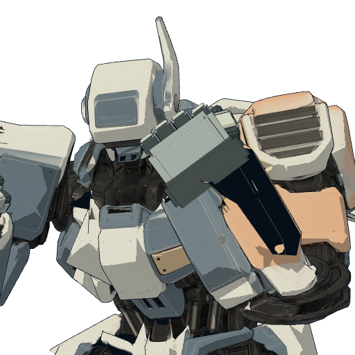现有素材 · 仅辨认对象 · 不是画风靶图具体设计：轻灵、可读的人形关节；拳脚是第一识别点，肩胯留活动空间；天冲拳要帅且完整，不为科技感乱加炮口要覆盖的状态：普通 / 蓄劲 / 护势 / 轻损 / 失能规格：设定图长边3072–4096；立绘2048×3072透明；半身2048²；头像1024²；可编辑分层源二维外援完成造型、各用途图与分层；低模、UV、骨架适配和导出由接入方完成。若委托三维，则追加TECH-UNIT。 必须先完成同源设定母版和正交结构交接，详见背景与三视图制作规范。查看对应方向参考 ↗必交制作链：设定 → 结构母版 → 同源正交视图 → 分件/状态 → 建模交接。看对齐与验收要求；不是三张独立生图拼板。逐文件交付 · 15个文件位（含源与差分导出）incoming/M01/concept.pngincoming/M01/design_master.pngincoming/M01/design_record.jsonincoming/M01/reuse_sources.jsonincoming/M01/ortho_front.pngincoming/M01/ortho_right.pngincoming/M01/ortho_back.pngincoming/M01/design_views.pngincoming/M01/head_and_connections.pngincoming/M01/parts_and_palette.pngincoming/M01/stand.pngincoming/M01/bust.pngincoming/M01/portrait.pngincoming/M01/state_sheet.pngincoming/M01/source.psd现有资源和实际接入位置game-godot/assets/formula_lab/stage_battle_v11/hero.glbgame-godot/assets/formula_lab/linked_campaign_v6/portraits/hero.pnggame-godot/scripts/formula_lab/linked_campaign/catalog.gdgame-godot/scripts/formula_lab/linked_campaign/rounds/round_armaments.gdgame-godot/scripts/formula_lab/linked_campaign/campaign_world.gdgame-godot/scripts/formula_lab/linked_campaign/v5/rescue_data.gd
M02当前工务城及其已列专关旧拳王重心拳击IP映射：Real Steel／铁甲钢拳；辅以机动武斗式师徒气质项目明确拳击作品来源；未指定Atom、Zeus或某台G高达为唯一原型本作背景：旧拳王是17米自主退役武斗实机，带着训练、失败和修复的经历重新登台；右拳护具只是部件。它有自己的节拍和尊严，不是等人接管的废铁。保留的识别与性格：拳击机器人应有护拳、紧凑头胸、重心转换与承受重击的结构；站姿先像拳手，再加机甲细节。本作设计落点：保留旧机的维修层次和体术力量感；拳套、前臂、肩腰关系必须在三视图和护架姿态中一致。不能画错：不可照搬原电影某一机器人，也不可变成落魄喜剧胖子；污迹不能代替拳击机械结构。背景出处与原IP看图入口本包未附该项官方图像入口。按明确IP来源补实际参考，并在回传记录；原创项不硬配其他作品角色。docs/superpowers/specs/data/canon/entities.tsv · V353U048docs/superpowers/specs/data/research/robot_culture_ip_roster_mapping_v0_1.tsv · IP033docs/superpowers/specs/data/story/v35_3_playable_roster_expansion_v35_3.tsv · V353U048查看随包来源摘录 · 怎样区分当前身份、旧Roster与视觉参考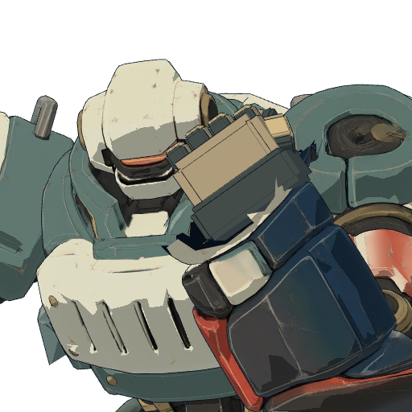现有素材 · 仅辨认对象 · 不是画风靶图具体设计：拳套/前臂、胸腹与低重心形成主轮廓；拳击手的肩胯关系明确；旧不等于污脏颗粒堆满要覆盖的状态：普通 / 接拳 / 重拳预备 / 轻损 / 失能规格：设定图长边3072–4096；立绘2048×3072透明；半身2048²；头像1024²；可编辑分层源二维外援完成造型、各用途图与分层；低模、UV、骨架适配和导出由接入方完成。若委托三维，则追加TECH-UNIT。 必须先完成同源设定母版和正交结构交接，详见背景与三视图制作规范。查看对应方向参考 ↗必交制作链：设定 → 结构母版 → 同源正交视图 → 分件/状态 → 建模交接。看对齐与验收要求；不是三张独立生图拼板。逐文件交付 · 15个文件位（含源与差分导出）incoming/M02/concept.pngincoming/M02/design_master.pngincoming/M02/design_record.jsonincoming/M02/reuse_sources.jsonincoming/M02/ortho_front.pngincoming/M02/ortho_right.pngincoming/M02/ortho_back.pngincoming/M02/design_views.pngincoming/M02/head_and_connections.pngincoming/M02/parts_and_palette.pngincoming/M02/stand.pngincoming/M02/bust.pngincoming/M02/portrait.pngincoming/M02/state_sheet.pngincoming/M02/source.psd现有资源和实际接入位置game-godot/assets/formula_lab/stage_battle_v11/boxer.glbgame-godot/assets/formula_lab/linked_campaign_v6/portraits/boxer.pnggame-godot/scripts/formula_lab/linked_campaign/catalog.gdgame-godot/scripts/formula_lab/linked_campaign/rounds/round_armaments.gdgame-godot/scripts/formula_lab/linked_campaign/campaign_world.gdgame-godot/scripts/formula_lab/linked_campaign/v5/rescue_data.gd
M03当前工务城及其已列专关馆守 Z独臂守护、牵引、承重IP映射：Mazinger Z／魔神Z及旧超级机器人谱系当前Canon明确内部锚本作背景：馆守Z是万机馆18米旧巨神，“旧守护者”是同一机魂的日常称呼。C01原右拳与完整前臂已毁，之后用临时巡展臂装，真正后继右臂要另有剧情。它与兜灯有长期维修和守护关系。保留的识别与性格：开祖超级系的庄严大色块、头胸焦点、重前臂和旧巨神份量；要能看出曾经能使火箭拳的身体，而非城市普通工程机。本作设计落点：本批保持当前缺臂事实与左臂战斗/支撑能力。临时右侧装置另画接口，不补成完整拳头；导览终端与本体共享身份标识。不能画错：不能为左右对称长回原右拳；不能把轮式终端画成第二个独立机魂；也不能直接复制魔神Z面部与胸甲。背景出处与原IP看图入口魔神Z：官方模型多角度图 — 看开祖超级机器人的头胸焦点、粗壮前臂和大色块；馆守Z是项目再设计，不能照搬整机。docs/superpowers/specs/data/canon/entities.tsv · V353U001docs/superpowers/specs/data/canon/entities.tsv · CH002docs/superpowers/specs/data/canon/entities.tsv · MECHA_GUARDIAN_TOURING_ARMdocs/superpowers/specs/data/research/robot_culture_ip_roster_mapping_v0_1.tsv · IP001查看随包来源摘录 · 怎样区分当前身份、旧Roster与视觉参考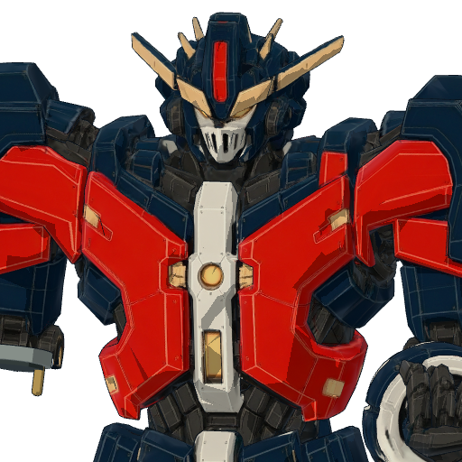现有素材 · 仅辨认对象 · 不是画风靶图具体设计：保留馆守身份锚和当前剧情原右前臂毁损；不能为对称补出完整右拳。左臂的牵引/支撑构造读得清要覆盖的状态：普通 / 支撑 / 牵引 / 受损 / 失能规格：设定图长边3072–4096；立绘2048×3072透明；半身2048²；头像1024²；可编辑分层源二维外援完成造型、各用途图与分层；低模、UV、骨架适配和导出由接入方完成。若委托三维，则追加TECH-UNIT。 必须先完成同源设定母版和正交结构交接，详见背景与三视图制作规范。查看对应方向参考 ↗必交制作链：设定 → 结构母版 → 同源正交视图 → 分件/状态 → 建模交接。看对齐与验收要求；不是三张独立生图拼板。逐文件交付 · 16个文件位（含源与差分导出）incoming/M03/concept.pngincoming/M03/design_master.pngincoming/M03/design_record.jsonincoming/M03/reuse_sources.jsonincoming/M03/ortho_front.pngincoming/M03/ortho_right.pngincoming/M03/ortho_back.pngincoming/M03/design_views.pngincoming/M03/head_and_connections.pngincoming/M03/parts_and_palette.pngincoming/M03/stand.pngincoming/M03/bust.pngincoming/M03/portrait.pngincoming/M03/state_sheet.pngincoming/M03/source.psdincoming/M03/ortho_left.png现有资源和实际接入位置game-godot/assets/formula_lab/guardian_meshy_v1/guardian.glbgame-godot/assets/formula_lab/linked_campaign_v6/portraits/guardian.pnggame-godot/scripts/formula_lab/linked_campaign/catalog.gdgame-godot/scripts/formula_lab/linked_campaign/rounds/round_armaments.gdgame-godot/scripts/formula_lab/linked_campaign/campaign_world.gdgame-godot/scripts/formula_lab/linked_campaign/v5/rescue_data.gd
M04当前工务城及其已列专关社勇王勇者救援与破围IP映射：GaoGaiGar／勇者王与Brave勇者系列当前Canon明确内部锚本作背景：社勇王的物理核心是豪司驾驶的完整机器人“勇拳”，与外部腿架、肩背组件合体；核心和合体不是两台长期机体。完整合体的主体AI能拒绝危险命令，并与豪司重新协作。保留的识别与性格：勇者系英雄胸部焦点、强大拳甲、完整核心进入外装后的合体增量、巨大工具与救援的浪漫；不削去热血和必杀的魅力。本作设计落点：按勇拳完整身体→外部组件→社勇王合体画同一套零件表。可读的合体承力和驾驶关系优先于装甲花纹。不能画错：勇拳不是空胸内胆或只有一只拳头；不提前新增“金章”独立人格；不照搬原作合体分镜。背景出处与原IP看图入口勇者王：官方合体结构与展示图 — 看完整核心机和外部组件如何形成英雄合体轮廓；不把社勇王核心画成空内胆。docs/superpowers/specs/data/canon/entities.tsv · V353U024docs/superpowers/specs/data/canon/entities.tsv · MECHA_BRAVE_FIST_PROTOTYPEdocs/superpowers/specs/data/canon/entities.tsv · SOCIAL_BRAVE_AI_REFUSALdocs/superpowers/specs/data/research/robot_culture_ip_roster_mapping_v0_1.tsv · IP008查看随包来源摘录 · 怎样区分当前身份、旧Roster与视觉参考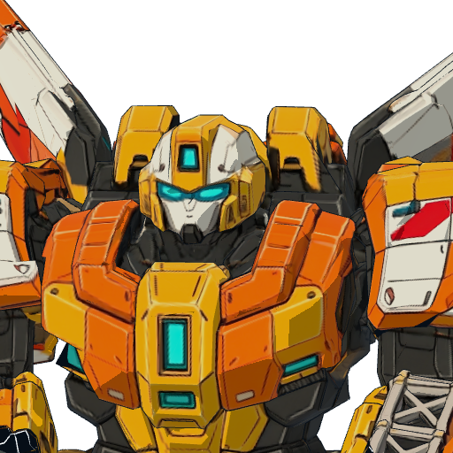现有素材 · 仅辨认对象 · 不是画风靶图具体设计：与勇拳核心、外部腿架和肩包使用同一设计；英雄大色块、拳甲和胸部焦点明确，不是一团金属碎件要覆盖的状态：普通 / 护路 / 终式预备 / 受损 / 失能规格：设定图长边3072–4096；立绘2048×3072透明；半身2048²；头像1024²；可编辑分层源二维外援完成造型、各用途图与分层；低模、UV、骨架适配和导出由接入方完成。若委托三维，则追加TECH-UNIT。 必须先完成同源设定母版和正交结构交接，详见背景与三视图制作规范。查看对应方向参考 ↗必交制作链：设定 → 结构母版 → 同源正交视图 → 分件/状态 → 建模交接。看对齐与验收要求；不是三张独立生图拼板。逐文件交付 · 15个文件位（含源与差分导出）incoming/M04/concept.pngincoming/M04/design_master.pngincoming/M04/design_record.jsonincoming/M04/reuse_sources.jsonincoming/M04/ortho_front.pngincoming/M04/ortho_right.pngincoming/M04/ortho_back.pngincoming/M04/design_views.pngincoming/M04/head_and_connections.pngincoming/M04/parts_and_palette.pngincoming/M04/stand.pngincoming/M04/bust.pngincoming/M04/portrait.pngincoming/M04/state_sheet.pngincoming/M04/source.psd现有资源和实际接入位置game-godot/assets/formula_lab/linked_campaign_v4/models/brave.glbgame-godot/assets/formula_lab/linked_campaign_v6/portraits/brave.pnggame-godot/scripts/formula_lab/linked_campaign/catalog.gdgame-godot/scripts/formula_lab/linked_campaign/rounds/round_armaments.gdgame-godot/scripts/formula_lab/linked_campaign/campaign_world.gdgame-godot/scripts/formula_lab/linked_campaign/v5/rescue_data.gd
M05当前工务城及其已列专关完全版王者2×2飞行重装IP映射：全装主角机／高达式武器包审美；额角局部参考古铁巨神综合视觉参考，来自用户明确要求；没有单一原IP一对一锁定本作背景：完全版王者是20米全装竞技冠军，自主机魂享受舞台、冠军和全装备，执意完成二十多年前未播的最终话。不是被装备压垮的笑话，也不是胶价王遥控的道具。它可以主动卸装，未来仍能再度全装。保留的识别与性格：最重要是帅气、主角感和武装冗余：翼、盾、重炮、巨钻都要有体积与用途；不能因去除典型高达嘴而变成圆盘头或蠢笨头。本作设计落点：头部左右对称，面罩去典型双折线嘴槽，中央前向角结构紧凑；巨钻固定右手/右前臂；两根背炮分别绕肩背根部轴朝前。基础身体完整，卸下任何装备都能追认接口。棋盘为2×2显示档，保留飞行感。不能画错：禁止裆部/膝部冒钻头、炮口向后、无根悬浮装备；不照搬某台高达全机，也不能将全装魅力删成普通轻甲。背景出处与原IP看图入口古铁巨神：官方结构参考 — 只参考用户指定的前向额角构造和力量感；不将完全版王者改成古铁整机。高达创战者：官方作品入口 — 理解玩家构筑、改件和竞技动作；这是家族来源，不等于无牌被指定为某台原作主角机。docs/superpowers/specs/data/canon/entities.tsv · MECHA_C02_COMPLETE_KINGuser · 本侧会话继承的用户头部、巨钻、双肩炮与全装要求；仅作设计约束查看随包来源摘录 · 怎样区分当前身份、旧Roster与视觉参考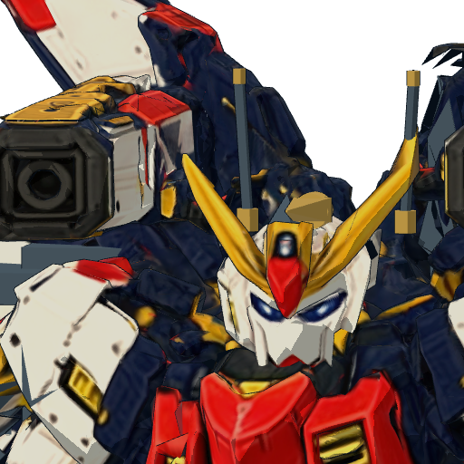现有素材 · 仅辨认对象 · 不是画风靶图具体设计：帅气对称头部；保留冗余武装的魅力；面罩去典型嘴部刻槽；右手/右前臂连接巨钻；双背炮有肩背轴且朝前；翼与推进包逻辑一致要覆盖的状态：全装备 / 部分卸装 / 轻装 / 蓄炮 / 受损 / 失能规格：设定图长边3072–4096；立绘2048×3072透明；半身2048²；头像1024²；可编辑分层源二维外援完成造型、各用途图与分层；低模、UV、骨架适配和导出由接入方完成。若委托三维，则追加TECH-UNIT。 必须先完成同源设定母版和正交结构交接，详见背景与三视图制作规范。查看对应方向参考 ↗必交制作链：设定 → 结构母版 → 同源正交视图 → 分件/状态 → 建模交接。看对齐与验收要求；不是三张独立生图拼板。逐文件交付 · 17个文件位（含源与差分导出）incoming/M05/concept.pngincoming/M05/design_master.pngincoming/M05/design_record.jsonincoming/M05/reuse_sources.jsonincoming/M05/ortho_front.pngincoming/M05/ortho_right.pngincoming/M05/ortho_back.pngincoming/M05/design_views.pngincoming/M05/head_and_connections.pngincoming/M05/parts_and_palette.pngincoming/M05/stand.pngincoming/M05/bust.pngincoming/M05/portrait.pngincoming/M05/state_sheet.pngincoming/M05/source.psdincoming/M05/ortho_left.pngincoming/M05/ortho_top.png现有资源和实际接入位置game-godot/assets/formula_lab/linked_campaign_v6/models/king-modular.glbgame-godot/assets/formula_lab/linked_campaign_v6/portraits/king.pnggame-godot/scripts/formula_lab/linked_campaign/catalog.gdgame-godot/scripts/formula_lab/linked_campaign/rounds/round_armaments.gdgame-godot/scripts/formula_lab/linked_campaign/campaign_world.gdgame-godot/scripts/formula_lab/linked_campaign/v5/rescue_data.gd
M06当前工务城及其已列专关预算二号精密快修与液压顶推IP映射：Patlabor／机动警察式预算劳务机项目Roster明确作品家族；非某台原作机的固定换名本作背景：预算二号是低成本维修、撤离、补给机，擅长以廉价替代件完成重要工程。它与城市工务体系相连，预算限制是工作条件，不是纯笑话。保留的识别与性格：城市职业机甲的结实外壳、易维护接口、工具而非兵器的工作臂；低成本仍要专业可靠。本作设计落点：与吊装/警备家族允许共享基础件，但液压顶具、备件匣和灵巧工具臂形成自己剪影；用通用手部动作配设施状态表达维修。不能画错：不要把军用机枪换成扳手就交付；不画成废品拼凑小丑，也不需要画柜内逐根接线。背景出处与原IP看图入口机动警察：官方机体目录 — 看警务/劳务用途怎样成为机体轮廓、护具、维护口和装备的差别。docs/superpowers/specs/data/canon/entities.tsv · V353U032docs/superpowers/specs/data/story/v35_3_playable_roster_expansion_v35_3.tsv · V353U032docs/superpowers/specs/data/research/robot_culture_ip_roster_mapping_v0_1.tsv · IP011查看随包来源摘录 · 怎样区分当前身份、旧Roster与视觉参考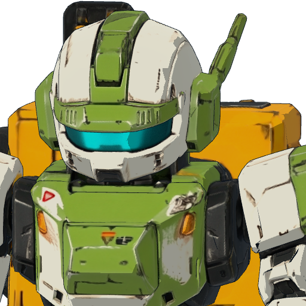现有素材 · 仅辨认对象 · 不是画风靶图具体设计：小而精悍的工程机身份；液压顶具、备件匣、工具臂可辨；不是拿枪换名字；和消防、吊装机明显不同要覆盖的状态：普通 / 顶推 / 焊补 / 备件耗尽 / 受损规格：设定图长边3072–4096；立绘2048×3072透明；半身2048²；头像1024²；可编辑分层源二维外援完成造型、各用途图与分层；低模、UV、骨架适配和导出由接入方完成。若委托三维，则追加TECH-UNIT。 必须先完成同源设定母版和正交结构交接，详见背景与三视图制作规范。查看对应方向参考 ↗必交制作链：设定 → 结构母版 → 同源正交视图 → 分件/状态 → 建模交接。看对齐与验收要求；不是三张独立生图拼板。逐文件交付 · 15个文件位（含源与差分导出）incoming/M06/concept.pngincoming/M06/design_master.pngincoming/M06/design_record.jsonincoming/M06/reuse_sources.jsonincoming/M06/ortho_front.pngincoming/M06/ortho_right.pngincoming/M06/ortho_back.pngincoming/M06/design_views.pngincoming/M06/head_and_connections.pngincoming/M06/parts_and_palette.pngincoming/M06/stand.pngincoming/M06/bust.pngincoming/M06/portrait.pngincoming/M06/state_sheet.pngincoming/M06/source.psd现有资源和实际接入位置game-godot/assets/formula_lab/linked_campaign_v4/models/engineer.glbgame-godot/assets/formula_lab/linked_campaign_v6/portraits/engineer.pnggame-godot/scripts/formula_lab/linked_campaign/catalog.gdgame-godot/scripts/formula_lab/linked_campaign/rounds/round_armaments.gdgame-godot/scripts/formula_lab/linked_campaign/campaign_world.gdgame-godot/scripts/formula_lab/linked_campaign/v5/rescue_data.gd
M07当前工务城及其已列专关市政吊装机吊运、牵引、承重IP映射：Patlabor／机动警察式城市劳务机项目Roster与Canon明确职业机甲家族本作背景：市政吊装机是推拉、吊运、改轨和地形施工的城市公共支援；有工作身份，不只是地图上可移动的钩子。保留的识别与性格：重型作业体态、驾驶/观察区、吊臂根部、绞盘、稳定腿与配重的清楚关系。本作设计落点：保留与预算二号、警备机的工务制造谱系，但起吊姿态和主轮廓独立。收臂/展开用同一套构件与转轴。不能画错：不要空中凭空长绳钩；不要将吊车车身与机体画成两套无关设计。背景出处与原IP看图入口机动警察：官方机体目录 — 看警务/劳务用途怎样成为机体轮廓、护具、维护口和装备的差别。docs/superpowers/specs/data/canon/entities.tsv · V353U031docs/superpowers/specs/data/story/v35_3_playable_roster_expansion_v35_3.tsv · V353U031docs/superpowers/specs/data/research/robot_culture_ip_roster_mapping_v0_1.tsv · IP011查看随包来源摘录 · 怎样区分当前身份、旧Roster与视觉参考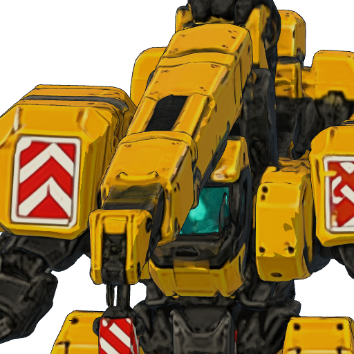现有素材 · 仅辨认对象 · 不是画风靶图具体设计：吊臂根部、绞盘、配重与支脚可信；吊钩与操作者同源，不从空中凭空生成要覆盖的状态：收臂 / 展开 / 吊载 / 停机 / 受损规格：设定图长边3072–4096；立绘2048×3072透明；半身2048²；头像1024²；可编辑分层源二维外援完成造型、各用途图与分层；低模、UV、骨架适配和导出由接入方完成。若委托三维，则追加TECH-UNIT。 必须先完成同源设定母版和正交结构交接，详见背景与三视图制作规范。查看对应方向参考 ↗必交制作链：设定 → 结构母版 → 同源正交视图 → 分件/状态 → 建模交接。看对齐与验收要求；不是三张独立生图拼板。逐文件交付 · 17个文件位（含源与差分导出）incoming/M07/concept.pngincoming/M07/design_master.pngincoming/M07/design_record.jsonincoming/M07/reuse_sources.jsonincoming/M07/ortho_front.pngincoming/M07/ortho_right.pngincoming/M07/ortho_back.pngincoming/M07/design_views.pngincoming/M07/head_and_connections.pngincoming/M07/parts_and_palette.pngincoming/M07/stand.pngincoming/M07/bust.pngincoming/M07/portrait.pngincoming/M07/state_sheet.pngincoming/M07/source.psdincoming/M07/ortho_left.pngincoming/M07/ortho_top.png现有资源和实际接入位置game-godot/assets/formula_lab/linked_campaign_v4/models/crane.glbgame-godot/assets/formula_lab/linked_campaign_v6/portraits/crane.pnggame-godot/scripts/formula_lab/linked_campaign/catalog.gdgame-godot/scripts/formula_lab/linked_campaign/rounds/round_armaments.gdgame-godot/scripts/formula_lab/linked_campaign/campaign_world.gdgame-godot/scripts/formula_lab/linked_campaign/v5/rescue_data.gd
M08当前工务城及其已列专关雷翎空中狙击与爆破导弹IP映射：Transformers Starscream／红蜘蛛所代表的Seeker喷气重涂谱系Roster明确到红蜘蛛重涂军团；雷翎是项目独立主体本作背景：雷翎承担远射、侦察与机动换位。它与同模重涂的文化有关，颜色不是它的全部身份；轮换与自主开火属于自己的选择。保留的识别与性格：喷气机鼻/座舱、机翼、进气与尾部组件能在机器人身体追认；双翼战机家族轮廓要保留，远射武装轴明确。本作设计落点：独立头部、翼与武器设计；狙击光束与爆破导弹分清。人形与飞机两套三视图共享零件编号和涂装，不是随意加翼的高达。不能画错：不直接复制红蜘蛛的具体配色、表情与整机；不能只用重涂贴图替代雷翎的独立身份。背景出处与原IP看图入口变形金刚：红蜘蛛与同模喷气家族 — 看翼、进气道、座舱、尾翼和机体的对应；雷翎保留喷气重涂谱系，不变成任意背翼人形。docs/superpowers/specs/data/canon/entities.tsv · V353U047docs/superpowers/specs/data/story/v35_3_playable_roster_expansion_v35_3.tsv · V353U047docs/superpowers/specs/data/research/robot_culture_ip_roster_mapping_v0_1.tsv · IP021查看随包来源摘录 · 怎样区分当前身份、旧Roster与视觉参考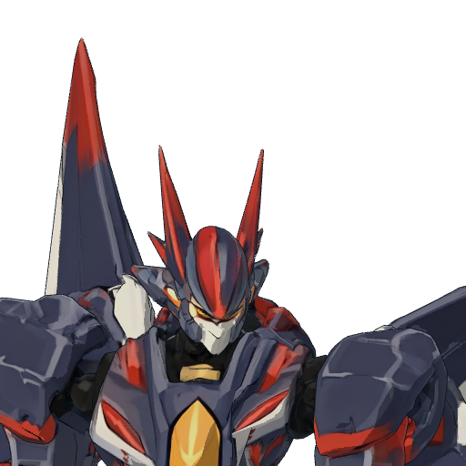现有素材 · 仅辨认对象 · 不是画风靶图具体设计：狙击长轴和轻快飞行轮廓；光束发射器与导弹挂架分清；不能与白色样机共用同一剪影要覆盖的状态：普通 / 瞄准 / 低空 / 变形 / 受损规格：设定图长边3072–4096；立绘2048×3072透明；半身2048²；头像1024²；可编辑分层源二维外援完成造型、各用途图与分层；低模、UV、骨架适配和导出由接入方完成。若委托三维，则追加TECH-UNIT。 必须先完成同源设定母版和正交结构交接，详见背景与三视图制作规范。查看对应方向参考 ↗必交制作链：设定 → 结构母版 → 同源正交视图 → 分件/状态 → 建模交接。看对齐与验收要求；不是三张独立生图拼板。逐文件交付 · 16个文件位（含源与差分导出）incoming/M08/concept.pngincoming/M08/design_master.pngincoming/M08/design_record.jsonincoming/M08/reuse_sources.jsonincoming/M08/ortho_front.pngincoming/M08/ortho_right.pngincoming/M08/ortho_back.pngincoming/M08/design_views.pngincoming/M08/head_and_connections.pngincoming/M08/parts_and_palette.pngincoming/M08/stand.pngincoming/M08/bust.pngincoming/M08/portrait.pngincoming/M08/state_sheet.pngincoming/M08/source.psdincoming/M08/ortho_top.png现有资源和实际接入位置game-godot/assets/formula_lab/linked_campaign_v4/models/leiling.glbgame-godot/assets/formula_lab/linked_campaign_v6/portraits/leiling.pnggame-godot/scripts/formula_lab/linked_campaign/catalog.gdgame-godot/scripts/formula_lab/linked_campaign/rounds/round_armaments.gdgame-godot/scripts/formula_lab/linked_campaign/campaign_world.gdgame-godot/scripts/formula_lab/linked_campaign/v5/rescue_data.gd
M09当前工务城及其已列专关灰崎警备劳务机拘束、封路、警戒IP映射：Patlabor／机动警察：城市警备劳务机项目明确作品家族；英格拉姆仅为职业造型实例本作背景：灰崎警备劳务机承担非致命控制、封路和警戒，可以撤回不安全动作继续协作。制服与劳务的冲突比普通军用战斗更重要。保留的识别与性格：警务观察头、可辨的防护、拘束器和交通控制装备；像在城市执勤的机甲。本作设计落点：索具、折叠墙和收纳位置构成专用轮廓；保持职业配色的明快与秩序，不套工程机同一涂装。不能画错：不是全副战争炮塔的量产兵；不照搬英格拉姆整机或真实警徽。背景出处与原IP看图入口机动警察：98式英格拉姆1号机 — 城市警务机的观察头、护甲、工具和人体操作关系，仅作职业机甲实例。docs/superpowers/specs/data/canon/entities.tsv · V353U033docs/superpowers/specs/data/story/v35_3_playable_roster_expansion_v35_3.tsv · V353U033docs/superpowers/specs/data/research/robot_culture_ip_roster_mapping_v0_1.tsv · IP011查看随包来源摘录 · 怎样区分当前身份、旧Roster与视觉参考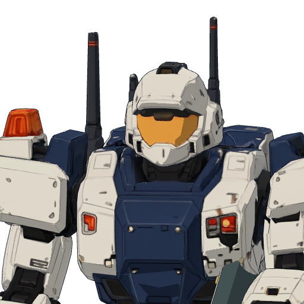现有素材 · 仅辨认对象 · 不是画风靶图具体设计：警备头盔/观察结构、索具和折叠屏障；城市警备用途，不是军绿杂兵；靠结构区分于预算二号要覆盖的状态：普通 / 张索 / 立墙 / 撤回 / 受损规格：设定图长边3072–4096；立绘2048×3072透明；半身2048²；头像1024²；可编辑分层源二维外援完成造型、各用途图与分层；低模、UV、骨架适配和导出由接入方完成。若委托三维，则追加TECH-UNIT。 必须先完成同源设定母版和正交结构交接，详见背景与三视图制作规范。查看对应方向参考 ↗必交制作链：设定 → 结构母版 → 同源正交视图 → 分件/状态 → 建模交接。看对齐与验收要求；不是三张独立生图拼板。逐文件交付 · 16个文件位（含源与差分导出）incoming/M09/concept.pngincoming/M09/design_master.pngincoming/M09/design_record.jsonincoming/M09/reuse_sources.jsonincoming/M09/ortho_front.pngincoming/M09/ortho_right.pngincoming/M09/ortho_back.pngincoming/M09/design_views.pngincoming/M09/head_and_connections.pngincoming/M09/parts_and_palette.pngincoming/M09/stand.pngincoming/M09/bust.pngincoming/M09/portrait.pngincoming/M09/state_sheet.pngincoming/M09/source.psdincoming/M09/ortho_left.png现有资源和实际接入位置game-godot/assets/formula_lab/linked_campaign_v4/models/police.glbgame-godot/assets/formula_lab/linked_campaign_v6/portraits/police.pnggame-godot/scripts/formula_lab/linked_campaign/catalog.gdgame-godot/scripts/formula_lab/linked_campaign/rounds/round_armaments.gdgame-godot/scripts/formula_lab/linked_campaign/campaign_world.gdgame-godot/scripts/formula_lab/linked_campaign/v5/rescue_data.gd
M10当前工务城及其已列专关消防架桥机涉水消防与临时通路IP映射：城市消防／工程机器人；与Patlabor城市职业机甲语境相通项目指定职业谱系，没有固定单一原IP机型本作背景：消防架桥机属于城市消防驾驶组，用整块桥板压住燃烧通道、铺设安全撤离路，同时灭火和冷却。它有原驾驶组与所属城市，不自动属于主角舰队。保留的识别与性格：消防供液、耐热护板、桥板收纳、宽稳站姿；功能应一眼区分于维修和警備。本作设计落点：完整/架桥/收纳采用同一轴系；以装备和状态表达高价值救援，不强求精密人与设备接触。不能画错：不强制继承旧版左前腿伤；不把消防机普通枪炮化，也不把大型桥板画成手中小道具。背景出处与原IP看图入口机动警察：官方机体目录 — 看警务/劳务用途怎样成为机体轮廓、护具、维护口和装备的差别。docs/superpowers/specs/data/canon/entities.tsv · V353U034docs/superpowers/specs/data/story/v35_3_playable_roster_expansion_v35_3.tsv · V353U034查看随包来源摘录 · 怎样区分当前身份、旧Roster与视觉参考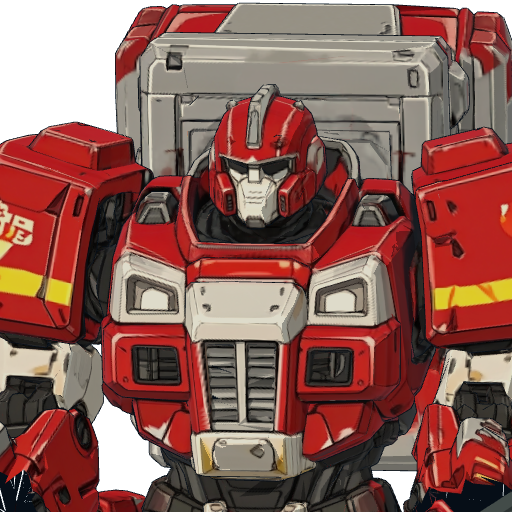现有素材 · 仅辨认对象 · 不是画风靶图具体设计：消防供液、架桥收纳、耐热护板三个用途分清；不强制继承旧版左前腿伤，不能整机刷灰冒充旧机要覆盖的状态：普通 / 涉水 / 泡沫 / 架桥 / 受损规格：设定图长边3072–4096；立绘2048×3072透明；半身2048²；头像1024²；可编辑分层源二维外援完成造型、各用途图与分层；低模、UV、骨架适配和导出由接入方完成。若委托三维，则追加TECH-UNIT。 必须先完成同源设定母版和正交结构交接，详见背景与三视图制作规范。查看对应方向参考 ↗必交制作链：设定 → 结构母版 → 同源正交视图 → 分件/状态 → 建模交接。看对齐与验收要求；不是三张独立生图拼板。逐文件交付 · 15个文件位（含源与差分导出）incoming/M10/concept.pngincoming/M10/design_master.pngincoming/M10/design_record.jsonincoming/M10/reuse_sources.jsonincoming/M10/ortho_front.pngincoming/M10/ortho_right.pngincoming/M10/ortho_back.pngincoming/M10/design_views.pngincoming/M10/head_and_connections.pngincoming/M10/parts_and_palette.pngincoming/M10/stand.pngincoming/M10/bust.pngincoming/M10/portrait.pngincoming/M10/state_sheet.pngincoming/M10/source.psd现有资源和实际接入位置game-godot/assets/formula_lab/linked_campaign_v4/models/fire.glbgame-godot/assets/formula_lab/linked_campaign_v6/portraits/fire.pnggame-godot/scripts/formula_lab/linked_campaign/catalog.gdgame-godot/scripts/formula_lab/linked_campaign/rounds/round_armaments.gdgame-godot/scripts/formula_lab/linked_campaign/campaign_world.gdgame-godot/scripts/formula_lab/linked_campaign/v5/rescue_data.gd
M11当前工务城及其已列专关货柜领袖变形护送、群盾、搬运IP映射：Transformers Optimus／Autobots：领袖与载具生命文化项目明确来源；用户明确要求重新设计，不能直接使用擎天柱原设本作背景：货柜领袖拥有全尺寸载具身体和独立人格，沿地面重载路线护送队伍与物资。它习惯车灯、喇叭和短频道，在作出个人选择时才说完整句子；不是哑巴，也不是广播拼句。保留的识别与性格：卡车零件变为身体的可信结构、领袖的稳健站姿、保护同伴与车队的气质；重载车的宽厚和力量应保留。本作设计落点：重新设计头部、胸廓、车头和货台组合，不用标志性的现成擎天柱头胸；人形与车辆须同一零件身份，护场与搬运装备有来源。不能画错：不能只把擎天柱改颜色、改名；不能把它画成需要人驾驶才有意志的普通卡车或大黄蜂式广播角色。背景出处与原IP看图入口变形金刚：官方领袖载具/机体参考 — 理解卡车零件转入身体的可追认性、重量和领袖站姿；不是货柜领袖的照搬模板。docs/superpowers/specs/data/canon/entities.tsv · V353U043docs/superpowers/specs/data/story/v35_3_playable_roster_expansion_v35_3.tsv · V353U043docs/superpowers/specs/data/research/robot_culture_ip_roster_mapping_v0_1.tsv · IP020查看随包来源摘录 · 怎样区分当前身份、旧Roster与视觉参考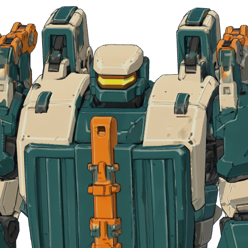现有素材 · 仅辨认对象 · 不是画风靶图具体设计：重新设计原创轮廓，不直接用现成变形金刚头胸；车体零件能在机体上追认；厚重可靠但不笨拙要覆盖的状态：机体 / 车辆 / 护场 / 吊运 / 受损规格：设定图长边3072–4096；立绘2048×3072透明；半身2048²；头像1024²；可编辑分层源二维外援完成造型、各用途图与分层；低模、UV、骨架适配和导出由接入方完成。若委托三维，则追加TECH-UNIT。 必须先完成同源设定母版和正交结构交接，详见背景与三视图制作规范。查看对应方向参考 ↗必交制作链：设定 → 结构母版 → 同源正交视图 → 分件/状态 → 建模交接。看对齐与验收要求；不是三张独立生图拼板。逐文件交付 · 17个文件位（含源与差分导出）incoming/M11/concept.pngincoming/M11/design_master.pngincoming/M11/design_record.jsonincoming/M11/reuse_sources.jsonincoming/M11/ortho_front.pngincoming/M11/ortho_right.pngincoming/M11/ortho_back.pngincoming/M11/design_views.pngincoming/M11/head_and_connections.pngincoming/M11/parts_and_palette.pngincoming/M11/stand.pngincoming/M11/bust.pngincoming/M11/portrait.pngincoming/M11/state_sheet.pngincoming/M11/source.psdincoming/M11/ortho_left.pngincoming/M11/ortho_top.png现有资源和实际接入位置game-godot/assets/formula_lab/linked_campaign_v4/models/cargo.glbgame-godot/assets/formula_lab/linked_campaign_v6/portraits/cargo.pnggame-godot/scripts/formula_lab/linked_campaign/catalog.gdgame-godot/scripts/formula_lab/linked_campaign/rounds/round_armaments.gdgame-godot/scripts/formula_lab/linked_campaign/campaign_world.gdgame-godot/scripts/formula_lab/linked_campaign/v5/rescue_data.gd
M12当前工务城及其已列专关镜星棱镜标定与干扰IP映射：Transformers同模重涂／镜像世界文化项目明确镜像重涂主题；未锁定具体原作角色或Shattered Glass配色本作背景：镜星是电子干扰与敌我标识翻转路线机，重涂不改变其独立主体身份。它的立场必须从行动体现，不能用配色自动判善恶。保留的识别与性格：与同模家族的结构亲缘、局部不同的感测/反射组件、由相同轮廓产生不同人格的趣味。本作设计落点：棱镜、感测器和干扰器是独立可识别部件；母体未明确的结构不要擅自绑定为雷翎或擎天柱，先标出共享候选与当前独立件。不能画错：不要仅复制雷翎换紫色；不得编造一个已确定的原IP角色对应。背景出处与原IP看图入口变形金刚：红蜘蛛与同模喷气家族 — 看翼、进气道、座舱、尾翼和机体的对应；雷翎保留喷气重涂谱系，不变成任意背翼人形。docs/superpowers/specs/data/canon/entities.tsv · V353U046docs/superpowers/specs/data/story/v35_3_playable_roster_expansion_v35_3.tsv · V353U046docs/superpowers/specs/data/research/robot_culture_ip_roster_mapping_v0_1.tsv · IP021查看随包来源摘录 · 怎样区分当前身份、旧Roster与视觉参考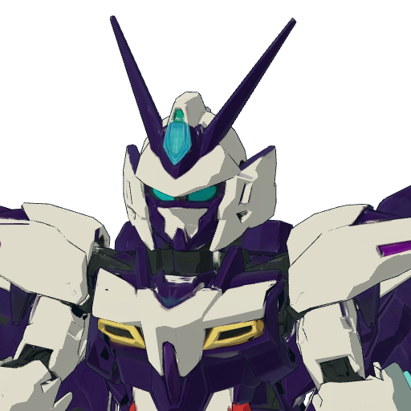现有素材 · 仅辨认对象 · 不是画风靶图具体设计：棱镜/感测器形成独有轮廓；工具性发光集中在作用器，避免霓虹通体发亮要覆盖的状态：普通 / 标定 / 干扰 / 失去导引 / 受损规格：设定图长边3072–4096；立绘2048×3072透明；半身2048²；头像1024²；可编辑分层源二维外援完成造型、各用途图与分层；低模、UV、骨架适配和导出由接入方完成。若委托三维，则追加TECH-UNIT。 必须先完成同源设定母版和正交结构交接，详见背景与三视图制作规范。查看对应方向参考 ↗必交制作链：设定 → 结构母版 → 同源正交视图 → 分件/状态 → 建模交接。看对齐与验收要求；不是三张独立生图拼板。逐文件交付 · 16个文件位（含源与差分导出）incoming/M12/concept.pngincoming/M12/design_master.pngincoming/M12/design_record.jsonincoming/M12/reuse_sources.jsonincoming/M12/ortho_front.pngincoming/M12/ortho_right.pngincoming/M12/ortho_back.pngincoming/M12/design_views.pngincoming/M12/head_and_connections.pngincoming/M12/parts_and_palette.pngincoming/M12/stand.pngincoming/M12/bust.pngincoming/M12/portrait.pngincoming/M12/state_sheet.pngincoming/M12/source.psdincoming/M12/ortho_top.png现有资源和实际接入位置game-godot/assets/formula_lab/linked_campaign_v4/models/mirror.glbgame-godot/assets/formula_lab/linked_campaign_v6/portraits/mirror.pnggame-godot/scripts/formula_lab/linked_campaign/catalog.gdgame-godot/scripts/formula_lab/linked_campaign/rounds/round_armaments.gdgame-godot/scripts/formula_lab/linked_campaign/campaign_world.gdgame-godot/scripts/formula_lab/linked_campaign/v5/rescue_data.gd
M13当前工务城及其已列专关白色样机贯穿射击与军刀近防IP映射：Gundam UC／宇宙世纪主角试作机家族当前Demo有此机；IP锚来自Roster，未将旧Roster时间表当当前剧情本作背景：白色样机在本Demo担任贯穿射击与军刀近防。作品家族带来试作机、军用工程和战争中的人机关系；本次没有据此新增驾驶员或正式入队剧情。保留的识别与性格：浅色装甲与深色关节分层、主角试作机的清楚头胸比例、枪盾剑的使用与收纳；有明确UC血统的克制工业感。本作设计落点：RX-78-2仅作家族实例，不是既定唯一母型；重绘独立头胸分区与武装，浅色不用高亮纯白，不能与地面金属糊在一起。不能画错：不要变成无血统的白色工程壳；不要凭此新造阿姆罗对应人物，也不照搬整机标识。背景出处与原IP看图入口高达：RX-78-2官方多角度实例 — 看UC试作主角机的主色分区、深色关节和枪盾剑；不能将此示例冒充项目已锁定型号。docs/superpowers/specs/data/story/v35_3_playable_roster_expansion_v35_3.tsv · V353U007game-godot/scripts/formula_lab/linked_campaign/catalog.gd · white查看随包来源摘录 · 怎样区分当前身份、旧Roster与视觉参考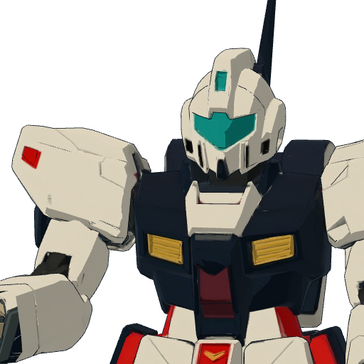现有素材 · 仅辨认对象 · 不是画风靶图具体设计：白色是身份色但大面积不用纯白；深色关节与少量识别色隔开环境；枪与刀的握持、收纳位置明确要覆盖的状态：普通 / 瞄准 / 军刀 / 受损 / 失能规格：设定图长边3072–4096；立绘2048×3072透明；半身2048²；头像1024²；可编辑分层源二维外援完成造型、各用途图与分层；低模、UV、骨架适配和导出由接入方完成。若委托三维，则追加TECH-UNIT。 必须先完成同源设定母版和正交结构交接，详见背景与三视图制作规范。查看对应方向参考 ↗必交制作链：设定 → 结构母版 → 同源正交视图 → 分件/状态 → 建模交接。看对齐与验收要求；不是三张独立生图拼板。逐文件交付 · 15个文件位（含源与差分导出）incoming/M13/concept.pngincoming/M13/design_master.pngincoming/M13/design_record.jsonincoming/M13/reuse_sources.jsonincoming/M13/ortho_front.pngincoming/M13/ortho_right.pngincoming/M13/ortho_back.pngincoming/M13/design_views.pngincoming/M13/head_and_connections.pngincoming/M13/parts_and_palette.pngincoming/M13/stand.pngincoming/M13/bust.pngincoming/M13/portrait.pngincoming/M13/state_sheet.pngincoming/M13/source.psd现有资源和实际接入位置game-godot/assets/formula_lab/linked_campaign_v4/models/white.glbgame-godot/assets/formula_lab/linked_campaign_v6/portraits/white.pnggame-godot/scripts/formula_lab/linked_campaign/catalog.gdgame-godot/scripts/formula_lab/linked_campaign/rounds/round_armaments.gdgame-godot/scripts/formula_lab/linked_campaign/campaign_world.gdgame-godot/scripts/formula_lab/linked_campaign/v5/rescue_data.gd
M14当前工务城及其已列专关歌翼可变机航空震荡与机动IP映射：Macross／超时空要塞：可变战机与文化支援当前Demo有此机；家族映射明确，具体VF型号未锁本作背景：歌翼在本Demo承担航空机动、震荡投弹；家族的意义不止能飞，还包含歌、文化和支援。此次外援提供现有形态，不自行写新歌姬或增加战斗规则。保留的识别与性格：航空器优先的翼面、座舱/感测区、引擎、挂舱与人形对应；飞行时像战机，不像人形平躺。本作设计落点：人形和航空形态各交一致三视图与部件迁移表。VF-1J的中间形态只作结构参考，当前未列可玩第三形态不能偷偷扩充任务。不能画错：不能把雷翎换色就叫歌翼；也不能因为歌字加装与结构无关的乐器。背景出处与原IP看图入口超时空要塞：VF-1J官方多形态实例 — 看航空形态和人形的同一零件身份；VF-1J是示例，未锁为歌翼唯一原型。docs/superpowers/specs/data/story/v35_3_playable_roster_expansion_v35_3.tsv · V353U016docs/superpowers/specs/data/research/robot_culture_ip_roster_mapping_v0_1.tsv · IP005game-godot/scripts/formula_lab/linked_campaign/catalog.gd · song查看随包来源摘录 · 怎样区分当前身份、旧Roster与视觉参考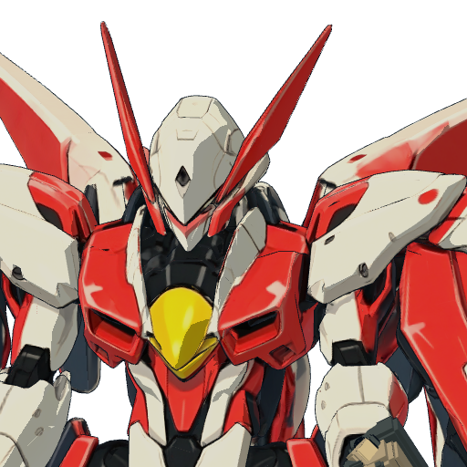现有素材 · 仅辨认对象 · 不是画风靶图具体设计：机翼和人形在同一结构下成立；与雷翎的狙击型不同；震荡投弹器和飞行方向明确要覆盖的状态：人形 / 航空 / 投弹 / 起降 / 受损规格：设定图长边3072–4096；立绘2048×3072透明；半身2048²；头像1024²；可编辑分层源二维外援完成造型、各用途图与分层；低模、UV、骨架适配和导出由接入方完成。若委托三维，则追加TECH-UNIT。 必须先完成同源设定母版和正交结构交接，详见背景与三视图制作规范。查看对应方向参考 ↗必交制作链：设定 → 结构母版 → 同源正交视图 → 分件/状态 → 建模交接。看对齐与验收要求；不是三张独立生图拼板。逐文件交付 · 16个文件位（含源与差分导出）incoming/M14/concept.pngincoming/M14/design_master.pngincoming/M14/design_record.jsonincoming/M14/reuse_sources.jsonincoming/M14/ortho_front.pngincoming/M14/ortho_right.pngincoming/M14/ortho_back.pngincoming/M14/design_views.pngincoming/M14/head_and_connections.pngincoming/M14/parts_and_palette.pngincoming/M14/stand.pngincoming/M14/bust.pngincoming/M14/portrait.pngincoming/M14/state_sheet.pngincoming/M14/source.psdincoming/M14/ortho_top.png现有资源和实际接入位置game-godot/assets/formula_lab/linked_campaign_v4/models/song.glbgame-godot/assets/formula_lab/linked_campaign_v6/portraits/song.pnggame-godot/scripts/formula_lab/linked_campaign/catalog.gdgame-godot/scripts/formula_lab/linked_campaign/rounds/round_armaments.gdgame-godot/scripts/formula_lab/linked_campaign/campaign_world.gdgame-godot/scripts/formula_lab/linked_campaign/v5/rescue_data.gd
M15现有前章沿用素材；与M03同一主体馆守Z轮式导览终端（旧守护者）前章同一机魂的日常导览与对话形态IP映射：继承馆守Z的魔神Z／旧超级系身份；终端为项目原创与M03同一机魂，非新增第15台战斗机体本作背景：轮式导览终端、馆内广播和馆守Z胸前扬声器是同一主体的感官与输出端；人格根一直在巨体胸腔。旧守护者是日常称呼。保留的识别与性格：同馆守的标识、声音人格和温和但坚定的导览气质；轮式小终端能与巨体一眼建立亲缘。本作设计落点：终端可独立制作低模与表情屏，但属于馆守的终端形态。按微型展示档，不与18米本体同比例塞满一格。不能画错：不能生成独立灵魂、新角色背景或与馆守无关的面部；不是将馆守整图简单缩小。背景出处与原IP看图入口魔神Z：官方模型多角度图 — 看开祖超级机器人的头胸焦点、粗壮前臂和大色块；馆守Z是项目再设计，不能照搬整机。docs/superpowers/specs/data/canon/entities.tsv · CH002docs/superpowers/specs/data/canon/entities.tsv · V353U001查看随包来源摘录 · 怎样区分当前身份、旧Roster与视觉参考现有素材 · 仅辨认对象 · 不是画风靶图具体设计：明确轮式底盘、导览屏与馆守的共同身份标识；是同一主体的远程终端，不是另一台独立机魂；不能用馆守Z整图缩放代替要覆盖的状态：普通 / 对话 / 受损规格：设定图长边3072–4096；立绘2048×3072透明；半身2048²；头像1024²；可编辑分层源二维外援完成造型、各用途图与分层；低模、UV、骨架适配和导出由接入方完成。若委托三维，则追加TECH-UNIT。 必须先完成同源设定母版和正交结构交接，详见背景与三视图制作规范。查看对应方向参考 ↗必交制作链：设定 → 结构母版 → 同源正交视图 → 分件/状态 → 建模交接。看对齐与验收要求；不是三张独立生图拼板。逐文件交付 · 16个文件位（含源与差分导出）incoming/M15/concept.pngincoming/M15/design_master.pngincoming/M15/design_record.jsonincoming/M15/reuse_sources.jsonincoming/M15/ortho_front.pngincoming/M15/ortho_right.pngincoming/M15/ortho_back.pngincoming/M15/design_views.pngincoming/M15/head_and_connections.pngincoming/M15/parts_and_palette.pngincoming/M15/stand.pngincoming/M15/bust.pngincoming/M15/portrait.pngincoming/M15/state_sheet.pngincoming/M15/source.psdincoming/M15/ortho_top.png现有资源和实际接入位置game-godot/assets/formula_lab/chapter_c02_v2/old-guardian.pnggame-godot/scripts/formula_lab/chapter_c02/ui.gd
F01当前工务城及其已列专关完全版王者轻装本体卸装后仍是同一冠军IP映射：全装主角机／高达式武器包审美；额角局部参考古铁巨神继承所属主体；共享工具可跨列出的使用者，部件不算新角色本作背景：M05：完全版王者是20米全装竞技冠军，自主机魂享受舞台、冠军和全装备，执意完成二十多年前未播的最终话。不是被装备压垮的笑话，也不是胶价王遥控的道具。它可以主动卸装，未来仍能再度全装。保留的识别与性格：沿用对应母机的造型血统、涂装、零件身份和当前剧情状态。拆下外装后头胸腰四肢仍完整；不能把轻装画成弱化丑版本作设计落点：从母机结构设计派生，补独立状态和原先遮挡的表面。使用reuse_sources.json关联同一设计版本；不因拆成清单项而重画另一套。不能画错：合体、变形与拆卸不能凭空更换头胸或增减零件；不可从母体单张动作图猜背面。M05 母机背景背景出处与原IP看图入口古铁巨神：官方结构参考 — 只参考用户指定的前向额角构造和力量感；不将完全版王者改成古铁整机。高达创战者：官方作品入口 — 理解玩家构筑、改件和竞技动作；这是家族来源，不等于无牌被指定为某台原作主角机。docs/superpowers/specs/data/canon/entities.tsv · MECHA_C02_COMPLETE_KINGuser · 本侧会话继承的用户头部、巨钻、双肩炮与全装要求；仅作设计约束查看随包来源摘录 · 怎样区分当前身份、旧Roster与视觉参考以设计要求和固定靶图制作当前为3D/程序表现，或尚缺独立原画具体设计：拆下外装后头胸腰四肢仍完整；不能把轻装画成弱化丑版要覆盖的状态：装甲连接位外露 / 轻装站姿规格：结构板长边3072–4096；展示图2048×3072透明；可编辑源与所属母版共用涂装和零件身份；形态切换/分件尺寸不能靠缩放糊弄。 必须先完成同源设定母版和正交结构交接，详见背景与三视图制作规范。查看对应方向参考 ↗必交制作链：设定 → 结构母版 → 同源正交视图 → 分件/状态 → 建模交接。看对齐与验收要求；不是三张独立生图拼板。逐文件交付 · 15个文件位（含源与差分导出）incoming/F01/concept.pngincoming/F01/design_master.pngincoming/F01/design_record.jsonincoming/F01/reuse_sources.jsonincoming/F01/ortho_front.pngincoming/F01/ortho_right.pngincoming/F01/ortho_back.pngincoming/F01/design_views.pngincoming/F01/connections.pngincoming/F01/transition_sheet.pngincoming/F01/stand.pngincoming/F01/portrait.pngincoming/F01/source.psdincoming/F01/ortho_left.pngincoming/F01/ortho_top.png现有资源和实际接入位置game-godot/assets/formula_lab/linked_campaign_v6/models/king-modular.glbgame-godot/scripts/formula_lab/linked_campaign/v6/equipment_rules.gd
F02当前工务城及其已列专关完全版王者双肩炮组双线射击、卸下后场上操作IP映射：全装主角机／高达式武器包审美；额角局部参考古铁巨神继承所属主体；共享工具可跨列出的使用者，部件不算新角色本作背景：M05：完全版王者是20米全装竞技冠军，自主机魂享受舞台、冠军和全装备，执意完成二十多年前未播的最终话。不是被装备压垮的笑话，也不是胶价王遥控的道具。它可以主动卸装，未来仍能再度全装。保留的识别与性格：沿用对应母机的造型血统、涂装、零件身份和当前剧情状态。两炮各有背肩轴、炮口与前向；卸装保持同一外形和尺寸本作设计落点：从母机结构设计派生，补独立状态和原先遮挡的表面。使用reuse_sources.json关联同一设计版本；不因拆成清单项而重画另一套。不能画错：合体、变形与拆卸不能凭空更换头胸或增减零件；不可从母体单张动作图猜背面。M05 母机背景背景出处与原IP看图入口古铁巨神：官方结构参考 — 只参考用户指定的前向额角构造和力量感；不将完全版王者改成古铁整机。高达创战者：官方作品入口 — 理解玩家构筑、改件和竞技动作；这是家族来源，不等于无牌被指定为某台原作主角机。docs/superpowers/specs/data/canon/entities.tsv · MECHA_C02_COMPLETE_KINGuser · 本侧会话继承的用户头部、巨钻、双肩炮与全装要求；仅作设计约束查看随包来源摘录 · 怎样区分当前身份、旧Roster与视觉参考以设计要求和固定靶图制作当前为3D/程序表现，或尚缺独立原画具体设计：两炮各有背肩轴、炮口与前向；卸装保持同一外形和尺寸要覆盖的状态：挂载 / 前指 / 卸装 / 受损规格：结构图长边2048–3072；部件透明图2048²；可编辑源关节、挂点与运动轴由图说明；游戏侧负责实际分件和事件驱动。 必须先完成同源设定母版和正交结构交接，详见背景与三视图制作规范。查看对应方向参考 ↗必交制作链：设定 → 结构母版 → 同源正交视图 → 分件/状态 → 建模交接。看对齐与验收要求；不是三张独立生图拼板。逐文件交付 · 13个文件位（含源与差分导出）incoming/F02/concept.pngincoming/F02/design_master.pngincoming/F02/design_record.jsonincoming/F02/reuse_sources.jsonincoming/F02/ortho_front.pngincoming/F02/ortho_right.pngincoming/F02/ortho_back.pngincoming/F02/design_views.pngincoming/F02/mount_and_motion.pngincoming/F02/condition_sheet.pngincoming/F02/isolated.pngincoming/F02/source.psdincoming/F02/ortho_top.png现有资源和实际接入位置game-godot/assets/formula_lab/linked_campaign_v6/models/king-cannon.glbgame-godot/scripts/formula_lab/linked_campaign/v6/equipment_rules.gd
F03当前工务城及其已列专关完全版王者合盾护板护场与卸装IP映射：全装主角机／高达式武器包审美；额角局部参考古铁巨神继承所属主体；共享工具可跨列出的使用者，部件不算新角色本作背景：M05：完全版王者是20米全装竞技冠军，自主机魂享受舞台、冠军和全装备，执意完成二十多年前未播的最终话。不是被装备压垮的笑话，也不是胶价王遥控的道具。它可以主动卸装，未来仍能再度全装。保留的识别与性格：沿用对应母机的造型血统、涂装、零件身份和当前剧情状态。盾面内外、抓持/挂载点清楚；不遮断头部或成为假胸甲本作设计落点：从母机结构设计派生，补独立状态和原先遮挡的表面。使用reuse_sources.json关联同一设计版本；不因拆成清单项而重画另一套。不能画错：合体、变形与拆卸不能凭空更换头胸或增减零件；不可从母体单张动作图猜背面。M05 母机背景背景出处与原IP看图入口古铁巨神：官方结构参考 — 只参考用户指定的前向额角构造和力量感；不将完全版王者改成古铁整机。高达创战者：官方作品入口 — 理解玩家构筑、改件和竞技动作；这是家族来源，不等于无牌被指定为某台原作主角机。docs/superpowers/specs/data/canon/entities.tsv · MECHA_C02_COMPLETE_KINGuser · 本侧会话继承的用户头部、巨钻、双肩炮与全装要求；仅作设计约束查看随包来源摘录 · 怎样区分当前身份、旧Roster与视觉参考以设计要求和固定靶图制作当前为3D/程序表现，或尚缺独立原画具体设计：盾面内外、抓持/挂载点清楚；不遮断头部或成为假胸甲要覆盖的状态：展开 / 合拢 / 卸装 / 受损规格：结构图长边2048–3072；部件透明图2048²；可编辑源关节、挂点与运动轴由图说明；游戏侧负责实际分件和事件驱动。 必须先完成同源设定母版和正交结构交接，详见背景与三视图制作规范。查看对应方向参考 ↗必交制作链：设定 → 结构母版 → 同源正交视图 → 分件/状态 → 建模交接。看对齐与验收要求；不是三张独立生图拼板。逐文件交付 · 13个文件位（含源与差分导出）incoming/F03/concept.pngincoming/F03/design_master.pngincoming/F03/design_record.jsonincoming/F03/reuse_sources.jsonincoming/F03/ortho_front.pngincoming/F03/ortho_right.pngincoming/F03/ortho_back.pngincoming/F03/design_views.pngincoming/F03/mount_and_motion.pngincoming/F03/condition_sheet.pngincoming/F03/isolated.pngincoming/F03/source.psdincoming/F03/ortho_top.png现有资源和实际接入位置game-godot/assets/formula_lab/linked_campaign_v6/models/king-shield.glbgame-godot/scripts/formula_lab/linked_campaign/v6/equipment_rules.gd
F04当前工务城及其已列专关完全版王者飞翼推进包飞行及独立回收物IP映射：全装主角机／高达式武器包审美；额角局部参考古铁巨神继承所属主体；共享工具可跨列出的使用者，部件不算新角色本作背景：M05：完全版王者是20米全装竞技冠军，自主机魂享受舞台、冠军和全装备，执意完成二十多年前未播的最终话。不是被装备压垮的笑话，也不是胶价王遥控的道具。它可以主动卸装，未来仍能再度全装。保留的识别与性格：沿用对应母机的造型血统、涂装、零件身份和当前剧情状态。成对翼根与推进轴明确，安装在背部有承力结构；不要把羽翼漂浮在肩外本作设计落点：从母机结构设计派生，补独立状态和原先遮挡的表面。使用reuse_sources.json关联同一设计版本；不因拆成清单项而重画另一套。不能画错：合体、变形与拆卸不能凭空更换头胸或增减零件；不可从母体单张动作图猜背面。M05 母机背景背景出处与原IP看图入口古铁巨神：官方结构参考 — 只参考用户指定的前向额角构造和力量感；不将完全版王者改成古铁整机。高达创战者：官方作品入口 — 理解玩家构筑、改件和竞技动作；这是家族来源，不等于无牌被指定为某台原作主角机。docs/superpowers/specs/data/canon/entities.tsv · MECHA_C02_COMPLETE_KINGuser · 本侧会话继承的用户头部、巨钻、双肩炮与全装要求；仅作设计约束查看随包来源摘录 · 怎样区分当前身份、旧Roster与视觉参考以设计要求和固定靶图制作当前为3D/程序表现，或尚缺独立原画具体设计：成对翼根与推进轴明确，安装在背部有承力结构；不要把羽翼漂浮在肩外要覆盖的状态：收束 / 飞行 / 卸装 / 受损规格：结构图长边2048–3072；部件透明图2048²；可编辑源关节、挂点与运动轴由图说明；游戏侧负责实际分件和事件驱动。 必须先完成同源设定母版和正交结构交接，详见背景与三视图制作规范。查看对应方向参考 ↗必交制作链：设定 → 结构母版 → 同源正交视图 → 分件/状态 → 建模交接。看对齐与验收要求；不是三张独立生图拼板。逐文件交付 · 13个文件位（含源与差分导出）incoming/F04/concept.pngincoming/F04/design_master.pngincoming/F04/design_record.jsonincoming/F04/reuse_sources.jsonincoming/F04/ortho_front.pngincoming/F04/ortho_right.pngincoming/F04/ortho_back.pngincoming/F04/design_views.pngincoming/F04/mount_and_motion.pngincoming/F04/condition_sheet.pngincoming/F04/isolated.pngincoming/F04/source.psdincoming/F04/ortho_top.png现有资源和实际接入位置game-godot/assets/formula_lab/linked_campaign_v6/models/king-wing.glbgame-godot/scripts/formula_lab/linked_campaign/v6/equipment_rules.gd
F05当前工务城及其已列专关完全版王者右臂贯岩钻近战推进及卸装IP映射：全装主角机／高达式武器包审美；额角局部参考古铁巨神继承所属主体；共享工具可跨列出的使用者，部件不算新角色本作背景：M05：完全版王者是20米全装竞技冠军，自主机魂享受舞台、冠军和全装备，执意完成二十多年前未播的最终话。不是被装备压垮的笑话，也不是胶价王遥控的道具。它可以主动卸装，未来仍能再度全装。保留的识别与性格：沿用对应母机的造型血统、涂装、零件身份和当前剧情状态。钻具根部连接右前臂，转子轴与推进方向同轴；禁止出现在裆部、膝外或无根悬空本作设计落点：从母机结构设计派生，补独立状态和原先遮挡的表面。使用reuse_sources.json关联同一设计版本；不因拆成清单项而重画另一套。不能画错：合体、变形与拆卸不能凭空更换头胸或增减零件；不可从母体单张动作图猜背面。M05 母机背景背景出处与原IP看图入口古铁巨神：官方结构参考 — 只参考用户指定的前向额角构造和力量感；不将完全版王者改成古铁整机。高达创战者：官方作品入口 — 理解玩家构筑、改件和竞技动作；这是家族来源，不等于无牌被指定为某台原作主角机。docs/superpowers/specs/data/canon/entities.tsv · MECHA_C02_COMPLETE_KINGuser · 本侧会话继承的用户头部、巨钻、双肩炮与全装要求；仅作设计约束查看随包来源摘录 · 怎样区分当前身份、旧Roster与视觉参考以设计要求和固定靶图制作当前为3D/程序表现，或尚缺独立原画具体设计：钻具根部连接右前臂，转子轴与推进方向同轴；禁止出现在裆部、膝外或无根悬空要覆盖的状态：静止 / 旋转 / 伸出 / 卸装 / 受损规格：结构图长边2048–3072；部件透明图2048²；可编辑源关节、挂点与运动轴由图说明；游戏侧负责实际分件和事件驱动。 必须先完成同源设定母版和正交结构交接，详见背景与三视图制作规范。查看对应方向参考 ↗必交制作链：设定 → 结构母版 → 同源正交视图 → 分件/状态 → 建模交接。看对齐与验收要求；不是三张独立生图拼板。逐文件交付 · 14个文件位（含源与差分导出）incoming/F05/concept.pngincoming/F05/design_master.pngincoming/F05/design_record.jsonincoming/F05/reuse_sources.jsonincoming/F05/ortho_front.pngincoming/F05/ortho_right.pngincoming/F05/ortho_back.pngincoming/F05/design_views.pngincoming/F05/mount_and_motion.pngincoming/F05/condition_sheet.pngincoming/F05/isolated.pngincoming/F05/source.psdincoming/F05/ortho_left.pngincoming/F05/ortho_top.png现有资源和实际接入位置game-godot/assets/formula_lab/linked_campaign_v6/models/king-drill.glbgame-godot/scripts/formula_lab/linked_campaign/v6/equipment_rules.gd
F06当前工务城及其已列专关货柜领袖车辆形态可变机的移动形态IP映射：Transformers Optimus／Autobots：领袖与载具生命文化继承所属主体；共享工具可跨列出的使用者，部件不算新角色本作背景：M11：货柜领袖拥有全尺寸载具身体和独立人格，沿地面重载路线护送队伍与物资。它习惯车灯、喇叭和短频道，在作出个人选择时才说完整句子；不是哑巴，也不是广播拼句。保留的识别与性格：沿用对应母机的造型血统、涂装、零件身份和当前剧情状态。轮轴、车头、货台与人形同一套零件；运输空间与乘员安全有实际位置本作设计落点：从母机结构设计派生，补独立状态和原先遮挡的表面。使用reuse_sources.json关联同一设计版本；不因拆成清单项而重画另一套。不能画错：合体、变形与拆卸不能凭空更换头胸或增减零件；不可从母体单张动作图猜背面。M11 母机背景背景出处与原IP看图入口变形金刚：官方领袖载具/机体参考 — 理解卡车零件转入身体的可追认性、重量和领袖站姿；不是货柜领袖的照搬模板。docs/superpowers/specs/data/canon/entities.tsv · V353U043docs/superpowers/specs/data/story/v35_3_playable_roster_expansion_v35_3.tsv · V353U043docs/superpowers/specs/data/research/robot_culture_ip_roster_mapping_v0_1.tsv · IP020查看随包来源摘录 · 怎样区分当前身份、旧Roster与视觉参考以设计要求和固定靶图制作当前为3D/程序表现，或尚缺独立原画具体设计：轮轴、车头、货台与人形同一套零件；运输空间与乘员安全有实际位置要覆盖的状态：常态 / 转型中间态 / 受损规格：结构板长边3072–4096；展示图2048×3072透明；可编辑源与所属母版共用涂装和零件身份；形态切换/分件尺寸不能靠缩放糊弄。 必须先完成同源设定母版和正交结构交接，详见背景与三视图制作规范。查看对应方向参考 ↗必交制作链：设定 → 结构母版 → 同源正交视图 → 分件/状态 → 建模交接。看对齐与验收要求；不是三张独立生图拼板。逐文件交付 · 14个文件位（含源与差分导出）incoming/F06/concept.pngincoming/F06/design_master.pngincoming/F06/design_record.jsonincoming/F06/reuse_sources.jsonincoming/F06/ortho_front.pngincoming/F06/ortho_right.pngincoming/F06/ortho_back.pngincoming/F06/design_views.pngincoming/F06/connections.pngincoming/F06/transition_sheet.pngincoming/F06/stand.pngincoming/F06/portrait.pngincoming/F06/source.psdincoming/F06/ortho_top.png现有资源和实际接入位置game-godot/assets/formula_lab/linked_campaign_v4/models/cargo_vehicle.glbgame-godot/scripts/formula_lab/linked_campaign/campaign_world.gdgame-godot/scripts/formula_lab/linked_campaign/model_motion.gd
F07当前工务城及其已列专关雷翎航空形态可变机的移动形态IP映射：Transformers Starscream／红蜘蛛所代表的Seeker喷气重涂谱系继承所属主体；共享工具可跨列出的使用者，部件不算新角色本作背景：M08：雷翎承担远射、侦察与机动换位。它与同模重涂的文化有关，颜色不是它的全部身份；轮换与自主开火属于自己的选择。保留的识别与性格：沿用对应母机的造型血统、涂装、零件身份和当前剧情状态。保留狙击炮轴与推进器，机翼展开不变成另一台机本作设计落点：从母机结构设计派生，补独立状态和原先遮挡的表面。使用reuse_sources.json关联同一设计版本；不因拆成清单项而重画另一套。不能画错：合体、变形与拆卸不能凭空更换头胸或增减零件；不可从母体单张动作图猜背面。M08 母机背景背景出处与原IP看图入口变形金刚：红蜘蛛与同模喷气家族 — 看翼、进气道、座舱、尾翼和机体的对应；雷翎保留喷气重涂谱系，不变成任意背翼人形。docs/superpowers/specs/data/canon/entities.tsv · V353U047docs/superpowers/specs/data/story/v35_3_playable_roster_expansion_v35_3.tsv · V353U047docs/superpowers/specs/data/research/robot_culture_ip_roster_mapping_v0_1.tsv · IP021查看随包来源摘录 · 怎样区分当前身份、旧Roster与视觉参考以设计要求和固定靶图制作当前为3D/程序表现，或尚缺独立原画具体设计：保留狙击炮轴与推进器，机翼展开不变成另一台机要覆盖的状态：常态 / 转型中间态 / 受损规格：结构板长边3072–4096；展示图2048×3072透明；可编辑源与所属母版共用涂装和零件身份；形态切换/分件尺寸不能靠缩放糊弄。 必须先完成同源设定母版和正交结构交接，详见背景与三视图制作规范。查看对应方向参考 ↗必交制作链：设定 → 结构母版 → 同源正交视图 → 分件/状态 → 建模交接。看对齐与验收要求；不是三张独立生图拼板。逐文件交付 · 14个文件位（含源与差分导出）incoming/F07/concept.pngincoming/F07/design_master.pngincoming/F07/design_record.jsonincoming/F07/reuse_sources.jsonincoming/F07/ortho_front.pngincoming/F07/ortho_right.pngincoming/F07/ortho_back.pngincoming/F07/design_views.pngincoming/F07/connections.pngincoming/F07/transition_sheet.pngincoming/F07/stand.pngincoming/F07/portrait.pngincoming/F07/source.psdincoming/F07/ortho_top.png现有资源和实际接入位置game-godot/assets/formula_lab/linked_campaign_v4/models/leiling_aircraft.glbgame-godot/scripts/formula_lab/linked_campaign/campaign_world.gdgame-godot/scripts/formula_lab/linked_campaign/model_motion.gd
F08当前工务城及其已列专关歌翼航空形态可变机的移动形态IP映射：Macross／超时空要塞：可变战机与文化支援继承所属主体；共享工具可跨列出的使用者，部件不算新角色本作背景：M14：歌翼在本Demo承担航空机动、震荡投弹；家族的意义不止能飞，还包含歌、文化和支援。此次外援提供现有形态，不自行写新歌姬或增加战斗规则。保留的识别与性格：沿用对应母机的造型血统、涂装、零件身份和当前剧情状态。机翼、座舱/感测区、弹舱与人形能对应；转型有中间姿态本作设计落点：从母机结构设计派生，补独立状态和原先遮挡的表面。使用reuse_sources.json关联同一设计版本；不因拆成清单项而重画另一套。不能画错：合体、变形与拆卸不能凭空更换头胸或增减零件；不可从母体单张动作图猜背面。M14 母机背景背景出处与原IP看图入口超时空要塞：VF-1J官方多形态实例 — 看航空形态和人形的同一零件身份；VF-1J是示例，未锁为歌翼唯一原型。docs/superpowers/specs/data/story/v35_3_playable_roster_expansion_v35_3.tsv · V353U016docs/superpowers/specs/data/research/robot_culture_ip_roster_mapping_v0_1.tsv · IP005game-godot/scripts/formula_lab/linked_campaign/catalog.gd · song查看随包来源摘录 · 怎样区分当前身份、旧Roster与视觉参考以设计要求和固定靶图制作当前为3D/程序表现，或尚缺独立原画具体设计：机翼、座舱/感测区、弹舱与人形能对应；转型有中间姿态要覆盖的状态：常态 / 转型中间态 / 受损规格：结构板长边3072–4096；展示图2048×3072透明；可编辑源与所属母版共用涂装和零件身份；形态切换/分件尺寸不能靠缩放糊弄。 必须先完成同源设定母版和正交结构交接，详见背景与三视图制作规范。查看对应方向参考 ↗必交制作链：设定 → 结构母版 → 同源正交视图 → 分件/状态 → 建模交接。看对齐与验收要求；不是三张独立生图拼板。逐文件交付 · 14个文件位（含源与差分导出）incoming/F08/concept.pngincoming/F08/design_master.pngincoming/F08/design_record.jsonincoming/F08/reuse_sources.jsonincoming/F08/ortho_front.pngincoming/F08/ortho_right.pngincoming/F08/ortho_back.pngincoming/F08/design_views.pngincoming/F08/connections.pngincoming/F08/transition_sheet.pngincoming/F08/stand.pngincoming/F08/portrait.pngincoming/F08/source.psdincoming/F08/ortho_top.png现有资源和实际接入位置game-godot/assets/formula_lab/linked_campaign_v4/models/song_aircraft.glbgame-godot/scripts/formula_lab/linked_campaign/campaign_world.gdgame-godot/scripts/formula_lab/linked_campaign/model_motion.gd
F09当前工务城及其已列专关完整勇拳核心机合体专关与机体生命周期IP映射：GaoGaiGar／勇者王与Brave勇者系列继承所属主体；共享工具可跨列出的使用者，部件不算新角色本作背景：M04：社勇王的物理核心是豪司驾驶的完整机器人“勇拳”，与外部腿架、肩背组件合体；核心和合体不是两台长期机体。完整合体的主体AI能拒绝危险命令，并与豪司重新协作。保留的识别与性格：沿用对应母机的造型血统、涂装、零件身份和当前剧情状态。完整有人机器人，有胸躯干四肢；不是只有拳头、空胸内胆或另一台凭空生成的小机本作设计落点：从母机结构设计派生，补独立状态和原先遮挡的表面。使用reuse_sources.json关联同一设计版本；不因拆成清单项而重画另一套。不能画错：合体、变形与拆卸不能凭空更换头胸或增减零件；不可从母体单张动作图猜背面。M04 母机背景背景出处与原IP看图入口勇者王：官方合体结构与展示图 — 看完整核心机和外部组件如何形成英雄合体轮廓；不把社勇王核心画成空内胆。docs/superpowers/specs/data/canon/entities.tsv · V353U024docs/superpowers/specs/data/canon/entities.tsv · MECHA_BRAVE_FIST_PROTOTYPEdocs/superpowers/specs/data/canon/entities.tsv · SOCIAL_BRAVE_AI_REFUSALdocs/superpowers/specs/data/research/robot_culture_ip_roster_mapping_v0_1.tsv · IP008查看随包来源摘录 · 怎样区分当前身份、旧Roster与视觉参考以设计要求和固定靶图制作当前为3D/程序表现，或尚缺独立原画具体设计：完整有人机器人，有胸躯干四肢；不是只有拳头、空胸内胆或另一台凭空生成的小机要覆盖的状态：独立 / 合体中 / 合体后 / 分离 / 受损规格：结构板长边3072–4096；展示图2048×3072透明；可编辑源与所属母版共用涂装和零件身份；形态切换/分件尺寸不能靠缩放糊弄。 必须先完成同源设定母版和正交结构交接，详见背景与三视图制作规范。查看对应方向参考 ↗必交制作链：设定 → 结构母版 → 同源正交视图 → 分件/状态 → 建模交接。看对齐与验收要求；不是三张独立生图拼板。逐文件交付 · 15个文件位（含源与差分导出）incoming/F09/concept.pngincoming/F09/design_master.pngincoming/F09/design_record.jsonincoming/F09/reuse_sources.jsonincoming/F09/ortho_front.pngincoming/F09/ortho_right.pngincoming/F09/ortho_back.pngincoming/F09/design_views.pngincoming/F09/connections.pngincoming/F09/transition_sheet.pngincoming/F09/stand.pngincoming/F09/portrait.pngincoming/F09/source.psdincoming/F09/ortho_left.pngincoming/F09/ortho_top.png现有资源和实际接入位置game-godot/assets/formula_lab/linked_campaign_v6/assembly/complete-core.glbgame-godot/scripts/formula_lab/linked_campaign/v5/rescue_cases.gdgame-godot/scripts/formula_lab/linked_campaign/v6/assembly_sequence.gd
F10当前工务城及其已列专关社勇王完整合体合体专关与机体生命周期IP映射：GaoGaiGar／勇者王与Brave勇者系列继承所属主体；共享工具可跨列出的使用者，部件不算新角色本作背景：M04：社勇王的物理核心是豪司驾驶的完整机器人“勇拳”，与外部腿架、肩背组件合体；核心和合体不是两台长期机体。完整合体的主体AI能拒绝危险命令，并与豪司重新协作。保留的识别与性格：沿用对应母机的造型血统、涂装、零件身份和当前剧情状态。原核心进入外部组件；保留主身份和零件来源，不能瞬间缩放拼出另一套身体本作设计落点：从母机结构设计派生，补独立状态和原先遮挡的表面。使用reuse_sources.json关联同一设计版本；不因拆成清单项而重画另一套。不能画错：合体、变形与拆卸不能凭空更换头胸或增减零件；不可从母体单张动作图猜背面。M04 母机背景背景出处与原IP看图入口勇者王：官方合体结构与展示图 — 看完整核心机和外部组件如何形成英雄合体轮廓；不把社勇王核心画成空内胆。docs/superpowers/specs/data/canon/entities.tsv · V353U024docs/superpowers/specs/data/canon/entities.tsv · MECHA_BRAVE_FIST_PROTOTYPEdocs/superpowers/specs/data/canon/entities.tsv · SOCIAL_BRAVE_AI_REFUSALdocs/superpowers/specs/data/research/robot_culture_ip_roster_mapping_v0_1.tsv · IP008查看随包来源摘录 · 怎样区分当前身份、旧Roster与视觉参考以设计要求和固定靶图制作当前为3D/程序表现，或尚缺独立原画具体设计：原核心进入外部组件；保留主身份和零件来源，不能瞬间缩放拼出另一套身体要覆盖的状态：独立 / 合体中 / 合体后 / 分离 / 受损规格：结构板长边3072–4096；展示图2048×3072透明；可编辑源与所属母版共用涂装和零件身份；形态切换/分件尺寸不能靠缩放糊弄。 必须先完成同源设定母版和正交结构交接，详见背景与三视图制作规范。查看对应方向参考 ↗必交制作链：设定 → 结构母版 → 同源正交视图 → 分件/状态 → 建模交接。看对齐与验收要求；不是三张独立生图拼板。逐文件交付 · 15个文件位（含源与差分导出）incoming/F10/concept.pngincoming/F10/design_master.pngincoming/F10/design_record.jsonincoming/F10/reuse_sources.jsonincoming/F10/ortho_front.pngincoming/F10/ortho_right.pngincoming/F10/ortho_back.pngincoming/F10/design_views.pngincoming/F10/connections.pngincoming/F10/transition_sheet.pngincoming/F10/stand.pngincoming/F10/portrait.pngincoming/F10/source.psdincoming/F10/ortho_left.pngincoming/F10/ortho_top.png现有资源和实际接入位置game-godot/assets/formula_lab/linked_campaign_v6/assembly/physical-combined.glbgame-godot/scripts/formula_lab/linked_campaign/v5/rescue_cases.gdgame-godot/scripts/formula_lab/linked_campaign/v6/assembly_sequence.gd
F11当前工务城及其已列专关社勇王外部腿架合体专关与机体生命周期IP映射：GaoGaiGar／勇者王与Brave勇者系列继承所属主体；共享工具可跨列出的使用者，部件不算新角色本作背景：M04：社勇王的物理核心是豪司驾驶的完整机器人“勇拳”，与外部腿架、肩背组件合体；核心和合体不是两台长期机体。完整合体的主体AI能拒绝危险命令，并与豪司重新协作。保留的识别与性格：沿用对应母机的造型血统、涂装、零件身份和当前剧情状态。左右脚甲与腿架有进入/闭合结构，地面独立状态仍能识别本作设计落点：从母机结构设计派生，补独立状态和原先遮挡的表面。使用reuse_sources.json关联同一设计版本；不因拆成清单项而重画另一套。不能画错：合体、变形与拆卸不能凭空更换头胸或增减零件；不可从母体单张动作图猜背面。M04 母机背景背景出处与原IP看图入口勇者王：官方合体结构与展示图 — 看完整核心机和外部组件如何形成英雄合体轮廓；不把社勇王核心画成空内胆。docs/superpowers/specs/data/canon/entities.tsv · V353U024docs/superpowers/specs/data/canon/entities.tsv · MECHA_BRAVE_FIST_PROTOTYPEdocs/superpowers/specs/data/canon/entities.tsv · SOCIAL_BRAVE_AI_REFUSALdocs/superpowers/specs/data/research/robot_culture_ip_roster_mapping_v0_1.tsv · IP008查看随包来源摘录 · 怎样区分当前身份、旧Roster与视觉参考以设计要求和固定靶图制作当前为3D/程序表现，或尚缺独立原画具体设计：左右脚甲与腿架有进入/闭合结构，地面独立状态仍能识别要覆盖的状态：独立 / 合体中 / 合体后 / 分离 / 受损规格：结构板长边3072–4096；展示图2048×3072透明；可编辑源与所属母版共用涂装和零件身份；形态切换/分件尺寸不能靠缩放糊弄。 必须先完成同源设定母版和正交结构交接，详见背景与三视图制作规范。查看对应方向参考 ↗必交制作链：设定 → 结构母版 → 同源正交视图 → 分件/状态 → 建模交接。看对齐与验收要求；不是三张独立生图拼板。逐文件交付 · 14个文件位（含源与差分导出）incoming/F11/concept.pngincoming/F11/design_master.pngincoming/F11/design_record.jsonincoming/F11/reuse_sources.jsonincoming/F11/ortho_front.pngincoming/F11/ortho_right.pngincoming/F11/ortho_back.pngincoming/F11/design_views.pngincoming/F11/connections.pngincoming/F11/transition_sheet.pngincoming/F11/stand.pngincoming/F11/portrait.pngincoming/F11/source.psdincoming/F11/ortho_top.png现有资源和实际接入位置game-godot/assets/formula_lab/linked_campaign_v6/assembly/boots.glbgame-godot/scripts/formula_lab/linked_campaign/v5/rescue_cases.gdgame-godot/scripts/formula_lab/linked_campaign/v6/assembly_sequence.gd
F12当前工务城及其已列专关社勇王肩背外部组件合体专关与机体生命周期IP映射：GaoGaiGar／勇者王与Brave勇者系列继承所属主体；共享工具可跨列出的使用者，部件不算新角色本作背景：M04：社勇王的物理核心是豪司驾驶的完整机器人“勇拳”，与外部腿架、肩背组件合体；核心和合体不是两台长期机体。完整合体的主体AI能拒绝危险命令，并与豪司重新协作。保留的识别与性格：沿用对应母机的造型血统、涂装、零件身份和当前剧情状态。肩包、背架和接口一体；与核心接入和分离位置一致本作设计落点：从母机结构设计派生，补独立状态和原先遮挡的表面。使用reuse_sources.json关联同一设计版本；不因拆成清单项而重画另一套。不能画错：合体、变形与拆卸不能凭空更换头胸或增减零件；不可从母体单张动作图猜背面。M04 母机背景背景出处与原IP看图入口勇者王：官方合体结构与展示图 — 看完整核心机和外部组件如何形成英雄合体轮廓；不把社勇王核心画成空内胆。docs/superpowers/specs/data/canon/entities.tsv · V353U024docs/superpowers/specs/data/canon/entities.tsv · MECHA_BRAVE_FIST_PROTOTYPEdocs/superpowers/specs/data/canon/entities.tsv · SOCIAL_BRAVE_AI_REFUSALdocs/superpowers/specs/data/research/robot_culture_ip_roster_mapping_v0_1.tsv · IP008查看随包来源摘录 · 怎样区分当前身份、旧Roster与视觉参考以设计要求和固定靶图制作当前为3D/程序表现，或尚缺独立原画具体设计：肩包、背架和接口一体；与核心接入和分离位置一致要覆盖的状态：独立 / 合体中 / 合体后 / 分离 / 受损规格：结构板长边3072–4096；展示图2048×3072透明；可编辑源与所属母版共用涂装和零件身份；形态切换/分件尺寸不能靠缩放糊弄。 必须先完成同源设定母版和正交结构交接，详见背景与三视图制作规范。查看对应方向参考 ↗必交制作链：设定 → 结构母版 → 同源正交视图 → 分件/状态 → 建模交接。看对齐与验收要求；不是三张独立生图拼板。逐文件交付 · 14个文件位（含源与差分导出）incoming/F12/concept.pngincoming/F12/design_master.pngincoming/F12/design_record.jsonincoming/F12/reuse_sources.jsonincoming/F12/ortho_front.pngincoming/F12/ortho_right.pngincoming/F12/ortho_back.pngincoming/F12/design_views.pngincoming/F12/connections.pngincoming/F12/transition_sheet.pngincoming/F12/stand.pngincoming/F12/portrait.pngincoming/F12/source.psdincoming/F12/ortho_top.png现有资源和实际接入位置game-godot/assets/formula_lab/linked_campaign_v6/assembly/shoulders.glbgame-godot/scripts/formula_lab/linked_campaign/v5/rescue_cases.gdgame-godot/scripts/formula_lab/linked_campaign/v6/assembly_sequence.gd
F13当前工务城及其已列专关工程液压顶具共享工具与产物IP映射：Patlabor／机动警察式预算劳务机继承所属主体；共享工具可跨列出的使用者，部件不算新角色本作背景：M06：预算二号是低成本维修、撤离、补给机，擅长以廉价替代件完成重要工程。它与城市工务体系相连，预算限制是工作条件，不是纯笑话。保留的识别与性格：沿用对应母机的造型血统、涂装、零件身份和当前剧情状态。活塞、反力座和可收纳接口清楚；顶不动物体时回弹，不能变成刀本作设计落点：从母机结构设计派生，补独立状态和原先遮挡的表面。使用reuse_sources.json关联同一设计版本；不因拆成清单项而重画另一套。不能画错：合体、变形与拆卸不能凭空更换头胸或增减零件；不可从母体单张动作图猜背面。M06 母机背景背景出处与原IP看图入口机动警察：官方机体目录 — 看警务/劳务用途怎样成为机体轮廓、护具、维护口和装备的差别。docs/superpowers/specs/data/canon/entities.tsv · V353U032docs/superpowers/specs/data/story/v35_3_playable_roster_expansion_v35_3.tsv · V353U032docs/superpowers/specs/data/research/robot_culture_ip_roster_mapping_v0_1.tsv · IP011查看随包来源摘录 · 怎样区分当前身份、旧Roster与视觉参考以设计要求和固定靶图制作当前为3D/程序表现，或尚缺独立原画具体设计：活塞、反力座和可收纳接口清楚；顶不动物体时回弹，不能变成刀要覆盖的状态：收纳 / 伸出 / 回弹规格：结构图长边2048–3072；部件透明图2048²；可编辑源关节、挂点与运动轴由图说明；游戏侧负责实际分件和事件驱动。 必须先完成同源设定母版和正交结构交接，详见背景与三视图制作规范。查看对应方向参考 ↗必交制作链：设定 → 结构母版 → 同源正交视图 → 分件/状态 → 建模交接。看对齐与验收要求；不是三张独立生图拼板。逐文件交付 · 13个文件位（含源与差分导出）incoming/F13/concept.pngincoming/F13/design_master.pngincoming/F13/design_record.jsonincoming/F13/reuse_sources.jsonincoming/F13/ortho_front.pngincoming/F13/ortho_right.pngincoming/F13/ortho_back.pngincoming/F13/design_views.pngincoming/F13/mount_and_motion.pngincoming/F13/condition_sheet.pngincoming/F13/isolated.pngincoming/F13/source.psdincoming/F13/ortho_top.png现有资源和实际接入位置game-godot/assets/formula_lab/linked_campaign_v6/tools/hydraulic-press.glbgame-godot/scripts/formula_lab/linked_campaign/v6/mounted_tool.gdgame-godot/scripts/formula_lab/linked_campaign/rounds/round_effects.gd
F14当前工务城及其已列专关焊补工具与备件共享工具与产物IP映射：Patlabor／机动警察式预算劳务机；Patlabor／机动警察式城市劳务机继承所属主体；共享工具可跨列出的使用者，部件不算新角色本作背景：M06：预算二号是低成本维修、撤离、补给机，擅长以廉价替代件完成重要工程。它与城市工务体系相连，预算限制是工作条件，不是纯笑话。 / M07：市政吊装机是推拉、吊运、改轨和地形施工的城市公共支援；有工作身份，不只是地图上可移动的钩子。保留的识别与性格：沿用对应母机的造型血统、涂装、零件身份和当前剧情状态。焊枪/工具臂、备件匣、补片成套；按动作家族适配，不做每种柜内线路本作设计落点：从母机结构设计派生，补独立状态和原先遮挡的表面。使用reuse_sources.json关联同一设计版本；不因拆成清单项而重画另一套。不能画错：合体、变形与拆卸不能凭空更换头胸或增减零件；不可从母体单张动作图猜背面。M06 母机背景 / M07 母机背景背景出处与原IP看图入口机动警察：官方机体目录 — 看警务/劳务用途怎样成为机体轮廓、护具、维护口和装备的差别。docs/superpowers/specs/data/canon/entities.tsv · V353U032docs/superpowers/specs/data/story/v35_3_playable_roster_expansion_v35_3.tsv · V353U032docs/superpowers/specs/data/research/robot_culture_ip_roster_mapping_v0_1.tsv · IP011docs/superpowers/specs/data/canon/entities.tsv · V353U031docs/superpowers/specs/data/story/v35_3_playable_roster_expansion_v35_3.tsv · V353U031查看随包来源摘录 · 怎样区分当前身份、旧Roster与视觉参考以设计要求和固定靶图制作当前为3D/程序表现，或尚缺独立原画具体设计：焊枪/工具臂、备件匣、补片成套；按动作家族适配，不做每种柜内线路要覆盖的状态：取用 / 工作 / 收回规格：结构图长边2048–3072；部件透明图2048²；可编辑源关节、挂点与运动轴由图说明；游戏侧负责实际分件和事件驱动。 必须先完成同源设定母版和正交结构交接，详见背景与三视图制作规范。查看对应方向参考 ↗必交制作链：设定 → 结构母版 → 同源正交视图 → 分件/状态 → 建模交接。看对齐与验收要求；不是三张独立生图拼板。逐文件交付 · 13个文件位（含源与差分导出）incoming/F14/concept.pngincoming/F14/design_master.pngincoming/F14/design_record.jsonincoming/F14/reuse_sources.jsonincoming/F14/ortho_front.pngincoming/F14/ortho_right.pngincoming/F14/ortho_back.pngincoming/F14/design_views.pngincoming/F14/mount_and_motion.pngincoming/F14/condition_sheet.pngincoming/F14/isolated.pngincoming/F14/source.psdincoming/F14/ortho_top.png现有资源和实际接入位置无独立平面文件，或当前由程序构建；本次应制作独立设计源。game-godot/scripts/formula_lab/linked_campaign/v6/mounted_tool.gdgame-godot/scripts/formula_lab/linked_campaign/rounds/round_effects.gd
F15当前工务城及其已列专关牵引与拘束索具共享工具与产物IP映射：Mazinger Z／魔神Z及旧超级机器人谱系；Patlabor／机动警察：城市警备劳务机；Patlabor／机动警察式城市劳务机继承所属主体；共享工具可跨列出的使用者，部件不算新角色本作背景：M03：馆守Z是万机馆18米旧巨神，“旧守护者”是同一机魂的日常称呼。C01原右拳与完整前臂已毁，之后用临时巡展臂装，真正后继右臂要另有剧情。它与兜灯有长期维修和守护关系。 / M09：灰崎警备劳务机承担非致命控制、封路和警戒，可以撤回不安全动作继续协作。制服与劳务的冲突比普通军用战斗更重要。 / M07：市政吊装机是推拉、吊运、改轨和地形施工的城市公共支援；有工作身份，不只是地图上可移动的钩子。保留的识别与性格：沿用对应母机的造型血统、涂装、零件身份和当前剧情状态。牵引钩和拘束爪共用材质但形状可分；线缆独立由引擎生成本作设计落点：从母机结构设计派生，补独立状态和原先遮挡的表面。使用reuse_sources.json关联同一设计版本；不因拆成清单项而重画另一套。不能画错：合体、变形与拆卸不能凭空更换头胸或增减零件；不可从母体单张动作图猜背面。M03 母机背景 / M09 母机背景 / M07 母机背景背景出处与原IP看图入口魔神Z：官方模型多角度图 — 看开祖超级机器人的头胸焦点、粗壮前臂和大色块；馆守Z是项目再设计，不能照搬整机。机动警察：98式英格拉姆1号机 — 城市警务机的观察头、护甲、工具和人体操作关系，仅作职业机甲实例。机动警察：官方机体目录 — 看警务/劳务用途怎样成为机体轮廓、护具、维护口和装备的差别。docs/superpowers/specs/data/canon/entities.tsv · V353U001docs/superpowers/specs/data/canon/entities.tsv · CH002docs/superpowers/specs/data/canon/entities.tsv · MECHA_GUARDIAN_TOURING_ARMdocs/superpowers/specs/data/research/robot_culture_ip_roster_mapping_v0_1.tsv · IP001docs/superpowers/specs/data/canon/entities.tsv · V353U033docs/superpowers/specs/data/story/v35_3_playable_roster_expansion_v35_3.tsv · V353U033docs/superpowers/specs/data/research/robot_culture_ip_roster_mapping_v0_1.tsv · IP011docs/superpowers/specs/data/canon/entities.tsv · V353U031docs/superpowers/specs/data/story/v35_3_playable_roster_expansion_v35_3.tsv · V353U031查看随包来源摘录 · 怎样区分当前身份、旧Roster与视觉参考以设计要求和固定靶图制作当前为3D/程序表现，或尚缺独立原画具体设计：牵引钩和拘束爪共用材质但形状可分；线缆独立由引擎生成要覆盖的状态：发射 / 张紧 / 松脱规格：结构图长边2048–3072；部件透明图2048²；可编辑源关节、挂点与运动轴由图说明；游戏侧负责实际分件和事件驱动。 必须先完成同源设定母版和正交结构交接，详见背景与三视图制作规范。查看对应方向参考 ↗必交制作链：设定 → 结构母版 → 同源正交视图 → 分件/状态 → 建模交接。看对齐与验收要求；不是三张独立生图拼板。逐文件交付 · 13个文件位（含源与差分导出）incoming/F15/concept.pngincoming/F15/design_master.pngincoming/F15/design_record.jsonincoming/F15/reuse_sources.jsonincoming/F15/ortho_front.pngincoming/F15/ortho_right.pngincoming/F15/ortho_back.pngincoming/F15/design_views.pngincoming/F15/mount_and_motion.pngincoming/F15/condition_sheet.pngincoming/F15/isolated.pngincoming/F15/source.psdincoming/F15/ortho_top.png现有资源和实际接入位置无独立平面文件，或当前由程序构建；本次应制作独立设计源。game-godot/scripts/formula_lab/linked_campaign/v6/mounted_tool.gdgame-godot/scripts/formula_lab/linked_campaign/rounds/round_effects.gd
F16当前工务城及其已列专关折叠隔离墙套件共享工具与产物IP映射：Patlabor／机动警察式预算劳务机；Patlabor／机动警察：城市警备劳务机继承所属主体；共享工具可跨列出的使用者，部件不算新角色本作背景：M06：预算二号是低成本维修、撤离、补给机，擅长以廉价替代件完成重要工程。它与城市工务体系相连，预算限制是工作条件，不是纯笑话。 / M09：灰崎警备劳务机承担非致命控制、封路和警戒，可以撤回不安全动作继续协作。制服与劳务的冲突比普通军用战斗更重要。保留的识别与性格：沿用对应母机的造型血统、涂装、零件身份和当前剧情状态。预算二号的预制墙段与灰崎的折叠警戒段分两种，不从地下魔法出现本作设计落点：从母机结构设计派生，补独立状态和原先遮挡的表面。使用reuse_sources.json关联同一设计版本；不因拆成清单项而重画另一套。不能画错：合体、变形与拆卸不能凭空更换头胸或增减零件；不可从母体单张动作图猜背面。M06 母机背景 / M09 母机背景背景出处与原IP看图入口机动警察：官方机体目录 — 看警务/劳务用途怎样成为机体轮廓、护具、维护口和装备的差别。机动警察：98式英格拉姆1号机 — 城市警务机的观察头、护甲、工具和人体操作关系，仅作职业机甲实例。docs/superpowers/specs/data/canon/entities.tsv · V353U032docs/superpowers/specs/data/story/v35_3_playable_roster_expansion_v35_3.tsv · V353U032docs/superpowers/specs/data/research/robot_culture_ip_roster_mapping_v0_1.tsv · IP011docs/superpowers/specs/data/canon/entities.tsv · V353U033docs/superpowers/specs/data/story/v35_3_playable_roster_expansion_v35_3.tsv · V353U033查看随包来源摘录 · 怎样区分当前身份、旧Roster与视觉参考以设计要求和固定靶图制作当前为3D/程序表现，或尚缺独立原画具体设计：预算二号的预制墙段与灰崎的折叠警戒段分两种，不从地下魔法出现要覆盖的状态：收纳 / 展开 / 落地 / 损坏规格：结构图长边2048–3072；部件透明图2048²；可编辑源关节、挂点与运动轴由图说明；游戏侧负责实际分件和事件驱动。 必须先完成同源设定母版和正交结构交接，详见背景与三视图制作规范。查看对应方向参考 ↗必交制作链：设定 → 结构母版 → 同源正交视图 → 分件/状态 → 建模交接。看对齐与验收要求；不是三张独立生图拼板。逐文件交付 · 13个文件位（含源与差分导出）incoming/F16/concept.pngincoming/F16/design_master.pngincoming/F16/design_record.jsonincoming/F16/reuse_sources.jsonincoming/F16/ortho_front.pngincoming/F16/ortho_right.pngincoming/F16/ortho_back.pngincoming/F16/design_views.pngincoming/F16/mount_and_motion.pngincoming/F16/condition_sheet.pngincoming/F16/isolated.pngincoming/F16/source.psdincoming/F16/ortho_top.png现有资源和实际接入位置无独立平面文件，或当前由程序构建；本次应制作独立设计源。game-godot/scripts/formula_lab/linked_campaign/v6/mounted_tool.gdgame-godot/scripts/formula_lab/linked_campaign/rounds/round_effects.gd
F17当前工务城及其已列专关消防应急桥板共享工具与产物IP映射：城市消防／工程机器人；与Patlabor城市职业机甲语境相通继承所属主体；共享工具可跨列出的使用者，部件不算新角色本作背景：M10：消防架桥机属于城市消防驾驶组，用整块桥板压住燃烧通道、铺设安全撤离路，同时灭火和冷却。它有原驾驶组与所属城市，不自动属于主角舰队。保留的识别与性格：沿用对应母机的造型血统、涂装、零件身份和当前剧情状态。装载、展开、桥面与铰接端能对应；有限长度的实体本作设计落点：从母机结构设计派生，补独立状态和原先遮挡的表面。使用reuse_sources.json关联同一设计版本；不因拆成清单项而重画另一套。不能画错：合体、变形与拆卸不能凭空更换头胸或增减零件；不可从母体单张动作图猜背面。M10 母机背景背景出处与原IP看图入口机动警察：官方机体目录 — 看警务/劳务用途怎样成为机体轮廓、护具、维护口和装备的差别。docs/superpowers/specs/data/canon/entities.tsv · V353U034docs/superpowers/specs/data/story/v35_3_playable_roster_expansion_v35_3.tsv · V353U034查看随包来源摘录 · 怎样区分当前身份、旧Roster与视觉参考以设计要求和固定靶图制作当前为3D/程序表现，或尚缺独立原画具体设计：装载、展开、桥面与铰接端能对应；有限长度的实体要覆盖的状态：收纳 / 展开 / 接地 / 毁坏规格：结构图长边2048–3072；部件透明图2048²；可编辑源关节、挂点与运动轴由图说明；游戏侧负责实际分件和事件驱动。 必须先完成同源设定母版和正交结构交接，详见背景与三视图制作规范。查看对应方向参考 ↗必交制作链：设定 → 结构母版 → 同源正交视图 → 分件/状态 → 建模交接。看对齐与验收要求；不是三张独立生图拼板。逐文件交付 · 13个文件位（含源与差分导出）incoming/F17/concept.pngincoming/F17/design_master.pngincoming/F17/design_record.jsonincoming/F17/reuse_sources.jsonincoming/F17/ortho_front.pngincoming/F17/ortho_right.pngincoming/F17/ortho_back.pngincoming/F17/design_views.pngincoming/F17/mount_and_motion.pngincoming/F17/condition_sheet.pngincoming/F17/isolated.pngincoming/F17/source.psdincoming/F17/ortho_top.png现有资源和实际接入位置无独立平面文件，或当前由程序构建；本次应制作独立设计源。game-godot/scripts/formula_lab/linked_campaign/v6/mounted_tool.gdgame-godot/scripts/formula_lab/linked_campaign/rounds/round_effects.gd
F18当前工务城及其已列专关炮弹导弹与弹壳共享工具与产物IP映射：Transformers Starscream／红蜘蛛所代表的Seeker喷气重涂谱系；Macross／超时空要塞：可变战机与文化支援；项目原创敌体／非我方单位；没有已指定的一对一外部IP继承所属主体；共享工具可跨列出的使用者，部件不算新角色本作背景：M08：雷翎承担远射、侦察与机动换位。它与同模重涂的文化有关，颜色不是它的全部身份；轮换与自主开火属于自己的选择。 / M14：歌翼在本Demo承担航空机动、震荡投弹；家族的意义不止能飞，还包含歌、文化和支援。此次外援提供现有形态，不自行写新歌姬或增加战斗规则。 / E04：外敌的驻定架设炮击者。在架设点蓄力，可能跨战场炮击；移动、断供或干扰会影响其工作。保留的识别与性格：沿用对应母机的造型血统、涂装、零件身份和当前剧情状态。爆破导弹、震荡弹、跨区炮弹用弹头/尾迹区分；具体伤害范围由规则显示本作设计落点：从母机结构设计派生，补独立状态和原先遮挡的表面。使用reuse_sources.json关联同一设计版本；不因拆成清单项而重画另一套。不能画错：合体、变形与拆卸不能凭空更换头胸或增减零件；不可从母体单张动作图猜背面。M08 母机背景 / M14 母机背景 / E04 母机背景背景出处与原IP看图入口变形金刚：红蜘蛛与同模喷气家族 — 看翼、进气道、座舱、尾翼和机体的对应；雷翎保留喷气重涂谱系，不变成任意背翼人形。超时空要塞：VF-1J官方多形态实例 — 看航空形态和人形的同一零件身份；VF-1J是示例，未锁为歌翼唯一原型。docs/superpowers/specs/data/canon/entities.tsv · V353U047docs/superpowers/specs/data/story/v35_3_playable_roster_expansion_v35_3.tsv · V353U047docs/superpowers/specs/data/research/robot_culture_ip_roster_mapping_v0_1.tsv · IP021docs/superpowers/specs/data/story/v35_3_playable_roster_expansion_v35_3.tsv · V353U016docs/superpowers/specs/data/research/robot_culture_ip_roster_mapping_v0_1.tsv · IP005game-godot/scripts/formula_lab/linked_campaign/catalog.gd · songgame-godot/scripts/formula_lab/linked_campaign/campaign_data.gd · gun查看随包来源摘录 · 怎样区分当前身份、旧Roster与视觉参考以设计要求和固定靶图制作当前为3D/程序表现，或尚缺独立原画具体设计：爆破导弹、震荡弹、跨区炮弹用弹头/尾迹区分；具体伤害范围由规则显示要覆盖的状态：飞行 / 命中 / 残骸规格：结构图长边2048–3072；部件透明图2048²；可编辑源关节、挂点与运动轴由图说明；游戏侧负责实际分件和事件驱动。 必须先完成同源设定母版和正交结构交接，详见背景与三视图制作规范。查看对应方向参考 ↗必交制作链：设定 → 结构母版 → 同源正交视图 → 分件/状态 → 建模交接。看对齐与验收要求；不是三张独立生图拼板。逐文件交付 · 13个文件位（含源与差分导出）incoming/F18/concept.pngincoming/F18/design_master.pngincoming/F18/design_record.jsonincoming/F18/reuse_sources.jsonincoming/F18/ortho_front.pngincoming/F18/ortho_right.pngincoming/F18/ortho_back.pngincoming/F18/design_views.pngincoming/F18/mount_and_motion.pngincoming/F18/condition_sheet.pngincoming/F18/isolated.pngincoming/F18/source.psdincoming/F18/ortho_top.png现有资源和实际接入位置无独立平面文件，或当前由程序构建；本次应制作独立设计源。game-godot/scripts/formula_lab/linked_campaign/v6/mounted_tool.gdgame-godot/scripts/formula_lab/linked_campaign/rounds/round_effects.gd
E01当前工务城及其已列专关啮线体近接方向攻击IP映射：项目原创敌体／非我方单位；没有已指定的一对一外部IP当前Demo战术职能明确；不以《陷阵之志》Vek造型替代项目敌体本作背景：猎巢/异形外敌的近接啮断者。以破坏设施、接口和路径阻挠救援；咬切方向是玩家要读懂的信息。保留的识别与性格：咬切器、承力胸背与支撑肢，头尾与前向必须在正常镜头可读。本作设计落点：标准单格威胁体，不按虫子现实比例缩小。不能画错：不得因为缺少IP映射就随意套红蜘蛛、虫族或现成商业敌人。规则职能参考与美术原型分开。背景出处与原IP看图入口本包未附该项官方图像入口。按明确IP来源补实际参考，并在回传记录；原创项不硬配其他作品角色。game-godot/scripts/formula_lab/linked_campaign/campaign_data.gd · claw查看随包来源摘录 · 怎样区分当前身份、旧Roster与视觉参考以设计要求和固定靶图制作当前为3D/程序表现，或尚缺独立原画具体设计：大块头胸与咬切器官、强支撑肢；与我方标准单位有相近视觉分量，不能像小狗要覆盖的状态：普通 / 公开预备 / 发动 / 恢复 / 受损 / 击毁规格：三视与动作设计长边3072；头像1024²；透明底；可编辑源同骨架可复用，但核心轮廓、攻击器官和准备姿态须能区分；三维接入追加TECH-UNIT。 必须先完成同源设定母版和正交结构交接，详见背景与三视图制作规范。查看对应方向参考 ↗必交制作链：设定 → 结构母版 → 同源正交视图 → 分件/状态 → 建模交接。看对齐与验收要求；不是三张独立生图拼板。逐文件交付 · 14个文件位（含源与差分导出）incoming/E01/concept.pngincoming/E01/design_master.pngincoming/E01/design_record.jsonincoming/E01/reuse_sources.jsonincoming/E01/ortho_front.pngincoming/E01/ortho_right.pngincoming/E01/ortho_back.pngincoming/E01/design_views.pngincoming/E01/anatomy_and_palette.pngincoming/E01/windup_attack_recover.pngincoming/E01/damage_sheet.pngincoming/E01/portrait.pngincoming/E01/source.psdincoming/E01/ortho_top.png现有资源和实际接入位置game-godot/assets/formula_lab/linked_campaign_v4/models/claw.glbgame-godot/scripts/formula_lab/linked_campaign/campaign_data.gdgame-godot/scripts/formula_lab/linked_campaign/v5/rescue_data.gdgame-godot/scripts/formula_lab/linked_campaign/v5/rescue_cases.gdgame-godot/scripts/formula_lab/linked_campaign/v6/full_data.gd
E02当前工务城及其已列专关群生啮线幼体数量压力与增援IP映射：项目原创敌体／非我方单位；没有已指定的一对一外部IP当前Demo战术职能明确；不以《陷阵之志》Vek造型替代项目敌体本作背景：外敌的群生增援幼体。靠补充数量与包围形成压力，不是单纯装饰虫。保留的识别与性格：比近接主型更轻快的头腹关系和集群器官；复用骨架但有差别。本作设计落点：小型单格档仍需足够可见，不能只缩放啮线体。不能画错：不得因为缺少IP映射就随意套红蜘蛛、虫族或现成商业敌人。规则职能参考与美术原型分开。背景出处与原IP看图入口本包未附该项官方图像入口。按明确IP来源补实际参考，并在回传记录；原创项不硬配其他作品角色。game-godot/scripts/formula_lab/linked_campaign/campaign_data.gd · mite查看随包来源摘录 · 怎样区分当前身份、旧Roster与视觉参考以设计要求和固定靶图制作当前为3D/程序表现，或尚缺独立原画具体设计：小型单格档但保持敌体威胁感；与啮线体以头腹比例和攻击器官区分，不只是等比缩小要覆盖的状态：普通 / 公开预备 / 发动 / 恢复 / 受损 / 击毁规格：三视与动作设计长边3072；头像1024²；透明底；可编辑源同骨架可复用，但核心轮廓、攻击器官和准备姿态须能区分；三维接入追加TECH-UNIT。 必须先完成同源设定母版和正交结构交接，详见背景与三视图制作规范。查看对应方向参考 ↗必交制作链：设定 → 结构母版 → 同源正交视图 → 分件/状态 → 建模交接。看对齐与验收要求；不是三张独立生图拼板。逐文件交付 · 14个文件位（含源与差分导出）incoming/E02/concept.pngincoming/E02/design_master.pngincoming/E02/design_record.jsonincoming/E02/reuse_sources.jsonincoming/E02/ortho_front.pngincoming/E02/ortho_right.pngincoming/E02/ortho_back.pngincoming/E02/design_views.pngincoming/E02/anatomy_and_palette.pngincoming/E02/windup_attack_recover.pngincoming/E02/damage_sheet.pngincoming/E02/portrait.pngincoming/E02/source.psdincoming/E02/ortho_top.png现有资源和实际接入位置game-godot/assets/formula_lab/linked_campaign_v4/models/claw.glbgame-godot/scripts/formula_lab/linked_campaign/campaign_data.gdgame-godot/scripts/formula_lab/linked_campaign/v5/rescue_data.gdgame-godot/scripts/formula_lab/linked_campaign/v5/rescue_cases.gdgame-godot/scripts/formula_lab/linked_campaign/v6/full_data.gd
E03当前工务城及其已列专关喷酸体锁格喷射与连爆局面IP映射：项目原创敌体／非我方单位；没有已指定的一对一外部IP当前Demo战术职能明确；不以《陷阵之志》Vek造型替代项目敌体本作背景：外敌的喷射/腐蚀分工。准备喷射与预计污染范围要被玩家提前理解。保留的识别与性格：喷口、储液囊和喷射姿势；液体走向与口器一致。本作设计落点：喷酸不是红色火焰，也不是啮线体换一个技能名字。不能画错：不得因为缺少IP映射就随意套红蜘蛛、虫族或现成商业敌人。规则职能参考与美术原型分开。背景出处与原IP看图入口本包未附该项官方图像入口。按明确IP来源补实际参考，并在回传记录；原创项不硬配其他作品角色。game-godot/scripts/formula_lab/linked_campaign/campaign_data.gd · acid查看随包来源摘录 · 怎样区分当前身份、旧Roster与视觉参考以设计要求和固定靶图制作当前为3D/程序表现，或尚缺独立原画具体设计：专用喷口、储液腹与姿态；不能继续借啮线体换名；酸液与火焰/炮弹不同要覆盖的状态：普通 / 公开预备 / 发动 / 恢复 / 受损 / 击毁规格：三视与动作设计长边3072；头像1024²；透明底；可编辑源同骨架可复用，但核心轮廓、攻击器官和准备姿态须能区分；三维接入追加TECH-UNIT。 必须先完成同源设定母版和正交结构交接，详见背景与三视图制作规范。查看对应方向参考 ↗必交制作链：设定 → 结构母版 → 同源正交视图 → 分件/状态 → 建模交接。看对齐与验收要求；不是三张独立生图拼板。逐文件交付 · 14个文件位（含源与差分导出）incoming/E03/concept.pngincoming/E03/design_master.pngincoming/E03/design_record.jsonincoming/E03/reuse_sources.jsonincoming/E03/ortho_front.pngincoming/E03/ortho_right.pngincoming/E03/ortho_back.pngincoming/E03/design_views.pngincoming/E03/anatomy_and_palette.pngincoming/E03/windup_attack_recover.pngincoming/E03/damage_sheet.pngincoming/E03/portrait.pngincoming/E03/source.psdincoming/E03/ortho_top.png现有资源和实际接入位置game-godot/assets/formula_lab/linked_campaign_v4/models/claw.glbgame-godot/scripts/formula_lab/linked_campaign/campaign_data.gdgame-godot/scripts/formula_lab/linked_campaign/v5/rescue_data.gdgame-godot/scripts/formula_lab/linked_campaign/v5/rescue_cases.gdgame-godot/scripts/formula_lab/linked_campaign/v6/full_data.gd
E04当前工务城及其已列专关远程架设体跨区炮击IP映射：项目原创敌体／非我方单位；没有已指定的一对一外部IP当前Demo战术职能明确；不以《陷阵之志》Vek造型替代项目敌体本作背景：外敌的驻定架设炮击者。在架设点蓄力，可能跨战场炮击；移动、断供或干扰会影响其工作。保留的识别与性格：炮轴、支脚、蓄能/供能器官，收起与架设两种姿态。本作设计落点：炮口方向和投射路线必须可读，不能用发光腹部代替武器。不能画错：不得因为缺少IP映射就随意套红蜘蛛、虫族或现成商业敌人。规则职能参考与美术原型分开。背景出处与原IP看图入口本包未附该项官方图像入口。按明确IP来源补实际参考，并在回传记录；原创项不硬配其他作品角色。game-godot/scripts/formula_lab/linked_campaign/campaign_data.gd · gun查看随包来源摘录 · 怎样区分当前身份、旧Roster与视觉参考以设计要求和固定靶图制作当前为3D/程序表现，或尚缺独立原画具体设计：架设支脚、炮轴、蓄能器官可读；收起/架设/蓄力/出膛同一结构要覆盖的状态：普通 / 公开预备 / 发动 / 恢复 / 受损 / 击毁规格：三视与动作设计长边3072；头像1024²；透明底；可编辑源同骨架可复用，但核心轮廓、攻击器官和准备姿态须能区分；三维接入追加TECH-UNIT。 必须先完成同源设定母版和正交结构交接，详见背景与三视图制作规范。查看对应方向参考 ↗必交制作链：设定 → 结构母版 → 同源正交视图 → 分件/状态 → 建模交接。看对齐与验收要求；不是三张独立生图拼板。逐文件交付 · 14个文件位（含源与差分导出）incoming/E04/concept.pngincoming/E04/design_master.pngincoming/E04/design_record.jsonincoming/E04/reuse_sources.jsonincoming/E04/ortho_front.pngincoming/E04/ortho_right.pngincoming/E04/ortho_back.pngincoming/E04/design_views.pngincoming/E04/anatomy_and_palette.pngincoming/E04/windup_attack_recover.pngincoming/E04/damage_sheet.pngincoming/E04/portrait.pngincoming/E04/source.psdincoming/E04/ortho_top.png现有资源和实际接入位置game-godot/assets/formula_lab/linked_campaign_v4/models/gun.glbgame-godot/scripts/formula_lab/linked_campaign/campaign_data.gdgame-godot/scripts/formula_lab/linked_campaign/v5/rescue_data.gdgame-godot/scripts/formula_lab/linked_campaign/v5/rescue_cases.gdgame-godot/scripts/formula_lab/linked_campaign/v6/full_data.gd
E05当前工务城及其已列专关重型楔入体驻定切割与重型阻挡IP映射：项目原创敌体／非我方单位；没有已指定的一对一外部IP当前Demo战术职能明确；不以《陷阵之志》Vek造型替代项目敌体本作背景：外敌的重型楔入/切割者。驻定威胁与大足迹阻挡形成战术问题。保留的识别与性格：2×2承力身体、大楔刃、撑足与弱侧。本作设计落点：与同档我方机体接近视觉份量；不是又一只小红蜘蛛。不能画错：不得因为缺少IP映射就随意套红蜘蛛、虫族或现成商业敌人。规则职能参考与美术原型分开。背景出处与原IP看图入口本包未附该项官方图像入口。按明确IP来源补实际参考，并在回传记录；原创项不硬配其他作品角色。game-godot/scripts/formula_lab/linked_campaign/campaign_data.gd · wedge查看随包来源摘录 · 怎样区分当前身份、旧Roster与视觉参考以设计要求和固定靶图制作当前为3D/程序表现，或尚缺独立原画具体设计：2×2承力躯体和楔形切割器；重而不碎，击退时重量明确要覆盖的状态：普通 / 公开预备 / 发动 / 恢复 / 受损 / 击毁规格：三视与动作设计长边3072；头像1024²；透明底；可编辑源同骨架可复用，但核心轮廓、攻击器官和准备姿态须能区分；三维接入追加TECH-UNIT。 必须先完成同源设定母版和正交结构交接，详见背景与三视图制作规范。查看对应方向参考 ↗必交制作链：设定 → 结构母版 → 同源正交视图 → 分件/状态 → 建模交接。看对齐与验收要求；不是三张独立生图拼板。逐文件交付 · 14个文件位（含源与差分导出）incoming/E05/concept.pngincoming/E05/design_master.pngincoming/E05/design_record.jsonincoming/E05/reuse_sources.jsonincoming/E05/ortho_front.pngincoming/E05/ortho_right.pngincoming/E05/ortho_back.pngincoming/E05/design_views.pngincoming/E05/anatomy_and_palette.pngincoming/E05/windup_attack_recover.pngincoming/E05/damage_sheet.pngincoming/E05/portrait.pngincoming/E05/source.psdincoming/E05/ortho_top.png现有资源和实际接入位置game-godot/assets/formula_lab/linked_campaign_v4/models/wedge.glbgame-godot/scripts/formula_lab/linked_campaign/campaign_data.gdgame-godot/scripts/formula_lab/linked_campaign/v5/rescue_data.gdgame-godot/scripts/formula_lab/linked_campaign/v5/rescue_cases.gdgame-godot/scripts/formula_lab/linked_campaign/v6/full_data.gd
E06当前工务城及其已列专关掠渠体悬浮袭扰IP映射：项目原创敌体／非我方单位；没有已指定的一对一外部IP当前Demo战术职能明确；不以《陷阵之志》Vek造型替代项目敌体本作背景：外敌的掠渠悬浮者。跨越水渠和地表障碍进行袭扰。保留的识别与性格：明确升力/悬浮结构与瞄准前向。本作设计落点：有实体体积，不能通体透明发光来表示飞行。不能画错：不得因为缺少IP映射就随意套红蜘蛛、虫族或现成商业敌人。规则职能参考与美术原型分开。背景出处与原IP看图入口本包未附该项官方图像入口。按明确IP来源补实际参考，并在回传记录；原创项不硬配其他作品角色。game-godot/scripts/formula_lab/linked_campaign/campaign_data.gd · hover查看随包来源摘录 · 怎样区分当前身份、旧Roster与视觉参考以设计要求和固定靶图制作当前为3D/程序表现，或尚缺独立原画具体设计：升力/浮行结构与瞄准方向明确；不靠全身发光表示飞行要覆盖的状态：普通 / 公开预备 / 发动 / 恢复 / 受损 / 击毁规格：三视与动作设计长边3072；头像1024²；透明底；可编辑源同骨架可复用，但核心轮廓、攻击器官和准备姿态须能区分；三维接入追加TECH-UNIT。 必须先完成同源设定母版和正交结构交接，详见背景与三视图制作规范。查看对应方向参考 ↗必交制作链：设定 → 结构母版 → 同源正交视图 → 分件/状态 → 建模交接。看对齐与验收要求；不是三张独立生图拼板。逐文件交付 · 14个文件位（含源与差分导出）incoming/E06/concept.pngincoming/E06/design_master.pngincoming/E06/design_record.jsonincoming/E06/reuse_sources.jsonincoming/E06/ortho_front.pngincoming/E06/ortho_right.pngincoming/E06/ortho_back.pngincoming/E06/design_views.pngincoming/E06/anatomy_and_palette.pngincoming/E06/windup_attack_recover.pngincoming/E06/damage_sheet.pngincoming/E06/portrait.pngincoming/E06/source.psdincoming/E06/ortho_top.png现有资源和实际接入位置game-godot/assets/formula_lab/linked_campaign_v4/models/hover.glbgame-godot/scripts/formula_lab/linked_campaign/campaign_data.gdgame-godot/scripts/formula_lab/linked_campaign/v5/rescue_data.gdgame-godot/scripts/formula_lab/linked_campaign/v5/rescue_cases.gdgame-godot/scripts/formula_lab/linked_campaign/v6/full_data.gd
E07当前工务城及其已列专关共振护群体群体减伤来源IP映射：项目原创敌体／非我方单位；没有已指定的一对一外部IP当前Demo战术职能明确；不以《陷阵之志》Vek造型替代项目敌体本作背景：外敌的共振护群者。为附近同阵营减伤，是玩家可以先拆除或移离的保护源。保留的识别与性格：共振器官、保护开启与被打断的两个大状态。本作设计落点：与普通悬浮敌共享适当基础，但必须有独立保护源轮廓。不能画错：不得因为缺少IP映射就随意套红蜘蛛、虫族或现成商业敌人。规则职能参考与美术原型分开。背景出处与原IP看图入口本包未附该项官方图像入口。按明确IP来源补实际参考，并在回传记录；原创项不硬配其他作品角色。game-godot/scripts/formula_lab/linked_campaign/campaign_data.gd · screen查看随包来源摘录 · 怎样区分当前身份、旧Roster与视觉参考以设计要求和固定靶图制作当前为3D/程序表现，或尚缺独立原画具体设计：专用护群器官与范围中心轮廓；不能只拿掠渠体改颜色；护群生效和被打断可辨要覆盖的状态：普通 / 公开预备 / 发动 / 恢复 / 受损 / 击毁规格：三视与动作设计长边3072；头像1024²；透明底；可编辑源同骨架可复用，但核心轮廓、攻击器官和准备姿态须能区分；三维接入追加TECH-UNIT。 必须先完成同源设定母版和正交结构交接，详见背景与三视图制作规范。查看对应方向参考 ↗必交制作链：设定 → 结构母版 → 同源正交视图 → 分件/状态 → 建模交接。看对齐与验收要求；不是三张独立生图拼板。逐文件交付 · 14个文件位（含源与差分导出）incoming/E07/concept.pngincoming/E07/design_master.pngincoming/E07/design_record.jsonincoming/E07/reuse_sources.jsonincoming/E07/ortho_front.pngincoming/E07/ortho_right.pngincoming/E07/ortho_back.pngincoming/E07/design_views.pngincoming/E07/anatomy_and_palette.pngincoming/E07/windup_attack_recover.pngincoming/E07/damage_sheet.pngincoming/E07/portrait.pngincoming/E07/source.psdincoming/E07/ortho_top.png现有资源和实际接入位置game-godot/assets/formula_lab/linked_campaign_v4/models/hover.glbgame-godot/scripts/formula_lab/linked_campaign/campaign_data.gdgame-godot/scripts/formula_lab/linked_campaign/v5/rescue_data.gdgame-godot/scripts/formula_lab/linked_campaign/v5/rescue_cases.gdgame-godot/scripts/formula_lab/linked_campaign/v6/full_data.gd
E08当前工务城及其已列专关自动拆锁工机受旧令驱动的市政作业机IP映射：项目原创敌体／非我方单位；没有已指定的一对一外部IP当前Demo战术职能明确；不以《陷阵之志》Vek造型替代项目敌体本作背景：受旧令驱动的城市拆锁工机。目标是按令拆除设施；撤令、停机与击毁是不同状态。保留的识别与性格：城市工具机械的切锁臂、作业端和能源结构。本作设计落点：属于劳务机械，不画成猎巢异形；无需强配某个原IP型号。不能画错：不得因为缺少IP映射就随意套红蜘蛛、虫族或现成商业敌人。规则职能参考与美术原型分开。背景出处与原IP看图入口本包未附该项官方图像入口。按明确IP来源补实际参考，并在回传记录；原创项不硬配其他作品角色。game-godot/scripts/formula_lab/linked_campaign/campaign_data.gd · worker查看随包来源摘录 · 怎样区分当前身份、旧Roster与视觉参考以设计要求和固定靶图制作当前为3D/程序表现，或尚缺独立原画具体设计：保留城市工具机械身份；工作臂/切锁器具清楚，停机后不伪装击毁要覆盖的状态：普通 / 公开预备 / 发动 / 恢复 / 受损 / 击毁规格：三视与动作设计长边3072；头像1024²；透明底；可编辑源同骨架可复用，但核心轮廓、攻击器官和准备姿态须能区分；三维接入追加TECH-UNIT。 必须先完成同源设定母版和正交结构交接，详见背景与三视图制作规范。查看对应方向参考 ↗必交制作链：设定 → 结构母版 → 同源正交视图 → 分件/状态 → 建模交接。看对齐与验收要求；不是三张独立生图拼板。逐文件交付 · 14个文件位（含源与差分导出）incoming/E08/concept.pngincoming/E08/design_master.pngincoming/E08/design_record.jsonincoming/E08/reuse_sources.jsonincoming/E08/ortho_front.pngincoming/E08/ortho_right.pngincoming/E08/ortho_back.pngincoming/E08/design_views.pngincoming/E08/anatomy_and_palette.pngincoming/E08/windup_attack_recover.pngincoming/E08/damage_sheet.pngincoming/E08/portrait.pngincoming/E08/source.psdincoming/E08/ortho_top.png现有资源和实际接入位置game-godot/assets/formula_lab/linked_campaign_v4/models/worker.glbgame-godot/scripts/formula_lab/linked_campaign/campaign_data.gdgame-godot/scripts/formula_lab/linked_campaign/v5/rescue_data.gdgame-godot/scripts/formula_lab/linked_campaign/v5/rescue_cases.gdgame-godot/scripts/formula_lab/linked_campaign/v6/full_data.gd
E09当前工务城及其已列专关无人牵引工机锁车与拖移IP映射：项目原创敌体／非我方单位；没有已指定的一对一外部IP当前Demo战术职能明确；不以《陷阵之志》Vek造型替代项目敌体本作背景：受旧令驱动的无人牵引工机。拖移、锁车、占据运输路径，与被牵引物存在真实连接。保留的识别与性格：夹具、牵引杆、配重和低重心。本作设计落点：与拆锁工机区分；线缆/连接由游戏生成，不烘焙到完整场景图。不能画错：不得因为缺少IP映射就随意套红蜘蛛、虫族或现成商业敌人。规则职能参考与美术原型分开。背景出处与原IP看图入口本包未附该项官方图像入口。按明确IP来源补实际参考，并在回传记录；原创项不硬配其他作品角色。game-godot/scripts/formula_lab/linked_campaign/campaign_data.gd · tug查看随包来源摘录 · 怎样区分当前身份、旧Roster与视觉参考以设计要求和固定靶图制作当前为3D/程序表现，或尚缺独立原画具体设计：牵引杆/夹具和配重区别于拆锁机；机体与列车之间有连接来源要覆盖的状态：普通 / 公开预备 / 发动 / 恢复 / 受损 / 击毁规格：三视与动作设计长边3072；头像1024²；透明底；可编辑源同骨架可复用，但核心轮廓、攻击器官和准备姿态须能区分；三维接入追加TECH-UNIT。 必须先完成同源设定母版和正交结构交接，详见背景与三视图制作规范。查看对应方向参考 ↗必交制作链：设定 → 结构母版 → 同源正交视图 → 分件/状态 → 建模交接。看对齐与验收要求；不是三张独立生图拼板。逐文件交付 · 14个文件位（含源与差分导出）incoming/E09/concept.pngincoming/E09/design_master.pngincoming/E09/design_record.jsonincoming/E09/reuse_sources.jsonincoming/E09/ortho_front.pngincoming/E09/ortho_right.pngincoming/E09/ortho_back.pngincoming/E09/design_views.pngincoming/E09/anatomy_and_palette.pngincoming/E09/windup_attack_recover.pngincoming/E09/damage_sheet.pngincoming/E09/portrait.pngincoming/E09/source.psdincoming/E09/ortho_top.png现有资源和实际接入位置game-godot/assets/formula_lab/linked_campaign_v4/models/worker.glbgame-godot/scripts/formula_lab/linked_campaign/campaign_data.gdgame-godot/scripts/formula_lab/linked_campaign/v5/rescue_data.gdgame-godot/scripts/formula_lab/linked_campaign/v5/rescue_cases.gdgame-godot/scripts/formula_lab/linked_campaign/v6/full_data.gd
E10当前工务城及其已列专关断冠2×2宿敌样本IP映射：项目原创敌体／非我方单位；没有已指定的一对一外部IP当前Demo战术职能明确；不以《陷阵之志》Vek造型替代项目敌体本作背景：断冠：带独立猎取目标和旧伤的外敌。系统专关使用减配2×2战术身体，观察我方配合并公开反制；不是C04正式主线巨体，也不是临时制造的小怪。保留的识别与性格：独立冠环、护板、侧撑与受损/暴露状态，朝向和反制变化可见。本作设计落点：不借楔入体顶替宿敌；旧伤与观察主题要体现在设计，而非乱加破片。不能画错：不得因为缺少IP映射就随意套红蜘蛛、虫族或现成商业敌人。规则职能参考与美术原型分开。背景出处与原IP看图入口本包未附该项官方图像入口。按明确IP来源补实际参考，并在回传记录；原创项不硬配其他作品角色。docs/superpowers/specs/work-packages/2026-10-02-chao-gag-linked-operation-candidate/v5完整整改计划-20261008/11-名场面与系统全链补定.md · 断冠与战术专关查看随包来源摘录 · 怎样区分当前身份、旧Roster与视觉参考以设计要求和固定靶图制作当前为3D/程序表现，或尚缺独立原画具体设计：按既有断冠设计做独立冠环、护板和支撑节点；不同方向暴露弱侧可视，不能继续借楔入体充数要覆盖的状态：普通 / 公开预备 / 发动 / 恢复 / 受损 / 击毁规格：三视与动作设计长边3072；头像1024²；透明底；可编辑源同骨架可复用，但核心轮廓、攻击器官和准备姿态须能区分；三维接入追加TECH-UNIT。 必须先完成同源设定母版和正交结构交接，详见背景与三视图制作规范。查看对应方向参考 ↗必交制作链：设定 → 结构母版 → 同源正交视图 → 分件/状态 → 建模交接。看对齐与验收要求；不是三张独立生图拼板。逐文件交付 · 14个文件位（含源与差分导出）incoming/E10/concept.pngincoming/E10/design_master.pngincoming/E10/design_record.jsonincoming/E10/reuse_sources.jsonincoming/E10/ortho_front.pngincoming/E10/ortho_right.pngincoming/E10/ortho_back.pngincoming/E10/design_views.pngincoming/E10/anatomy_and_palette.pngincoming/E10/windup_attack_recover.pngincoming/E10/damage_sheet.pngincoming/E10/portrait.pngincoming/E10/source.psdincoming/E10/ortho_top.png现有资源和实际接入位置game-godot/assets/formula_lab/linked_campaign_v4/models/wedge.glbgame-godot/scripts/formula_lab/linked_campaign/campaign_data.gdgame-godot/scripts/formula_lab/linked_campaign/v5/rescue_data.gdgame-godot/scripts/formula_lab/linked_campaign/v5/rescue_cases.gdgame-godot/scripts/formula_lab/linked_campaign/v6/full_data.gd
E11当前工务城及其已列专关架设体对空装备变体上层与空中压制IP映射：项目原创敌体／非我方单位；没有已指定的一对一外部IP当前Demo战术职能明确；不以《陷阵之志》Vek造型替代项目敌体本作背景：远程架设体的对空装备变体。上层/空中压制；同一架设身体更换工作装置。保留的识别与性格：上仰炮架、跟踪器与对空预备姿态。本作设计落点：沿用E04身体与三视母版，只补差分和挂点；不报价成全新物种。不能画错：不得因为缺少IP映射就随意套红蜘蛛、虫族或现成商业敌人。规则职能参考与美术原型分开。背景出处与原IP看图入口本包未附该项官方图像入口。按明确IP来源补实际参考，并在回传记录；原创项不硬配其他作品角色。game-godot/scripts/formula_lab/linked_campaign/campaign_data.gd · antiair查看随包来源摘录 · 怎样区分当前身份、旧Roster与视觉参考以设计要求和固定靶图制作当前为3D/程序表现，或尚缺独立原画具体设计：复用架设体身体，只增仰角炮架、跟踪器和对空预备姿态；不另造完全无关敌种要覆盖的状态：普通 / 公开预备 / 发动 / 恢复 / 受损 / 击毁规格：三视与动作设计长边3072；头像1024²；透明底；可编辑源同骨架可复用，但核心轮廓、攻击器官和准备姿态须能区分；三维接入追加TECH-UNIT。 必须先完成同源设定母版和正交结构交接，详见背景与三视图制作规范。查看对应方向参考 ↗必交制作链：设定 → 结构母版 → 同源正交视图 → 分件/状态 → 建模交接。看对齐与验收要求；不是三张独立生图拼板。逐文件交付 · 14个文件位（含源与差分导出）incoming/E11/concept.pngincoming/E11/design_master.pngincoming/E11/design_record.jsonincoming/E11/reuse_sources.jsonincoming/E11/ortho_front.pngincoming/E11/ortho_right.pngincoming/E11/ortho_back.pngincoming/E11/design_views.pngincoming/E11/anatomy_and_palette.pngincoming/E11/windup_attack_recover.pngincoming/E11/damage_sheet.pngincoming/E11/portrait.pngincoming/E11/source.psdincoming/E11/ortho_top.png现有资源和实际接入位置game-godot/assets/formula_lab/linked_campaign_v4/models/gun.glbgame-godot/scripts/formula_lab/linked_campaign/campaign_data.gdgame-godot/scripts/formula_lab/linked_campaign/v5/rescue_data.gdgame-godot/scripts/formula_lab/linked_campaign/v5/rescue_cases.gdgame-godot/scripts/formula_lab/linked_campaign/v6/full_data.gd
H01当前工务城及人物全链专关纪存指挥、判断、跨区调配IP映射：项目原创人物；不对应某个外部IP人物脸型身份取当前Canon；视觉旧稿用于辨认，允许按用户要求重新制作本作背景：纪存。中国青年男性呈现的机魂实体；文化身份来自万机馆生活与主动认领。纪文山留下的档案工作是背景，不是把他做成旧馆长克隆体。保留的识别与性格：冷静中有主动判断；档案终端用于跨区调配，仍尊重驾驶员与机体的行动主体。本作设计落点：较长面中、较小眼睛、黑发无眼镜、稳定成年重心、深蓝馆务外套、左臂终端与明确指路的右手。不能画错：不是幼相网游少年、万能指挥神或无情记录机器。背景出处与原IP看图入口本包未附该项官方图像入口。按明确IP来源补实际参考，并在回传记录；原创项不硬配其他作品角色。docs/superpowers/specs/data/canon/entities.tsv · CH_JICUNdocs/superpowers/specs/data/canon/character_mecha_art_locks.tsv · CH_JICUNdocs/superpowers/specs/剧情梗概/V35核心角色国籍文化与姓名审定-2026-07-21.md · 纪存查看随包来源摘录 · 怎样区分当前身份、旧Roster与视觉参考当前身份锚图（本次可重绘，不作为运行切片）现有素材 · 仅辨认对象 · 不是画风靶图具体设计：中国青年男性外观的机魂实体；保留既有身份与终端；有主见和现场行动，不画成无特征网游少年要覆盖的状态：日常 / 工作/指令姿态 / 表情差分具体表情：平静 / 观察 / 判断 / 指挥 / 惊讶 / 担忧 / 愤怒克制 / 释然规格：全身2048×3072；对话2048²；头像1024²；统一眼线/下颌/脚点；透明底和分层源各表情分别交对话半身和头像导出；共用一份脸与服装母版，导出数不等于独立重画数。查看对应方向参考 ↗逐文件交付 · 20个文件位（含源与差分导出）incoming/H01/identity_views.pngincoming/H01/stand_neutral.pngincoming/H01/stand_action.pngincoming/H01/source.psdincoming/H01/bust_01.pngincoming/H01/portrait_01.pngincoming/H01/bust_02.pngincoming/H01/portrait_02.pngincoming/H01/bust_03.pngincoming/H01/portrait_03.pngincoming/H01/bust_04.pngincoming/H01/portrait_04.pngincoming/H01/bust_05.pngincoming/H01/portrait_05.pngincoming/H01/bust_06.pngincoming/H01/portrait_06.pngincoming/H01/bust_07.pngincoming/H01/portrait_07.pngincoming/H01/bust_08.pngincoming/H01/portrait_08.png现有资源和实际接入位置game-godot/assets/candidate/c02_short_plan/jicun_full_reference.pnggame-godot/scripts/formula_lab/linked_campaign/campaign_stage.gdgame-godot/scripts/formula_lab/linked_campaign/dialogue_presenter.gdgame-godot/scripts/formula_lab/linked_campaign/v6/people_rules.gdgame-godot/scripts/formula_lab/chapter_c02/ui.gd
H02当前工务城及人物全链专关白鸢战术预演与分镜IP映射：项目原创人物；不对应某个外部IP人物脸型身份取当前Canon；视觉旧稿用于辨认，允许按用户要求重新制作本作背景：白鸢／Evelyn Voss。英国公民，英德创作者家庭，White Kite为笔名；成年欧美创作者，画同人、做分镜，有跨语言生活与作品被盗用的经历。保留的识别与性格：嘴硬、机敏、带成年色气与创作欲；预演来自现场数据和分镜，不是未来视或画稿改现实。本作设计落点：浅金/银白发、成年欧洲面部骨相与丰满体态、创作者服装、分镜本与笔；与七海拉开脸型和气质。不能画错：不要幼女化或改成东亚白发工程员；也不能把她只画成毫无个人生活的战术终端。背景出处与原IP看图入口本包未附该项官方图像入口。按明确IP来源补实际参考，并在回传记录；原创项不硬配其他作品角色。docs/superpowers/specs/data/canon/entities.tsv · N_BAIYUANdocs/superpowers/specs/data/canon/character_mecha_art_locks.tsv · N_BAIYUANdocs/superpowers/specs/剧情梗概/V35核心角色国籍文化与姓名审定-2026-07-21.md · 白鸢／Evelyn Voss查看随包来源摘录 · 怎样区分当前身份、旧Roster与视觉参考当前身份锚图（本次可重绘，不作为运行切片）现有素材 · 仅辨认对象 · 不是画风靶图具体设计：成年欧洲创作者；浅色发、成年骨相与体态、分镜工具；和七海在年龄气质/脸型/服装职责上区别要覆盖的状态：日常 / 工作/指令姿态 / 表情差分具体表情：平静 / 专注绘制 / 解释 / 质疑 / 嘴硬 / 意外 / 紧张 / 得意释然规格：全身2048×3072；对话2048²；头像1024²；统一眼线/下颌/脚点；透明底和分层源各表情分别交对话半身和头像导出；共用一份脸与服装母版，导出数不等于独立重画数。查看对应方向参考 ↗逐文件交付 · 20个文件位（含源与差分导出）incoming/H02/identity_views.pngincoming/H02/stand_neutral.pngincoming/H02/stand_action.pngincoming/H02/source.psdincoming/H02/bust_01.pngincoming/H02/portrait_01.pngincoming/H02/bust_02.pngincoming/H02/portrait_02.pngincoming/H02/bust_03.pngincoming/H02/portrait_03.pngincoming/H02/bust_04.pngincoming/H02/portrait_04.pngincoming/H02/bust_05.pngincoming/H02/portrait_05.pngincoming/H02/bust_06.pngincoming/H02/portrait_06.pngincoming/H02/bust_07.pngincoming/H02/portrait_07.pngincoming/H02/bust_08.pngincoming/H02/portrait_08.png现有资源和实际接入位置game-godot/assets/candidate/c02_short_plan/baiyuan_full_reference.pnggame-godot/scripts/formula_lab/linked_campaign/campaign_stage.gdgame-godot/scripts/formula_lab/linked_campaign/dialogue_presenter.gdgame-godot/scripts/formula_lab/linked_campaign/v6/people_rules.gdgame-godot/scripts/formula_lab/chapter_c02/ui.gd
H03当前工务城及人物全链专关七海权限核验、撤令与责任IP映射：项目原创人物；不对应某个外部IP人物脸型身份取当前Canon；视觉旧稿用于辨认，允许按用户要求重新制作本作背景：七海／佐伯七海 Nanami Saeki。日本横滨背景的成年女性，企业档案/封存责任链中的内部改革者；有自己的职业判断和与纪存的关系，不是品牌代言人格。保留的识别与性格：成熟克制、有秩序感与吸引力；核验、撤回本人旧令和承担责任，不是万能盖章解除一切。本作设计落点：深色直发、成熟东亚五官、功能明确的法务/核验服、柔和冷白配深色；动作简洁而有决断。不能画错：不把她画成白鸢换黑发；不新增无来源的制服徽章、武器或超自然权能。背景出处与原IP看图入口本包未附该项官方图像入口。按明确IP来源补实际参考，并在回传记录；原创项不硬配其他作品角色。docs/superpowers/specs/data/canon/entities.tsv · CH_QIHAIdocs/superpowers/specs/data/canon/character_mecha_art_locks.tsv · CH_QIHAIdocs/superpowers/specs/剧情梗概/V35核心角色国籍文化与姓名审定-2026-07-21.md · 七海／佐伯七海 Nanami Saeki查看随包来源摘录 · 怎样区分当前身份、旧Roster与视觉参考当前身份锚图（本次可重绘，不作为运行切片）现有素材 · 仅辨认对象 · 不是画风靶图具体设计：日本成年女性；深色直发、成熟克制、秩序感；冷白服装使用柔和色块，不能整个人白得刺眼要覆盖的状态：日常 / 工作/指令姿态 / 表情差分具体表情：平静 / 核验 / 警告 / 质疑 / 决断 / 不悦克制 / 担忧 / 放松规格：全身2048×3072；对话2048²；头像1024²；统一眼线/下颌/脚点；透明底和分层源各表情分别交对话半身和头像导出；共用一份脸与服装母版，导出数不等于独立重画数。查看对应方向参考 ↗逐文件交付 · 20个文件位（含源与差分导出）incoming/H03/identity_views.pngincoming/H03/stand_neutral.pngincoming/H03/stand_action.pngincoming/H03/source.psdincoming/H03/bust_01.pngincoming/H03/portrait_01.pngincoming/H03/bust_02.pngincoming/H03/portrait_02.pngincoming/H03/bust_03.pngincoming/H03/portrait_03.pngincoming/H03/bust_04.pngincoming/H03/portrait_04.pngincoming/H03/bust_05.pngincoming/H03/portrait_05.pngincoming/H03/bust_06.pngincoming/H03/portrait_06.pngincoming/H03/bust_07.pngincoming/H03/portrait_07.pngincoming/H03/bust_08.pngincoming/H03/portrait_08.png现有资源和实际接入位置game-godot/assets/formula_lab/chapter_c02_v1/qihai.pnggame-godot/scripts/formula_lab/linked_campaign/campaign_stage.gdgame-godot/scripts/formula_lab/linked_campaign/dialogue_presenter.gdgame-godot/scripts/formula_lab/linked_campaign/v6/people_rules.gdgame-godot/scripts/formula_lab/chapter_c02/ui.gd
H04当前工务城及人物全链专关兜灯维修与安全制动IP映射：项目原创人物；不对应某个外部IP人物脸型身份取当前Canon；视觉旧稿用于辨认，允许按用户要求重新制作本作背景：兜灯／窦晓宁。中国青年女性整备员，昵称来自窦姓和童年戴头灯钻检修口；与馆守的相处和祖辈维修史形成她的职业。保留的识别与性格：嘴硬手巧，照顾常以检查、维修、安全制动表达；能自己行动，不只是喊加油的后排。本作设计落点：维修服、头灯、安全绳、真实工具、手上旧伤；脸与身体保持青年而非儿童；立绘头部显示尺度与其他人一致。不能画错：不要用巨大灯帽与娃娃比例表现昵称，也不改成普通热血驾驶员。背景出处与原IP看图入口本包未附该项官方图像入口。按明确IP来源补实际参考，并在回传记录；原创项不硬配其他作品角色。docs/superpowers/specs/data/canon/entities.tsv · CH001docs/superpowers/specs/data/canon/character_mecha_art_locks.tsv · CH001docs/superpowers/specs/剧情梗概/V35核心角色国籍文化与姓名审定-2026-07-21.md · 兜灯／窦晓宁查看随包来源摘录 · 怎样区分当前身份、旧Roster与视觉参考当前身份锚图（本次可重绘，不作为运行切片）现有素材 · 仅辨认对象 · 不是画风靶图具体设计：中国青年女性整备员；头灯、维修服、真实工具与手部劳动；不幼儿化；与其他对话人物共用头部显示尺度要覆盖的状态：日常 / 工作/指令姿态 / 表情差分具体表情：平静 / 检查 / 专注维修 / 不耐烦 / 警告 / 惊讶 / 担忧 / 松口气规格：全身2048×3072；对话2048²；头像1024²；统一眼线/下颌/脚点；透明底和分层源各表情分别交对话半身和头像导出；共用一份脸与服装母版，导出数不等于独立重画数。查看对应方向参考 ↗逐文件交付 · 20个文件位（含源与差分导出）incoming/H04/identity_views.pngincoming/H04/stand_neutral.pngincoming/H04/stand_action.pngincoming/H04/source.psdincoming/H04/bust_01.pngincoming/H04/portrait_01.pngincoming/H04/bust_02.pngincoming/H04/portrait_02.pngincoming/H04/bust_03.pngincoming/H04/portrait_03.pngincoming/H04/bust_04.pngincoming/H04/portrait_04.pngincoming/H04/bust_05.pngincoming/H04/portrait_05.pngincoming/H04/bust_06.pngincoming/H04/portrait_06.pngincoming/H04/bust_07.pngincoming/H04/portrait_07.pngincoming/H04/bust_08.pngincoming/H04/portrait_08.png现有资源和实际接入位置game-godot/assets/formula_lab/chapter_c02_v1/doudeng.pnggame-godot/scripts/formula_lab/linked_campaign/campaign_stage.gdgame-godot/scripts/formula_lab/linked_campaign/dialogue_presenter.gdgame-godot/scripts/formula_lab/linked_campaign/v6/people_rules.gdgame-godot/scripts/formula_lab/chapter_c02/ui.gd
H05当前工务城及人物全链专关陆衡载荷判读与工程责任IP映射：项目原创人物；不对应某个外部IP人物脸型身份取当前Canon；视觉旧稿用于辨认，允许按用户要求重新制作本作背景：陆衡／Heng Lu Mwangi。中肯混合家庭，母系来自中国工业沿海，父系来自蒙巴萨港；工程能力来自教育、港口生活和失败经验。保留的识别与性格：跨港工务顾问，有参数、工况和责任感；不是只会说不科学的吐槽器。本作设计落点：中深棕肤、卷曲或粗硬短发、符合本人生活的工程衣装与检测工具；混合家庭形象不能只是给旧脸涂黑。不能画错：不以族裔刻板解释性格与能力；不擅自固定尚在编写的C03登场细节。背景出处与原IP看图入口本包未附该项官方图像入口。按明确IP来源补实际参考，并在回传记录；原创项不硬配其他作品角色。docs/superpowers/specs/data/canon/entities.tsv · CH_LUHENGdocs/superpowers/specs/data/canon/character_mecha_art_locks.tsv · CH_LUHENGdocs/superpowers/specs/剧情梗概/V35核心角色国籍文化与姓名审定-2026-07-21.md · 陆衡／Heng Lu Mwangi查看随包来源摘录 · 怎样区分当前身份、旧Roster与视觉参考以设计要求和固定靶图制作当前为3D/程序表现，或尚缺独立原画具体设计：中肯混合家庭设定；中深棕肤、卷曲或粗硬短发、工程服；不用族裔刻板替代个人特征要覆盖的状态：日常 / 工作/指令姿态 / 表情差分具体表情：平静 / 测算 / 解释 / 怀疑 / 指挥 / 焦急 / 沉重 / 释然规格：全身2048×3072；对话2048²；头像1024²；统一眼线/下颌/脚点；透明底和分层源各表情分别交对话半身和头像导出；共用一份脸与服装母版，导出数不等于独立重画数。查看对应方向参考 ↗逐文件交付 · 20个文件位（含源与差分导出）incoming/H05/identity_views.pngincoming/H05/stand_neutral.pngincoming/H05/stand_action.pngincoming/H05/source.psdincoming/H05/bust_01.pngincoming/H05/portrait_01.pngincoming/H05/bust_02.pngincoming/H05/portrait_02.pngincoming/H05/bust_03.pngincoming/H05/portrait_03.pngincoming/H05/bust_04.pngincoming/H05/portrait_04.pngincoming/H05/bust_05.pngincoming/H05/portrait_05.pngincoming/H05/bust_06.pngincoming/H05/portrait_06.pngincoming/H05/bust_07.pngincoming/H05/portrait_07.pngincoming/H05/bust_08.pngincoming/H05/portrait_08.png现有资源和实际接入位置无独立平面文件，或当前由程序构建；本次应制作独立设计源。身份参考在Canon的char_haosi_luheng_setting_v1.png；当前工务城未找到独立立绘绑定，按新增独立素材交付，不能把有指令入口当有头像。game-godot/scripts/formula_lab/linked_campaign/campaign_stage.gdgame-godot/scripts/formula_lab/linked_campaign/dialogue_presenter.gdgame-godot/scripts/formula_lab/linked_campaign/v6/people_rules.gdgame-godot/scripts/formula_lab/chapter_c02/ui.gd
H06当前工务城及人物全链专关豪司勇拳驾驶、社勇王协商IP映射：项目原创人物；不对应某个外部IP人物脸型身份取当前Canon；视觉旧稿用于辨认，允许按用户要求重新制作本作背景：豪司／荒川豪司 Goji Arakawa。日本成年企业试驾员；驾驶完整勇拳核心机，并在完整合体后与社勇王主体AI协商。越过撤离令救援有真实职业代价。保留的识别与性格：热血、勇气和职业责任并存；能争辩、承担和听取伙伴拒绝。本作设计落点：试驾服/驾驶防护、真实工牌与工作习惯，表情有热血和疲惫的跨度；与陆衡明显不同。不能画错：勇者系是气质来源，不复刻狮子王凯脸或服装；不提前把勇拳当独立机魂。背景出处与原IP看图入口本包未附该项官方图像入口。按明确IP来源补实际参考，并在回传记录；原创项不硬配其他作品角色。docs/superpowers/specs/data/canon/entities.tsv · CH036docs/superpowers/specs/data/canon/character_mecha_art_locks.tsv · CH036docs/superpowers/specs/剧情梗概/V35核心角色国籍文化与姓名审定-2026-07-21.md · 豪司／荒川豪司 Goji Arakawa查看随包来源摘录 · 怎样区分当前身份、旧Roster与视觉参考当前身份锚图（本次可重绘，不作为运行切片）现有素材 · 仅辨认对象 · 不是画风靶图具体设计：日本成年试驾员；热血与职业责任并存，驾驶装/工牌有功能；不是通用偶像脸要覆盖的状态：日常 / 工作/指令姿态 / 表情差分具体表情：平静 / 振奋 / 决意 / 担忧 / 争辩 / 承担责任 / 惊讶 / 庆幸规格：全身2048×3072；对话2048²；头像1024²；统一眼线/下颌/脚点；透明底和分层源各表情分别交对话半身和头像导出；共用一份脸与服装母版，导出数不等于独立重画数。查看对应方向参考 ↗逐文件交付 · 20个文件位（含源与差分导出）incoming/H06/identity_views.pngincoming/H06/stand_neutral.pngincoming/H06/stand_action.pngincoming/H06/source.psdincoming/H06/bust_01.pngincoming/H06/portrait_01.pngincoming/H06/bust_02.pngincoming/H06/portrait_02.pngincoming/H06/bust_03.pngincoming/H06/portrait_03.pngincoming/H06/bust_04.pngincoming/H06/portrait_04.pngincoming/H06/bust_05.pngincoming/H06/portrait_05.pngincoming/H06/bust_06.pngincoming/H06/portrait_06.pngincoming/H06/bust_07.pngincoming/H06/portrait_07.pngincoming/H06/bust_08.pngincoming/H06/portrait_08.png现有资源和实际接入位置game-godot/assets/portraits/portrait_haosi.pnggame-godot/scripts/formula_lab/linked_campaign/campaign_stage.gdgame-godot/scripts/formula_lab/linked_campaign/dialogue_presenter.gdgame-godot/scripts/formula_lab/linked_campaign/v6/people_rules.gdgame-godot/scripts/formula_lab/chapter_c02/ui.gd
H07现有前章沿用素材唐胶前章模型修复与生活角色IP映射：项目原创人物；不对应某个外部IP人物脸型身份取当前Canon；视觉旧稿用于辨认，允许按用户要求重新制作本作背景：唐胶／唐启明。中国青年男性模型修复师，木桶街手作生活角色；以工艺理解机体，参与战法表达，不把模型神奇放大。保留的识别与性格：毒舌但先骂后修，关心热爱被炒价和等级吞掉；话来自零件、刀痕、返工。本作设计落点：工具围裙、胶痕、手工工具和修复专注神态；区别纪存，保留成年青年男性方向。不能画错：不得回流早期女性/中性误稿，不画成只玩梗的偶像模型师。背景出处与原IP看图入口本包未附该项官方图像入口。按明确IP来源补实际参考，并在回传记录；原创项不硬配其他作品角色。docs/superpowers/specs/data/canon/entities.tsv · CH_TANGJIAOdocs/superpowers/specs/data/canon/character_mecha_art_locks.tsv · CH_TANGJIAOdocs/superpowers/specs/剧情梗概/V35核心角色国籍文化与姓名审定-2026-07-21.md · 唐胶／唐启明查看随包来源摘录 · 怎样区分当前身份、旧Roster与视觉参考当前身份锚图（本次可重绘，不作为运行切片）现有素材 · 仅辨认对象 · 不是画风靶图具体设计：中国青年男性；工具围裙和手作生活气；和纪存明确不同；不沿用旧女性/中性误稿要覆盖的状态：日常 / 工作/指令姿态 / 表情差分具体表情：平静 / 检视 / 吐槽 / 解释 / 不满 / 惊讶 / 担心 / 欣慰规格：全身2048×3072；对话2048²；头像1024²；统一眼线/下颌/脚点；透明底和分层源各表情分别交对话半身和头像导出；共用一份脸与服装母版，导出数不等于独立重画数。查看对应方向参考 ↗逐文件交付 · 20个文件位（含源与差分导出）incoming/H07/identity_views.pngincoming/H07/stand_neutral.pngincoming/H07/stand_action.pngincoming/H07/source.psdincoming/H07/bust_01.pngincoming/H07/portrait_01.pngincoming/H07/bust_02.pngincoming/H07/portrait_02.pngincoming/H07/bust_03.pngincoming/H07/portrait_03.pngincoming/H07/bust_04.pngincoming/H07/portrait_04.pngincoming/H07/bust_05.pngincoming/H07/portrait_05.pngincoming/H07/bust_06.pngincoming/H07/portrait_06.pngincoming/H07/bust_07.pngincoming/H07/portrait_07.pngincoming/H07/bust_08.pngincoming/H07/portrait_08.png现有资源和实际接入位置game-godot/assets/formula_lab/chapter_c02_v1/tangjiao.pnggame-godot/scripts/formula_lab/linked_campaign/campaign_stage.gdgame-godot/scripts/formula_lab/linked_campaign/dialogue_presenter.gdgame-godot/scripts/formula_lab/linked_campaign/v6/people_rules.gdgame-godot/scripts/formula_lab/chapter_c02/ui.gd
H08现有前章沿用素材赵梅合作社组织者IP映射：项目原创人物；不对应某个外部IP人物脸型身份取当前Canon；视觉旧稿用于辨认，允许按用户要求重新制作本作背景：赵梅／Mei Zhao。木桶街合作社组织者、唐胶旧同行家属、无牌托管联络人。儿子去世后，她从遗留笔记、未完订单和返工记录学起。保留的识别与性格：她擅长承认不懂、找到懂的人、协调手艺与物主继续合作；经验与损失让她有力量。本作设计落点：沿用成年成熟年龄与脸部身份；衣着实用，有组织者的亲和与坚持，倾听、协调、质疑须是不同表情。不能画错：不是模型大师或巨机工程师；不简化成慈祥路人，也不以母爱替机魂决定。背景出处与原IP看图入口本包未附该项官方图像入口。按明确IP来源补实际参考，并在回传记录；原创项不硬配其他作品角色。docs/superpowers/specs/data/canon/entities.tsv · CH_ZHAO_MEIdocs/superpowers/specs/data/canon/character_mecha_art_locks.tsv · CH_ZHAO_MEIdocs/superpowers/specs/剧情梗概/V35核心角色国籍文化与姓名审定-2026-07-21.md · 赵梅／Mei Zhao查看随包来源摘录 · 怎样区分当前身份、旧Roster与视觉参考现有素材 · 仅辨认对象 · 不是画风靶图具体设计：保留既有年龄、脸部辨识与生活经历；成年成熟组织者，有行动力，不被画成通用慈祥路人要覆盖的状态：日常 / 工作/指令姿态 / 表情差分具体表情：平静 / 倾听 / 协调 / 质疑 / 严肃 / 担忧 / 坚定 / 微笑规格：全身2048×3072；对话2048²；头像1024²；统一眼线/下颌/脚点；透明底和分层源各表情分别交对话半身和头像导出；共用一份脸与服装母版，导出数不等于独立重画数。查看对应方向参考 ↗逐文件交付 · 20个文件位（含源与差分导出）incoming/H08/identity_views.pngincoming/H08/stand_neutral.pngincoming/H08/stand_action.pngincoming/H08/source.psdincoming/H08/bust_01.pngincoming/H08/portrait_01.pngincoming/H08/bust_02.pngincoming/H08/portrait_02.pngincoming/H08/bust_03.pngincoming/H08/portrait_03.pngincoming/H08/bust_04.pngincoming/H08/portrait_04.pngincoming/H08/bust_05.pngincoming/H08/portrait_05.pngincoming/H08/bust_06.pngincoming/H08/portrait_06.pngincoming/H08/bust_07.pngincoming/H08/portrait_07.pngincoming/H08/bust_08.pngincoming/H08/portrait_08.png现有资源和实际接入位置game-godot/assets/formula_lab/chapter_c02_v2/zhaomei.pnggame-godot/scripts/formula_lab/linked_campaign/campaign_stage.gdgame-godot/scripts/formula_lab/linked_campaign/dialogue_presenter.gdgame-godot/scripts/formula_lab/linked_campaign/v6/people_rules.gdgame-godot/scripts/formula_lab/chapter_c02/ui.gd
H09现有前章沿用素材胶价王赛事制作人与商业对手IP映射：项目原创人物；不对应某个外部IP人物脸型身份取当前Canon；视觉旧稿用于辨认，允许按用户要求重新制作本作背景：胶价王。木桶街赛事制作人、主持与旧件买手；掌握赞助、舞台、规则和话术，不掌握机魂遥控权。保留的识别与性格：商业舞台感与算计并存；能营业、被戳穿、强撑和收敛，不能一张奸笑代替人物。本作设计落点：轮廓鲜明的主持/商务工作装；外向姿态和局部职业道具，仍是可信的人。不能画错：不丑角化、妖魔化，不画成远程控制王者的邪恶科学家。背景出处与原IP看图入口本包未附该项官方图像入口。按明确IP来源补实际参考，并在回传记录；原创项不硬配其他作品角色。docs/superpowers/specs/data/canon/entities.tsv · CH_JIAOJIA_WANGdocs/superpowers/specs/data/canon/character_mecha_art_locks.tsv · CH_JIAOJIA_WANGdocs/superpowers/specs/剧情梗概/V35核心角色国籍文化与姓名审定-2026-07-21.md · 胶价王查看随包来源摘录 · 怎样区分当前身份、旧Roster与视觉参考现有素材 · 仅辨认对象 · 不是画风靶图具体设计：主持/旧件买手的强识别轮廓和职业服装；表情有表演与算计，不简单丑角化；不能控制机魂主体要覆盖的状态：日常 / 工作/指令姿态 / 表情差分具体表情：营业笑容 / 介绍 / 盘算 / 不悦 / 惊讶 / 强撑 / 恼怒 / 收敛规格：全身2048×3072；对话2048²；头像1024²；统一眼线/下颌/脚点；透明底和分层源各表情分别交对话半身和头像导出；共用一份脸与服装母版，导出数不等于独立重画数。查看对应方向参考 ↗逐文件交付 · 20个文件位（含源与差分导出）incoming/H09/identity_views.pngincoming/H09/stand_neutral.pngincoming/H09/stand_action.pngincoming/H09/source.psdincoming/H09/bust_01.pngincoming/H09/portrait_01.pngincoming/H09/bust_02.pngincoming/H09/portrait_02.pngincoming/H09/bust_03.pngincoming/H09/portrait_03.pngincoming/H09/bust_04.pngincoming/H09/portrait_04.pngincoming/H09/bust_05.pngincoming/H09/portrait_05.pngincoming/H09/bust_06.pngincoming/H09/portrait_06.pngincoming/H09/bust_07.pngincoming/H09/portrait_07.pngincoming/H09/bust_08.pngincoming/H09/portrait_08.png现有资源和实际接入位置game-godot/assets/formula_lab/chapter_c02_v2/jiaojia.pnggame-godot/scripts/formula_lab/linked_campaign/campaign_stage.gdgame-godot/scripts/formula_lab/linked_campaign/dialogue_presenter.gdgame-godot/scripts/formula_lab/linked_campaign/v6/people_rules.gdgame-godot/scripts/formula_lab/chapter_c02/ui.gd
H10当前工务城及人物全链专关警备驾驶席专关通讯与撤回指令IP映射：原创城市警备人员；机动警察仅为职业生活语境未具名岗位，不自动等同某位已有角色本作背景：本Demo专关通讯与撤回指令的警备驾驶席。角色服务城市安全与责任判断；未获得具名人物来源前不新增姓名、年龄履历。保留的识别与性格：可信的值勤/驾驶工作感、通信耳麦、简洁制服；表情能报告、迟疑、警告和解除警戒。本作设计落点：与豪司和工程员在服装、神态、剪影上区分，通讯裁切与全体一致。不能画错：不能直接挪用泉野明或其他原作人物脸，也不要将岗位当已确认的“灰崎本人”。背景出处与原IP看图入口机动警察：官方机体目录 — 看警务/劳务用途怎样成为机体轮廓、护具、维护口和装备的差别。game-godot/scripts/formula_lab/linked_campaign/catalog.gd · police查看随包来源摘录 · 怎样区分当前身份、旧Roster与视觉参考以设计要求和固定靶图制作当前为3D/程序表现，或尚缺独立原画具体设计：有独立通讯头像与职业识别；未有具名身份时作为本地警备席设计，不套主角脸要覆盖的状态：日常 / 工作/指令姿态 / 表情差分具体表情：平静 / 报告 / 警告 / 确认 / 焦急 / 解除警戒规格：全身2048×3072；对话2048²；头像1024²；统一眼线/下颌/脚点；透明底和分层源各表情分别交对话半身和头像导出；共用一份脸与服装母版，导出数不等于独立重画数。查看对应方向参考 ↗逐文件交付 · 16个文件位（含源与差分导出）incoming/H10/identity_views.pngincoming/H10/stand_neutral.pngincoming/H10/stand_action.pngincoming/H10/source.psdincoming/H10/bust_01.pngincoming/H10/portrait_01.pngincoming/H10/bust_02.pngincoming/H10/portrait_02.pngincoming/H10/bust_03.pngincoming/H10/portrait_03.pngincoming/H10/bust_04.pngincoming/H10/portrait_04.pngincoming/H10/bust_05.pngincoming/H10/portrait_05.pngincoming/H10/bust_06.pngincoming/H10/portrait_06.png现有资源和实际接入位置无独立平面文件，或当前由程序构建；本次应制作独立设计源。game-godot/scripts/formula_lab/linked_campaign/campaign_stage.gdgame-godot/scripts/formula_lab/linked_campaign/dialogue_presenter.gdgame-godot/scripts/formula_lab/linked_campaign/v6/people_rules.gdgame-godot/scripts/formula_lab/chapter_c02/ui.gd
H11现有前章沿用素材工房工程员前章与现场配角IP映射：项目原创工房群像岗位身份明确；未具名者不编造个人Canon本作背景：木桶街和现场工房的劳动者，参与实机模块制造、维修和现场配合。保留的识别与性格：有劳动痕迹、不同年龄体态和专业工具；不是站在背景里的统一工装复制脸。本作设计落点：明确哪位承担解释/警告，做专用通讯头像与立绘；群像不抢主角身份。不能画错：不要给未具名角色强塞传奇身世或套用已有人物脸。背景出处与原IP看图入口本包未附该项官方图像入口。按明确IP来源补实际参考，并在回传记录；原创项不硬配其他作品角色。docs/superpowers/specs/work-packages/2026-10-02-chao-gag-linked-operation-candidate/v5完整整改计划-20261008/11-名场面与系统全链补定.md · 人物与工程操作game-godot/scripts/formula_lab/linked_campaign/catalog.gd · 工程查看随包来源摘录 · 怎样区分当前身份、旧Roster与视觉参考以设计要求和固定靶图制作当前为3D/程序表现，或尚缺独立原画具体设计：工具、工服和年龄方向与主角区分；具名化前不编造新个人设定要覆盖的状态：日常 / 工作/指令姿态 / 表情差分具体表情：平静 / 讲解 / 疑问 / 警告 / 担忧 / 庆幸规格：全身2048×3072；对话2048²；头像1024²；统一眼线/下颌/脚点；透明底和分层源各表情分别交对话半身和头像导出；共用一份脸与服装母版，导出数不等于独立重画数。查看对应方向参考 ↗逐文件交付 · 16个文件位（含源与差分导出）incoming/H11/identity_views.pngincoming/H11/stand_neutral.pngincoming/H11/stand_action.pngincoming/H11/source.psdincoming/H11/bust_01.pngincoming/H11/portrait_01.pngincoming/H11/bust_02.pngincoming/H11/portrait_02.pngincoming/H11/bust_03.pngincoming/H11/portrait_03.pngincoming/H11/bust_04.pngincoming/H11/portrait_04.pngincoming/H11/bust_05.pngincoming/H11/portrait_05.pngincoming/H11/bust_06.pngincoming/H11/portrait_06.png现有资源和实际接入位置无独立平面文件，或当前由程序构建；本次应制作独立设计源。game-godot/scripts/formula_lab/linked_campaign/campaign_stage.gdgame-godot/scripts/formula_lab/linked_campaign/dialogue_presenter.gdgame-godot/scripts/formula_lab/linked_campaign/v6/people_rules.gdgame-godot/scripts/formula_lab/chapter_c02/ui.gd
H12当前工务城及其已列专关检修员与撤离人群列车、居民楼和气氛反应IP映射：项目原创城市居民群体角色，无一对一IP映射本作背景：生活在机甲科幻城市中的居民，是撤离、保护与人群反应的对象。保留的识别与性格：现代城市生活与不同年龄职业；害怕、提醒、欢呼要来自现场。本作设计落点：保持群体剪影差别，用有限高质量反应素材复用。不能画错：不是中古村民，也不穿统一军服。背景出处与原IP看图入口本包未附该项官方图像入口。按明确IP来源补实际参考，并在回传记录；原创项不硬配其他作品角色。docs/superpowers/specs/work-packages/2026-10-02-chao-gag-linked-operation-candidate/v5完整整改计划-20261008/11-名场面与系统全链补定.md · 救援与居民查看随包来源摘录 · 怎样区分当前身份、旧Roster与视觉参考以设计要求和固定靶图制作当前为3D/程序表现，或尚缺独立原画具体设计：成人身形、工作装备与少量服装差异；不把群众全画成相同小人要覆盖的状态：等待 / 避险 / 招手 / 欢呼规格：设定板3072；透明组合2048²；独立人物可拆约四分之一格面积只用于人/机器犬等微型显示档；实际占格仍由规则决定。查看对应方向参考 ↗逐文件交付 · 4个文件位（含源与差分导出）incoming/H12/design_sheet.pngincoming/H12/map_silhouettes.pngincoming/H12/reaction_sheet.pngincoming/H12/source.psd现有资源和实际接入位置无独立平面文件，或当前由程序构建；本次应制作独立设计源。当前找到的是机体气泡与居民目标接口，未找到独立人群模型绑定。本项补齐设计与显示素材，后续需要接入场景；不宣称现成接口已包含人群演出。game-godot/scripts/formula_lab/linked_campaign/campaign_world.gdgame-godot/scripts/formula_lab/linked_campaign/campaign_stage.gd
H13用户明确要求的通用显示素材规范；不新增本关角色机器犬及人物地图小单位微型显示规范与既有小单位后续复用IP映射：项目原创小型角色／机器犬／辅助机器微型显示家族；具体具名个体另读其来源本作背景：出现在战棋中的人员、机器犬和小工具体。用户要求以约四分之一格的视觉面积表达，不按真实米数推成看不见的小点。保留的识别与性格：人、犬、工具三种剪影各自可读。本作设计落点：若某个成员需要可旋转3D，单独补该成员的简化正侧背稿；二维反应头像不重复做三视图。不能画错：小型显示只适用于这些微型对象，不能据此把普通敌体缩成小狗。背景出处与原IP看图入口本包未附该项官方图像入口。按明确IP来源补实际参考，并在回传记录；原创项不硬配其他作品角色。user · 2026-10-13之前用户敌我显示尺寸要求查看随包来源摘录 · 怎样区分当前身份、旧Roster与视觉参考以设计要求和固定靶图制作当前为3D/程序表现，或尚缺独立原画具体设计：只制定人/犬等四分之一格面积档；不据此把常规猎巢敌体缩成小狗；有具体入场对象才建模要覆盖的状态：站立 / 移动 / 警觉规格：设定板3072；透明组合2048²；独立人物可拆约四分之一格面积只用于人/机器犬等微型显示档；实际占格仍由规则决定。查看对应方向参考 ↗逐文件交付 · 4个文件位（含源与差分导出）incoming/H13/design_sheet.pngincoming/H13/map_silhouettes.pngincoming/H13/reaction_sheet.pngincoming/H13/source.psd现有资源和实际接入位置无独立平面文件，或当前由程序构建；本次应制作独立设计源。game-godot/scripts/formula_lab/linked_campaign/unit_scale.gd
B01当前工务城及其已列专关有人避难楼现代机甲城市的居民目标以设计要求和固定靶图制作当前为3D/程序表现，或尚缺独立原画具体设计：5–7层住宅体量；入口/窗带/楼板让人读懂尺度；完整楼顶、受损露层、倒塌残壁各自可信要覆盖的状态：完好 / 受损 / 毁坏规格：长边3072–4096；立面/侧背/屋顶分开；透明物件与分层材质源图先行→低模体积→UV/贴图→必要活动件。损毁态有独立体积与断面；三维交付追加TECH-ENV。 必须先完成同源设定母版和正交结构交接，详见背景与三视图制作规范。查看对应方向参考 ↗必交制作链：设定 → 结构母版 → 同源正交视图 → 分件/状态 → 建模交接。看对齐与验收要求；不是三张独立生图拼板。逐文件交付 · 15个文件位（含源与差分导出）incoming/B01/concept.pngincoming/B01/design_master.pngincoming/B01/design_record.jsonincoming/B01/reuse_sources.jsonincoming/B01/front.pngincoming/B01/side.pngincoming/B01/back.pngincoming/B01/top.pngincoming/B01/assembly_and_parts.pngincoming/B01/materials_source.psdincoming/B01/tactical_view.pngincoming/B01/damaged.pngincoming/B01/destroyed.pngincoming/B01/operations.pngincoming/B01/damage_structure.png现有资源和实际接入位置game-godot/assets/formula_lab/linked_campaign_v6/environment/refuge-habitat-0.glbgame-godot/assets/formula_lab/linked_campaign_v6/environment/refuge-habitat-1.glbgame-godot/assets/formula_lab/linked_campaign_v6/environment/refuge-habitat-2.glbgame-godot/scripts/formula_lab/linked_campaign/v6/full_art.gdgame-godot/scripts/formula_lab/linked_campaign/fixture_art.gdgame-godot/scripts/formula_lab/linked_campaign/environment_art.gdgame-godot/scripts/formula_lab/linked_campaign/rounds/presentation_layout.gd
B02当前工务城及其已列专关渠岸住宅B区居民与街区以设计要求和固定靶图制作当前为3D/程序表现，或尚缺独立原画具体设计：沿渠立面、后侧与屋顶成套；破损后保留内部楼板厚度和断面，不再用完整屋顶盖残楼要覆盖的状态：完好 / 受损 / 毁坏规格：长边3072–4096；立面/侧背/屋顶分开；透明物件与分层材质源图先行→低模体积→UV/贴图→必要活动件。损毁态有独立体积与断面；三维交付追加TECH-ENV。 必须先完成同源设定母版和正交结构交接，详见背景与三视图制作规范。查看对应方向参考 ↗必交制作链：设定 → 结构母版 → 同源正交视图 → 分件/状态 → 建模交接。看对齐与验收要求；不是三张独立生图拼板。逐文件交付 · 15个文件位（含源与差分导出）incoming/B02/concept.pngincoming/B02/design_master.pngincoming/B02/design_record.jsonincoming/B02/reuse_sources.jsonincoming/B02/front.pngincoming/B02/side.pngincoming/B02/back.pngincoming/B02/top.pngincoming/B02/assembly_and_parts.pngincoming/B02/materials_source.psdincoming/B02/tactical_view.pngincoming/B02/damaged.pngincoming/B02/destroyed.pngincoming/B02/operations.pngincoming/B02/damage_structure.png现有资源和实际接入位置game-godot/assets/formula_lab/linked_campaign_v6/environment/shelter-illustrated-0.glbgame-godot/assets/formula_lab/linked_campaign_v6/environment/shelter-illustrated-1.glbgame-godot/assets/formula_lab/linked_campaign_v6/environment/shelter-illustrated-2.glbgame-godot/scripts/formula_lab/linked_campaign/v6/full_art.gdgame-godot/scripts/formula_lab/linked_campaign/fixture_art.gdgame-godot/scripts/formula_lab/linked_campaign/environment_art.gdgame-godot/scripts/formula_lab/linked_campaign/rounds/presentation_layout.gd
B03当前工务城及其已列专关环站公寓C区居住目标以设计要求和固定靶图制作当前为3D/程序表现，或尚缺独立原画具体设计：货运站旁现代公寓，与工业仓库可区分；保持同城材料关系要覆盖的状态：完好 / 受损 / 毁坏规格：长边3072–4096；立面/侧背/屋顶分开；透明物件与分层材质源图先行→低模体积→UV/贴图→必要活动件。损毁态有独立体积与断面；三维交付追加TECH-ENV。 必须先完成同源设定母版和正交结构交接，详见背景与三视图制作规范。查看对应方向参考 ↗必交制作链：设定 → 结构母版 → 同源正交视图 → 分件/状态 → 建模交接。看对齐与验收要求；不是三张独立生图拼板。逐文件交付 · 15个文件位（含源与差分导出）incoming/B03/concept.pngincoming/B03/design_master.pngincoming/B03/design_record.jsonincoming/B03/reuse_sources.jsonincoming/B03/front.pngincoming/B03/side.pngincoming/B03/back.pngincoming/B03/top.pngincoming/B03/assembly_and_parts.pngincoming/B03/materials_source.psdincoming/B03/tactical_view.pngincoming/B03/damaged.pngincoming/B03/destroyed.pngincoming/B03/operations.pngincoming/B03/damage_structure.png现有资源和实际接入位置game-godot/assets/formula_lab/linked_campaign_v6/environment/shelter-c-0.glbgame-godot/assets/formula_lab/linked_campaign_v6/environment/shelter-c-1.glbgame-godot/assets/formula_lab/linked_campaign_v6/environment/shelter-c-2.glbgame-godot/scripts/formula_lab/linked_campaign/v6/full_art.gdgame-godot/scripts/formula_lab/linked_campaign/fixture_art.gdgame-godot/scripts/formula_lab/linked_campaign/environment_art.gdgame-godot/scripts/formula_lab/linked_campaign/rounds/presentation_layout.gd
B04当前工务城及其已列专关供能前庭办公楼A区体量与遮挡以设计要求和固定靶图制作当前为3D/程序表现，或尚缺独立原画具体设计：现代公共设施办公，首层服务入口、窗带、检修层明确；不是小屋要覆盖的状态：完好 / 受损 / 毁坏规格：长边3072–4096；立面/侧背/屋顶分开；透明物件与分层材质源图先行→低模体积→UV/贴图→必要活动件。损毁态有独立体积与断面；三维交付追加TECH-ENV。 必须先完成同源设定母版和正交结构交接，详见背景与三视图制作规范。查看对应方向参考 ↗必交制作链：设定 → 结构母版 → 同源正交视图 → 分件/状态 → 建模交接。看对齐与验收要求；不是三张独立生图拼板。逐文件交付 · 15个文件位（含源与差分导出）incoming/B04/concept.pngincoming/B04/design_master.pngincoming/B04/design_record.jsonincoming/B04/reuse_sources.jsonincoming/B04/front.pngincoming/B04/side.pngincoming/B04/back.pngincoming/B04/top.pngincoming/B04/assembly_and_parts.pngincoming/B04/materials_source.psdincoming/B04/tactical_view.pngincoming/B04/damaged.pngincoming/B04/destroyed.pngincoming/B04/operations.pngincoming/B04/damage_structure.png现有资源和实际接入位置game-godot/assets/formula_lab/linked_campaign_v6/environment/office-a-0.glbgame-godot/assets/formula_lab/linked_campaign_v6/environment/office-a-1.glbgame-godot/assets/formula_lab/linked_campaign_v6/environment/office-a-2.glbgame-godot/scripts/formula_lab/linked_campaign/v6/full_art.gdgame-godot/scripts/formula_lab/linked_campaign/fixture_art.gdgame-godot/scripts/formula_lab/linked_campaign/environment_art.gdgame-godot/scripts/formula_lab/linked_campaign/rounds/presentation_layout.gd
B05当前工务城及其已列专关渠岸办公楼B区街区体量以设计要求和固定靶图制作当前为3D/程序表现，或尚缺独立原画具体设计：钢蓝/矿物材质辅助色；不可与可保护住宅混同要覆盖的状态：完好 / 受损 / 毁坏规格：长边3072–4096；立面/侧背/屋顶分开；透明物件与分层材质源图先行→低模体积→UV/贴图→必要活动件。损毁态有独立体积与断面；三维交付追加TECH-ENV。 必须先完成同源设定母版和正交结构交接，详见背景与三视图制作规范。查看对应方向参考 ↗必交制作链：设定 → 结构母版 → 同源正交视图 → 分件/状态 → 建模交接。看对齐与验收要求；不是三张独立生图拼板。逐文件交付 · 15个文件位（含源与差分导出）incoming/B05/concept.pngincoming/B05/design_master.pngincoming/B05/design_record.jsonincoming/B05/reuse_sources.jsonincoming/B05/front.pngincoming/B05/side.pngincoming/B05/back.pngincoming/B05/top.pngincoming/B05/assembly_and_parts.pngincoming/B05/materials_source.psdincoming/B05/tactical_view.pngincoming/B05/damaged.pngincoming/B05/destroyed.pngincoming/B05/operations.pngincoming/B05/damage_structure.png现有资源和实际接入位置game-godot/assets/formula_lab/linked_campaign_v6/environment/office-b-0.glbgame-godot/assets/formula_lab/linked_campaign_v6/environment/office-b-1.glbgame-godot/assets/formula_lab/linked_campaign_v6/environment/office-b-2.glbgame-godot/scripts/formula_lab/linked_campaign/v6/full_art.gdgame-godot/scripts/formula_lab/linked_campaign/fixture_art.gdgame-godot/scripts/formula_lab/linked_campaign/environment_art.gdgame-godot/scripts/formula_lab/linked_campaign/rounds/presentation_layout.gd
B06当前工务城及其已列专关装卸站调度楼C区调度设施以设计要求和固定靶图制作当前为3D/程序表现，或尚缺独立原画具体设计：观察窗朝向轨道；入口与站台对应；红色点缀有用途要覆盖的状态：完好 / 受损 / 毁坏规格：长边3072–4096；立面/侧背/屋顶分开；透明物件与分层材质源图先行→低模体积→UV/贴图→必要活动件。损毁态有独立体积与断面；三维交付追加TECH-ENV。 必须先完成同源设定母版和正交结构交接，详见背景与三视图制作规范。查看对应方向参考 ↗必交制作链：设定 → 结构母版 → 同源正交视图 → 分件/状态 → 建模交接。看对齐与验收要求；不是三张独立生图拼板。逐文件交付 · 15个文件位（含源与差分导出）incoming/B06/concept.pngincoming/B06/design_master.pngincoming/B06/design_record.jsonincoming/B06/reuse_sources.jsonincoming/B06/front.pngincoming/B06/side.pngincoming/B06/back.pngincoming/B06/top.pngincoming/B06/assembly_and_parts.pngincoming/B06/materials_source.psdincoming/B06/tactical_view.pngincoming/B06/damaged.pngincoming/B06/destroyed.pngincoming/B06/operations.pngincoming/B06/damage_structure.png现有资源和实际接入位置game-godot/assets/formula_lab/linked_campaign_v6/environment/office-c-0.glbgame-godot/assets/formula_lab/linked_campaign_v6/environment/office-c-1.glbgame-godot/assets/formula_lab/linked_campaign_v6/environment/office-c-2.glbgame-godot/scripts/formula_lab/linked_campaign/v6/full_art.gdgame-godot/scripts/formula_lab/linked_campaign/fixture_art.gdgame-godot/scripts/formula_lab/linked_campaign/environment_art.gdgame-godot/scripts/formula_lab/linked_campaign/rounds/presentation_layout.gd
B07当前工务城及其已列专关公共供电柜接电与断电操作以设计要求和固定靶图制作当前为3D/程序表现，或尚缺独立原画具体设计：柜体/母排/隔离刀与指示灯分件；开关动作和能量方向可见，不做内部修线模拟要覆盖的状态：完好 / 工作 / 断电 / 受损 / 毁坏规格：长边3072–4096；立面/侧背/屋顶分开；透明物件与分层材质源图先行→低模体积→UV/贴图→必要活动件。损毁态有独立体积与断面；三维交付追加TECH-ENV。 必须先完成同源设定母版和正交结构交接，详见背景与三视图制作规范。查看对应方向参考 ↗必交制作链：设定 → 结构母版 → 同源正交视图 → 分件/状态 → 建模交接。看对齐与验收要求；不是三张独立生图拼板。逐文件交付 · 15个文件位（含源与差分导出）incoming/B07/concept.pngincoming/B07/design_master.pngincoming/B07/design_record.jsonincoming/B07/reuse_sources.jsonincoming/B07/front.pngincoming/B07/side.pngincoming/B07/back.pngincoming/B07/top.pngincoming/B07/assembly_and_parts.pngincoming/B07/materials_source.psdincoming/B07/tactical_view.pngincoming/B07/damaged.pngincoming/B07/destroyed.pngincoming/B07/operations.pngincoming/B07/damage_structure.png现有资源和实际接入位置game-godot/assets/formula_lab/linked_campaign_v6/environment/switchgear-illustrated-0.glbgame-godot/assets/formula_lab/linked_campaign_v6/environment/switchgear-illustrated-1.glbgame-godot/assets/formula_lab/linked_campaign_v6/environment/switchgear-illustrated-2.glbgame-godot/scripts/formula_lab/linked_campaign/v6/full_art.gdgame-godot/scripts/formula_lab/linked_campaign/fixture_art.gdgame-godot/scripts/formula_lab/linked_campaign/environment_art.gdgame-godot/scripts/formula_lab/linked_campaign/rounds/presentation_layout.gd
B08当前工务城及其已列专关远程馈电柜与中继切线取消跨区炮以设计要求和固定靶图制作当前为3D/程序表现，或尚缺独立原画具体设计：与公共供电柜以端子/接口轮廓区分；不能只靠文字标识要覆盖的状态：完好 / 供电 / 隔离 / 受损 / 毁坏规格：长边3072–4096；立面/侧背/屋顶分开；透明物件与分层材质源图先行→低模体积→UV/贴图→必要活动件。损毁态有独立体积与断面；三维交付追加TECH-ENV。 必须先完成同源设定母版和正交结构交接，详见背景与三视图制作规范。查看对应方向参考 ↗必交制作链：设定 → 结构母版 → 同源正交视图 → 分件/状态 → 建模交接。看对齐与验收要求；不是三张独立生图拼板。逐文件交付 · 15个文件位（含源与差分导出）incoming/B08/concept.pngincoming/B08/design_master.pngincoming/B08/design_record.jsonincoming/B08/reuse_sources.jsonincoming/B08/front.pngincoming/B08/side.pngincoming/B08/back.pngincoming/B08/top.pngincoming/B08/assembly_and_parts.pngincoming/B08/materials_source.psdincoming/B08/tactical_view.pngincoming/B08/damaged.pngincoming/B08/destroyed.pngincoming/B08/operations.pngincoming/B08/damage_structure.png现有资源和实际接入位置game-godot/assets/formula_lab/linked_campaign_v6/environment/relay-0.glbgame-godot/assets/formula_lab/linked_campaign_v6/environment/relay-1.glbgame-godot/assets/formula_lab/linked_campaign_v6/environment/relay-2.glbgame-godot/scripts/formula_lab/linked_campaign/v6/full_art.gdgame-godot/scripts/formula_lab/linked_campaign/fixture_art.gdgame-godot/scripts/formula_lab/linked_campaign/environment_art.gdgame-godot/scripts/formula_lab/linked_campaign/rounds/presentation_layout.gd
B09当前工务城及其已列专关变电设施供能建筑和基础设施以设计要求和固定靶图制作当前为3D/程序表现，或尚缺独立原画具体设计：设备阵列有承重平台、隔离距离与检修通道；不以小圆柱堆砌冒充变电站要覆盖的状态：完好 / 受损 / 毁坏规格：长边3072–4096；立面/侧背/屋顶分开；透明物件与分层材质源图先行→低模体积→UV/贴图→必要活动件。损毁态有独立体积与断面；三维交付追加TECH-ENV。 必须先完成同源设定母版和正交结构交接，详见背景与三视图制作规范。查看对应方向参考 ↗必交制作链：设定 → 结构母版 → 同源正交视图 → 分件/状态 → 建模交接。看对齐与验收要求；不是三张独立生图拼板。逐文件交付 · 15个文件位（含源与差分导出）incoming/B09/concept.pngincoming/B09/design_master.pngincoming/B09/design_record.jsonincoming/B09/reuse_sources.jsonincoming/B09/front.pngincoming/B09/side.pngincoming/B09/back.pngincoming/B09/top.pngincoming/B09/assembly_and_parts.pngincoming/B09/materials_source.psdincoming/B09/tactical_view.pngincoming/B09/damaged.pngincoming/B09/destroyed.pngincoming/B09/operations.pngincoming/B09/damage_structure.png现有资源和实际接入位置game-godot/assets/formula_lab/linked_campaign_v6/environment/substation-0.glbgame-godot/assets/formula_lab/linked_campaign_v6/environment/substation-1.glbgame-godot/assets/formula_lab/linked_campaign_v6/environment/substation-2.glbgame-godot/scripts/formula_lab/linked_campaign/v6/full_art.gdgame-godot/scripts/formula_lab/linked_campaign/fixture_art.gdgame-godot/scripts/formula_lab/linked_campaign/environment_art.gdgame-godot/scripts/formula_lab/linked_campaign/rounds/presentation_layout.gd
B10当前工务城及其已列专关维修工房工程场所与整备背景以设计要求和固定靶图制作当前为3D/程序表现，或尚缺独立原画具体设计：可进出的工业门、天车梁、工位尺度与机体匹配要覆盖的状态：完好 / 受损 / 毁坏规格：长边3072–4096；立面/侧背/屋顶分开；透明物件与分层材质源图先行→低模体积→UV/贴图→必要活动件。损毁态有独立体积与断面；三维交付追加TECH-ENV。 必须先完成同源设定母版和正交结构交接，详见背景与三视图制作规范。查看对应方向参考 ↗必交制作链：设定 → 结构母版 → 同源正交视图 → 分件/状态 → 建模交接。看对齐与验收要求；不是三张独立生图拼板。逐文件交付 · 15个文件位（含源与差分导出）incoming/B10/concept.pngincoming/B10/design_master.pngincoming/B10/design_record.jsonincoming/B10/reuse_sources.jsonincoming/B10/front.pngincoming/B10/side.pngincoming/B10/back.pngincoming/B10/top.pngincoming/B10/assembly_and_parts.pngincoming/B10/materials_source.psdincoming/B10/tactical_view.pngincoming/B10/damaged.pngincoming/B10/destroyed.pngincoming/B10/operations.pngincoming/B10/damage_structure.png现有资源和实际接入位置game-godot/assets/formula_lab/linked_campaign_v6/environment/workshop-0.glbgame-godot/assets/formula_lab/linked_campaign_v6/environment/workshop-1.glbgame-godot/assets/formula_lab/linked_campaign_v6/environment/workshop-2.glbgame-godot/scripts/formula_lab/linked_campaign/v6/full_art.gdgame-godot/scripts/formula_lab/linked_campaign/fixture_art.gdgame-godot/scripts/formula_lab/linked_campaign/environment_art.gdgame-godot/scripts/formula_lab/linked_campaign/rounds/presentation_layout.gd
B11当前工务城及其已列专关车站终端与控制台现场读取和操作以设计要求和固定靶图制作当前为3D/程序表现，或尚缺独立原画具体设计：倾斜控制面、硬件按钮和信号灯；动态字由UI绘制，不画伪文字要覆盖的状态：完好 / 可操作 / 已完成 / 受损 / 毁坏规格：长边3072–4096；立面/侧背/屋顶分开；透明物件与分层材质源图先行→低模体积→UV/贴图→必要活动件。损毁态有独立体积与断面；三维交付追加TECH-ENV。 必须先完成同源设定母版和正交结构交接，详见背景与三视图制作规范。查看对应方向参考 ↗必交制作链：设定 → 结构母版 → 同源正交视图 → 分件/状态 → 建模交接。看对齐与验收要求；不是三张独立生图拼板。逐文件交付 · 15个文件位（含源与差分导出）incoming/B11/concept.pngincoming/B11/design_master.pngincoming/B11/design_record.jsonincoming/B11/reuse_sources.jsonincoming/B11/front.pngincoming/B11/side.pngincoming/B11/back.pngincoming/B11/top.pngincoming/B11/assembly_and_parts.pngincoming/B11/materials_source.psdincoming/B11/tactical_view.pngincoming/B11/damaged.pngincoming/B11/destroyed.pngincoming/B11/operations.pngincoming/B11/damage_structure.png现有资源和实际接入位置game-godot/assets/formula_lab/linked_campaign_v6/environment/terminal-0.glbgame-godot/assets/formula_lab/linked_campaign_v6/environment/terminal-1.glbgame-godot/assets/formula_lab/linked_campaign_v6/environment/terminal-2.glbgame-godot/scripts/formula_lab/linked_campaign/v6/full_art.gdgame-godot/scripts/formula_lab/linked_campaign/fixture_art.gdgame-godot/scripts/formula_lab/linked_campaign/environment_art.gdgame-godot/scripts/formula_lab/linked_campaign/rounds/presentation_layout.gd
B12当前工务城及其已列专关撤离列车车头首要保护对象与行车方向以设计要求和固定靶图制作当前为3D/程序表现，或尚缺独立原画具体设计：驾驶端和尾端一眼不同；现代轨道救援列车，不是玩具小屋加轮；车轮/车灯可简单运动要覆盖的状态：完好 / 停车 / 行驶 / 受损 / 毁坏规格：长边3072–4096；立面/侧背/屋顶分开；透明物件与分层材质源图先行→低模体积→UV/贴图→必要活动件。损毁态有独立体积与断面；三维交付追加TECH-ENV。 必须先完成同源设定母版和正交结构交接，详见背景与三视图制作规范。查看对应方向参考 ↗必交制作链：设定 → 结构母版 → 同源正交视图 → 分件/状态 → 建模交接。看对齐与验收要求；不是三张独立生图拼板。逐文件交付 · 15个文件位（含源与差分导出）incoming/B12/concept.pngincoming/B12/design_master.pngincoming/B12/design_record.jsonincoming/B12/reuse_sources.jsonincoming/B12/front.pngincoming/B12/side.pngincoming/B12/back.pngincoming/B12/top.pngincoming/B12/assembly_and_parts.pngincoming/B12/materials_source.psdincoming/B12/tactical_view.pngincoming/B12/damaged.pngincoming/B12/destroyed.pngincoming/B12/operations.pngincoming/B12/damage_structure.png现有资源和实际接入位置game-godot/assets/formula_lab/linked_campaign_v6/environment/train-front-0.glbgame-godot/assets/formula_lab/linked_campaign_v6/environment/train-front-1.glbgame-godot/assets/formula_lab/linked_campaign_v6/environment/train-front-2.glbgame-godot/scripts/formula_lab/linked_campaign/v6/full_art.gdgame-godot/scripts/formula_lab/linked_campaign/fixture_art.gdgame-godot/scripts/formula_lab/linked_campaign/environment_art.gdgame-godot/scripts/formula_lab/linked_campaign/rounds/presentation_layout.gd
B13当前工务城及其已列专关撤离列车车厢24人撤离的可见载体以设计要求和固定靶图制作当前为3D/程序表现，或尚缺独立原画具体设计：与车头同一列车；窗、门、走行部和连接器保持比例；载人与空置可表达要覆盖的状态：完好 / 载人 / 停车 / 行驶 / 受损 / 毁坏规格：长边3072–4096；立面/侧背/屋顶分开；透明物件与分层材质源图先行→低模体积→UV/贴图→必要活动件。损毁态有独立体积与断面；三维交付追加TECH-ENV。 必须先完成同源设定母版和正交结构交接，详见背景与三视图制作规范。查看对应方向参考 ↗必交制作链：设定 → 结构母版 → 同源正交视图 → 分件/状态 → 建模交接。看对齐与验收要求；不是三张独立生图拼板。逐文件交付 · 15个文件位（含源与差分导出）incoming/B13/concept.pngincoming/B13/design_master.pngincoming/B13/design_record.jsonincoming/B13/reuse_sources.jsonincoming/B13/front.pngincoming/B13/side.pngincoming/B13/back.pngincoming/B13/top.pngincoming/B13/assembly_and_parts.pngincoming/B13/materials_source.psdincoming/B13/tactical_view.pngincoming/B13/damaged.pngincoming/B13/destroyed.pngincoming/B13/operations.pngincoming/B13/damage_structure.png现有资源和实际接入位置game-godot/assets/formula_lab/linked_campaign_v6/environment/train-0.glbgame-godot/assets/formula_lab/linked_campaign_v6/environment/train-1.glbgame-godot/assets/formula_lab/linked_campaign_v6/environment/train-2.glbgame-godot/scripts/formula_lab/linked_campaign/v6/full_art.gdgame-godot/scripts/formula_lab/linked_campaign/fixture_art.gdgame-godot/scripts/formula_lab/linked_campaign/environment_art.gdgame-godot/scripts/formula_lab/linked_campaign/rounds/presentation_layout.gd
B14当前工务城及其已列专关跨渠桥面与桥锁修复、支撑、通车以设计要求和固定靶图制作当前为3D/程序表现，或尚缺独立原画具体设计：断口、铰链、锁座、支撑端点真实成套；桥面未接通与已承重结构不同要覆盖的状态：断开 / 临时支撑 / 锁固 / 受损 / 坍塌规格：长边3072–4096；立面/侧背/屋顶分开；透明物件与分层材质源图先行→低模体积→UV/贴图→必要活动件。损毁态有独立体积与断面；三维交付追加TECH-ENV。 必须先完成同源设定母版和正交结构交接，详见背景与三视图制作规范。查看对应方向参考 ↗必交制作链：设定 → 结构母版 → 同源正交视图 → 分件/状态 → 建模交接。看对齐与验收要求；不是三张独立生图拼板。逐文件交付 · 15个文件位（含源与差分导出）incoming/B14/concept.pngincoming/B14/design_master.pngincoming/B14/design_record.jsonincoming/B14/reuse_sources.jsonincoming/B14/front.pngincoming/B14/side.pngincoming/B14/back.pngincoming/B14/top.pngincoming/B14/assembly_and_parts.pngincoming/B14/materials_source.psdincoming/B14/tactical_view.pngincoming/B14/damaged.pngincoming/B14/collapsed.pngincoming/B14/operations.pngincoming/B14/damage_structure.png现有资源和实际接入位置无独立平面文件，或当前由程序构建；本次应制作独立设计源。game-godot/scripts/formula_lab/linked_campaign/v6/full_art.gdgame-godot/scripts/formula_lab/linked_campaign/fixture_art.gdgame-godot/scripts/formula_lab/linked_campaign/environment_art.gdgame-godot/scripts/formula_lab/linked_campaign/rounds/presentation_layout.gd
B15当前工务城及其已列专关上层检修栈桥多层战场与承重以设计要求和固定靶图制作当前为3D/程序表现，或尚缺独立原画具体设计：楼板厚度、下方梁架、栏杆与缺口；俯视和旋转都读得懂高度要覆盖的状态：完好 / 受损 / 毁坏规格：长边3072–4096；立面/侧背/屋顶分开；透明物件与分层材质源图先行→低模体积→UV/贴图→必要活动件。损毁态有独立体积与断面；三维交付追加TECH-ENV。 必须先完成同源设定母版和正交结构交接，详见背景与三视图制作规范。查看对应方向参考 ↗必交制作链：设定 → 结构母版 → 同源正交视图 → 分件/状态 → 建模交接。看对齐与验收要求；不是三张独立生图拼板。逐文件交付 · 15个文件位（含源与差分导出）incoming/B15/concept.pngincoming/B15/design_master.pngincoming/B15/design_record.jsonincoming/B15/reuse_sources.jsonincoming/B15/front.pngincoming/B15/side.pngincoming/B15/back.pngincoming/B15/top.pngincoming/B15/assembly_and_parts.pngincoming/B15/materials_source.psdincoming/B15/tactical_view.pngincoming/B15/damaged.pngincoming/B15/destroyed.pngincoming/B15/operations.pngincoming/B15/damage_structure.png现有资源和实际接入位置game-godot/assets/formula_lab/linked_campaign_v6/environment/deck-0.glbgame-godot/assets/formula_lab/linked_campaign_v6/environment/deck-1.glbgame-godot/assets/formula_lab/linked_campaign_v6/environment/deck-2.glbgame-godot/scripts/formula_lab/linked_campaign/v6/full_art.gdgame-godot/scripts/formula_lab/linked_campaign/fixture_art.gdgame-godot/scripts/formula_lab/linked_campaign/environment_art.gdgame-godot/scripts/formula_lab/linked_campaign/rounds/presentation_layout.gd
B16当前工务城及其已列专关支撑锚点与支座承重与宿敌侧撑以设计要求和固定靶图制作当前为3D/程序表现，或尚缺独立原画具体设计：安装位置、拉力/压力方向清楚；损坏后确实断开承力构造要覆盖的状态：完好 / 受力 / 断裂规格：长边3072–4096；立面/侧背/屋顶分开；透明物件与分层材质源图先行→低模体积→UV/贴图→必要活动件。损毁态有独立体积与断面；三维交付追加TECH-ENV。 必须先完成同源设定母版和正交结构交接，详见背景与三视图制作规范。查看对应方向参考 ↗必交制作链：设定 → 结构母版 → 同源正交视图 → 分件/状态 → 建模交接。看对齐与验收要求；不是三张独立生图拼板。逐文件交付 · 14个文件位（含源与差分导出）incoming/B16/concept.pngincoming/B16/design_master.pngincoming/B16/design_record.jsonincoming/B16/reuse_sources.jsonincoming/B16/front.pngincoming/B16/side.pngincoming/B16/back.pngincoming/B16/top.pngincoming/B16/assembly_and_parts.pngincoming/B16/materials_source.psdincoming/B16/tactical_view.pngincoming/B16/broken.pngincoming/B16/operations.pngincoming/B16/damage_structure.png现有资源和实际接入位置game-godot/assets/formula_lab/linked_campaign_v6/environment/anchor-0.glbgame-godot/assets/formula_lab/linked_campaign_v6/environment/anchor-1.glbgame-godot/assets/formula_lab/linked_campaign_v6/environment/anchor-2.glbgame-godot/scripts/formula_lab/linked_campaign/v6/full_art.gdgame-godot/scripts/formula_lab/linked_campaign/fixture_art.gdgame-godot/scripts/formula_lab/linked_campaign/environment_art.gdgame-godot/scripts/formula_lab/linked_campaign/rounds/presentation_layout.gd
B17当前工务城及其已列专关固定吊机场景机构与吊运以设计要求和固定靶图制作当前为3D/程序表现，或尚缺独立原画具体设计：塔身、吊臂、绞盘、吊钩分件；回转轴与吊运范围一致要覆盖的状态：收起 / 作业 / 停机 / 受损 / 毁坏规格：长边3072–4096；立面/侧背/屋顶分开；透明物件与分层材质源图先行→低模体积→UV/贴图→必要活动件。损毁态有独立体积与断面；三维交付追加TECH-ENV。 必须先完成同源设定母版和正交结构交接，详见背景与三视图制作规范。查看对应方向参考 ↗必交制作链：设定 → 结构母版 → 同源正交视图 → 分件/状态 → 建模交接。看对齐与验收要求；不是三张独立生图拼板。逐文件交付 · 15个文件位（含源与差分导出）incoming/B17/concept.pngincoming/B17/design_master.pngincoming/B17/design_record.jsonincoming/B17/reuse_sources.jsonincoming/B17/front.pngincoming/B17/side.pngincoming/B17/back.pngincoming/B17/top.pngincoming/B17/assembly_and_parts.pngincoming/B17/materials_source.psdincoming/B17/tactical_view.pngincoming/B17/damaged.pngincoming/B17/destroyed.pngincoming/B17/operations.pngincoming/B17/damage_structure.png现有资源和实际接入位置game-godot/assets/formula_lab/linked_campaign_v6/environment/crane-0.glbgame-godot/assets/formula_lab/linked_campaign_v6/environment/crane-1.glbgame-godot/assets/formula_lab/linked_campaign_v6/environment/crane-2.glbgame-godot/scripts/formula_lab/linked_campaign/v6/full_art.gdgame-godot/scripts/formula_lab/linked_campaign/fixture_art.gdgame-godot/scripts/formula_lab/linked_campaign/environment_art.gdgame-godot/scripts/formula_lab/linked_campaign/rounds/presentation_layout.gd
B18当前工务城及其已列专关升降平台上下层输送以设计要求和固定靶图制作当前为3D/程序表现，或尚缺独立原画具体设计：轨道、驱动和平台有连续空间关系；不是贴图电梯要覆盖的状态：下层 / 运行 / 上层 / 受损 / 毁坏规格：长边3072–4096；立面/侧背/屋顶分开；透明物件与分层材质源图先行→低模体积→UV/贴图→必要活动件。损毁态有独立体积与断面；三维交付追加TECH-ENV。 必须先完成同源设定母版和正交结构交接，详见背景与三视图制作规范。查看对应方向参考 ↗必交制作链：设定 → 结构母版 → 同源正交视图 → 分件/状态 → 建模交接。看对齐与验收要求；不是三张独立生图拼板。逐文件交付 · 15个文件位（含源与差分导出）incoming/B18/concept.pngincoming/B18/design_master.pngincoming/B18/design_record.jsonincoming/B18/reuse_sources.jsonincoming/B18/front.pngincoming/B18/side.pngincoming/B18/back.pngincoming/B18/top.pngincoming/B18/assembly_and_parts.pngincoming/B18/materials_source.psdincoming/B18/tactical_view.pngincoming/B18/damaged.pngincoming/B18/destroyed.pngincoming/B18/operations.pngincoming/B18/damage_structure.png现有资源和实际接入位置game-godot/assets/formula_lab/linked_campaign_v6/environment/elevator-0.glbgame-godot/assets/formula_lab/linked_campaign_v6/environment/elevator-1.glbgame-godot/assets/formula_lab/linked_campaign_v6/environment/elevator-2.glbgame-godot/scripts/formula_lab/linked_campaign/v6/full_art.gdgame-godot/scripts/formula_lab/linked_campaign/fixture_art.gdgame-godot/scripts/formula_lab/linked_campaign/environment_art.gdgame-godot/scripts/formula_lab/linked_campaign/rounds/presentation_layout.gd
B19当前工务城及其已列专关轨道转台转向与载物以设计要求和固定靶图制作当前为3D/程序表现，或尚缺独立原画具体设计：桥盘厚度、圆坑、环轨和驱动机构真实；中心轴固定，转90度边界可读要覆盖的状态：静止 / 旋转 / 就位 / 受损 / 毁坏规格：长边3072–4096；立面/侧背/屋顶分开；透明物件与分层材质源图先行→低模体积→UV/贴图→必要活动件。损毁态有独立体积与断面；三维交付追加TECH-ENV。 必须先完成同源设定母版和正交结构交接，详见背景与三视图制作规范。查看对应方向参考 ↗必交制作链：设定 → 结构母版 → 同源正交视图 → 分件/状态 → 建模交接。看对齐与验收要求；不是三张独立生图拼板。逐文件交付 · 15个文件位（含源与差分导出）incoming/B19/concept.pngincoming/B19/design_master.pngincoming/B19/design_record.jsonincoming/B19/reuse_sources.jsonincoming/B19/front.pngincoming/B19/side.pngincoming/B19/back.pngincoming/B19/top.pngincoming/B19/assembly_and_parts.pngincoming/B19/materials_source.psdincoming/B19/tactical_view.pngincoming/B19/damaged.pngincoming/B19/destroyed.pngincoming/B19/operations.pngincoming/B19/damage_structure.png现有资源和实际接入位置game-godot/assets/formula_lab/linked_campaign_v6/environment/turntable-0.glbgame-godot/assets/formula_lab/linked_campaign_v6/environment/turntable-1.glbgame-godot/assets/formula_lab/linked_campaign_v6/environment/turntable-2.glbgame-godot/scripts/formula_lab/linked_campaign/v6/full_art.gdgame-godot/scripts/formula_lab/linked_campaign/fixture_art.gdgame-godot/scripts/formula_lab/linked_campaign/environment_art.gdgame-godot/scripts/formula_lab/linked_campaign/rounds/presentation_layout.gd
B20当前工务城及其已列专关水闸驱动与闸门水位调节以设计要求和固定靶图制作当前为3D/程序表现，或尚缺独立原画具体设计：门体与侧壁/轨道连接；开启和关闭不是只改水色要覆盖的状态：关闭 / 开启 / 受损 / 毁坏规格：长边3072–4096；立面/侧背/屋顶分开；透明物件与分层材质源图先行→低模体积→UV/贴图→必要活动件。损毁态有独立体积与断面；三维交付追加TECH-ENV。 必须先完成同源设定母版和正交结构交接，详见背景与三视图制作规范。查看对应方向参考 ↗必交制作链：设定 → 结构母版 → 同源正交视图 → 分件/状态 → 建模交接。看对齐与验收要求；不是三张独立生图拼板。逐文件交付 · 15个文件位（含源与差分导出）incoming/B20/concept.pngincoming/B20/design_master.pngincoming/B20/design_record.jsonincoming/B20/reuse_sources.jsonincoming/B20/front.pngincoming/B20/side.pngincoming/B20/back.pngincoming/B20/top.pngincoming/B20/assembly_and_parts.pngincoming/B20/materials_source.psdincoming/B20/tactical_view.pngincoming/B20/damaged.pngincoming/B20/destroyed.pngincoming/B20/operations.pngincoming/B20/damage_structure.png现有资源和实际接入位置game-godot/assets/formula_lab/linked_campaign_v6/environment/sluice-drive-0.glbgame-godot/assets/formula_lab/linked_campaign_v6/environment/sluice-drive-1.glbgame-godot/assets/formula_lab/linked_campaign_v6/environment/sluice-drive-2.glbgame-godot/scripts/formula_lab/linked_campaign/v6/full_art.gdgame-godot/scripts/formula_lab/linked_campaign/fixture_art.gdgame-godot/scripts/formula_lab/linked_campaign/environment_art.gdgame-godot/scripts/formula_lab/linked_campaign/rounds/presentation_layout.gd
B21当前工务城及其已列专关泵站深渠与排水场景以设计要求和固定靶图制作当前为3D/程序表现，或尚缺独立原画具体设计：进出水管、泵房和平台有工程逻辑；与办公楼不同要覆盖的状态：完好 / 运行 / 停机 / 受损 / 毁坏规格：长边3072–4096；立面/侧背/屋顶分开；透明物件与分层材质源图先行→低模体积→UV/贴图→必要活动件。损毁态有独立体积与断面；三维交付追加TECH-ENV。 必须先完成同源设定母版和正交结构交接，详见背景与三视图制作规范。查看对应方向参考 ↗必交制作链：设定 → 结构母版 → 同源正交视图 → 分件/状态 → 建模交接。看对齐与验收要求；不是三张独立生图拼板。逐文件交付 · 15个文件位（含源与差分导出）incoming/B21/concept.pngincoming/B21/design_master.pngincoming/B21/design_record.jsonincoming/B21/reuse_sources.jsonincoming/B21/front.pngincoming/B21/side.pngincoming/B21/back.pngincoming/B21/top.pngincoming/B21/assembly_and_parts.pngincoming/B21/materials_source.psdincoming/B21/tactical_view.pngincoming/B21/damaged.pngincoming/B21/destroyed.pngincoming/B21/operations.pngincoming/B21/damage_structure.png现有资源和实际接入位置game-godot/assets/formula_lab/linked_campaign_v6/environment/pumpstation-0.glbgame-godot/assets/formula_lab/linked_campaign_v6/environment/pumpstation-1.glbgame-godot/assets/formula_lab/linked_campaign_v6/environment/pumpstation-2.glbgame-godot/scripts/formula_lab/linked_campaign/v6/full_art.gdgame-godot/scripts/formula_lab/linked_campaign/fixture_art.gdgame-godot/scripts/formula_lab/linked_campaign/environment_art.gdgame-godot/scripts/formula_lab/linked_campaign/rounds/presentation_layout.gd
B22当前工务城及其已列专关货柜与吊点周转箱推移、搬运、挡炮与清轨以设计要求和固定靶图制作当前为3D/程序表现，或尚缺独立原画具体设计：标准货柜与较小周转箱两尺寸；吊点、门面、顶面有对应关系要覆盖的状态：完好 / 吊起 / 受损 / 破碎规格：长边3072–4096；立面/侧背/屋顶分开；透明物件与分层材质源图先行→低模体积→UV/贴图→必要活动件。损毁态有独立体积与断面；三维交付追加TECH-ENV。 必须先完成同源设定母版和正交结构交接，详见背景与三视图制作规范。查看对应方向参考 ↗必交制作链：设定 → 结构母版 → 同源正交视图 → 分件/状态 → 建模交接。看对齐与验收要求；不是三张独立生图拼板。逐文件交付 · 14个文件位（含源与差分导出）incoming/B22/concept.pngincoming/B22/design_master.pngincoming/B22/design_record.jsonincoming/B22/reuse_sources.jsonincoming/B22/front.pngincoming/B22/side.pngincoming/B22/back.pngincoming/B22/top.pngincoming/B22/assembly_and_parts.pngincoming/B22/materials_source.psdincoming/B22/tactical_view.pngincoming/B22/damaged.pngincoming/B22/operations.pngincoming/B22/damage_structure.png现有资源和实际接入位置game-godot/assets/formula_lab/linked_campaign_v6/environment/crate-0.glbgame-godot/assets/formula_lab/linked_campaign_v6/environment/crate-1.glbgame-godot/assets/formula_lab/linked_campaign_v6/environment/crate-2.glbgame-godot/scripts/formula_lab/linked_campaign/v6/full_art.gdgame-godot/scripts/formula_lab/linked_campaign/fixture_art.gdgame-godot/scripts/formula_lab/linked_campaign/environment_art.gdgame-godot/scripts/formula_lab/linked_campaign/rounds/presentation_layout.gd
B23当前工务城及其已列专关实体隔离墙移动/射线阻挡以设计要求和固定靶图制作当前为3D/程序表现，或尚缺独立原画具体设计：施工预制段与警备折叠段两种来源；底座接地、毁坏后留真实空隙要覆盖的状态：收纳 / 展开 / 完好 / 受损 / 毁坏规格：长边3072–4096；立面/侧背/屋顶分开；透明物件与分层材质源图先行→低模体积→UV/贴图→必要活动件。损毁态有独立体积与断面；三维交付追加TECH-ENV。 必须先完成同源设定母版和正交结构交接，详见背景与三视图制作规范。查看对应方向参考 ↗必交制作链：设定 → 结构母版 → 同源正交视图 → 分件/状态 → 建模交接。看对齐与验收要求；不是三张独立生图拼板。逐文件交付 · 15个文件位（含源与差分导出）incoming/B23/concept.pngincoming/B23/design_master.pngincoming/B23/design_record.jsonincoming/B23/reuse_sources.jsonincoming/B23/front.pngincoming/B23/side.pngincoming/B23/back.pngincoming/B23/top.pngincoming/B23/assembly_and_parts.pngincoming/B23/materials_source.psdincoming/B23/tactical_view.pngincoming/B23/damaged.pngincoming/B23/destroyed.pngincoming/B23/operations.pngincoming/B23/damage_structure.png现有资源和实际接入位置game-godot/assets/formula_lab/linked_campaign_v6/environment/wall-0.glbgame-godot/assets/formula_lab/linked_campaign_v6/environment/wall-1.glbgame-godot/assets/formula_lab/linked_campaign_v6/environment/wall-2.glbgame-godot/scripts/formula_lab/linked_campaign/v6/full_art.gdgame-godot/scripts/formula_lab/linked_campaign/fixture_art.gdgame-godot/scripts/formula_lab/linked_campaign/environment_art.gdgame-godot/scripts/formula_lab/linked_campaign/rounds/presentation_layout.gd
B24当前工务城及其已列专关燃料与补给接口补给及空地任务以设计要求和固定靶图制作当前为3D/程序表现，或尚缺独立原画具体设计：罐体、接头、防护围边；可爆与不可爆对象用结构区别，不能都画同一桶要覆盖的状态：可用 / 耗尽 / 受损 / 毁坏规格：长边3072–4096；立面/侧背/屋顶分开；透明物件与分层材质源图先行→低模体积→UV/贴图→必要活动件。损毁态有独立体积与断面；三维交付追加TECH-ENV。 必须先完成同源设定母版和正交结构交接，详见背景与三视图制作规范。查看对应方向参考 ↗必交制作链：设定 → 结构母版 → 同源正交视图 → 分件/状态 → 建模交接。看对齐与验收要求；不是三张独立生图拼板。逐文件交付 · 15个文件位（含源与差分导出）incoming/B24/concept.pngincoming/B24/design_master.pngincoming/B24/design_record.jsonincoming/B24/reuse_sources.jsonincoming/B24/front.pngincoming/B24/side.pngincoming/B24/back.pngincoming/B24/top.pngincoming/B24/assembly_and_parts.pngincoming/B24/materials_source.psdincoming/B24/tactical_view.pngincoming/B24/damaged.pngincoming/B24/destroyed.pngincoming/B24/operations.pngincoming/B24/damage_structure.png现有资源和实际接入位置game-godot/assets/formula_lab/linked_campaign_v6/environment/fuel-0.glbgame-godot/assets/formula_lab/linked_campaign_v6/environment/fuel-1.glbgame-godot/assets/formula_lab/linked_campaign_v6/environment/fuel-2.glbgame-godot/scripts/formula_lab/linked_campaign/v6/full_art.gdgame-godot/scripts/formula_lab/linked_campaign/fixture_art.gdgame-godot/scripts/formula_lab/linked_campaign/environment_art.gdgame-godot/scripts/formula_lab/linked_campaign/rounds/presentation_layout.gd
B25当前工务城及其已列专关隔离电容爆炸连锁以设计要求和固定靶图制作当前为3D/程序表现，或尚缺独立原画具体设计：电容外壳与连接端、泄放口明确；危险器材不与普通居民物件混淆要覆盖的状态：稳定 / 临界 / 爆裂规格：长边3072–4096；立面/侧背/屋顶分开；透明物件与分层材质源图先行→低模体积→UV/贴图→必要活动件。损毁态有独立体积与断面；三维交付追加TECH-ENV。 必须先完成同源设定母版和正交结构交接，详见背景与三视图制作规范。查看对应方向参考 ↗必交制作链：设定 → 结构母版 → 同源正交视图 → 分件/状态 → 建模交接。看对齐与验收要求；不是三张独立生图拼板。逐文件交付 · 12个文件位（含源与差分导出）incoming/B25/concept.pngincoming/B25/design_master.pngincoming/B25/design_record.jsonincoming/B25/reuse_sources.jsonincoming/B25/front.pngincoming/B25/side.pngincoming/B25/back.pngincoming/B25/top.pngincoming/B25/assembly_and_parts.pngincoming/B25/materials_source.psdincoming/B25/tactical_view.pngincoming/B25/operations.png现有资源和实际接入位置无独立平面文件，或当前由程序构建；本次应制作独立设计源。game-godot/scripts/formula_lab/linked_campaign/v6/full_art.gdgame-godot/scripts/formula_lab/linked_campaign/fixture_art.gdgame-godot/scripts/formula_lab/linked_campaign/environment_art.gdgame-godot/scripts/formula_lab/linked_campaign/rounds/presentation_layout.gd
B26当前工务城及其已列专关猎巢入口公开增援与封闭以设计要求和固定靶图制作当前为3D/程序表现，或尚缺独立原画具体设计：裂口/侵入结构有实体边缘；蓄动、出现、封住三个过程；不只红圈贴纸要覆盖的状态：休眠 / 预告 / 增援 / 封闭 / 摧毁规格：长边3072–4096；立面/侧背/屋顶分开；透明物件与分层材质源图先行→低模体积→UV/贴图→必要活动件。损毁态有独立体积与断面；三维交付追加TECH-ENV。 必须先完成同源设定母版和正交结构交接，详见背景与三视图制作规范。查看对应方向参考 ↗必交制作链：设定 → 结构母版 → 同源正交视图 → 分件/状态 → 建模交接。看对齐与验收要求；不是三张独立生图拼板。逐文件交付 · 12个文件位（含源与差分导出）incoming/B26/concept.pngincoming/B26/design_master.pngincoming/B26/design_record.jsonincoming/B26/reuse_sources.jsonincoming/B26/front.pngincoming/B26/side.pngincoming/B26/back.pngincoming/B26/top.pngincoming/B26/assembly_and_parts.pngincoming/B26/materials_source.psdincoming/B26/tactical_view.pngincoming/B26/operations.png现有资源和实际接入位置无独立平面文件，或当前由程序构建；本次应制作独立设计源。game-godot/scripts/formula_lab/linked_campaign/v6/full_art.gdgame-godot/scripts/formula_lab/linked_campaign/fixture_art.gdgame-godot/scripts/formula_lab/linked_campaign/environment_art.gdgame-godot/scripts/formula_lab/linked_campaign/rounds/presentation_layout.gd
B27当前工务城及其已列专关承运交接点跨战场转运以设计要求和固定靶图制作当前为3D/程序表现，或尚缺独立原画具体设计：地面导向、吊运/承运装置与出口一致；不是科幻传送魔法门要覆盖的状态：开放 / 繁忙 / 阻塞 / 关闭规格：长边3072–4096；立面/侧背/屋顶分开；透明物件与分层材质源图先行→低模体积→UV/贴图→必要活动件。损毁态有独立体积与断面；三维交付追加TECH-ENV。 必须先完成同源设定母版和正交结构交接，详见背景与三视图制作规范。查看对应方向参考 ↗必交制作链：设定 → 结构母版 → 同源正交视图 → 分件/状态 → 建模交接。看对齐与验收要求；不是三张独立生图拼板。逐文件交付 · 12个文件位（含源与差分导出）incoming/B27/concept.pngincoming/B27/design_master.pngincoming/B27/design_record.jsonincoming/B27/reuse_sources.jsonincoming/B27/front.pngincoming/B27/side.pngincoming/B27/back.pngincoming/B27/top.pngincoming/B27/assembly_and_parts.pngincoming/B27/materials_source.psdincoming/B27/tactical_view.pngincoming/B27/operations.png现有资源和实际接入位置game-godot/assets/formula_lab/linked_campaign_v6/environment/portal-0.glbgame-godot/assets/formula_lab/linked_campaign_v6/environment/portal-1.glbgame-godot/assets/formula_lab/linked_campaign_v6/environment/portal-2.glbgame-godot/scripts/formula_lab/linked_campaign/v6/full_art.gdgame-godot/scripts/formula_lab/linked_campaign/fixture_art.gdgame-godot/scripts/formula_lab/linked_campaign/environment_art.gdgame-godot/scripts/formula_lab/linked_campaign/rounds/presentation_layout.gd
B28当前工务城及其已列专关整备复装工位可拆装备回装以设计要求和固定靶图制作当前为3D/程序表现，或尚缺独立原画具体设计：停靠线、支架、工具臂和被放置部件匹配；非通用浮空按钮要覆盖的状态：空闲 / 占用 / 维修 / 受损规格：长边3072–4096；立面/侧背/屋顶分开；透明物件与分层材质源图先行→低模体积→UV/贴图→必要活动件。损毁态有独立体积与断面；三维交付追加TECH-ENV。 必须先完成同源设定母版和正交结构交接，详见背景与三视图制作规范。查看对应方向参考 ↗必交制作链：设定 → 结构母版 → 同源正交视图 → 分件/状态 → 建模交接。看对齐与验收要求；不是三张独立生图拼板。逐文件交付 · 14个文件位（含源与差分导出）incoming/B28/concept.pngincoming/B28/design_master.pngincoming/B28/design_record.jsonincoming/B28/reuse_sources.jsonincoming/B28/front.pngincoming/B28/side.pngincoming/B28/back.pngincoming/B28/top.pngincoming/B28/assembly_and_parts.pngincoming/B28/materials_source.psdincoming/B28/tactical_view.pngincoming/B28/damaged.pngincoming/B28/operations.pngincoming/B28/damage_structure.png现有资源和实际接入位置无独立平面文件，或当前由程序构建；本次应制作独立设计源。game-godot/scripts/formula_lab/linked_campaign/v6/full_art.gdgame-godot/scripts/formula_lab/linked_campaign/fixture_art.gdgame-godot/scripts/formula_lab/linked_campaign/environment_art.gdgame-godot/scripts/formula_lab/linked_campaign/rounds/presentation_layout.gd
B29当前工务城及其已列专关电缆与母排连接段供电链路以设计要求和固定靶图制作当前为3D/程序表现，或尚缺独立原画具体设计：绝缘外层、端子、线槽与断点；通断有可见反馈，不用长霓虹线当实体要覆盖的状态：完好 / 通电 / 断裂规格：长边3072–4096；立面/侧背/屋顶分开；透明物件与分层材质源图先行→低模体积→UV/贴图→必要活动件。损毁态有独立体积与断面；三维交付追加TECH-ENV。 必须先完成同源设定母版和正交结构交接，详见背景与三视图制作规范。查看对应方向参考 ↗必交制作链：设定 → 结构母版 → 同源正交视图 → 分件/状态 → 建模交接。看对齐与验收要求；不是三张独立生图拼板。逐文件交付 · 14个文件位（含源与差分导出）incoming/B29/concept.pngincoming/B29/design_master.pngincoming/B29/design_record.jsonincoming/B29/reuse_sources.jsonincoming/B29/front.pngincoming/B29/side.pngincoming/B29/back.pngincoming/B29/top.pngincoming/B29/assembly_and_parts.pngincoming/B29/materials_source.psdincoming/B29/tactical_view.pngincoming/B29/broken.pngincoming/B29/operations.pngincoming/B29/damage_structure.png现有资源和实际接入位置无独立平面文件，或当前由程序构建；本次应制作独立设计源。game-godot/scripts/formula_lab/linked_campaign/v6/full_art.gdgame-godot/scripts/formula_lab/linked_campaign/fixture_art.gdgame-godot/scripts/formula_lab/linked_campaign/environment_art.gdgame-godot/scripts/formula_lab/linked_campaign/rounds/presentation_layout.gd
B30当前工务城及其已列专关临时支杆与承重架支撑/交接通桥以设计要求和固定靶图制作当前为3D/程序表现，或尚缺独立原画具体设计：上端接触、底座和斜撑方向清楚；卸载后保留现场物件要覆盖的状态：收纳 / 安装 / 受力 / 损坏规格：长边3072–4096；立面/侧背/屋顶分开；透明物件与分层材质源图先行→低模体积→UV/贴图→必要活动件。损毁态有独立体积与断面；三维交付追加TECH-ENV。 必须先完成同源设定母版和正交结构交接，详见背景与三视图制作规范。查看对应方向参考 ↗必交制作链：设定 → 结构母版 → 同源正交视图 → 分件/状态 → 建模交接。看对齐与验收要求；不是三张独立生图拼板。逐文件交付 · 12个文件位（含源与差分导出）incoming/B30/concept.pngincoming/B30/design_master.pngincoming/B30/design_record.jsonincoming/B30/reuse_sources.jsonincoming/B30/front.pngincoming/B30/side.pngincoming/B30/back.pngincoming/B30/top.pngincoming/B30/assembly_and_parts.pngincoming/B30/materials_source.psdincoming/B30/tactical_view.pngincoming/B30/operations.png现有资源和实际接入位置无独立平面文件，或当前由程序构建；本次应制作独立设计源。game-godot/scripts/formula_lab/linked_campaign/v6/full_art.gdgame-godot/scripts/formula_lab/linked_campaign/fixture_art.gdgame-godot/scripts/formula_lab/linked_campaign/environment_art.gdgame-godot/scripts/formula_lab/linked_campaign/rounds/presentation_layout.gd
B31当前工务城及其已列专关轨旁信号与站台设施行车方向和可用路线以设计要求和固定靶图制作当前为3D/程序表现，或尚缺独立原画具体设计：独立信号灯/道岔指示/站台边缘；不能与敌方攻击红色闪烁争夺注意要覆盖的状态：停止 / 放行 / 故障规格：长边3072–4096；立面/侧背/屋顶分开；透明物件与分层材质源图先行→低模体积→UV/贴图→必要活动件。损毁态有独立体积与断面；三维交付追加TECH-ENV。 必须先完成同源设定母版和正交结构交接，详见背景与三视图制作规范。查看对应方向参考 ↗必交制作链：设定 → 结构母版 → 同源正交视图 → 分件/状态 → 建模交接。看对齐与验收要求；不是三张独立生图拼板。逐文件交付 · 12个文件位（含源与差分导出）incoming/B31/concept.pngincoming/B31/design_master.pngincoming/B31/design_record.jsonincoming/B31/reuse_sources.jsonincoming/B31/front.pngincoming/B31/side.pngincoming/B31/back.pngincoming/B31/top.pngincoming/B31/assembly_and_parts.pngincoming/B31/materials_source.psdincoming/B31/tactical_view.pngincoming/B31/operations.png现有资源和实际接入位置无独立平面文件，或当前由程序构建；本次应制作独立设计源。game-godot/scripts/formula_lab/linked_campaign/v6/full_art.gdgame-godot/scripts/formula_lab/linked_campaign/fixture_art.gdgame-godot/scripts/formula_lab/linked_campaign/environment_art.gdgame-godot/scripts/formula_lab/linked_campaign/rounds/presentation_layout.gd
B32当前工务城及其已列专关城市柱环与远景巨构三战场属于同一城市以设计要求和固定靶图制作当前为3D/程序表现，或尚缺独立原画具体设计：柱环贯穿A/B/C；桥、站与供能设施有地理关系；巨构远处降低对比要覆盖的状态：日常 / 局部事故 / 恢复规格：长边3072–4096；立面/侧背/屋顶分开；透明物件与分层材质源图先行→低模体积→UV/贴图→必要活动件。损毁态有独立体积与断面；三维交付追加TECH-ENV。 必须先完成同源设定母版和正交结构交接，详见背景与三视图制作规范。查看对应方向参考 ↗必交制作链：设定 → 结构母版 → 同源正交视图 → 分件/状态 → 建模交接。看对齐与验收要求；不是三张独立生图拼板。逐文件交付 · 12个文件位（含源与差分导出）incoming/B32/concept.pngincoming/B32/design_master.pngincoming/B32/design_record.jsonincoming/B32/reuse_sources.jsonincoming/B32/front.pngincoming/B32/side.pngincoming/B32/back.pngincoming/B32/top.pngincoming/B32/assembly_and_parts.pngincoming/B32/materials_source.psdincoming/B32/tactical_view.pngincoming/B32/operations.png现有资源和实际接入位置game-godot/assets/formula_lab/linked_campaign_v6/environment/skyline-0.glbgame-godot/assets/formula_lab/linked_campaign_v6/environment/skyline-1.glbgame-godot/assets/formula_lab/linked_campaign_v6/environment/skyline-2.glbgame-godot/scripts/formula_lab/linked_campaign/v6/full_art.gdgame-godot/scripts/formula_lab/linked_campaign/fixture_art.gdgame-godot/scripts/formula_lab/linked_campaign/environment_art.gdgame-godot/scripts/formula_lab/linked_campaign/rounds/presentation_layout.gd
B33当前工务城及其已列专关道路街具与边界套件前中后景、尺度和可读边界以设计要求和固定靶图制作当前为3D/程序表现，或尚缺独立原画具体设计：护栏、灯柱、楼梯、检修口、栏板、管桥按用途成套；保持可走空间要覆盖的状态：完好 / 受损规格：长边3072–4096；立面/侧背/屋顶分开；透明物件与分层材质源图先行→低模体积→UV/贴图→必要活动件。损毁态有独立体积与断面；三维交付追加TECH-ENV。 必须先完成同源设定母版和正交结构交接，详见背景与三视图制作规范。查看对应方向参考 ↗必交制作链：设定 → 结构母版 → 同源正交视图 → 分件/状态 → 建模交接。看对齐与验收要求；不是三张独立生图拼板。逐文件交付 · 14个文件位（含源与差分导出）incoming/B33/concept.pngincoming/B33/design_master.pngincoming/B33/design_record.jsonincoming/B33/reuse_sources.jsonincoming/B33/front.pngincoming/B33/side.pngincoming/B33/back.pngincoming/B33/top.pngincoming/B33/assembly_and_parts.pngincoming/B33/materials_source.psdincoming/B33/tactical_view.pngincoming/B33/damaged.pngincoming/B33/operations.pngincoming/B33/damage_structure.png现有资源和实际接入位置game-godot/assets/formula_lab/linked_campaign_v6/layouts/canal-street.glbgame-godot/scripts/formula_lab/linked_campaign/v6/full_art.gdgame-godot/scripts/formula_lab/linked_campaign/fixture_art.gdgame-godot/scripts/formula_lab/linked_campaign/environment_art.gdgame-godot/scripts/formula_lab/linked_campaign/rounds/presentation_layout.gd
B34当前工务城及其已列专关检修室和值班室小型功能建筑以设计要求和固定靶图制作当前为3D/程序表现，或尚缺独立原画具体设计：允许小尺度但必须标明用途；不能拿小屋作为主居民楼；人尺度入口正常要覆盖的状态：完好 / 受损 / 毁坏规格：长边3072–4096；立面/侧背/屋顶分开；透明物件与分层材质源图先行→低模体积→UV/贴图→必要活动件。损毁态有独立体积与断面；三维交付追加TECH-ENV。 必须先完成同源设定母版和正交结构交接，详见背景与三视图制作规范。查看对应方向参考 ↗必交制作链：设定 → 结构母版 → 同源正交视图 → 分件/状态 → 建模交接。看对齐与验收要求；不是三张独立生图拼板。逐文件交付 · 15个文件位（含源与差分导出）incoming/B34/concept.pngincoming/B34/design_master.pngincoming/B34/design_record.jsonincoming/B34/reuse_sources.jsonincoming/B34/front.pngincoming/B34/side.pngincoming/B34/back.pngincoming/B34/top.pngincoming/B34/assembly_and_parts.pngincoming/B34/materials_source.psdincoming/B34/tactical_view.pngincoming/B34/damaged.pngincoming/B34/destroyed.pngincoming/B34/operations.pngincoming/B34/damage_structure.png现有资源和实际接入位置无独立平面文件，或当前由程序构建；本次应制作独立设计源。game-godot/scripts/formula_lab/linked_campaign/v6/full_art.gdgame-godot/scripts/formula_lab/linked_campaign/fixture_art.gdgame-godot/scripts/formula_lab/linked_campaign/environment_art.gdgame-godot/scripts/formula_lab/linked_campaign/rounds/presentation_layout.gd
T01当前工务城及其已列专关承重混凝土地坪常态步行面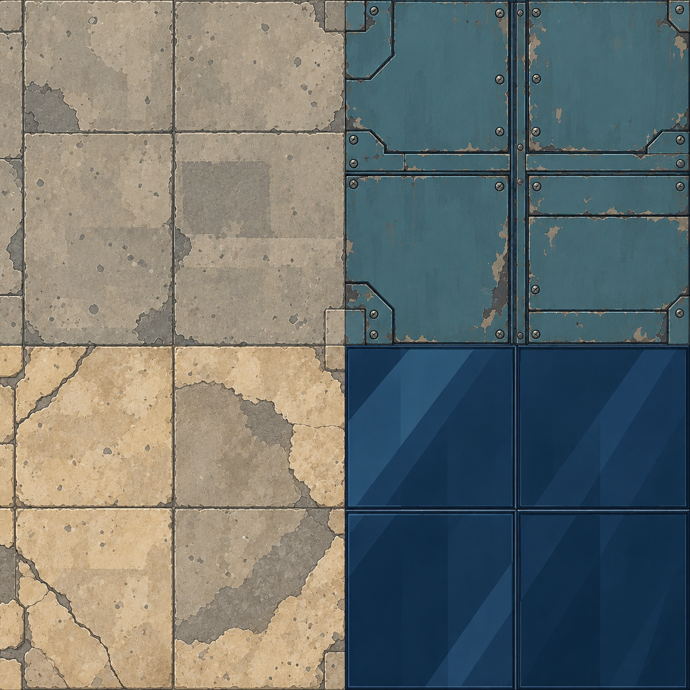现有素材 · 仅辨认对象 · 不是画风靶图具体设计：中明度矿物色、板缝与有厚度边缘；低对比表面纹理，不能照片噪点盖住角色要覆盖的状态：常态 / 边缘接缝 / 适用状态变化规格：2048²可平铺表面；结构板3072；分层材质源；可见几何另做不把阴影/凹凸全画在平面；高度、破口、桥边保留几何。法线/粗糙度按具体模型制作，不能随机套图。查看对应方向参考 ↗逐文件交付 · 5个文件位（含源与差分导出）incoming/T01/surface_basecolor.pngincoming/T01/edge_and_section.pngincoming/T01/variation_sheet.pngincoming/T01/state_sheet.pngincoming/T01/source.psd现有资源和实际接入位置game-godot/assets/formula_lab/linked_campaign_v6/materials/industrial-cel-families-r2.pnggame-godot/assets/formula_lab/linked_campaign_v6/materials/industrial-drawn-atlas-v2.pnggame-godot/scripts/formula_lab/linked_campaign/ground_relief.gdgame-godot/scripts/formula_lab/linked_campaign/v6/terrain_cel.gdshadergame-godot/scripts/formula_lab/linked_campaign/v6/kit_material.gdshader
T02当前工务城及其已列专关涂装金属甲板工业地面现有素材 · 仅辨认对象 · 不是画风靶图具体设计：成片涂装与检修板分区；边缘和螺栓不铺满全地面要覆盖的状态：常态 / 边缘接缝 / 适用状态变化规格：2048²可平铺表面；结构板3072；分层材质源；可见几何另做不把阴影/凹凸全画在平面；高度、破口、桥边保留几何。法线/粗糙度按具体模型制作，不能随机套图。查看对应方向参考 ↗逐文件交付 · 5个文件位（含源与差分导出）incoming/T02/surface_basecolor.pngincoming/T02/edge_and_section.pngincoming/T02/variation_sheet.pngincoming/T02/state_sheet.pngincoming/T02/source.psd现有资源和实际接入位置game-godot/assets/formula_lab/linked_campaign_v6/materials/industrial-cel-families-r2.pnggame-godot/assets/formula_lab/linked_campaign_v6/materials/industrial-drawn-atlas-v2.pnggame-godot/scripts/formula_lab/linked_campaign/ground_relief.gdgame-godot/scripts/formula_lab/linked_campaign/v6/terrain_cel.gdshadergame-godot/scripts/formula_lab/linked_campaign/v6/kit_material.gdshader
T03当前工务城及其已列专关格栅与排水槽材料差别现有素材 · 仅辨认对象 · 不是画风靶图具体设计：格栅真实深度与暗腔；密纹在正常镜头不闪烁要覆盖的状态：常态 / 边缘接缝 / 适用状态变化规格：2048²可平铺表面；结构板3072；分层材质源；可见几何另做不把阴影/凹凸全画在平面；高度、破口、桥边保留几何。法线/粗糙度按具体模型制作，不能随机套图。查看对应方向参考 ↗逐文件交付 · 5个文件位（含源与差分导出）incoming/T03/surface_basecolor.pngincoming/T03/edge_and_section.pngincoming/T03/variation_sheet.pngincoming/T03/state_sheet.pngincoming/T03/source.psd现有资源和实际接入位置game-godot/assets/formula_lab/linked_campaign_v6/materials/industrial-cel-families-r2.pnggame-godot/assets/formula_lab/linked_campaign_v6/materials/industrial-drawn-atlas-v2.pnggame-godot/scripts/formula_lab/linked_campaign/ground_relief.gdgame-godot/scripts/formula_lab/linked_campaign/v6/terrain_cel.gdshadergame-godot/scripts/formula_lab/linked_campaign/v6/kit_material.gdshader
T04当前工务城及其已列专关轨道与道岔列车路线现有素材 · 仅辨认对象 · 不是画风靶图具体设计：轨、枕木/扣件、路基和岔口；方向连续、不可跨地图倒转要覆盖的状态：常态 / 边缘接缝 / 适用状态变化规格：2048²可平铺表面；结构板3072；分层材质源；可见几何另做不把阴影/凹凸全画在平面；高度、破口、桥边保留几何。法线/粗糙度按具体模型制作，不能随机套图。查看对应方向参考 ↗逐文件交付 · 5个文件位（含源与差分导出）incoming/T04/surface_basecolor.pngincoming/T04/edge_and_section.pngincoming/T04/variation_sheet.pngincoming/T04/state_sheet.pngincoming/T04/source.psd现有资源和实际接入位置game-godot/assets/formula_lab/linked_campaign_v6/materials/industrial-cel-families-r2.pnggame-godot/assets/formula_lab/linked_campaign_v6/materials/industrial-drawn-atlas-v2.pnggame-godot/scripts/formula_lab/linked_campaign/ground_relief.gdgame-godot/scripts/formula_lab/linked_campaign/v6/terrain_cel.gdshadergame-godot/scripts/formula_lab/linked_campaign/v6/kit_material.gdshader
T05当前工务城及其已列专关输送带自动位移地形现有素材 · 仅辨认对象 · 不是画风靶图具体设计：运行方向与规则一致；纹理流动朝实际输送方向要覆盖的状态：常态 / 边缘接缝 / 适用状态变化规格：2048²可平铺表面；结构板3072；分层材质源；可见几何另做不把阴影/凹凸全画在平面；高度、破口、桥边保留几何。法线/粗糙度按具体模型制作，不能随机套图。查看对应方向参考 ↗逐文件交付 · 5个文件位（含源与差分导出）incoming/T05/surface_basecolor.pngincoming/T05/edge_and_section.pngincoming/T05/variation_sheet.pngincoming/T05/state_sheet.pngincoming/T05/source.psd现有资源和实际接入位置game-godot/assets/formula_lab/linked_campaign_v6/materials/industrial-cel-families-r2.pnggame-godot/assets/formula_lab/linked_campaign_v6/materials/industrial-drawn-atlas-v2.pnggame-godot/scripts/formula_lab/linked_campaign/ground_relief.gdgame-godot/scripts/formula_lab/linked_campaign/v6/terrain_cel.gdshadergame-godot/scripts/formula_lab/linked_campaign/v6/kit_material.gdshader
T06当前工务城及其已列专关碎石与残骸地面额外移动代价现有素材 · 仅辨认对象 · 不是画风靶图具体设计：少量大块碎料、可见低起伏；与不可通行残墙区分要覆盖的状态：常态 / 边缘接缝 / 适用状态变化规格：2048²可平铺表面；结构板3072；分层材质源；可见几何另做不把阴影/凹凸全画在平面；高度、破口、桥边保留几何。法线/粗糙度按具体模型制作，不能随机套图。查看对应方向参考 ↗逐文件交付 · 5个文件位（含源与差分导出）incoming/T06/surface_basecolor.pngincoming/T06/edge_and_section.pngincoming/T06/variation_sheet.pngincoming/T06/state_sheet.pngincoming/T06/source.psd现有资源和实际接入位置game-godot/assets/formula_lab/linked_campaign_v6/materials/industrial-cel-families-r2.pnggame-godot/assets/formula_lab/linked_campaign_v6/materials/industrial-drawn-atlas-v2.pnggame-godot/scripts/formula_lab/linked_campaign/ground_relief.gdgame-godot/scripts/formula_lab/linked_campaign/v6/terrain_cel.gdshadergame-godot/scripts/formula_lab/linked_campaign/v6/kit_material.gdshader
T07当前工务城及其已列专关浅水涉水地形现有素材 · 仅辨认对象 · 不是画风靶图具体设计：可见渠底、岸沿和水线；涉水单位不误显示坠落要覆盖的状态：常态 / 边缘接缝 / 适用状态变化规格：2048²可平铺表面；结构板3072；分层材质源；可见几何另做不把阴影/凹凸全画在平面；高度、破口、桥边保留几何。法线/粗糙度按具体模型制作，不能随机套图。查看对应方向参考 ↗逐文件交付 · 5个文件位（含源与差分导出）incoming/T07/surface_basecolor.pngincoming/T07/edge_and_section.pngincoming/T07/variation_sheet.pngincoming/T07/state_sheet.pngincoming/T07/source.psd现有资源和实际接入位置game-godot/assets/formula_lab/linked_campaign_v6/materials/industrial-cel-families-r2.pnggame-godot/assets/formula_lab/linked_campaign_v6/materials/industrial-drawn-atlas-v2.pnggame-godot/scripts/formula_lab/linked_campaign/ground_relief.gdgame-godot/scripts/formula_lab/linked_campaign/v6/terrain_cel.gdshadergame-godot/scripts/formula_lab/linked_campaign/v6/kit_material.gdshader
T08当前工务城及其已列专关深渠与深水坠落/淹没风险现有素材 · 仅辨认对象 · 不是画风靶图具体设计：有渠壁、水面高度和连续深度；不要死黑坑或镜面摄影水要覆盖的状态：常态 / 边缘接缝 / 适用状态变化规格：2048²可平铺表面；结构板3072；分层材质源；可见几何另做不把阴影/凹凸全画在平面；高度、破口、桥边保留几何。法线/粗糙度按具体模型制作，不能随机套图。查看对应方向参考 ↗逐文件交付 · 5个文件位（含源与差分导出）incoming/T08/surface_basecolor.pngincoming/T08/edge_and_section.pngincoming/T08/variation_sheet.pngincoming/T08/state_sheet.pngincoming/T08/source.psd现有资源和实际接入位置game-godot/assets/formula_lab/linked_campaign_v6/materials/industrial-cel-families-r2.pnggame-godot/assets/formula_lab/linked_campaign_v6/materials/industrial-drawn-atlas-v2.pnggame-godot/scripts/formula_lab/linked_campaign/ground_relief.gdgame-godot/scripts/formula_lab/linked_campaign/v6/terrain_cel.gdshadergame-godot/scripts/formula_lab/linked_campaign/v6/kit_material.gdshader
T09当前工务城及其已列专关深坑与结构缺口不支撑地面现有素材 · 仅辨认对象 · 不是画风靶图具体设计：可见侧壁/梁断口，边缘脚印清楚；不把黑方块直接贴地要覆盖的状态：常态 / 边缘接缝 / 适用状态变化规格：2048²可平铺表面；结构板3072；分层材质源；可见几何另做不把阴影/凹凸全画在平面；高度、破口、桥边保留几何。法线/粗糙度按具体模型制作，不能随机套图。查看对应方向参考 ↗逐文件交付 · 5个文件位（含源与差分导出）incoming/T09/surface_basecolor.pngincoming/T09/edge_and_section.pngincoming/T09/variation_sheet.pngincoming/T09/state_sheet.pngincoming/T09/source.psd现有资源和实际接入位置game-godot/assets/formula_lab/linked_campaign_v6/materials/industrial-cel-families-r2.pnggame-godot/assets/formula_lab/linked_campaign_v6/materials/industrial-drawn-atlas-v2.pnggame-godot/scripts/formula_lab/linked_campaign/ground_relief.gdgame-godot/scripts/formula_lab/linked_campaign/v6/terrain_cel.gdshadergame-godot/scripts/formula_lab/linked_campaign/v6/kit_material.gdshader
T10当前工务城及其已列专关油面与可燃物燃烧连锁现有素材 · 仅辨认对象 · 不是画风靶图具体设计：局部油膜形状与暗反光；低对比，不与水混同要覆盖的状态：常态 / 边缘接缝 / 适用状态变化规格：2048²可平铺表面；结构板3072；分层材质源；可见几何另做不把阴影/凹凸全画在平面；高度、破口、桥边保留几何。法线/粗糙度按具体模型制作，不能随机套图。查看对应方向参考 ↗逐文件交付 · 5个文件位（含源与差分导出）incoming/T10/surface_basecolor.pngincoming/T10/edge_and_section.pngincoming/T10/variation_sheet.pngincoming/T10/state_sheet.pngincoming/T10/source.psd现有资源和实际接入位置game-godot/assets/formula_lab/linked_campaign_v6/materials/industrial-cel-families-r2.pnggame-godot/assets/formula_lab/linked_campaign_v6/materials/industrial-drawn-atlas-v2.pnggame-godot/scripts/formula_lab/linked_campaign/ground_relief.gdgame-godot/scripts/formula_lab/linked_campaign/v6/terrain_cel.gdshadergame-godot/scripts/formula_lab/linked_campaign/v6/kit_material.gdshader
T11当前工务城及其已列专关燃后地面持续状态结果现有素材 · 仅辨认对象 · 不是画风靶图具体设计：烧痕、少量残烟与材质变化；火消失后仍有结果但不永久遮格要覆盖的状态：常态 / 边缘接缝 / 适用状态变化规格：2048²可平铺表面；结构板3072；分层材质源；可见几何另做不把阴影/凹凸全画在平面；高度、破口、桥边保留几何。法线/粗糙度按具体模型制作，不能随机套图。查看对应方向参考 ↗逐文件交付 · 5个文件位（含源与差分导出）incoming/T11/surface_basecolor.pngincoming/T11/edge_and_section.pngincoming/T11/variation_sheet.pngincoming/T11/state_sheet.pngincoming/T11/source.psd现有资源和实际接入位置game-godot/assets/formula_lab/linked_campaign_v6/materials/industrial-cel-families-r2.pnggame-godot/assets/formula_lab/linked_campaign_v6/materials/industrial-drawn-atlas-v2.pnggame-godot/scripts/formula_lab/linked_campaign/ground_relief.gdgame-godot/scripts/formula_lab/linked_campaign/v6/terrain_cel.gdshadergame-godot/scripts/formula_lab/linked_campaign/v6/kit_material.gdshader
T12当前工务城及其已列专关带电地面电击危害现有素材 · 仅辨认对象 · 不是画风靶图具体设计：导电材料/破缆来源、边界与短放电；持续危险标记另由UI处理要覆盖的状态：常态 / 边缘接缝 / 适用状态变化规格：2048²可平铺表面；结构板3072；分层材质源；可见几何另做不把阴影/凹凸全画在平面；高度、破口、桥边保留几何。法线/粗糙度按具体模型制作，不能随机套图。查看对应方向参考 ↗逐文件交付 · 5个文件位（含源与差分导出）incoming/T12/surface_basecolor.pngincoming/T12/edge_and_section.pngincoming/T12/variation_sheet.pngincoming/T12/state_sheet.pngincoming/T12/source.psd现有资源和实际接入位置game-godot/assets/formula_lab/linked_campaign_v6/materials/industrial-cel-families-r2.pnggame-godot/assets/formula_lab/linked_campaign_v6/materials/industrial-drawn-atlas-v2.pnggame-godot/scripts/formula_lab/linked_campaign/ground_relief.gdgame-godot/scripts/formula_lab/linked_campaign/v6/terrain_cel.gdshadergame-godot/scripts/formula_lab/linked_campaign/v6/kit_material.gdshader
T13当前工务城及其已列专关可行走屋顶与平台上层/净空现有素材 · 仅辨认对象 · 不是画风靶图具体设计：屋顶有厚度、可走面和栏杆缺口；不能与背景屋顶混同要覆盖的状态：常态 / 边缘接缝 / 适用状态变化规格：2048²可平铺表面；结构板3072；分层材质源；可见几何另做不把阴影/凹凸全画在平面；高度、破口、桥边保留几何。法线/粗糙度按具体模型制作，不能随机套图。查看对应方向参考 ↗逐文件交付 · 5个文件位（含源与差分导出）incoming/T13/surface_basecolor.pngincoming/T13/edge_and_section.pngincoming/T13/variation_sheet.pngincoming/T13/state_sheet.pngincoming/T13/source.psd现有资源和实际接入位置game-godot/assets/formula_lab/linked_campaign_v6/materials/industrial-cel-families-r2.pnggame-godot/assets/formula_lab/linked_campaign_v6/materials/industrial-drawn-atlas-v2.pnggame-godot/scripts/formula_lab/linked_campaign/ground_relief.gdgame-godot/scripts/formula_lab/linked_campaign/v6/terrain_cel.gdshadergame-godot/scripts/formula_lab/linked_campaign/v6/kit_material.gdshader
T14当前工务城及其已列专关坡道与阶梯高度连接现有素材 · 仅辨认对象 · 不是画风靶图具体设计：起终点、坡向、梁支撑有实体；显示高差但不制造虚假阻挡要覆盖的状态：常态 / 边缘接缝 / 适用状态变化规格：2048²可平铺表面；结构板3072；分层材质源；可见几何另做不把阴影/凹凸全画在平面；高度、破口、桥边保留几何。法线/粗糙度按具体模型制作，不能随机套图。查看对应方向参考 ↗逐文件交付 · 5个文件位（含源与差分导出）incoming/T14/surface_basecolor.pngincoming/T14/edge_and_section.pngincoming/T14/variation_sheet.pngincoming/T14/state_sheet.pngincoming/T14/source.psd现有资源和实际接入位置game-godot/assets/formula_lab/linked_campaign_v6/materials/industrial-cel-families-r2.pnggame-godot/assets/formula_lab/linked_campaign_v6/materials/industrial-drawn-atlas-v2.pnggame-godot/scripts/formula_lab/linked_campaign/ground_relief.gdgame-godot/scripts/formula_lab/linked_campaign/v6/terrain_cel.gdshadergame-godot/scripts/formula_lab/linked_campaign/v6/kit_material.gdshader
T15当前工务城及其已列专关塌桥断面与沉落物通路被毁现有素材 · 仅辨认对象 · 不是画风靶图具体设计：断梁、桥板和水花/落尘接口；不能仍保留完整桥面贴图要覆盖的状态：常态 / 边缘接缝 / 适用状态变化规格：2048²可平铺表面；结构板3072；分层材质源；可见几何另做不把阴影/凹凸全画在平面；高度、破口、桥边保留几何。法线/粗糙度按具体模型制作，不能随机套图。查看对应方向参考 ↗逐文件交付 · 5个文件位（含源与差分导出）incoming/T15/surface_basecolor.pngincoming/T15/edge_and_section.pngincoming/T15/variation_sheet.pngincoming/T15/state_sheet.pngincoming/T15/source.psd现有资源和实际接入位置game-godot/assets/formula_lab/linked_campaign_v6/materials/industrial-cel-families-r2.pnggame-godot/assets/formula_lab/linked_campaign_v6/materials/industrial-drawn-atlas-v2.pnggame-godot/scripts/formula_lab/linked_campaign/ground_relief.gdgame-godot/scripts/formula_lab/linked_campaign/v6/terrain_cel.gdshadergame-godot/scripts/formula_lab/linked_campaign/v6/kit_material.gdshader
T16当前工务城及其已列专关统一表面材料家族建筑/机体/场地材质衔接现有素材 · 仅辨认对象 · 不是画风靶图具体设计：涂装金属、裸金属、混凝土、玻璃、橡胶、发光件分家；同画法不同材质，避免全塑料要覆盖的状态：常态 / 边缘接缝 / 适用状态变化规格：2048²可平铺表面；结构板3072；分层材质源；可见几何另做不把阴影/凹凸全画在平面；高度、破口、桥边保留几何。法线/粗糙度按具体模型制作，不能随机套图。查看对应方向参考 ↗逐文件交付 · 5个文件位（含源与差分导出）incoming/T16/surface_basecolor.pngincoming/T16/edge_and_section.pngincoming/T16/variation_sheet.pngincoming/T16/state_sheet.pngincoming/T16/source.psd现有资源和实际接入位置game-godot/assets/formula_lab/linked_campaign_v6/materials/industrial-cel-families-r2.pnggame-godot/assets/formula_lab/linked_campaign_v6/materials/industrial-drawn-atlas-v2.pnggame-godot/scripts/formula_lab/linked_campaign/ground_relief.gdgame-godot/scripts/formula_lab/linked_campaign/v6/terrain_cel.gdshadergame-godot/scripts/formula_lab/linked_campaign/v6/kit_material.gdshader
S01当前工务城及其已列专关工务城三战场总构图同城联动一眼成立现有素材 · 仅辨认对象 · 不是画风靶图具体设计：固定既有地理C车站在西、B桥在东、A供电在上方；柱环连贯，色彩与物件分区要覆盖的状态：构图稿 / 色稿 / 分层成稿规格：3840×2160；分层PSD/KRA；前中后景、角色/机体、光效独立地图构图图是搭场依据，不能整张贴为可旋转战场。剧情图留出字幕与镜头移动余量。查看对应方向参考 ↗逐文件交付 · 5个文件位（含源与差分导出）incoming/S01/composition.pngincoming/S01/color_key.pngincoming/S01/final.pngincoming/S01/layer_map.pngincoming/S01/source.psd现有资源和实际接入位置game-godot/assets/formula_lab/linked_campaign_v6/backgrounds/command-ring-kinetic.pnggame-godot/scripts/formula_lab/linked_campaign/rounds/round_stage.gdgame-godot/scripts/formula_lab/linked_campaign/dialogue_presenter.gdgame-godot/scripts/formula_lab/chapter_c02/map.gd
S02当前工务城及其已列专关A供能前庭正常战棋画面先看清供电和威胁以设计要求和固定靶图制作当前为3D/程序表现，或尚缺独立原画具体设计：鼠尾草绿/钢青绿设备与矿物墙；机体英雄色独立；用实际棋格摆机体敌人建筑，非空场海报要覆盖的状态：构图稿 / 色稿 / 分层成稿规格：3840×2160；分层PSD/KRA；前中后景、角色/机体、光效独立地图构图图是搭场依据，不能整张贴为可旋转战场。剧情图留出字幕与镜头移动余量。查看对应方向参考 ↗逐文件交付 · 5个文件位（含源与差分导出）incoming/S02/composition.pngincoming/S02/color_key.pngincoming/S02/final.pngincoming/S02/layer_map.pngincoming/S02/source.psd现有资源和实际接入位置无独立平面文件，或当前由程序构建；本次应制作独立设计源。game-godot/scripts/formula_lab/linked_campaign/rounds/round_stage.gdgame-godot/scripts/formula_lab/linked_campaign/dialogue_presenter.gdgame-godot/scripts/formula_lab/chapter_c02/map.gd
S03当前工务城及其已列专关B跨渠桥座正常战棋画面支撑、深渠和桥路选择以设计要求和固定靶图制作当前为3D/程序表现，或尚缺独立原画具体设计：钢蓝、矿物青水、现代住宅；桥面与渠壁有厚度，留看清推落及托桥的空间要覆盖的状态：构图稿 / 色稿 / 分层成稿规格：3840×2160；分层PSD/KRA；前中后景、角色/机体、光效独立地图构图图是搭场依据，不能整张贴为可旋转战场。剧情图留出字幕与镜头移动余量。查看对应方向参考 ↗逐文件交付 · 5个文件位（含源与差分导出）incoming/S03/composition.pngincoming/S03/color_key.pngincoming/S03/final.pngincoming/S03/layer_map.pngincoming/S03/source.psd现有资源和实际接入位置无独立平面文件，或当前由程序构建；本次应制作独立设计源。game-godot/scripts/formula_lab/linked_campaign/rounds/round_stage.gdgame-godot/scripts/formula_lab/linked_campaign/dialogue_presenter.gdgame-godot/scripts/formula_lab/chapter_c02/map.gd
S04当前工务城及其已列专关C环下装卸站正常战棋画面清轨与列车保护以设计要求和固定靶图制作当前为3D/程序表现，或尚缺独立原画具体设计：褪蓝与朱红货运设备；车头方向、轨道出口、货箱阻塞读得清要覆盖的状态：构图稿 / 色稿 / 分层成稿规格：3840×2160；分层PSD/KRA；前中后景、角色/机体、光效独立地图构图图是搭场依据，不能整张贴为可旋转战场。剧情图留出字幕与镜头移动余量。查看对应方向参考 ↗逐文件交付 · 5个文件位（含源与差分导出）incoming/S04/composition.pngincoming/S04/color_key.pngincoming/S04/final.pngincoming/S04/layer_map.pngincoming/S04/source.psd现有资源和实际接入位置无独立平面文件，或当前由程序构建；本次应制作独立设计源。game-godot/scripts/formula_lab/linked_campaign/rounds/round_stage.gdgame-godot/scripts/formula_lab/linked_campaign/dialogue_presenter.gdgame-godot/scripts/formula_lab/chapter_c02/map.gd
S05当前工务城及其已列专关指挥廊与部署背景开场/部署现有素材 · 仅辨认对象 · 不是画风靶图具体设计：三工作面与城市事故有关联；为左侧菜单留安静区，不把HUD画进背景要覆盖的状态：构图稿 / 色稿 / 分层成稿规格：3840×2160；分层PSD/KRA；前中后景、角色/机体、光效独立地图构图图是搭场依据，不能整张贴为可旋转战场。剧情图留出字幕与镜头移动余量。查看对应方向参考 ↗逐文件交付 · 5个文件位（含源与差分导出）incoming/S05/composition.pngincoming/S05/color_key.pngincoming/S05/final.pngincoming/S05/layer_map.pngincoming/S05/source.psd现有资源和实际接入位置game-godot/assets/formula_lab/linked_campaign_v6/backgrounds/command-ring-kinetic.pnggame-godot/scripts/formula_lab/linked_campaign/rounds/round_stage.gdgame-godot/scripts/formula_lab/linked_campaign/dialogue_presenter.gdgame-godot/scripts/formula_lab/chapter_c02/map.gd
S06当前工务城及其已列专关列车与待救检修员救援目标情绪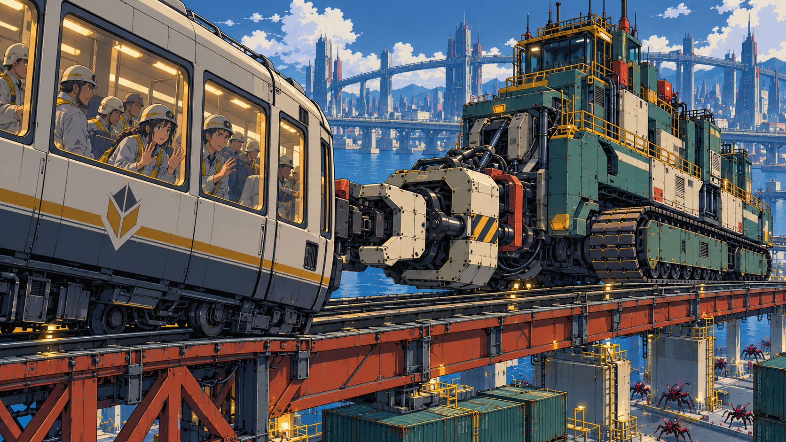现有素材 · 仅辨认对象 · 不是画风靶图具体设计：让人看到乘员、受阻列车和临近危险；可分离人群/列车/背景做轻动效要覆盖的状态：构图稿 / 色稿 / 分层成稿规格：3840×2160；分层PSD/KRA；前中后景、角色/机体、光效独立地图构图图是搭场依据，不能整张贴为可旋转战场。剧情图留出字幕与镜头移动余量。查看对应方向参考 ↗逐文件交付 · 5个文件位（含源与差分导出）incoming/S06/composition.pngincoming/S06/color_key.pngincoming/S06/final.pngincoming/S06/layer_map.pngincoming/S06/source.psd现有资源和实际接入位置game-godot/assets/formula_lab/linked_campaign_v6/backgrounds/story-car-kinetic.pnggame-godot/scripts/formula_lab/linked_campaign/rounds/round_stage.gdgame-godot/scripts/formula_lab/linked_campaign/dialogue_presenter.gdgame-godot/scripts/formula_lab/chapter_c02/map.gd
S07当前工务城及其已列专关母线接通与链路点亮操作后的跨区因果现有素材 · 仅辨认对象 · 不是画风靶图具体设计：接电源头→桥→车站；能源流和终端状态拆层，不能只有全屏发光要覆盖的状态：构图稿 / 色稿 / 分层成稿规格：3840×2160；分层PSD/KRA；前中后景、角色/机体、光效独立地图构图图是搭场依据，不能整张贴为可旋转战场。剧情图留出字幕与镜头移动余量。查看对应方向参考 ↗逐文件交付 · 5个文件位（含源与差分导出）incoming/S07/composition.pngincoming/S07/color_key.pngincoming/S07/final.pngincoming/S07/layer_map.pngincoming/S07/source.psd现有资源和实际接入位置game-godot/assets/formula_lab/linked_campaign_v6/backgrounds/story-link-kinetic.pnggame-godot/scripts/formula_lab/linked_campaign/rounds/round_stage.gdgame-godot/scripts/formula_lab/linked_campaign/dialogue_presenter.gdgame-godot/scripts/formula_lab/chapter_c02/map.gd
S08当前工务城及其已列专关托桥与列车通过机体救援的大魄力场景以设计要求和固定靶图制作当前为3D/程序表现，或尚缺独立原画具体设计：明确支撑机、桥承力位置、列车和居民；不违背馆守缺臂或货柜形态要覆盖的状态：构图稿 / 色稿 / 分层成稿规格：3840×2160；分层PSD/KRA；前中后景、角色/机体、光效独立地图构图图是搭场依据，不能整张贴为可旋转战场。剧情图留出字幕与镜头移动余量。查看对应方向参考 ↗逐文件交付 · 5个文件位（含源与差分导出）incoming/S08/composition.pngincoming/S08/color_key.pngincoming/S08/final.pngincoming/S08/layer_map.pngincoming/S08/source.psd现有资源和实际接入位置无独立平面文件，或当前由程序构建；本次应制作独立设计源。game-godot/scripts/formula_lab/linked_campaign/rounds/round_stage.gdgame-godot/scripts/formula_lab/linked_campaign/dialogue_presenter.gdgame-godot/scripts/formula_lab/chapter_c02/map.gd
S09当前工务城及其已列专关纪存多方调度特写主角能力表达以设计要求和固定靶图制作当前为3D/程序表现，或尚缺独立原画具体设计：视线/手势与三处实际事件同方向；终端信息以UI后置，不能代替人物行动要覆盖的状态：构图稿 / 色稿 / 分层成稿规格：3840×2160；分层PSD/KRA；前中后景、角色/机体、光效独立地图构图图是搭场依据，不能整张贴为可旋转战场。剧情图留出字幕与镜头移动余量。查看对应方向参考 ↗逐文件交付 · 5个文件位（含源与差分导出）incoming/S09/composition.pngincoming/S09/color_key.pngincoming/S09/final.pngincoming/S09/layer_map.pngincoming/S09/source.psd现有资源和实际接入位置无独立平面文件，或当前由程序构建；本次应制作独立设计源。game-godot/scripts/formula_lab/linked_campaign/rounds/round_stage.gdgame-godot/scripts/formula_lab/linked_campaign/dialogue_presenter.gdgame-godot/scripts/formula_lab/chapter_c02/map.gd
S10当前工务城及其已列专关白鸢预演特写预演与改线表达以设计要求和固定靶图制作当前为3D/程序表现，或尚缺独立原画具体设计：分镜、视线与路线草案形成动作；预测是可被推翻的方案，不画成神谕要覆盖的状态：构图稿 / 色稿 / 分层成稿规格：3840×2160；分层PSD/KRA；前中后景、角色/机体、光效独立地图构图图是搭场依据，不能整张贴为可旋转战场。剧情图留出字幕与镜头移动余量。查看对应方向参考 ↗逐文件交付 · 5个文件位（含源与差分导出）incoming/S10/composition.pngincoming/S10/color_key.pngincoming/S10/final.pngincoming/S10/layer_map.pngincoming/S10/source.psd现有资源和实际接入位置无独立平面文件，或当前由程序构建；本次应制作独立设计源。game-godot/scripts/formula_lab/linked_campaign/rounds/round_stage.gdgame-godot/scripts/formula_lab/linked_campaign/dialogue_presenter.gdgame-godot/scripts/formula_lab/chapter_c02/map.gd
S11当前工务城及其已列专关七海核验撤令特写权限全链以设计要求和固定靶图制作当前为3D/程序表现，或尚缺独立原画具体设计：证据、决定、撤令反馈连续；克制的档案峰值层，身份不换装漂移要覆盖的状态：构图稿 / 色稿 / 分层成稿规格：3840×2160；分层PSD/KRA；前中后景、角色/机体、光效独立地图构图图是搭场依据，不能整张贴为可旋转战场。剧情图留出字幕与镜头移动余量。查看对应方向参考 ↗逐文件交付 · 5个文件位（含源与差分导出）incoming/S11/composition.pngincoming/S11/color_key.pngincoming/S11/final.pngincoming/S11/layer_map.pngincoming/S11/source.psd现有资源和实际接入位置无独立平面文件，或当前由程序构建；本次应制作独立设计源。game-godot/scripts/formula_lab/linked_campaign/rounds/round_stage.gdgame-godot/scripts/formula_lab/linked_campaign/dialogue_presenter.gdgame-godot/scripts/formula_lab/chapter_c02/map.gd
S12当前工务城及其已列专关王者右臂巨钻冲击图招牌Cut-in以设计要求和固定靶图制作当前为3D/程序表现，或尚缺独立原画具体设计：巨钻从右手/右前臂接出，双炮朝前；对称帅气头与冗余武装，避开裆部误读要覆盖的状态：构图稿 / 色稿 / 分层成稿规格：3840×2160；分层PSD/KRA；前中后景、角色/机体、光效独立地图构图图是搭场依据，不能整张贴为可旋转战场。剧情图留出字幕与镜头移动余量。查看对应方向参考 ↗逐文件交付 · 5个文件位（含源与差分导出）incoming/S12/composition.pngincoming/S12/color_key.pngincoming/S12/final.pngincoming/S12/layer_map.pngincoming/S12/source.psd现有资源和实际接入位置无独立平面文件，或当前由程序构建；本次应制作独立设计源。game-godot/scripts/formula_lab/linked_campaign/rounds/round_stage.gdgame-godot/scripts/formula_lab/linked_campaign/dialogue_presenter.gdgame-godot/scripts/formula_lab/chapter_c02/map.gd
S13当前工务城及其已列专关无牌天冲拳冲击图体术招牌以设计要求和固定靶图制作当前为3D/程序表现，或尚缺独立原画具体设计：从脚底、转髋、肩到拳形成一条发力线；拳接触点明确；特效不遮拳体要覆盖的状态：构图稿 / 色稿 / 分层成稿规格：3840×2160；分层PSD/KRA；前中后景、角色/机体、光效独立地图构图图是搭场依据，不能整张贴为可旋转战场。剧情图留出字幕与镜头移动余量。查看对应方向参考 ↗逐文件交付 · 5个文件位（含源与差分导出）incoming/S13/composition.pngincoming/S13/color_key.pngincoming/S13/final.pngincoming/S13/layer_map.pngincoming/S13/source.psd现有资源和实际接入位置无独立平面文件，或当前由程序构建；本次应制作独立设计源。game-godot/scripts/formula_lab/linked_campaign/rounds/round_stage.gdgame-godot/scripts/formula_lab/linked_campaign/dialogue_presenter.gdgame-godot/scripts/formula_lab/chapter_c02/map.gd
S14当前工务城及其已列专关社勇王合体关键镜头完整核心与外组件组合以设计要求和固定靶图制作当前为3D/程序表现，或尚缺独立原画具体设计：核心、腿架、肩包各自有来源；3–5关键姿态可转成短演出要覆盖的状态：构图稿 / 色稿 / 分层成稿规格：3840×2160；分层PSD/KRA；前中后景、角色/机体、光效独立地图构图图是搭场依据，不能整张贴为可旋转战场。剧情图留出字幕与镜头移动余量。查看对应方向参考 ↗逐文件交付 · 5个文件位（含源与差分导出）incoming/S14/composition.pngincoming/S14/color_key.pngincoming/S14/final.pngincoming/S14/layer_map.pngincoming/S14/source.psd现有资源和实际接入位置无独立平面文件，或当前由程序构建；本次应制作独立设计源。game-godot/scripts/formula_lab/linked_campaign/rounds/round_stage.gdgame-godot/scripts/formula_lab/linked_campaign/dialogue_presenter.gdgame-godot/scripts/formula_lab/chapter_c02/map.gd
S15当前工务城及其已列专关断冠宿敌出场宿敌压迫感与可破弱侧以设计要求和固定靶图制作当前为3D/程序表现，或尚缺独立原画具体设计：独立冠环/护板；留可视反制点，非堆尖刺黑团要覆盖的状态：构图稿 / 色稿 / 分层成稿规格：3840×2160；分层PSD/KRA；前中后景、角色/机体、光效独立地图构图图是搭场依据，不能整张贴为可旋转战场。剧情图留出字幕与镜头移动余量。查看对应方向参考 ↗逐文件交付 · 5个文件位（含源与差分导出）incoming/S15/composition.pngincoming/S15/color_key.pngincoming/S15/final.pngincoming/S15/layer_map.pngincoming/S15/source.psd现有资源和实际接入位置无独立平面文件，或当前由程序构建；本次应制作独立设计源。game-godot/scripts/formula_lab/linked_campaign/rounds/round_stage.gdgame-godot/scripts/formula_lab/linked_campaign/dialogue_presenter.gdgame-godot/scripts/formula_lab/chapter_c02/map.gd
S16当前工务城及其已列专关救援成功与失守后果胜败可理解以设计要求和固定靶图制作当前为3D/程序表现，或尚缺独立原画具体设计：成功见通桥离站与乘员；失败按真实对象分列车受损/居民楼毁坏/路线中断，不通用烟花要覆盖的状态：构图稿 / 色稿 / 分层成稿规格：3840×2160；分层PSD/KRA；前中后景、角色/机体、光效独立地图构图图是搭场依据，不能整张贴为可旋转战场。剧情图留出字幕与镜头移动余量。查看对应方向参考 ↗逐文件交付 · 5个文件位（含源与差分导出）incoming/S16/composition.pngincoming/S16/color_key.pngincoming/S16/final.pngincoming/S16/layer_map.pngincoming/S16/source.psd现有资源和实际接入位置无独立平面文件，或当前由程序构建；本次应制作独立设计源。game-godot/scripts/formula_lab/linked_campaign/rounds/round_stage.gdgame-godot/scripts/formula_lab/linked_campaign/dialogue_presenter.gdgame-godot/scripts/formula_lab/chapter_c02/map.gd
S17现有前章沿用素材模型街与港口街景前章既有背景换装以设计要求和固定靶图制作当前为3D/程序表现，或尚缺独立原画具体设计：两地构图与用途不同；现代工业生活街区，比例与人物吻合；不再中古皇城街景要覆盖的状态：构图稿 / 色稿 / 分层成稿规格：3840×2160；分层PSD/KRA；前中后景、角色/机体、光效独立地图构图图是搭场依据，不能整张贴为可旋转战场。剧情图留出字幕与镜头移动余量。查看对应方向参考 ↗逐文件交付 · 5个文件位（含源与差分导出）incoming/S17/composition.pngincoming/S17/color_key.pngincoming/S17/final.pngincoming/S17/layer_map.pngincoming/S17/source.psd现有资源和实际接入位置无独立平面文件，或当前由程序构建；本次应制作独立设计源。game-godot/scripts/formula_lab/linked_campaign/rounds/round_stage.gdgame-godot/scripts/formula_lab/linked_campaign/dialogue_presenter.gdgame-godot/scripts/formula_lab/chapter_c02/map.gd
S18现有前章沿用素材模型病院与三号工房前章生活与工程场所以设计要求和固定靶图制作当前为3D/程序表现，或尚缺独立原画具体设计：模型桌、工具、人尺度空间；实际巨机工房另分区，不能把模型直接画成巨机要覆盖的状态：构图稿 / 色稿 / 分层成稿规格：3840×2160；分层PSD/KRA；前中后景、角色/机体、光效独立地图构图图是搭场依据，不能整张贴为可旋转战场。剧情图留出字幕与镜头移动余量。查看对应方向参考 ↗逐文件交付 · 5个文件位（含源与差分导出）incoming/S18/composition.pngincoming/S18/color_key.pngincoming/S18/final.pngincoming/S18/layer_map.pngincoming/S18/source.psd现有资源和实际接入位置无独立平面文件，或当前由程序构建；本次应制作独立设计源。game-godot/scripts/formula_lab/linked_campaign/rounds/round_stage.gdgame-godot/scripts/formula_lab/linked_campaign/dialogue_presenter.gdgame-godot/scripts/formula_lab/chapter_c02/map.gd
S19现有前章沿用素材货柜领袖事件图前章事件不只对白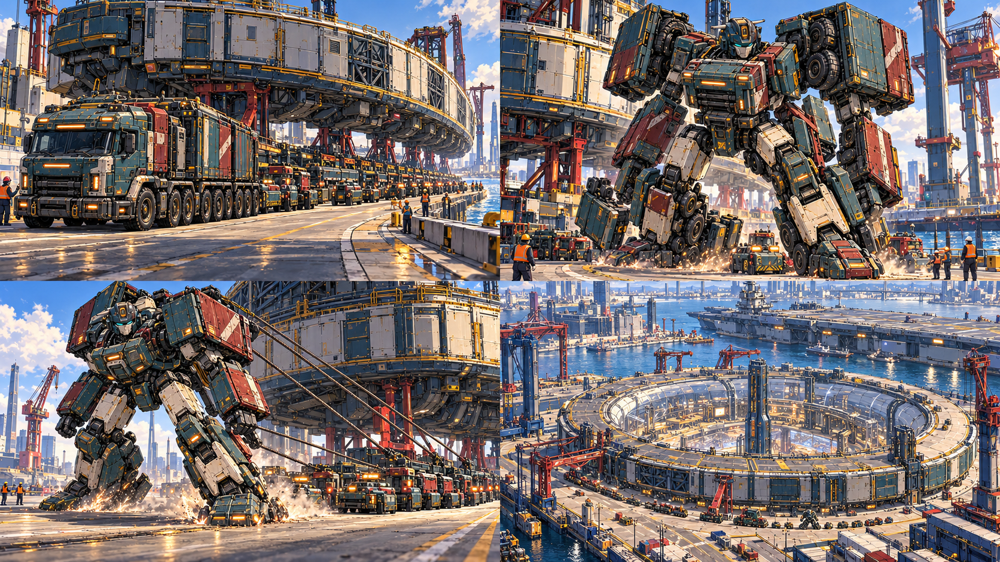现有素材 · 仅辨认对象 · 不是画风靶图具体设计：有行为、阻碍和结果的剧情画面；与新原创机设相同要覆盖的状态：构图稿 / 色稿 / 分层成稿规格：3840×2160；分层PSD/KRA；前中后景、角色/机体、光效独立地图构图图是搭场依据，不能整张贴为可旋转战场。剧情图留出字幕与镜头移动余量。查看对应方向参考 ↗逐文件交付 · 5个文件位（含源与差分导出）incoming/S19/composition.pngincoming/S19/color_key.pngincoming/S19/final.pngincoming/S19/layer_map.pngincoming/S19/source.psd现有资源和实际接入位置game-godot/assets/formula_lab/chapter_c02_v2/cargo-story.pnggame-godot/scripts/formula_lab/linked_campaign/rounds/round_stage.gdgame-godot/scripts/formula_lab/linked_campaign/dialogue_presenter.gdgame-godot/scripts/formula_lab/chapter_c02/map.gd
S20现有前章沿用素材完全版王者冠军展示与卸甲前章节目与自主救场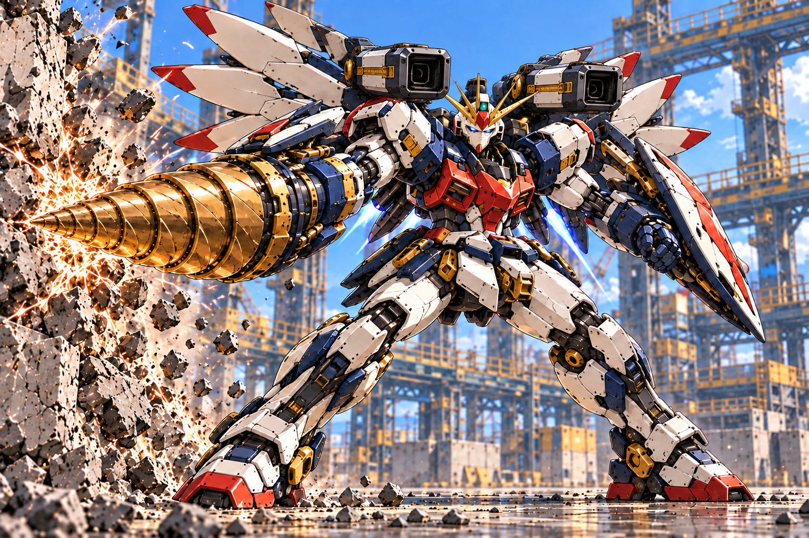现有素材 · 仅辨认对象 · 不是画风靶图具体设计：竞技冠军冗余帅气与卸装后的同一主体；保留自主性，不画遥控傀儡要覆盖的状态：构图稿 / 色稿 / 分层成稿规格：3840×2160；分层PSD/KRA；前中后景、角色/机体、光效独立地图构图图是搭场依据，不能整张贴为可旋转战场。剧情图留出字幕与镜头移动余量。查看对应方向参考 ↗逐文件交付 · 5个文件位（含源与差分导出）incoming/S20/composition.pngincoming/S20/color_key.pngincoming/S20/final.pngincoming/S20/layer_map.pngincoming/S20/source.psd现有资源和实际接入位置game-godot/assets/formula_lab/chapter_c02_v2/king-drill.pnggame-godot/assets/formula_lab/chapter_c02_v2/king-cannon.pnggame-godot/scripts/formula_lab/linked_campaign/rounds/round_stage.gdgame-godot/scripts/formula_lab/linked_campaign/dialogue_presenter.gdgame-godot/scripts/formula_lab/chapter_c02/map.gd
S21现有前章沿用素材白鸢作品与现场事件前章作品/人到场的区分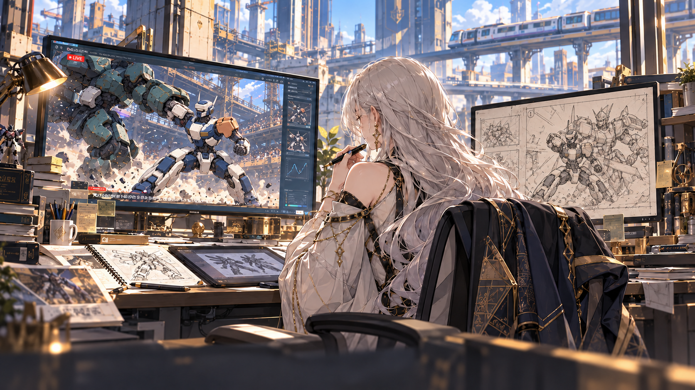现有素材 · 仅辨认对象 · 不是画风靶图具体设计：作品痕迹与本人在场分开；不借新图更改既有出场时间要覆盖的状态：构图稿 / 色稿 / 分层成稿规格：3840×2160；分层PSD/KRA；前中后景、角色/机体、光效独立地图构图图是搭场依据，不能整张贴为可旋转战场。剧情图留出字幕与镜头移动余量。查看对应方向参考 ↗逐文件交付 · 5个文件位（含源与差分导出）incoming/S21/composition.pngincoming/S21/color_key.pngincoming/S21/final.pngincoming/S21/layer_map.pngincoming/S21/source.psd现有资源和实际接入位置game-godot/assets/formula_lab/chapter_c02_v2/baiyuan-event.pnggame-godot/scripts/formula_lab/linked_campaign/rounds/round_stage.gdgame-godot/scripts/formula_lab/linked_campaign/dialogue_presenter.gdgame-godot/scripts/formula_lab/chapter_c02/map.gd
X01当前工务城及其已列专关轻拳命中短促接触和截击以设计要求和固定靶图制作当前为3D/程序表现，或尚缺独立原画具体设计：小而清楚的硬边冲击核+方向短线，不要所有拳都爆炸要覆盖的状态：预备 / 作用 / 结果 / 收束规格：分镜长边2560；独立粒子/片元512–1024透明；源文件；动画说明二维外援交设计、分层片元和时序；技术特效方做粒子/材质/拖尾。不是所有效果都画整张序列帧。查看对应方向参考 ↗逐文件交付 · 6个文件位（含源与差分导出）incoming/X01/phase_sheet.pngincoming/X01/elements.pngincoming/X01/timing.jsonincoming/X01/source.psdincoming/X01/impact_core.pngincoming/X01/direction_streak.png现有资源和实际接入位置无独立平面文件，或当前由程序构建；本次应制作独立设计源。game-godot/scripts/formula_lab/linked_campaign/combat_vfx.gdgame-godot/scripts/formula_lab/linked_campaign/rounds/round_effects.gdgame-godot/scripts/formula_lab/linked_campaign/rounds/round_feedback_view.gdgame-godot/scripts/formula_lab/linked_campaign/v6/action_sequence.gd
X02当前工务城及其已列专关重拳与勾拳重量、冲击与位移以设计要求和固定靶图制作当前为3D/程序表现，或尚缺独立原画具体设计：预备受力、较大的方向冲击、地面尘和后移；与轻拳节奏有差异要覆盖的状态：预备 / 作用 / 结果 / 收束规格：分镜长边2560；独立粒子/片元512–1024透明；源文件；动画说明二维外援交设计、分层片元和时序；技术特效方做粒子/材质/拖尾。不是所有效果都画整张序列帧。查看对应方向参考 ↗逐文件交付 · 7个文件位（含源与差分导出）incoming/X02/phase_sheet.pngincoming/X02/elements.pngincoming/X02/timing.jsonincoming/X02/source.psdincoming/X02/impact_core.pngincoming/X02/debris.pngincoming/X02/dust.png现有资源和实际接入位置无独立平面文件，或当前由程序构建；本次应制作独立设计源。game-godot/scripts/formula_lab/linked_campaign/combat_vfx.gdgame-godot/scripts/formula_lab/linked_campaign/rounds/round_effects.gdgame-godot/scripts/formula_lab/linked_campaign/rounds/round_feedback_view.gdgame-godot/scripts/formula_lab/linked_campaign/v6/action_sequence.gd
X03当前工务城及其已列专关正蹬与回旋踢前推/侧推方向以设计要求和固定靶图制作当前为3D/程序表现，或尚缺独立原画具体设计：腿部轨迹与接触核分离；旋踢扇轨不能暗示整扇面均伤害要覆盖的状态：预备 / 作用 / 结果 / 收束规格：分镜长边2560；独立粒子/片元512–1024透明；源文件；动画说明二维外援交设计、分层片元和时序；技术特效方做粒子/材质/拖尾。不是所有效果都画整张序列帧。查看对应方向参考 ↗逐文件交付 · 6个文件位（含源与差分导出）incoming/X03/phase_sheet.pngincoming/X03/elements.pngincoming/X03/timing.jsonincoming/X03/source.psdincoming/X03/trail.pngincoming/X03/impact_core.png现有资源和实际接入位置无独立平面文件，或当前由程序构建；本次应制作独立设计源。game-godot/scripts/formula_lab/linked_campaign/combat_vfx.gdgame-godot/scripts/formula_lab/linked_campaign/rounds/round_effects.gdgame-godot/scripts/formula_lab/linked_campaign/rounds/round_feedback_view.gdgame-godot/scripts/formula_lab/linked_campaign/v6/action_sequence.gd
X04当前工务城及其已列专关天冲拳招牌体术高潮以设计要求和固定靶图制作当前为3D/程序表现，或尚缺独立原画具体设计：发力上升线、拳体和穿破层分清；接触后迅速收束回棋盘要覆盖的状态：预备 / 作用 / 结果 / 收束规格：分镜长边2560；独立粒子/片元512–1024透明；源文件；动画说明二维外援交设计、分层片元和时序；技术特效方做粒子/材质/拖尾。不是所有效果都画整张序列帧。查看对应方向参考 ↗逐文件交付 · 8个文件位（含源与差分导出）incoming/X04/phase_sheet.pngincoming/X04/elements.pngincoming/X04/timing.jsonincoming/X04/source.psdincoming/X04/charge.pngincoming/X04/trail.pngincoming/X04/impact_core.pngincoming/X04/afterglow.png现有资源和实际接入位置无独立平面文件，或当前由程序构建；本次应制作独立设计源。game-godot/scripts/formula_lab/linked_campaign/combat_vfx.gdgame-godot/scripts/formula_lab/linked_campaign/rounds/round_effects.gdgame-godot/scripts/formula_lab/linked_campaign/rounds/round_feedback_view.gdgame-godot/scripts/formula_lab/linked_campaign/v6/action_sequence.gd
X05当前工务城及其已列专关军刀斩击刀具与近防以设计要求和固定靶图制作当前为3D/程序表现，或尚缺独立原画具体设计：刀尖轨迹、斩痕和少量火花；不拿能量球代刀光要覆盖的状态：预备 / 作用 / 结果 / 收束规格：分镜长边2560；独立粒子/片元512–1024透明；源文件；动画说明二维外援交设计、分层片元和时序；技术特效方做粒子/材质/拖尾。不是所有效果都画整张序列帧。查看对应方向参考 ↗逐文件交付 · 7个文件位（含源与差分导出）incoming/X05/phase_sheet.pngincoming/X05/elements.pngincoming/X05/timing.jsonincoming/X05/source.psdincoming/X05/blade_trail.pngincoming/X05/spark.pngincoming/X05/hit_mark.png现有资源和实际接入位置无独立平面文件，或当前由程序构建；本次应制作独立设计源。game-godot/scripts/formula_lab/linked_campaign/combat_vfx.gdgame-godot/scripts/formula_lab/linked_campaign/rounds/round_effects.gdgame-godot/scripts/formula_lab/linked_campaign/rounds/round_feedback_view.gdgame-godot/scripts/formula_lab/linked_campaign/v6/action_sequence.gd
X06当前工务城及其已列专关右臂巨钻钻入与推进以设计要求和固定靶图制作当前为3D/程序表现，或尚缺独立原画具体设计：沿钻轴的碎屑/摩擦火花；接触材料有变化，不能爆点落在身体中心要覆盖的状态：预备 / 作用 / 结果 / 收束规格：分镜长边2560；独立粒子/片元512–1024透明；源文件；动画说明二维外援交设计、分层片元和时序；技术特效方做粒子/材质/拖尾。不是所有效果都画整张序列帧。查看对应方向参考 ↗逐文件交付 · 7个文件位（含源与差分导出）incoming/X06/phase_sheet.pngincoming/X06/elements.pngincoming/X06/timing.jsonincoming/X06/source.psdincoming/X06/rotor_streak.pngincoming/X06/spark.pngincoming/X06/debris.png现有资源和实际接入位置无独立平面文件，或当前由程序构建；本次应制作独立设计源。game-godot/scripts/formula_lab/linked_campaign/combat_vfx.gdgame-godot/scripts/formula_lab/linked_campaign/rounds/round_effects.gdgame-godot/scripts/formula_lab/linked_campaign/rounds/round_feedback_view.gdgame-godot/scripts/formula_lab/linked_campaign/v6/action_sequence.gd
X07当前工务城及其已列专关首体阻挡光束直线打到首个实体以设计要求和固定靶图制作当前为3D/程序表现，或尚缺独立原画具体设计：炮口、亮核、外晕、终点刻印分层；终点后没有伤害射线要覆盖的状态：预备 / 作用 / 结果 / 收束规格：分镜长边2560；独立粒子/片元512–1024透明；源文件；动画说明二维外援交设计、分层片元和时序；技术特效方做粒子/材质/拖尾。不是所有效果都画整张序列帧。查看对应方向参考 ↗逐文件交付 · 8个文件位（含源与差分导出）incoming/X07/phase_sheet.pngincoming/X07/elements.pngincoming/X07/timing.jsonincoming/X07/source.psdincoming/X07/muzzle.pngincoming/X07/beam_core.pngincoming/X07/beam_glow.pngincoming/X07/hit_mark.png现有资源和实际接入位置无独立平面文件，或当前由程序构建；本次应制作独立设计源。game-godot/scripts/formula_lab/linked_campaign/combat_vfx.gdgame-godot/scripts/formula_lab/linked_campaign/rounds/round_effects.gdgame-godot/scripts/formula_lab/linked_campaign/rounds/round_feedback_view.gdgame-godot/scripts/formula_lab/linked_campaign/v6/action_sequence.gd
X08当前工务城及其已列专关贯穿光束穿过规则允许的目标以设计要求和固定靶图制作当前为3D/程序表现，或尚缺独立原画具体设计：贯穿线和每个命中脉冲分层；被墙截断处终止，不能视觉无限贯穿要覆盖的状态：预备 / 作用 / 结果 / 收束规格：分镜长边2560；独立粒子/片元512–1024透明；源文件；动画说明二维外援交设计、分层片元和时序；技术特效方做粒子/材质/拖尾。不是所有效果都画整张序列帧。查看对应方向参考 ↗逐文件交付 · 8个文件位（含源与差分导出）incoming/X08/phase_sheet.pngincoming/X08/elements.pngincoming/X08/timing.jsonincoming/X08/source.psdincoming/X08/muzzle.pngincoming/X08/beam_core.pngincoming/X08/entry_hit.pngincoming/X08/exit_hit.png现有资源和实际接入位置无独立平面文件，或当前由程序构建；本次应制作独立设计源。game-godot/scripts/formula_lab/linked_campaign/combat_vfx.gdgame-godot/scripts/formula_lab/linked_campaign/rounds/round_effects.gdgame-godot/scripts/formula_lab/linked_campaign/rounds/round_feedback_view.gdgame-godot/scripts/formula_lab/linked_campaign/v6/action_sequence.gd
X09当前工务城及其已列专关双肩炮齐射双条实际炮线以设计要求和固定靶图制作当前为3D/程序表现，或尚缺独立原画具体设计：两炮各自起点和后坐；两条线不合成中央激光要覆盖的状态：预备 / 作用 / 结果 / 收束规格：分镜长边2560；独立粒子/片元512–1024透明；源文件；动画说明二维外援交设计、分层片元和时序；技术特效方做粒子/材质/拖尾。不是所有效果都画整张序列帧。查看对应方向参考 ↗逐文件交付 · 7个文件位（含源与差分导出）incoming/X09/phase_sheet.pngincoming/X09/elements.pngincoming/X09/timing.jsonincoming/X09/source.psdincoming/X09/muzzle_pair.pngincoming/X09/beam_core.pngincoming/X09/smoke.png现有资源和实际接入位置无独立平面文件，或当前由程序构建；本次应制作独立设计源。game-godot/scripts/formula_lab/linked_campaign/combat_vfx.gdgame-godot/scripts/formula_lab/linked_campaign/rounds/round_effects.gdgame-godot/scripts/formula_lab/linked_campaign/rounds/round_feedback_view.gdgame-godot/scripts/formula_lab/linked_campaign/v6/action_sequence.gd
X10当前工务城及其已列专关爆破导弹飞行、中心及邻格爆破以设计要求和固定靶图制作当前为3D/程序表现，或尚缺独立原画具体设计：可见弹体尾迹、地影、首爆与邻区爆片；范围随真实结果生成要覆盖的状态：预备 / 作用 / 结果 / 收束规格：分镜长边2560；独立粒子/片元512–1024透明；源文件；动画说明二维外援交设计、分层片元和时序；技术特效方做粒子/材质/拖尾。不是所有效果都画整张序列帧。查看对应方向参考 ↗逐文件交付 · 8个文件位（含源与差分导出）incoming/X10/phase_sheet.pngincoming/X10/elements.pngincoming/X10/timing.jsonincoming/X10/source.psdincoming/X10/exhaust.pngincoming/X10/impact_core.pngincoming/X10/blast_ring.pngincoming/X10/smoke.png现有资源和实际接入位置无独立平面文件，或当前由程序构建；本次应制作独立设计源。game-godot/scripts/formula_lab/linked_campaign/combat_vfx.gdgame-godot/scripts/formula_lab/linked_campaign/rounds/round_effects.gdgame-godot/scripts/formula_lab/linked_campaign/rounds/round_feedback_view.gdgame-godot/scripts/formula_lab/linked_campaign/v6/action_sequence.gd
X11当前工务城及其已列专关震荡空爆爆心伤害与四邻吹离以设计要求和固定靶图制作当前为3D/程序表现，或尚缺独立原画具体设计：外推冲击环与方向风迹；不把没有伤害的四邻都画成爆炸受伤要覆盖的状态：预备 / 作用 / 结果 / 收束规格：分镜长边2560；独立粒子/片元512–1024透明；源文件；动画说明二维外援交设计、分层片元和时序；技术特效方做粒子/材质/拖尾。不是所有效果都画整张序列帧。查看对应方向参考 ↗逐文件交付 · 7个文件位（含源与差分导出）incoming/X11/phase_sheet.pngincoming/X11/elements.pngincoming/X11/timing.jsonincoming/X11/source.psdincoming/X11/blast_core.pngincoming/X11/wind_arc.pngincoming/X11/push_streak.png现有资源和实际接入位置无独立平面文件，或当前由程序构建；本次应制作独立设计源。game-godot/scripts/formula_lab/linked_campaign/combat_vfx.gdgame-godot/scripts/formula_lab/linked_campaign/rounds/round_effects.gdgame-godot/scripts/formula_lab/linked_campaign/rounds/round_feedback_view.gdgame-godot/scripts/formula_lab/linked_campaign/v6/action_sequence.gd
X12当前工务城及其已列专关跨区炮弹来源、越区飞行与落点以设计要求和固定靶图制作当前为3D/程序表现，或尚缺独立原画具体设计：炮口→飞行弹→目标标记→着地爆炸同一方向；不能无源落雷要覆盖的状态：预备 / 作用 / 结果 / 收束规格：分镜长边2560；独立粒子/片元512–1024透明；源文件；动画说明二维外援交设计、分层片元和时序；技术特效方做粒子/材质/拖尾。不是所有效果都画整张序列帧。查看对应方向参考 ↗逐文件交付 · 8个文件位（含源与差分导出）incoming/X12/phase_sheet.pngincoming/X12/elements.pngincoming/X12/timing.jsonincoming/X12/source.psdincoming/X12/muzzle.pngincoming/X12/trail.pngincoming/X12/landing_flash.pngincoming/X12/debris.png现有资源和实际接入位置无独立平面文件，或当前由程序构建；本次应制作独立设计源。game-godot/scripts/formula_lab/linked_campaign/combat_vfx.gdgame-godot/scripts/formula_lab/linked_campaign/rounds/round_effects.gdgame-godot/scripts/formula_lab/linked_campaign/rounds/round_feedback_view.gdgame-godot/scripts/formula_lab/linked_campaign/v6/action_sequence.gd
X13当前工务城及其已列专关酸液喷射锁格酸液命中以设计要求和固定靶图制作当前为3D/程序表现，或尚缺独立原画具体设计：液滴/弧线/落地喷溅区别于光束和火球；残留只在规则有持续酸时出现要覆盖的状态：预备 / 作用 / 结果 / 收束规格：分镜长边2560；独立粒子/片元512–1024透明；源文件；动画说明二维外援交设计、分层片元和时序；技术特效方做粒子/材质/拖尾。不是所有效果都画整张序列帧。查看对应方向参考 ↗逐文件交付 · 7个文件位（含源与差分导出）incoming/X13/phase_sheet.pngincoming/X13/elements.pngincoming/X13/timing.jsonincoming/X13/source.psdincoming/X13/droplet.pngincoming/X13/splash.pngincoming/X13/contact.png现有资源和实际接入位置无独立平面文件，或当前由程序构建；本次应制作独立设计源。game-godot/scripts/formula_lab/linked_campaign/combat_vfx.gdgame-godot/scripts/formula_lab/linked_campaign/rounds/round_effects.gdgame-godot/scripts/formula_lab/linked_campaign/rounds/round_feedback_view.gdgame-godot/scripts/formula_lab/linked_campaign/v6/action_sequence.gd
X14当前工务城及其已列专关牵引索钩爪张紧与拉回以设计要求和固定靶图制作当前为3D/程序表现，或尚缺独立原画具体设计：发射点和附着点明确；受力线随双方位置变化，不画成推箭头要覆盖的状态：预备 / 作用 / 结果 / 收束规格：分镜长边2560；独立粒子/片元512–1024透明；源文件；动画说明二维外援交设计、分层片元和时序；技术特效方做粒子/材质/拖尾。不是所有效果都画整张序列帧。查看对应方向参考 ↗逐文件交付 · 7个文件位（含源与差分导出）incoming/X14/phase_sheet.pngincoming/X14/elements.pngincoming/X14/timing.jsonincoming/X14/source.psdincoming/X14/hook_flash.pngincoming/X14/cable_detail.pngincoming/X14/tension.png现有资源和实际接入位置无独立平面文件，或当前由程序构建；本次应制作独立设计源。game-godot/scripts/formula_lab/linked_campaign/combat_vfx.gdgame-godot/scripts/formula_lab/linked_campaign/rounds/round_effects.gdgame-godot/scripts/formula_lab/linked_campaign/rounds/round_feedback_view.gdgame-godot/scripts/formula_lab/linked_campaign/v6/action_sequence.gd
X15当前工务城及其已列专关拘束索锁步但保留开火以设计要求和固定靶图制作当前为3D/程序表现，或尚缺独立原画具体设计：环扣/索紧表达移动受限；不盖掉敌方仍有效的攻击轨迹要覆盖的状态：预备 / 作用 / 结果 / 收束规格：分镜长边2560；独立粒子/片元512–1024透明；源文件；动画说明二维外援交设计、分层片元和时序；技术特效方做粒子/材质/拖尾。不是所有效果都画整张序列帧。查看对应方向参考 ↗逐文件交付 · 7个文件位（含源与差分导出）incoming/X15/phase_sheet.pngincoming/X15/elements.pngincoming/X15/timing.jsonincoming/X15/source.psdincoming/X15/clasp.pngincoming/X15/cable_detail.pngincoming/X15/lock_pulse.png现有资源和实际接入位置无独立平面文件，或当前由程序构建；本次应制作独立设计源。game-godot/scripts/formula_lab/linked_campaign/combat_vfx.gdgame-godot/scripts/formula_lab/linked_campaign/rounds/round_effects.gdgame-godot/scripts/formula_lab/linked_campaign/rounds/round_feedback_view.gdgame-godot/scripts/formula_lab/linked_campaign/v6/action_sequence.gd
X16当前工务城及其已列专关棱镜标定后续攻击的标定来源以设计要求和固定靶图制作当前为3D/程序表现，或尚缺独立原画具体设计：一次扫描→目标刻印；不要长期占满全身轮廓要覆盖的状态：预备 / 作用 / 结果 / 收束规格：分镜长边2560；独立粒子/片元512–1024透明；源文件；动画说明二维外援交设计、分层片元和时序；技术特效方做粒子/材质/拖尾。不是所有效果都画整张序列帧。查看对应方向参考 ↗逐文件交付 · 6个文件位（含源与差分导出）incoming/X16/phase_sheet.pngincoming/X16/elements.pngincoming/X16/timing.jsonincoming/X16/source.psdincoming/X16/scan_arc.pngincoming/X16/target_mark.png现有资源和实际接入位置无独立平面文件，或当前由程序构建；本次应制作独立设计源。game-godot/scripts/formula_lab/linked_campaign/combat_vfx.gdgame-godot/scripts/formula_lab/linked_campaign/rounds/round_effects.gdgame-godot/scripts/formula_lab/linked_campaign/rounds/round_feedback_view.gdgame-godot/scripts/formula_lab/linked_campaign/v6/action_sequence.gd
X17当前工务城及其已列专关导引干扰取消未发攻击以设计要求和固定靶图制作当前为3D/程序表现，或尚缺独立原画具体设计：导引器官短错相、承诺轨迹断开；不是通用电击伤害要覆盖的状态：预备 / 作用 / 结果 / 收束规格：分镜长边2560；独立粒子/片元512–1024透明；源文件；动画说明二维外援交设计、分层片元和时序；技术特效方做粒子/材质/拖尾。不是所有效果都画整张序列帧。查看对应方向参考 ↗逐文件交付 · 6个文件位（含源与差分导出）incoming/X17/phase_sheet.pngincoming/X17/elements.pngincoming/X17/timing.jsonincoming/X17/source.psdincoming/X17/interference.pngincoming/X17/break_pulse.png现有资源和实际接入位置无独立平面文件，或当前由程序构建；本次应制作独立设计源。game-godot/scripts/formula_lab/linked_campaign/combat_vfx.gdgame-godot/scripts/formula_lab/linked_campaign/rounds/round_effects.gdgame-godot/scripts/formula_lab/linked_campaign/rounds/round_feedback_view.gdgame-godot/scripts/formula_lab/linked_campaign/v6/action_sequence.gd
X18当前工务城及其已列专关护盾施加与吸收单体/群体护场以设计要求和固定靶图制作当前为3D/程序表现，或尚缺独立原画具体设计：展开、命中吸收、破盾三段；轮廓薄且可看见单位要覆盖的状态：预备 / 作用 / 结果 / 收束规格：分镜长边2560；独立粒子/片元512–1024透明；源文件；动画说明二维外援交设计、分层片元和时序；技术特效方做粒子/材质/拖尾。不是所有效果都画整张序列帧。查看对应方向参考 ↗逐文件交付 · 8个文件位（含源与差分导出）incoming/X18/phase_sheet.pngincoming/X18/elements.pngincoming/X18/timing.jsonincoming/X18/source.psdincoming/X18/surface.pngincoming/X18/edge.pngincoming/X18/absorb.pngincoming/X18/break_shard.png现有资源和实际接入位置无独立平面文件，或当前由程序构建；本次应制作独立设计源。game-godot/scripts/formula_lab/linked_campaign/combat_vfx.gdgame-godot/scripts/formula_lab/linked_campaign/rounds/round_effects.gdgame-godot/scripts/formula_lab/linked_campaign/rounds/round_feedback_view.gdgame-godot/scripts/formula_lab/linked_campaign/v6/action_sequence.gd
X19当前工务城及其已列专关泡沫灭火与护场消防的通用效果以设计要求和固定靶图制作当前为3D/程序表现，或尚缺独立原画具体设计：喷射形状、落地泡沫与火焰退去；不能用蓝盾复制替代要覆盖的状态：预备 / 作用 / 结果 / 收束规格：分镜长边2560；独立粒子/片元512–1024透明；源文件；动画说明二维外援交设计、分层片元和时序；技术特效方做粒子/材质/拖尾。不是所有效果都画整张序列帧。查看对应方向参考 ↗逐文件交付 · 7个文件位（含源与差分导出）incoming/X19/phase_sheet.pngincoming/X19/elements.pngincoming/X19/timing.jsonincoming/X19/source.psdincoming/X19/spray.pngincoming/X19/foam_patch.pngincoming/X19/steam.png现有资源和实际接入位置无独立平面文件，或当前由程序构建；本次应制作独立设计源。game-godot/scripts/formula_lab/linked_campaign/combat_vfx.gdgame-godot/scripts/formula_lab/linked_campaign/rounds/round_effects.gdgame-godot/scripts/formula_lab/linked_campaign/rounds/round_feedback_view.gdgame-godot/scripts/formula_lab/linked_campaign/v6/action_sequence.gd
X20当前工务城及其已列专关焊补与恢复工具动作及真实耐久恢复以设计要求和固定靶图制作当前为3D/程序表现，或尚缺独立原画具体设计：焊点、小飞溅、补片完成信号；没有恢复不播假加血要覆盖的状态：预备 / 作用 / 结果 / 收束规格：分镜长边2560；独立粒子/片元512–1024透明；源文件；动画说明二维外援交设计、分层片元和时序；技术特效方做粒子/材质/拖尾。不是所有效果都画整张序列帧。查看对应方向参考 ↗逐文件交付 · 7个文件位（含源与差分导出）incoming/X20/phase_sheet.pngincoming/X20/elements.pngincoming/X20/timing.jsonincoming/X20/source.psdincoming/X20/weld.pngincoming/X20/spark.pngincoming/X20/finish_pulse.png现有资源和实际接入位置无独立平面文件，或当前由程序构建；本次应制作独立设计源。game-godot/scripts/formula_lab/linked_campaign/combat_vfx.gdgame-godot/scripts/formula_lab/linked_campaign/rounds/round_effects.gdgame-godot/scripts/formula_lab/linked_campaign/rounds/round_feedback_view.gdgame-godot/scripts/formula_lab/linked_campaign/v6/action_sequence.gd
X21当前工务城及其已列专关液压顶推无直接伤害的施力以设计要求和固定靶图制作当前为3D/程序表现，或尚缺独立原画具体设计：活塞受力、地面尘、位移/碰撞分别表达；无伤不白闪血光要覆盖的状态：预备 / 作用 / 结果 / 收束规格：分镜长边2560；独立粒子/片元512–1024透明；源文件；动画说明二维外援交设计、分层片元和时序；技术特效方做粒子/材质/拖尾。不是所有效果都画整张序列帧。查看对应方向参考 ↗逐文件交付 · 7个文件位（含源与差分导出）incoming/X21/phase_sheet.pngincoming/X21/elements.pngincoming/X21/timing.jsonincoming/X21/source.psdincoming/X21/pressure.pngincoming/X21/dust.pngincoming/X21/recoil.png现有资源和实际接入位置无独立平面文件，或当前由程序构建；本次应制作独立设计源。game-godot/scripts/formula_lab/linked_campaign/combat_vfx.gdgame-godot/scripts/formula_lab/linked_campaign/rounds/round_effects.gdgame-godot/scripts/formula_lab/linked_campaign/rounds/round_feedback_view.gdgame-godot/scripts/formula_lab/linked_campaign/v6/action_sequence.gd
X22当前工务城及其已列专关造墙架桥与产物落地物件从机体到地面以设计要求和固定靶图制作当前为3D/程序表现，或尚缺独立原画具体设计：抛出/展开/接地短尘与卡扣；产物本体来自独立模型要覆盖的状态：预备 / 作用 / 结果 / 收束规格：分镜长边2560；独立粒子/片元512–1024透明；源文件；动画说明二维外援交设计、分层片元和时序；技术特效方做粒子/材质/拖尾。不是所有效果都画整张序列帧。查看对应方向参考 ↗逐文件交付 · 7个文件位（含源与差分导出）incoming/X22/phase_sheet.pngincoming/X22/elements.pngincoming/X22/timing.jsonincoming/X22/source.psdincoming/X22/launch.pngincoming/X22/landing_dust.pngincoming/X22/latch.png现有资源和实际接入位置无独立平面文件，或当前由程序构建；本次应制作独立设计源。game-godot/scripts/formula_lab/linked_campaign/combat_vfx.gdgame-godot/scripts/formula_lab/linked_campaign/rounds/round_effects.gdgame-godot/scripts/formula_lab/linked_campaign/rounds/round_feedback_view.gdgame-godot/scripts/formula_lab/linked_campaign/v6/action_sequence.gd
X23当前工务城及其已列专关变形锁扣与推进形态过渡以设计要求和固定靶图制作当前为3D/程序表现，或尚缺独立原画具体设计：机械锁止、短推进流，不用大烟遮住整个变形失败要覆盖的状态：预备 / 作用 / 结果 / 收束规格：分镜长边2560；独立粒子/片元512–1024透明；源文件；动画说明二维外援交设计、分层片元和时序；技术特效方做粒子/材质/拖尾。不是所有效果都画整张序列帧。查看对应方向参考 ↗逐文件交付 · 6个文件位（含源与差分导出）incoming/X23/phase_sheet.pngincoming/X23/elements.pngincoming/X23/timing.jsonincoming/X23/source.psdincoming/X23/latch.pngincoming/X23/exhaust.png现有资源和实际接入位置无独立平面文件，或当前由程序构建；本次应制作独立设计源。game-godot/scripts/formula_lab/linked_campaign/combat_vfx.gdgame-godot/scripts/formula_lab/linked_campaign/rounds/round_effects.gdgame-godot/scripts/formula_lab/linked_campaign/rounds/round_feedback_view.gdgame-godot/scripts/formula_lab/linked_campaign/v6/action_sequence.gd
X24当前工务城及其已列专关合体接口组件连接次序以设计要求和固定靶图制作当前为3D/程序表现，或尚缺独立原画具体设计：引导、接合火花、锁定灯依接口依次发生；不全屏闪白掩盖结构要覆盖的状态：预备 / 作用 / 结果 / 收束规格：分镜长边2560；独立粒子/片元512–1024透明；源文件；动画说明二维外援交设计、分层片元和时序；技术特效方做粒子/材质/拖尾。不是所有效果都画整张序列帧。查看对应方向参考 ↗逐文件交付 · 7个文件位（含源与差分导出）incoming/X24/phase_sheet.pngincoming/X24/elements.pngincoming/X24/timing.jsonincoming/X24/source.psdincoming/X24/guide.pngincoming/X24/latch.pngincoming/X24/seam_light.png现有资源和实际接入位置无独立平面文件，或当前由程序构建；本次应制作独立设计源。game-godot/scripts/formula_lab/linked_campaign/combat_vfx.gdgame-godot/scripts/formula_lab/linked_campaign/rounds/round_effects.gdgame-godot/scripts/formula_lab/linked_campaign/rounds/round_feedback_view.gdgame-godot/scripts/formula_lab/linked_campaign/v6/action_sequence.gd
X25当前工务城及其已列专关单位碰撞与撞墙接触对象和二次伤害以设计要求和固定靶图制作当前为3D/程序表现，或尚缺独立原画具体设计：单位/金属/混凝土三材质片元；撞击点贴实际边界要覆盖的状态：预备 / 作用 / 结果 / 收束规格：分镜长边2560；独立粒子/片元512–1024透明；源文件；动画说明二维外援交设计、分层片元和时序；技术特效方做粒子/材质/拖尾。不是所有效果都画整张序列帧。查看对应方向参考 ↗逐文件交付 · 7个文件位（含源与差分导出）incoming/X25/phase_sheet.pngincoming/X25/elements.pngincoming/X25/timing.jsonincoming/X25/source.psdincoming/X25/impact_core.pngincoming/X25/metal_debris.pngincoming/X25/stone_debris.png现有资源和实际接入位置无独立平面文件，或当前由程序构建；本次应制作独立设计源。game-godot/scripts/formula_lab/linked_campaign/combat_vfx.gdgame-godot/scripts/formula_lab/linked_campaign/rounds/round_effects.gdgame-godot/scripts/formula_lab/linked_campaign/rounds/round_feedback_view.gdgame-godot/scripts/formula_lab/linked_campaign/v6/action_sequence.gd
X26当前工务城及其已列专关落水与坠坑位置变化及失能以设计要求和固定靶图制作当前为3D/程序表现，或尚缺独立原画具体设计：入水水花/泡沫或坑内落尘；飞行免疫时不能播溺亡要覆盖的状态：预备 / 作用 / 结果 / 收束规格：分镜长边2560；独立粒子/片元512–1024透明；源文件；动画说明二维外援交设计、分层片元和时序；技术特效方做粒子/材质/拖尾。不是所有效果都画整张序列帧。查看对应方向参考 ↗逐文件交付 · 7个文件位（含源与差分导出）incoming/X26/phase_sheet.pngincoming/X26/elements.pngincoming/X26/timing.jsonincoming/X26/source.psdincoming/X26/splash.pngincoming/X26/foam.pngincoming/X26/fall_dust.png现有资源和实际接入位置无独立平面文件，或当前由程序构建；本次应制作独立设计源。game-godot/scripts/formula_lab/linked_campaign/combat_vfx.gdgame-godot/scripts/formula_lab/linked_campaign/rounds/round_effects.gdgame-godot/scripts/formula_lab/linked_campaign/rounds/round_feedback_view.gdgame-godot/scripts/formula_lab/linked_campaign/v6/action_sequence.gd
X27当前工务城及其已列专关击破与残骸机体失能和敌体击破以设计要求和固定靶图制作当前为3D/程序表现，或尚缺独立原画具体设计：机械件脱落与短烟，异形裂解另套；不把所有对象同一烟球盖掉要覆盖的状态：预备 / 作用 / 结果 / 收束规格：分镜长边2560；独立粒子/片元512–1024透明；源文件；动画说明二维外援交设计、分层片元和时序；技术特效方做粒子/材质/拖尾。不是所有效果都画整张序列帧。查看对应方向参考 ↗逐文件交付 · 7个文件位（含源与差分导出）incoming/X27/phase_sheet.pngincoming/X27/elements.pngincoming/X27/timing.jsonincoming/X27/source.psdincoming/X27/metal_break.pngincoming/X27/alien_break.pngincoming/X27/smoke.png现有资源和实际接入位置无独立平面文件，或当前由程序构建；本次应制作独立设计源。game-godot/scripts/formula_lab/linked_campaign/combat_vfx.gdgame-godot/scripts/formula_lab/linked_campaign/rounds/round_effects.gdgame-godot/scripts/formula_lab/linked_campaign/rounds/round_feedback_view.gdgame-godot/scripts/formula_lab/linked_campaign/v6/action_sequence.gd
X28当前工务城及其已列专关连锁引爆与接力一手影响多个对象以设计要求和固定靶图制作当前为3D/程序表现，或尚缺独立原画具体设计：按因果顺序跳转，次级爆炸缩短；保留最终落点与血格可见要覆盖的状态：预备 / 作用 / 结果 / 收束规格：分镜长边2560；独立粒子/片元512–1024透明；源文件；动画说明二维外援交设计、分层片元和时序；技术特效方做粒子/材质/拖尾。不是所有效果都画整张序列帧。查看对应方向参考 ↗逐文件交付 · 6个文件位（含源与差分导出）incoming/X28/phase_sheet.pngincoming/X28/elements.pngincoming/X28/timing.jsonincoming/X28/source.psdincoming/X28/relay_streak.pngincoming/X28/secondary_blast.png现有资源和实际接入位置无独立平面文件，或当前由程序构建；本次应制作独立设计源。game-godot/scripts/formula_lab/linked_campaign/combat_vfx.gdgame-godot/scripts/formula_lab/linked_campaign/rounds/round_effects.gdgame-godot/scripts/formula_lab/linked_campaign/rounds/round_feedback_view.gdgame-godot/scripts/formula_lab/linked_campaign/v6/action_sequence.gd
X29当前工务城及其已列专关起飞悬停降落飞行身份以设计要求和固定靶图制作当前为3D/程序表现，或尚缺独立原画具体设计：推进方向、地面扬尘/降落接地同一力向；不用悬空无声飘移要覆盖的状态：预备 / 作用 / 结果 / 收束规格：分镜长边2560；独立粒子/片元512–1024透明；源文件；动画说明二维外援交设计、分层片元和时序；技术特效方做粒子/材质/拖尾。不是所有效果都画整张序列帧。查看对应方向参考 ↗逐文件交付 · 7个文件位（含源与差分导出）incoming/X29/phase_sheet.pngincoming/X29/elements.pngincoming/X29/timing.jsonincoming/X29/source.psdincoming/X29/thruster.pngincoming/X29/ground_dust.pngincoming/X29/landing.png现有资源和实际接入位置无独立平面文件，或当前由程序构建；本次应制作独立设计源。game-godot/scripts/formula_lab/linked_campaign/combat_vfx.gdgame-godot/scripts/formula_lab/linked_campaign/rounds/round_effects.gdgame-godot/scripts/formula_lab/linked_campaign/rounds/round_feedback_view.gdgame-godot/scripts/formula_lab/linked_campaign/v6/action_sequence.gd
X30当前工务城及其已列专关巨构震动与断裂跨场景设施后果以设计要求和固定靶图制作当前为3D/程序表现，或尚缺独立原画具体设计：局部接缝开裂、碎落、远处灯列变化；不是整座城乱摇要覆盖的状态：预备 / 作用 / 结果 / 收束规格：分镜长边2560；独立粒子/片元512–1024透明；源文件；动画说明二维外援交设计、分层片元和时序；技术特效方做粒子/材质/拖尾。不是所有效果都画整张序列帧。查看对应方向参考 ↗逐文件交付 · 7个文件位（含源与差分导出）incoming/X30/phase_sheet.pngincoming/X30/elements.pngincoming/X30/timing.jsonincoming/X30/source.psdincoming/X30/structural_dust.pngincoming/X30/fracture.pngincoming/X30/signal_wave.png现有资源和实际接入位置无独立平面文件，或当前由程序构建；本次应制作独立设计源。game-godot/scripts/formula_lab/linked_campaign/combat_vfx.gdgame-godot/scripts/formula_lab/linked_campaign/rounds/round_effects.gdgame-godot/scripts/formula_lab/linked_campaign/rounds/round_feedback_view.gdgame-godot/scripts/formula_lab/linked_campaign/v6/action_sequence.gd
C01当前工务城及其已列专关蓄力准备准备态可被打断以设计要求和固定靶图制作当前为3D/程序表现，或尚缺独立原画具体设计：身体姿态+武器聚能，主焦点在发射/施力端；阶段图标单独交要覆盖的状态：进入 / 保持 / 解除 / 减少动态模式规格：分镜长边2560；独立粒子/片元512–1024透明；源文件；动画说明二维外援交设计、分层片元和时序；技术特效方做粒子/材质/拖尾。不是所有效果都画整张序列帧。查看对应方向参考 ↗逐文件交付 · 4个文件位（含源与差分导出）incoming/C01/phase_sheet.pngincoming/C01/elements.pngincoming/C01/timing.jsonincoming/C01/source.psd现有资源和实际接入位置无独立平面文件，或当前由程序构建；本次应制作独立设计源。game-godot/scripts/formula_lab/linked_campaign/rounds/round_feedback_view.gdgame-godot/scripts/formula_lab/linked_campaign/v6/full_art.gdgame-godot/scripts/formula_lab/linked_campaign/rounds/round_effects.gd
C02当前工务城及其已列专关护势与持续支撑持续行为没有结束以设计要求和固定靶图制作当前为3D/程序表现，或尚缺独立原画具体设计：受力姿态、接地与设备承重反馈；不当成普通瞬发技能要覆盖的状态：进入 / 保持 / 解除 / 减少动态模式规格：分镜长边2560；独立粒子/片元512–1024透明；源文件；动画说明二维外援交设计、分层片元和时序；技术特效方做粒子/材质/拖尾。不是所有效果都画整张序列帧。查看对应方向参考 ↗逐文件交付 · 4个文件位（含源与差分导出）incoming/C02/phase_sheet.pngincoming/C02/elements.pngincoming/C02/timing.jsonincoming/C02/source.psd现有资源和实际接入位置无独立平面文件，或当前由程序构建；本次应制作独立设计源。game-godot/scripts/formula_lab/linked_campaign/rounds/round_feedback_view.gdgame-godot/scripts/formula_lab/linked_campaign/v6/full_art.gdgame-godot/scripts/formula_lab/linked_campaign/rounds/round_effects.gd
C03当前工务城及其已列专关持续燃烧地形和对象燃烧以设计要求和固定靶图制作当前为3D/程序表现，或尚缺独立原画具体设计：火舌与烟分层、基部贴附目标，正常镜头可见但不遮满盘面要覆盖的状态：进入 / 保持 / 解除 / 减少动态模式规格：分镜长边2560；独立粒子/片元512–1024透明；源文件；动画说明二维外援交设计、分层片元和时序；技术特效方做粒子/材质/拖尾。不是所有效果都画整张序列帧。查看对应方向参考 ↗逐文件交付 · 4个文件位（含源与差分导出）incoming/C03/phase_sheet.pngincoming/C03/elements.pngincoming/C03/timing.jsonincoming/C03/source.psd现有资源和实际接入位置无独立平面文件，或当前由程序构建；本次应制作独立设计源。game-godot/scripts/formula_lab/linked_campaign/rounds/round_feedback_view.gdgame-godot/scripts/formula_lab/linked_campaign/v6/full_art.gdgame-godot/scripts/formula_lab/linked_campaign/rounds/round_effects.gd
C04当前工务城及其已列专关烟雾与余烟遮挡/气氛分工以设计要求和固定靶图制作当前为3D/程序表现，或尚缺独立原画具体设计：有规则遮挡的烟界与纯余烟区别；不能美术烟擅加规则要覆盖的状态：进入 / 保持 / 解除 / 减少动态模式规格：分镜长边2560；独立粒子/片元512–1024透明；源文件；动画说明二维外援交设计、分层片元和时序；技术特效方做粒子/材质/拖尾。不是所有效果都画整张序列帧。查看对应方向参考 ↗逐文件交付 · 4个文件位（含源与差分导出）incoming/C04/phase_sheet.pngincoming/C04/elements.pngincoming/C04/timing.jsonincoming/C04/source.psd现有资源和实际接入位置无独立平面文件，或当前由程序构建；本次应制作独立设计源。game-godot/scripts/formula_lab/linked_campaign/rounds/round_feedback_view.gdgame-godot/scripts/formula_lab/linked_campaign/v6/full_art.gdgame-godot/scripts/formula_lab/linked_campaign/rounds/round_effects.gd
C05当前工务城及其已列专关漏电与短路危险来源以设计要求和固定靶图制作当前为3D/程序表现，或尚缺独立原画具体设计：局部断线火花与地面电弧；与安全通电流分家要覆盖的状态：进入 / 保持 / 解除 / 减少动态模式规格：分镜长边2560；独立粒子/片元512–1024透明；源文件；动画说明二维外援交设计、分层片元和时序；技术特效方做粒子/材质/拖尾。不是所有效果都画整张序列帧。查看对应方向参考 ↗逐文件交付 · 4个文件位（含源与差分导出）incoming/C05/phase_sheet.pngincoming/C05/elements.pngincoming/C05/timing.jsonincoming/C05/source.psd现有资源和实际接入位置无独立平面文件，或当前由程序构建；本次应制作独立设计源。game-godot/scripts/formula_lab/linked_campaign/rounds/round_feedback_view.gdgame-godot/scripts/formula_lab/linked_campaign/v6/full_art.gdgame-godot/scripts/formula_lab/linked_campaign/rounds/round_effects.gd
C06当前工务城及其已列专关通电与断电设施可用性以设计要求和固定靶图制作当前为3D/程序表现，或尚缺独立原画具体设计：灯列/能量接口状态变化，不把整栋楼刷成发光体要覆盖的状态：进入 / 保持 / 解除 / 减少动态模式规格：分镜长边2560；独立粒子/片元512–1024透明；源文件；动画说明二维外援交设计、分层片元和时序；技术特效方做粒子/材质/拖尾。不是所有效果都画整张序列帧。查看对应方向参考 ↗逐文件交付 · 4个文件位（含源与差分导出）incoming/C06/phase_sheet.pngincoming/C06/elements.pngincoming/C06/timing.jsonincoming/C06/source.psd现有资源和实际接入位置无独立平面文件，或当前由程序构建；本次应制作独立设计源。game-godot/scripts/formula_lab/linked_campaign/rounds/round_feedback_view.gdgame-godot/scripts/formula_lab/linked_campaign/v6/full_art.gdgame-godot/scripts/formula_lab/linked_campaign/rounds/round_effects.gd
C07当前工务城及其已列专关停机与撤令可保全的市政单位以设计要求和固定靶图制作当前为3D/程序表现，或尚缺独立原画具体设计：机械静止、工作灯退去、锁定解除；与击毁残骸截然不同要覆盖的状态：进入 / 保持 / 解除 / 减少动态模式规格：分镜长边2560；独立粒子/片元512–1024透明；源文件；动画说明二维外援交设计、分层片元和时序；技术特效方做粒子/材质/拖尾。不是所有效果都画整张序列帧。查看对应方向参考 ↗逐文件交付 · 4个文件位（含源与差分导出）incoming/C07/phase_sheet.pngincoming/C07/elements.pngincoming/C07/timing.jsonincoming/C07/source.psd现有资源和实际接入位置无独立平面文件，或当前由程序构建；本次应制作独立设计源。game-godot/scripts/formula_lab/linked_campaign/rounds/round_feedback_view.gdgame-godot/scripts/formula_lab/linked_campaign/v6/full_art.gdgame-godot/scripts/formula_lab/linked_campaign/rounds/round_effects.gd
C08当前工务城及其已列专关拘束与受阻不能移动以设计要求和固定靶图制作当前为3D/程序表现，或尚缺独立原画具体设计：索具或受阻部位可辨，开火武器仍保持可用表达要覆盖的状态：进入 / 保持 / 解除 / 减少动态模式规格：分镜长边2560；独立粒子/片元512–1024透明；源文件；动画说明二维外援交设计、分层片元和时序；技术特效方做粒子/材质/拖尾。不是所有效果都画整张序列帧。查看对应方向参考 ↗逐文件交付 · 4个文件位（含源与差分导出）incoming/C08/phase_sheet.pngincoming/C08/elements.pngincoming/C08/timing.jsonincoming/C08/source.psd现有资源和实际接入位置无独立平面文件，或当前由程序构建；本次应制作独立设计源。game-godot/scripts/formula_lab/linked_campaign/rounds/round_feedback_view.gdgame-godot/scripts/formula_lab/linked_campaign/v6/full_art.gdgame-godot/scripts/formula_lab/linked_campaign/rounds/round_effects.gd
C09当前工务城及其已列专关干扰中攻击承诺取消以设计要求和固定靶图制作当前为3D/程序表现，或尚缺独立原画具体设计：导引点短失锁与UI取消符号，避免错误表达持续扣血要覆盖的状态：进入 / 保持 / 解除 / 减少动态模式规格：分镜长边2560；独立粒子/片元512–1024透明；源文件；动画说明二维外援交设计、分层片元和时序；技术特效方做粒子/材质/拖尾。不是所有效果都画整张序列帧。查看对应方向参考 ↗逐文件交付 · 4个文件位（含源与差分导出）incoming/C09/phase_sheet.pngincoming/C09/elements.pngincoming/C09/timing.jsonincoming/C09/source.psd现有资源和实际接入位置无独立平面文件，或当前由程序构建；本次应制作独立设计源。game-godot/scripts/formula_lab/linked_campaign/rounds/round_feedback_view.gdgame-godot/scripts/formula_lab/linked_campaign/v6/full_art.gdgame-godot/scripts/formula_lab/linked_campaign/rounds/round_effects.gd
C10当前工务城及其已列专关被标定后续攻击关系以设计要求和固定靶图制作当前为3D/程序表现，或尚缺独立原画具体设计：简洁标记有来源，不给整片场地永久描边要覆盖的状态：进入 / 保持 / 解除 / 减少动态模式规格：分镜长边2560；独立粒子/片元512–1024透明；源文件；动画说明二维外援交设计、分层片元和时序；技术特效方做粒子/材质/拖尾。不是所有效果都画整张序列帧。查看对应方向参考 ↗逐文件交付 · 4个文件位（含源与差分导出）incoming/C10/phase_sheet.pngincoming/C10/elements.pngincoming/C10/timing.jsonincoming/C10/source.psd现有资源和实际接入位置无独立平面文件，或当前由程序构建；本次应制作独立设计源。game-godot/scripts/formula_lab/linked_campaign/rounds/round_feedback_view.gdgame-godot/scripts/formula_lab/linked_campaign/v6/full_art.gdgame-godot/scripts/formula_lab/linked_campaign/rounds/round_effects.gd
C11当前工务城及其已列专关护甲与破甲伤害差异以设计要求和固定靶图制作当前为3D/程序表现，或尚缺独立原画具体设计：装甲受力/破甲裂层有限表达；损失数字由游戏绘制要覆盖的状态：进入 / 保持 / 解除 / 减少动态模式规格：分镜长边2560；独立粒子/片元512–1024透明；源文件；动画说明二维外援交设计、分层片元和时序；技术特效方做粒子/材质/拖尾。不是所有效果都画整张序列帧。查看对应方向参考 ↗逐文件交付 · 4个文件位（含源与差分导出）incoming/C11/phase_sheet.pngincoming/C11/elements.pngincoming/C11/timing.jsonincoming/C11/source.psd现有资源和实际接入位置无独立平面文件，或当前由程序构建；本次应制作独立设计源。game-godot/scripts/formula_lab/linked_campaign/rounds/round_feedback_view.gdgame-godot/scripts/formula_lab/linked_campaign/v6/full_art.gdgame-godot/scripts/formula_lab/linked_campaign/rounds/round_effects.gd
C12当前工务城及其已列专关轻损重损与失能机体状态以设计要求和固定靶图制作当前为3D/程序表现，或尚缺独立原画具体设计：状态覆盖层不随每个姿势重画全身；重要缺件有独立模型要覆盖的状态：进入 / 保持 / 解除 / 减少动态模式规格：分镜长边2560；独立粒子/片元512–1024透明；源文件；动画说明二维外援交设计、分层片元和时序；技术特效方做粒子/材质/拖尾。不是所有效果都画整张序列帧。查看对应方向参考 ↗逐文件交付 · 4个文件位（含源与差分导出）incoming/C12/phase_sheet.pngincoming/C12/elements.pngincoming/C12/timing.jsonincoming/C12/source.psd现有资源和实际接入位置无独立平面文件，或当前由程序构建；本次应制作独立设计源。game-godot/scripts/formula_lab/linked_campaign/rounds/round_feedback_view.gdgame-godot/scripts/formula_lab/linked_campaign/v6/full_art.gdgame-godot/scripts/formula_lab/linked_campaign/rounds/round_effects.gd
C13当前工务城及其已列专关增援预告与入场有时间可反制以设计要求和固定靶图制作当前为3D/程序表现，或尚缺独立原画具体设计：入口积聚、露头、出场分开；不和已入场敌人混淆要覆盖的状态：进入 / 保持 / 解除 / 减少动态模式规格：分镜长边2560；独立粒子/片元512–1024透明；源文件；动画说明二维外援交设计、分层片元和时序；技术特效方做粒子/材质/拖尾。不是所有效果都画整张序列帧。查看对应方向参考 ↗逐文件交付 · 4个文件位（含源与差分导出）incoming/C13/phase_sheet.pngincoming/C13/elements.pngincoming/C13/timing.jsonincoming/C13/source.psd现有资源和实际接入位置无独立平面文件，或当前由程序构建；本次应制作独立设计源。game-godot/scripts/formula_lab/linked_campaign/rounds/round_feedback_view.gdgame-godot/scripts/formula_lab/linked_campaign/v6/full_art.gdgame-godot/scripts/formula_lab/linked_campaign/rounds/round_effects.gd
C14当前工务城及其已列专关入口封闭增援被取消以设计要求和固定靶图制作当前为3D/程序表现，或尚缺独立原画具体设计：实体封口/关闸反馈，后续预告消失；不是关灯算封闭要覆盖的状态：进入 / 保持 / 解除 / 减少动态模式规格：分镜长边2560；独立粒子/片元512–1024透明；源文件；动画说明二维外援交设计、分层片元和时序；技术特效方做粒子/材质/拖尾。不是所有效果都画整张序列帧。查看对应方向参考 ↗逐文件交付 · 4个文件位（含源与差分导出）incoming/C14/phase_sheet.pngincoming/C14/elements.pngincoming/C14/timing.jsonincoming/C14/source.psd现有资源和实际接入位置无独立平面文件，或当前由程序构建；本次应制作独立设计源。game-godot/scripts/formula_lab/linked_campaign/rounds/round_feedback_view.gdgame-godot/scripts/formula_lab/linked_campaign/v6/full_art.gdgame-godot/scripts/formula_lab/linked_campaign/rounds/round_effects.gd
C15当前工务城及其已列专关目标完成与仍阻塞跨区后果以设计要求和固定靶图制作当前为3D/程序表现，或尚缺独立原画具体设计：接电/通桥/行车分开图形；保留未解决条件，别泛用绿色勾要覆盖的状态：进入 / 保持 / 解除 / 减少动态模式规格：分镜长边2560；独立粒子/片元512–1024透明；源文件；动画说明二维外援交设计、分层片元和时序；技术特效方做粒子/材质/拖尾。不是所有效果都画整张序列帧。查看对应方向参考 ↗逐文件交付 · 4个文件位（含源与差分导出）incoming/C15/phase_sheet.pngincoming/C15/elements.pngincoming/C15/timing.jsonincoming/C15/source.psd现有资源和实际接入位置无独立平面文件，或当前由程序构建；本次应制作独立设计源。game-godot/scripts/formula_lab/linked_campaign/rounds/round_feedback_view.gdgame-godot/scripts/formula_lab/linked_campaign/v6/full_art.gdgame-godot/scripts/formula_lab/linked_campaign/rounds/round_effects.gd
C16当前工务城及其已列专关残骸可回收资源与障碍以设计要求和固定靶图制作当前为3D/程序表现，或尚缺独立原画具体设计：可回收部件、不可走大残骸和纯装饰碎屑有区别要覆盖的状态：进入 / 保持 / 解除 / 减少动态模式规格：分镜长边2560；独立粒子/片元512–1024透明；源文件；动画说明二维外援交设计、分层片元和时序；技术特效方做粒子/材质/拖尾。不是所有效果都画整张序列帧。查看对应方向参考 ↗逐文件交付 · 4个文件位（含源与差分导出）incoming/C16/phase_sheet.pngincoming/C16/elements.pngincoming/C16/timing.jsonincoming/C16/source.psd现有资源和实际接入位置无独立平面文件，或当前由程序构建；本次应制作独立设计源。game-godot/scripts/formula_lab/linked_campaign/rounds/round_feedback_view.gdgame-godot/scripts/formula_lab/linked_campaign/v6/full_art.gdgame-godot/scripts/formula_lab/linked_campaign/rounds/round_effects.gd
G01当前工务城及其已列专关自由探索悬停光标发现对象以设计要求和固定靶图制作当前为3D/程序表现，或尚缺独立原画具体设计：贴实际脚印，强度低于选中；不盖对象主体要覆盖的状态：默认 / 悬停 / 预览 / 执行 / 减少动态/色觉适配规格：SVG可编辑；48/96/192px验看；地面/世界/屏幕三种坐标说明数值、方向、脚印、曲线长度由规则生成；外援设计图形语言，接入方实现实际几何与遮挡。查看对应方向参考 ↗逐文件交付 · 4个文件位（含源与差分导出）incoming/G01/symbols.svgincoming/G01/state_sheet.pngincoming/G01/in_context.pngincoming/G01/placement.json现有资源和实际接入位置无独立平面文件，或当前由程序构建；本次应制作独立设计源。game-godot/scripts/formula_lab/linked_campaign/rounds/round_overlay.gdgame-godot/scripts/formula_lab/linked_campaign/rounds/round_cursor.gdgame-godot/scripts/formula_lab/linked_campaign/rounds/intent_visual.gdgame-godot/scripts/formula_lab/linked_campaign/rounds/tactical_feedback.gd
G02当前工务城及其已列专关选中足迹选中了谁以设计要求和固定靶图制作当前为3D/程序表现，或尚缺独立原画具体设计：1×1/2×2/3×3完整脚印；微型外观不缩掉实际选择范围要覆盖的状态：默认 / 悬停 / 预览 / 执行 / 减少动态/色觉适配规格：SVG可编辑；48/96/192px验看；地面/世界/屏幕三种坐标说明数值、方向、脚印、曲线长度由规则生成；外援设计图形语言，接入方实现实际几何与遮挡。查看对应方向参考 ↗逐文件交付 · 4个文件位（含源与差分导出）incoming/G02/symbols.svgincoming/G02/state_sheet.pngincoming/G02/in_context.pngincoming/G02/placement.json现有资源和实际接入位置无独立平面文件，或当前由程序构建；本次应制作独立设计源。game-godot/scripts/formula_lab/linked_campaign/rounds/round_overlay.gdgame-godot/scripts/formula_lab/linked_campaign/rounds/round_cursor.gdgame-godot/scripts/formula_lab/linked_campaign/rounds/intent_visual.gdgame-godot/scripts/formula_lab/linked_campaign/rounds/tactical_feedback.gd
G03当前工务城及其已列专关可达范围能走到哪里以设计要求和固定靶图制作当前为3D/程序表现，或尚缺独立原画具体设计：轻底/边界清楚；多格单位按真实合法终点显示要覆盖的状态：默认 / 悬停 / 预览 / 执行 / 减少动态/色觉适配规格：SVG可编辑；48/96/192px验看；地面/世界/屏幕三种坐标说明数值、方向、脚印、曲线长度由规则生成；外援设计图形语言，接入方实现实际几何与遮挡。查看对应方向参考 ↗逐文件交付 · 4个文件位（含源与差分导出）incoming/G03/symbols.svgincoming/G03/state_sheet.pngincoming/G03/in_context.pngincoming/G03/placement.json现有资源和实际接入位置无独立平面文件，或当前由程序构建；本次应制作独立设计源。game-godot/scripts/formula_lab/linked_campaign/rounds/round_overlay.gdgame-godot/scripts/formula_lab/linked_campaign/rounds/round_cursor.gdgame-godot/scripts/formula_lab/linked_campaign/rounds/intent_visual.gdgame-godot/scripts/formula_lab/linked_campaign/rounds/tactical_feedback.gd
G04当前工务城及其已列专关连续路径将怎样走以设计要求和固定靶图制作当前为3D/程序表现，或尚缺独立原画具体设计：方向箭头从起点流向终点；绕障路径与费用一致要覆盖的状态：默认 / 悬停 / 预览 / 执行 / 减少动态/色觉适配规格：SVG可编辑；48/96/192px验看；地面/世界/屏幕三种坐标说明数值、方向、脚印、曲线长度由规则生成；外援设计图形语言，接入方实现实际几何与遮挡。查看对应方向参考 ↗逐文件交付 · 4个文件位（含源与差分导出）incoming/G04/symbols.svgincoming/G04/state_sheet.pngincoming/G04/in_context.pngincoming/G04/placement.json现有资源和实际接入位置无独立平面文件，或当前由程序构建；本次应制作独立设计源。game-godot/scripts/formula_lab/linked_campaign/rounds/round_overlay.gdgame-godot/scripts/formula_lab/linked_campaign/rounds/round_cursor.gdgame-godot/scripts/formula_lab/linked_campaign/rounds/intent_visual.gdgame-godot/scripts/formula_lab/linked_campaign/rounds/tactical_feedback.gd
G05当前工务城及其已列专关终点与落位到达后占哪里以设计要求和固定靶图制作当前为3D/程序表现，或尚缺独立原画具体设计：完整占格与朝向；高层落点标高度要覆盖的状态：默认 / 悬停 / 预览 / 执行 / 减少动态/色觉适配规格：SVG可编辑；48/96/192px验看；地面/世界/屏幕三种坐标说明数值、方向、脚印、曲线长度由规则生成；外援设计图形语言，接入方实现实际几何与遮挡。查看对应方向参考 ↗逐文件交付 · 4个文件位（含源与差分导出）incoming/G05/symbols.svgincoming/G05/state_sheet.pngincoming/G05/in_context.pngincoming/G05/placement.json现有资源和实际接入位置无独立平面文件，或当前由程序构建；本次应制作独立设计源。game-godot/scripts/formula_lab/linked_campaign/rounds/round_overlay.gdgame-godot/scripts/formula_lab/linked_campaign/rounds/round_cursor.gdgame-godot/scripts/formula_lab/linked_campaign/rounds/intent_visual.gdgame-godot/scripts/formula_lab/linked_campaign/rounds/tactical_feedback.gd
G06当前工务城及其已列专关不可用目标为什么不能做以设计要求和固定靶图制作当前为3D/程序表现，或尚缺独立原画具体设计：阻挡点或缺少条件就近标出；不弹大菜单要覆盖的状态：默认 / 悬停 / 预览 / 执行 / 减少动态/色觉适配规格：SVG可编辑；48/96/192px验看；地面/世界/屏幕三种坐标说明数值、方向、脚印、曲线长度由规则生成；外援设计图形语言，接入方实现实际几何与遮挡。查看对应方向参考 ↗逐文件交付 · 4个文件位（含源与差分导出）incoming/G06/symbols.svgincoming/G06/state_sheet.pngincoming/G06/in_context.pngincoming/G06/placement.json现有资源和实际接入位置无独立平面文件，或当前由程序构建；本次应制作独立设计源。game-godot/scripts/formula_lab/linked_campaign/rounds/round_overlay.gdgame-godot/scripts/formula_lab/linked_campaign/rounds/round_cursor.gdgame-godot/scripts/formula_lab/linked_campaign/rounds/intent_visual.gdgame-godot/scripts/formula_lab/linked_campaign/rounds/tactical_feedback.gd
G07当前工务城及其已列专关近战与扇面真实受影响目标以设计要求和固定靶图制作当前为3D/程序表现，或尚缺独立原画具体设计：范围按规则而非挥动刀光猜；主目标与余波区分要覆盖的状态：默认 / 悬停 / 预览 / 执行 / 减少动态/色觉适配规格：SVG可编辑；48/96/192px验看；地面/世界/屏幕三种坐标说明数值、方向、脚印、曲线长度由规则生成；外援设计图形语言，接入方实现实际几何与遮挡。查看对应方向参考 ↗逐文件交付 · 4个文件位（含源与差分导出）incoming/G07/symbols.svgincoming/G07/state_sheet.pngincoming/G07/in_context.pngincoming/G07/placement.json现有资源和实际接入位置无独立平面文件，或当前由程序构建；本次应制作独立设计源。game-godot/scripts/formula_lab/linked_campaign/rounds/round_overlay.gdgame-godot/scripts/formula_lab/linked_campaign/rounds/round_cursor.gdgame-godot/scripts/formula_lab/linked_campaign/rounds/intent_visual.gdgame-godot/scripts/formula_lab/linked_campaign/rounds/tactical_feedback.gd
G08当前工务城及其已列专关直射轨迹第一遮挡物与终点以设计要求和固定靶图制作当前为3D/程序表现，或尚缺独立原画具体设计：起点有武器来源，遮挡后虚线/截断符号；世界空间深度正确要覆盖的状态：默认 / 悬停 / 预览 / 执行 / 减少动态/色觉适配规格：SVG可编辑；48/96/192px验看；地面/世界/屏幕三种坐标说明数值、方向、脚印、曲线长度由规则生成；外援设计图形语言，接入方实现实际几何与遮挡。查看对应方向参考 ↗逐文件交付 · 4个文件位（含源与差分导出）incoming/G08/symbols.svgincoming/G08/state_sheet.pngincoming/G08/in_context.pngincoming/G08/placement.json现有资源和实际接入位置无独立平面文件，或当前由程序构建；本次应制作独立设计源。game-godot/scripts/formula_lab/linked_campaign/rounds/round_overlay.gdgame-godot/scripts/formula_lab/linked_campaign/rounds/round_cursor.gdgame-godot/scripts/formula_lab/linked_campaign/rounds/intent_visual.gdgame-godot/scripts/formula_lab/linked_campaign/rounds/tactical_feedback.gd
G09当前工务城及其已列专关贯穿轨迹多对象受影响以设计要求和固定靶图制作当前为3D/程序表现，或尚缺独立原画具体设计：贯穿目标逐一标示，停止点明确要覆盖的状态：默认 / 悬停 / 预览 / 执行 / 减少动态/色觉适配规格：SVG可编辑；48/96/192px验看；地面/世界/屏幕三种坐标说明数值、方向、脚印、曲线长度由规则生成；外援设计图形语言，接入方实现实际几何与遮挡。查看对应方向参考 ↗逐文件交付 · 4个文件位（含源与差分导出）incoming/G09/symbols.svgincoming/G09/state_sheet.pngincoming/G09/in_context.pngincoming/G09/placement.json现有资源和实际接入位置无独立平面文件，或当前由程序构建；本次应制作独立设计源。game-godot/scripts/formula_lab/linked_campaign/rounds/round_overlay.gdgame-godot/scripts/formula_lab/linked_campaign/rounds/round_cursor.gdgame-godot/scripts/formula_lab/linked_campaign/rounds/intent_visual.gdgame-godot/scripts/formula_lab/linked_campaign/rounds/tactical_feedback.gd
G10当前工务城及其已列专关投射弧线投掷与炮弹落点以设计要求和固定靶图制作当前为3D/程序表现，或尚缺独立原画具体设计：明显弧线和落点；飞行弧与地面影响区域分开要覆盖的状态：默认 / 悬停 / 预览 / 执行 / 减少动态/色觉适配规格：SVG可编辑；48/96/192px验看；地面/世界/屏幕三种坐标说明数值、方向、脚印、曲线长度由规则生成；外援设计图形语言，接入方实现实际几何与遮挡。查看对应方向参考 ↗逐文件交付 · 4个文件位（含源与差分导出）incoming/G10/symbols.svgincoming/G10/state_sheet.pngincoming/G10/in_context.pngincoming/G10/placement.json现有资源和实际接入位置无独立平面文件，或当前由程序构建；本次应制作独立设计源。game-godot/scripts/formula_lab/linked_campaign/rounds/round_overlay.gdgame-godot/scripts/formula_lab/linked_campaign/rounds/round_cursor.gdgame-godot/scripts/formula_lab/linked_campaign/rounds/intent_visual.gdgame-godot/scripts/formula_lab/linked_campaign/rounds/tactical_feedback.gd
G11当前工务城及其已列专关爆炸范围连爆与友伤以设计要求和固定靶图制作当前为3D/程序表现，或尚缺独立原画具体设计：中心/邻接/二级连爆分层；盾保护不隐藏受影响事实要覆盖的状态：默认 / 悬停 / 预览 / 执行 / 减少动态/色觉适配规格：SVG可编辑；48/96/192px验看；地面/世界/屏幕三种坐标说明数值、方向、脚印、曲线长度由规则生成；外援设计图形语言，接入方实现实际几何与遮挡。查看对应方向参考 ↗逐文件交付 · 4个文件位（含源与差分导出）incoming/G11/symbols.svgincoming/G11/state_sheet.pngincoming/G11/in_context.pngincoming/G11/placement.json现有资源和实际接入位置无独立平面文件，或当前由程序构建；本次应制作独立设计源。game-godot/scripts/formula_lab/linked_campaign/rounds/round_overlay.gdgame-godot/scripts/formula_lab/linked_campaign/rounds/round_cursor.gdgame-godot/scripts/formula_lab/linked_campaign/rounds/intent_visual.gdgame-godot/scripts/formula_lab/linked_campaign/rounds/tactical_feedback.gd
G12当前工务城及其已列专关推拉位移目标去哪以设计要求和固定靶图制作当前为3D/程序表现，或尚缺独立原画具体设计：大箭头、落点影与步数；前推/侧推/拉回不同方向要覆盖的状态：默认 / 悬停 / 预览 / 执行 / 减少动态/色觉适配规格：SVG可编辑；48/96/192px验看；地面/世界/屏幕三种坐标说明数值、方向、脚印、曲线长度由规则生成；外援设计图形语言，接入方实现实际几何与遮挡。查看对应方向参考 ↗逐文件交付 · 4个文件位（含源与差分导出）incoming/G12/symbols.svgincoming/G12/state_sheet.pngincoming/G12/in_context.pngincoming/G12/placement.json现有资源和实际接入位置无独立平面文件，或当前由程序构建；本次应制作独立设计源。game-godot/scripts/formula_lab/linked_campaign/rounds/round_overlay.gdgame-godot/scripts/formula_lab/linked_campaign/rounds/round_cursor.gdgame-godot/scripts/formula_lab/linked_campaign/rounds/intent_visual.gdgame-godot/scripts/formula_lab/linked_campaign/rounds/tactical_feedback.gd
G13当前工务城及其已列专关碰撞结果谁撞谁与损失以设计要求和固定靶图制作当前为3D/程序表现，或尚缺独立原画具体设计：接触处撞击符号、双方损失及停止格要覆盖的状态：默认 / 悬停 / 预览 / 执行 / 减少动态/色觉适配规格：SVG可编辑；48/96/192px验看；地面/世界/屏幕三种坐标说明数值、方向、脚印、曲线长度由规则生成；外援设计图形语言，接入方实现实际几何与遮挡。查看对应方向参考 ↗逐文件交付 · 4个文件位（含源与差分导出）incoming/G13/symbols.svgincoming/G13/state_sheet.pngincoming/G13/in_context.pngincoming/G13/placement.json现有资源和实际接入位置无独立平面文件，或当前由程序构建；本次应制作独立设计源。game-godot/scripts/formula_lab/linked_campaign/rounds/round_overlay.gdgame-godot/scripts/formula_lab/linked_campaign/rounds/round_cursor.gdgame-godot/scripts/formula_lab/linked_campaign/rounds/intent_visual.gdgame-godot/scripts/formula_lab/linked_campaign/rounds/tactical_feedback.gd
G14当前工务城及其已列专关落水坠坑地形后果以设计要求和固定靶图制作当前为3D/程序表现，或尚缺独立原画具体设计：落点危险符号与消失/失能反馈，飞行豁免明确要覆盖的状态：默认 / 悬停 / 预览 / 执行 / 减少动态/色觉适配规格：SVG可编辑；48/96/192px验看；地面/世界/屏幕三种坐标说明数值、方向、脚印、曲线长度由规则生成；外援设计图形语言，接入方实现实际几何与遮挡。查看对应方向参考 ↗逐文件交付 · 4个文件位（含源与差分导出）incoming/G14/symbols.svgincoming/G14/state_sheet.pngincoming/G14/in_context.pngincoming/G14/placement.json现有资源和实际接入位置无独立平面文件，或当前由程序构建；本次应制作独立设计源。game-godot/scripts/formula_lab/linked_campaign/rounds/round_overlay.gdgame-godot/scripts/formula_lab/linked_campaign/rounds/round_cursor.gdgame-godot/scripts/formula_lab/linked_campaign/rounds/intent_visual.gdgame-godot/scripts/formula_lab/linked_campaign/rounds/tactical_feedback.gd
G15当前工务城及其已列专关预计耐久变化将失去或恢复多少以设计要求和固定靶图制作当前为3D/程序表现，或尚缺独立原画具体设计：损失段闪烁与保留段稳定，恢复另色/纹理；不是只有漂浮数字要覆盖的状态：默认 / 悬停 / 预览 / 执行 / 减少动态/色觉适配规格：SVG可编辑；48/96/192px验看；地面/世界/屏幕三种坐标说明数值、方向、脚印、曲线长度由规则生成；外援设计图形语言，接入方实现实际几何与遮挡。查看对应方向参考 ↗逐文件交付 · 4个文件位（含源与差分导出）incoming/G15/symbols.svgincoming/G15/state_sheet.pngincoming/G15/in_context.pngincoming/G15/placement.json现有资源和实际接入位置无独立平面文件，或当前由程序构建；本次应制作独立设计源。game-godot/scripts/formula_lab/linked_campaign/rounds/round_overlay.gdgame-godot/scripts/formula_lab/linked_campaign/rounds/round_cursor.gdgame-godot/scripts/formula_lab/linked_campaign/rounds/intent_visual.gdgame-godot/scripts/formula_lab/linked_campaign/rounds/tactical_feedback.gd
G16当前工务城及其已列专关敌方目标光墙建筑正在被瞄准以设计要求和固定靶图制作当前为3D/程序表现，或尚缺独立原画具体设计：标准高度红色半透明墙罩脚印，深度遮挡正确；不能2D框线穿过楼脸要覆盖的状态：默认 / 悬停 / 预览 / 执行 / 减少动态/色觉适配规格：SVG可编辑；48/96/192px验看；地面/世界/屏幕三种坐标说明数值、方向、脚印、曲线长度由规则生成；外援设计图形语言，接入方实现实际几何与遮挡。查看对应方向参考 ↗逐文件交付 · 4个文件位（含源与差分导出）incoming/G16/symbols.svgincoming/G16/state_sheet.pngincoming/G16/in_context.pngincoming/G16/placement.json现有资源和实际接入位置无独立平面文件，或当前由程序构建；本次应制作独立设计源。game-godot/scripts/formula_lab/linked_campaign/rounds/round_overlay.gdgame-godot/scripts/formula_lab/linked_campaign/rounds/round_cursor.gdgame-godot/scripts/formula_lab/linked_campaign/rounds/intent_visual.gdgame-godot/scripts/formula_lab/linked_campaign/rounds/tactical_feedback.gd
G17当前工务城及其已列专关敌方承诺方向与顺序敌人即将干什么以设计要求和固定靶图制作当前为3D/程序表现，或尚缺独立原画具体设计：顺序徽标与设施编号分层；悬停明显轨迹、目标、HP变化要覆盖的状态：默认 / 悬停 / 预览 / 执行 / 减少动态/色觉适配规格：SVG可编辑；48/96/192px验看；地面/世界/屏幕三种坐标说明数值、方向、脚印、曲线长度由规则生成；外援设计图形语言，接入方实现实际几何与遮挡。查看对应方向参考 ↗逐文件交付 · 4个文件位（含源与差分导出）incoming/G17/symbols.svgincoming/G17/state_sheet.pngincoming/G17/in_context.pngincoming/G17/placement.json现有资源和实际接入位置无独立平面文件，或当前由程序构建；本次应制作独立设计源。game-godot/scripts/formula_lab/linked_campaign/rounds/round_overlay.gdgame-godot/scripts/formula_lab/linked_campaign/rounds/round_cursor.gdgame-godot/scripts/formula_lab/linked_campaign/rounds/intent_visual.gdgame-godot/scripts/formula_lab/linked_campaign/rounds/tactical_feedback.gd
G18当前工务城及其已列专关被取消的威胁这一手避免了什么以设计要求和固定靶图制作当前为3D/程序表现，或尚缺独立原画具体设计：旧轨迹淡去/断开、被保住对象的损失归零；不只写一句文字要覆盖的状态：默认 / 悬停 / 预览 / 执行 / 减少动态/色觉适配规格：SVG可编辑；48/96/192px验看；地面/世界/屏幕三种坐标说明数值、方向、脚印、曲线长度由规则生成；外援设计图形语言，接入方实现实际几何与遮挡。查看对应方向参考 ↗逐文件交付 · 4个文件位（含源与差分导出）incoming/G18/symbols.svgincoming/G18/state_sheet.pngincoming/G18/in_context.pngincoming/G18/placement.json现有资源和实际接入位置无独立平面文件，或当前由程序构建；本次应制作独立设计源。game-godot/scripts/formula_lab/linked_campaign/rounds/round_overlay.gdgame-godot/scripts/formula_lab/linked_campaign/rounds/round_cursor.gdgame-godot/scripts/formula_lab/linked_campaign/rounds/intent_visual.gdgame-godot/scripts/formula_lab/linked_campaign/rounds/tactical_feedback.gd
G19当前工务城及其已列专关增援位置与时间会从哪出来以设计要求和固定靶图制作当前为3D/程序表现，或尚缺独立原画具体设计：格位、敌种剪影与轮次分开；未入场不画成已站在格子上要覆盖的状态：默认 / 悬停 / 预览 / 执行 / 减少动态/色觉适配规格：SVG可编辑；48/96/192px验看；地面/世界/屏幕三种坐标说明数值、方向、脚印、曲线长度由规则生成；外援设计图形语言，接入方实现实际几何与遮挡。查看对应方向参考 ↗逐文件交付 · 4个文件位（含源与差分导出）incoming/G19/symbols.svgincoming/G19/state_sheet.pngincoming/G19/in_context.pngincoming/G19/placement.json现有资源和实际接入位置无独立平面文件，或当前由程序构建；本次应制作独立设计源。game-godot/scripts/formula_lab/linked_campaign/rounds/round_overlay.gdgame-godot/scripts/formula_lab/linked_campaign/rounds/round_cursor.gdgame-godot/scripts/formula_lab/linked_campaign/rounds/intent_visual.gdgame-godot/scripts/formula_lab/linked_campaign/rounds/tactical_feedback.gd
G20当前工务城及其已列专关跨区因果线哪边影响哪边以设计要求和固定靶图制作当前为3D/程序表现，或尚缺独立原画具体设计：源设施→目标区域/对象，状态变化沿线发生；全城总览与局部提示同语义要覆盖的状态：默认 / 悬停 / 预览 / 执行 / 减少动态/色觉适配规格：SVG可编辑；48/96/192px验看；地面/世界/屏幕三种坐标说明数值、方向、脚印、曲线长度由规则生成；外援设计图形语言，接入方实现实际几何与遮挡。查看对应方向参考 ↗逐文件交付 · 4个文件位（含源与差分导出）incoming/G20/symbols.svgincoming/G20/state_sheet.pngincoming/G20/in_context.pngincoming/G20/placement.json现有资源和实际接入位置无独立平面文件，或当前由程序构建；本次应制作独立设计源。game-godot/scripts/formula_lab/linked_campaign/rounds/round_overlay.gdgame-godot/scripts/formula_lab/linked_campaign/rounds/round_cursor.gdgame-godot/scripts/formula_lab/linked_campaign/rounds/intent_visual.gdgame-godot/scripts/formula_lab/linked_campaign/rounds/tactical_feedback.gd
G21当前工务城及其已列专关撤离路线与阻塞保护哪段路以设计要求和固定靶图制作当前为3D/程序表现，或尚缺独立原画具体设计：车头朝向、C→B→东出口连续；阻塞点/下一可走段清楚要覆盖的状态：默认 / 悬停 / 预览 / 执行 / 减少动态/色觉适配规格：SVG可编辑；48/96/192px验看；地面/世界/屏幕三种坐标说明数值、方向、脚印、曲线长度由规则生成；外援设计图形语言，接入方实现实际几何与遮挡。查看对应方向参考 ↗逐文件交付 · 4个文件位（含源与差分导出）incoming/G21/symbols.svgincoming/G21/state_sheet.pngincoming/G21/in_context.pngincoming/G21/placement.json现有资源和实际接入位置无独立平面文件，或当前由程序构建；本次应制作独立设计源。game-godot/scripts/formula_lab/linked_campaign/rounds/round_overlay.gdgame-godot/scripts/formula_lab/linked_campaign/rounds/round_cursor.gdgame-godot/scripts/formula_lab/linked_campaign/rounds/intent_visual.gdgame-godot/scripts/formula_lab/linked_campaign/rounds/tactical_feedback.gd
G22当前工务城及其已列专关上层承重与净空高低空间规则以设计要求和固定靶图制作当前为3D/程序表现，或尚缺独立原画具体设计：层号、垂直连接、承重危险；不会贴到楼体假平面要覆盖的状态：默认 / 悬停 / 预览 / 执行 / 减少动态/色觉适配规格：SVG可编辑；48/96/192px验看；地面/世界/屏幕三种坐标说明数值、方向、脚印、曲线长度由规则生成；外援设计图形语言，接入方实现实际几何与遮挡。查看对应方向参考 ↗逐文件交付 · 4个文件位（含源与差分导出）incoming/G22/symbols.svgincoming/G22/state_sheet.pngincoming/G22/in_context.pngincoming/G22/placement.json现有资源和实际接入位置无独立平面文件，或当前由程序构建；本次应制作独立设计源。game-godot/scripts/formula_lab/linked_campaign/rounds/round_overlay.gdgame-godot/scripts/formula_lab/linked_campaign/rounds/round_cursor.gdgame-godot/scripts/formula_lab/linked_campaign/rounds/intent_visual.gdgame-godot/scripts/formula_lab/linked_campaign/rounds/tactical_feedback.gd
G23当前工务城及其已列专关吊运变形合体包络空间和载荷限制以设计要求和固定靶图制作当前为3D/程序表现，或尚缺独立原画具体设计：载荷/新形态完整脚印、扫掠障碍、落位方向；合法与失败可分要覆盖的状态：默认 / 悬停 / 预览 / 执行 / 减少动态/色觉适配规格：SVG可编辑；48/96/192px验看；地面/世界/屏幕三种坐标说明数值、方向、脚印、曲线长度由规则生成；外援设计图形语言，接入方实现实际几何与遮挡。查看对应方向参考 ↗逐文件交付 · 4个文件位（含源与差分导出）incoming/G23/symbols.svgincoming/G23/state_sheet.pngincoming/G23/in_context.pngincoming/G23/placement.json现有资源和实际接入位置无独立平面文件，或当前由程序构建；本次应制作独立设计源。game-godot/scripts/formula_lab/linked_campaign/rounds/round_overlay.gdgame-godot/scripts/formula_lab/linked_campaign/rounds/round_cursor.gdgame-godot/scripts/formula_lab/linked_campaign/rounds/intent_visual.gdgame-godot/scripts/formula_lab/linked_campaign/rounds/tactical_feedback.gd
G24当前工务城及其已列专关移动行动与资源费用一手的代价以设计要求和固定靶图制作当前为3D/程序表现，或尚缺独立原画具体设计：图标+数值留位，移动/主行动/弹药/备件不同符号要覆盖的状态：默认 / 悬停 / 预览 / 执行 / 减少动态/色觉适配规格：SVG可编辑；48/96/192px验看；地面/世界/屏幕三种坐标说明数值、方向、脚印、曲线长度由规则生成；外援设计图形语言，接入方实现实际几何与遮挡。查看对应方向参考 ↗逐文件交付 · 4个文件位（含源与差分导出）incoming/G24/symbols.svgincoming/G24/state_sheet.pngincoming/G24/in_context.pngincoming/G24/placement.json现有资源和实际接入位置无独立平面文件，或当前由程序构建；本次应制作独立设计源。game-godot/scripts/formula_lab/linked_campaign/rounds/round_overlay.gdgame-godot/scripts/formula_lab/linked_campaign/rounds/round_cursor.gdgame-godot/scripts/formula_lab/linked_campaign/rounds/intent_visual.gdgame-godot/scripts/formula_lab/linked_campaign/rounds/tactical_feedback.gd
G25当前工务城及其已列专关修理支撑导引作用区非伤害技能范围以设计要求和固定靶图制作当前为3D/程序表现，或尚缺独立原画具体设计：支撑接口、维修邻接、护群来源可见；不套攻击箭头要覆盖的状态：默认 / 悬停 / 预览 / 执行 / 减少动态/色觉适配规格：SVG可编辑；48/96/192px验看；地面/世界/屏幕三种坐标说明数值、方向、脚印、曲线长度由规则生成；外援设计图形语言，接入方实现实际几何与遮挡。查看对应方向参考 ↗逐文件交付 · 4个文件位（含源与差分导出）incoming/G25/symbols.svgincoming/G25/state_sheet.pngincoming/G25/in_context.pngincoming/G25/placement.json现有资源和实际接入位置无独立平面文件，或当前由程序构建；本次应制作独立设计源。game-godot/scripts/formula_lab/linked_campaign/rounds/round_overlay.gdgame-godot/scripts/formula_lab/linked_campaign/rounds/round_cursor.gdgame-godot/scripts/formula_lab/linked_campaign/rounds/intent_visual.gdgame-godot/scripts/formula_lab/linked_campaign/rounds/tactical_feedback.gd
U01当前工务城及其已列专关精简目标条我在保护什么、缺什么以设计要求和固定靶图制作当前为3D/程序表现，或尚缺独立原画具体设计：优先目标与一条当前阻碍；三条链路可展开；不堆长任务清单要覆盖的状态：普通 / 悬停 / 选中 / 按下 / 不可用 / 键盘焦点规格：SVG或设计源；1440×900与1920×1080页面稿；1×/2×导出；9-slice边距普通/悬停/选中/按下/不可用/焦点按适用状态交付。中文、数字、快捷键不烘焙到图片。查看对应方向参考 ↗逐文件交付 · 5个文件位（含源与差分导出）incoming/U01/component.svgincoming/U01/states.pngincoming/U01/layout_1440.pngincoming/U01/layout_1920.pngincoming/U01/layout.json现有资源和实际接入位置game-godot/assets/formula_lab/linked_campaign_rounds/ui/mission.svggame-godot/assets/formula_lab/linked_campaign_rounds/ui/header.svg这里列出本类界面使用的共享皮肤候选；完整布局由接入代码生成，不能把某个SVG当作整张界面。game-godot/scripts/formula_lab/linked_campaign/rounds/round_skin.gdgame-godot/scripts/formula_lab/linked_campaign/rounds/round_hud.gdgame-godot/scripts/formula_lab/linked_campaign/v6/full_ui.gdgame-godot/scripts/formula_lab/linked_campaign/dialogue_presenter.gd
U02当前工务城及其已列专关三战場切换本区/异区还有行动以设计要求和固定靶图制作当前为3D/程序表现，或尚缺独立原画具体设计：地域小图/色块、名称、余行动、重要风险层次分明要覆盖的状态：普通 / 悬停 / 选中 / 按下 / 不可用 / 键盘焦点规格：SVG或设计源；1440×900与1920×1080页面稿；1×/2×导出；9-slice边距普通/悬停/选中/按下/不可用/焦点按适用状态交付。中文、数字、快捷键不烘焙到图片。查看对应方向参考 ↗逐文件交付 · 5个文件位（含源与差分导出）incoming/U02/component.svgincoming/U02/states.pngincoming/U02/layout_1440.pngincoming/U02/layout_1920.pngincoming/U02/layout.json现有资源和实际接入位置game-godot/assets/formula_lab/linked_campaign_rounds/ui/area-a.svggame-godot/assets/formula_lab/linked_campaign_rounds/ui/area-b.svggame-godot/assets/formula_lab/linked_campaign_rounds/ui/area-c.svg这里列出本类界面使用的共享皮肤候选；完整布局由接入代码生成，不能把某个SVG当作整张界面。game-godot/scripts/formula_lab/linked_campaign/rounds/round_skin.gdgame-godot/scripts/formula_lab/linked_campaign/rounds/round_hud.gdgame-godot/scripts/formula_lab/linked_campaign/v6/full_ui.gdgame-godot/scripts/formula_lab/linked_campaign/dialogue_presenter.gd
U03当前工务城及其已列专关机体头像条可行动者与选中以设计要求和固定靶图制作当前为3D/程序表现，或尚缺独立原画具体设计：头肩专用图；行动可用/耗尽/受损/跨区状态，别再全身缩图要覆盖的状态：普通 / 悬停 / 选中 / 按下 / 不可用 / 键盘焦点规格：SVG或设计源；1440×900与1920×1080页面稿；1×/2×导出；9-slice边距普通/悬停/选中/按下/不可用/焦点按适用状态交付。中文、数字、快捷键不烘焙到图片。查看对应方向参考 ↗逐文件交付 · 5个文件位（含源与差分导出）incoming/U03/component.svgincoming/U03/states.pngincoming/U03/layout_1440.pngincoming/U03/layout_1920.pngincoming/U03/layout.json现有资源和实际接入位置game-godot/assets/formula_lab/linked_campaign_rounds/ui/selected.svggame-godot/assets/formula_lab/linked_campaign_rounds/ui/command.svg这里列出本类界面使用的共享皮肤候选；完整布局由接入代码生成，不能把某个SVG当作整张界面。game-godot/scripts/formula_lab/linked_campaign/rounds/round_skin.gdgame-godot/scripts/formula_lab/linked_campaign/rounds/round_hud.gdgame-godot/scripts/formula_lab/linked_campaign/v6/full_ui.gdgame-godot/scripts/formula_lab/linked_campaign/dialogue_presenter.gd
U04当前工务城及其已列专关快捷招式条选机后的直接操作以设计要求和固定靶图制作当前为3D/程序表现，或尚缺独立原画具体设计：招式图标、按键、费用留位；普通动作不嵌套多层菜单要覆盖的状态：普通 / 悬停 / 选中 / 按下 / 不可用 / 键盘焦点规格：SVG或设计源；1440×900与1920×1080页面稿；1×/2×导出；9-slice边距普通/悬停/选中/按下/不可用/焦点按适用状态交付。中文、数字、快捷键不烘焙到图片。查看对应方向参考 ↗逐文件交付 · 5个文件位（含源与差分导出）incoming/U04/component.svgincoming/U04/states.pngincoming/U04/layout_1440.pngincoming/U04/layout_1920.pngincoming/U04/layout.json现有资源和实际接入位置game-godot/assets/formula_lab/linked_campaign_rounds/ui/command.svggame-godot/assets/formula_lab/linked_campaign_rounds/ui/selected.svg这里列出本类界面使用的共享皮肤候选；完整布局由接入代码生成，不能把某个SVG当作整张界面。game-godot/scripts/formula_lab/linked_campaign/rounds/round_skin.gdgame-godot/scripts/formula_lab/linked_campaign/rounds/round_hud.gdgame-godot/scripts/formula_lab/linked_campaign/v6/full_ui.gdgame-godot/scripts/formula_lab/linked_campaign/dialogue_presenter.gd
U05当前工务城及其已列专关光标资讯浮窗自由探索信息以设计要求和固定靶图制作当前为3D/程序表现，或尚缺独立原画具体设计：短摘要与按住详细的展开稿；位置避开光标和受影响单位要覆盖的状态：普通 / 悬停 / 选中 / 按下 / 不可用 / 键盘焦点规格：SVG或设计源；1440×900与1920×1080页面稿；1×/2×导出；9-slice边距普通/悬停/选中/按下/不可用/焦点按适用状态交付。中文、数字、快捷键不烘焙到图片。查看对应方向参考 ↗逐文件交付 · 5个文件位（含源与差分导出）incoming/U05/component.svgincoming/U05/states.pngincoming/U05/layout_1440.pngincoming/U05/layout_1920.pngincoming/U05/layout.json现有资源和实际接入位置game-godot/assets/formula_lab/linked_campaign_rounds/ui/inspect.svg这里列出本类界面使用的共享皮肤候选；完整布局由接入代码生成，不能把某个SVG当作整张界面。game-godot/scripts/formula_lab/linked_campaign/rounds/round_skin.gdgame-godot/scripts/formula_lab/linked_campaign/rounds/round_hud.gdgame-godot/scripts/formula_lab/linked_campaign/v6/full_ui.gdgame-godot/scripts/formula_lab/linked_campaign/dialogue_presenter.gd
U06当前工务城及其已列专关这一手后果立即结果和取消威胁以设计要求和固定靶图制作当前为3D/程序表现，或尚缺独立原画具体设计：血格/位移/碰撞/链路变化优先，文字只补原因要覆盖的状态：普通 / 悬停 / 选中 / 按下 / 不可用 / 键盘焦点规格：SVG或设计源；1440×900与1920×1080页面稿；1×/2×导出；9-slice边距普通/悬停/选中/按下/不可用/焦点按适用状态交付。中文、数字、快捷键不烘焙到图片。查看对应方向参考 ↗逐文件交付 · 5个文件位（含源与差分导出）incoming/U06/component.svgincoming/U06/states.pngincoming/U06/layout_1440.pngincoming/U06/layout_1920.pngincoming/U06/layout.json现有资源和实际接入位置game-godot/assets/formula_lab/linked_campaign_rounds/ui/decision.svg这里列出本类界面使用的共享皮肤候选；完整布局由接入代码生成，不能把某个SVG当作整张界面。game-godot/scripts/formula_lab/linked_campaign/rounds/round_skin.gdgame-godot/scripts/formula_lab/linked_campaign/rounds/round_hud.gdgame-godot/scripts/formula_lab/linked_campaign/v6/full_ui.gdgame-godot/scripts/formula_lab/linked_campaign/dialogue_presenter.gd
U07当前工务城及其已列专关结束回合预告不作为的后果以设计要求和固定靶图制作当前为3D/程序表现，或尚缺独立原画具体设计：未用主行动、将受损对象、增援分段；实际与下轮预告不混要覆盖的状态：普通 / 悬停 / 选中 / 按下 / 不可用 / 键盘焦点规格：SVG或设计源；1440×900与1920×1080页面稿；1×/2×导出；9-slice边距普通/悬停/选中/按下/不可用/焦点按适用状态交付。中文、数字、快捷键不烘焙到图片。查看对应方向参考 ↗逐文件交付 · 5个文件位（含源与差分导出）incoming/U07/component.svgincoming/U07/states.pngincoming/U07/layout_1440.pngincoming/U07/layout_1920.pngincoming/U07/layout.json现有资源和实际接入位置game-godot/assets/formula_lab/linked_campaign_rounds/ui/risk.svggame-godot/assets/formula_lab/linked_campaign_rounds/ui/danger.svg这里列出本类界面使用的共享皮肤候选；完整布局由接入代码生成，不能把某个SVG当作整张界面。game-godot/scripts/formula_lab/linked_campaign/rounds/round_skin.gdgame-godot/scripts/formula_lab/linked_campaign/rounds/round_hud.gdgame-godot/scripts/formula_lab/linked_campaign/v6/full_ui.gdgame-godot/scripts/formula_lab/linked_campaign/dialogue_presenter.gd
U08当前工务城及其已列专关全城总览跨战场联动以设计要求和固定靶图制作当前为3D/程序表现，或尚缺独立原画具体设计：三块真实地图关系、源/目标设施、列车进度和可点击焦点要覆盖的状态：普通 / 悬停 / 选中 / 按下 / 不可用 / 键盘焦点规格：SVG或设计源；1440×900与1920×1080页面稿；1×/2×导出；9-slice边距普通/悬停/选中/按下/不可用/焦点按适用状态交付。中文、数字、快捷键不烘焙到图片。查看对应方向参考 ↗逐文件交付 · 5个文件位（含源与差分导出）incoming/U08/component.svgincoming/U08/states.pngincoming/U08/layout_1440.pngincoming/U08/layout_1920.pngincoming/U08/layout.json现有资源和实际接入位置game-godot/assets/formula_lab/linked_campaign_rounds/ui/panel.svggame-godot/assets/formula_lab/linked_campaign_rounds/ui/header.svg这里列出本类界面使用的共享皮肤候选；完整布局由接入代码生成，不能把某个SVG当作整张界面。game-godot/scripts/formula_lab/linked_campaign/rounds/round_skin.gdgame-godot/scripts/formula_lab/linked_campaign/rounds/round_hud.gdgame-godot/scripts/formula_lab/linked_campaign/v6/full_ui.gdgame-godot/scripts/formula_lab/linked_campaign/dialogue_presenter.gd
U09当前工务城及其已列专关通讯与人物指令人物的独特作用以设计要求和固定靶图制作当前为3D/程序表现，或尚缺独立原画具体设计：人物专用头像、当前可用原因、目标；未满足条件不装成主按钮要覆盖的状态：普通 / 悬停 / 选中 / 按下 / 不可用 / 键盘焦点规格：SVG或设计源；1440×900与1920×1080页面稿；1×/2×导出；9-slice边距普通/悬停/选中/按下/不可用/焦点按适用状态交付。中文、数字、快捷键不烘焙到图片。查看对应方向参考 ↗逐文件交付 · 5个文件位（含源与差分导出）incoming/U09/component.svgincoming/U09/states.pngincoming/U09/layout_1440.pngincoming/U09/layout_1920.pngincoming/U09/layout.json现有资源和实际接入位置game-godot/assets/formula_lab/linked_campaign_rounds/ui/panel.svggame-godot/assets/formula_lab/linked_campaign_rounds/ui/tag.svg这里列出本类界面使用的共享皮肤候选；完整布局由接入代码生成，不能把某个SVG当作整张界面。game-godot/scripts/formula_lab/linked_campaign/rounds/round_skin.gdgame-godot/scripts/formula_lab/linked_campaign/rounds/round_hud.gdgame-godot/scripts/formula_lab/linked_campaign/v6/full_ui.gdgame-godot/scripts/formula_lab/linked_campaign/dialogue_presenter.gd
U10当前工务城及其已列专关对话舞台说话者和听者以设计要求和固定靶图制作当前为3D/程序表现，或尚缺独立原画具体设计：统一眼线与头大小，活动方/听者明暗适度；入场和表情不乱缩放要覆盖的状态：普通 / 悬停 / 选中 / 按下 / 不可用 / 键盘焦点规格：SVG或设计源；1440×900与1920×1080页面稿；1×/2×导出；9-slice边距普通/悬停/选中/按下/不可用/焦点按适用状态交付。中文、数字、快捷键不烘焙到图片。查看对应方向参考 ↗逐文件交付 · 5个文件位（含源与差分导出）incoming/U10/component.svgincoming/U10/states.pngincoming/U10/layout_1440.pngincoming/U10/layout_1920.pngincoming/U10/layout.json现有资源和实际接入位置game-godot/assets/formula_lab/linked_campaign_rounds/ui/dialogue.svg这里列出本类界面使用的共享皮肤候选；完整布局由接入代码生成，不能把某个SVG当作整张界面。game-godot/scripts/formula_lab/linked_campaign/rounds/round_skin.gdgame-godot/scripts/formula_lab/linked_campaign/rounds/round_hud.gdgame-godot/scripts/formula_lab/linked_campaign/v6/full_ui.gdgame-godot/scripts/formula_lab/linked_campaign/dialogue_presenter.gd
U11当前工务城及其已列专关出击编队单位职责和战场需求以设计要求和固定靶图制作当前为3D/程序表现，或尚缺独立原画具体设计：角色头像/体型/移动方式/主要动词；分区出击限制清楚要覆盖的状态：普通 / 悬停 / 选中 / 按下 / 不可用 / 键盘焦点规格：SVG或设计源；1440×900与1920×1080页面稿；1×/2×导出；9-slice边距普通/悬停/选中/按下/不可用/焦点按适用状态交付。中文、数字、快捷键不烘焙到图片。查看对应方向参考 ↗逐文件交付 · 5个文件位（含源与差分导出）incoming/U11/component.svgincoming/U11/states.pngincoming/U11/layout_1440.pngincoming/U11/layout_1920.pngincoming/U11/layout.json现有资源和实际接入位置game-godot/assets/formula_lab/linked_campaign_rounds/ui/panel.svggame-godot/assets/formula_lab/linked_campaign_rounds/ui/selected.svg这里列出本类界面使用的共享皮肤候选；完整布局由接入代码生成，不能把某个SVG当作整张界面。game-godot/scripts/formula_lab/linked_campaign/rounds/round_skin.gdgame-godot/scripts/formula_lab/linked_campaign/rounds/round_hud.gdgame-godot/scripts/formula_lab/linked_campaign/v6/full_ui.gdgame-godot/scripts/formula_lab/linked_campaign/dialogue_presenter.gd
U12当前工务城及其已列专关机体图鉴与装备机体技能体系以设计要求和固定靶图制作当前为3D/程序表现，或尚缺独立原画具体设计：母版和游戏模型同身份；武器挂点、变形与大格足迹可读要覆盖的状态：普通 / 悬停 / 选中 / 按下 / 不可用 / 键盘焦点规格：SVG或设计源；1440×900与1920×1080页面稿；1×/2×导出；9-slice边距普通/悬停/选中/按下/不可用/焦点按适用状态交付。中文、数字、快捷键不烘焙到图片。查看对应方向参考 ↗逐文件交付 · 5个文件位（含源与差分导出）incoming/U12/component.svgincoming/U12/states.pngincoming/U12/layout_1440.pngincoming/U12/layout_1920.pngincoming/U12/layout.json现有资源和实际接入位置game-godot/assets/formula_lab/linked_campaign_rounds/ui/panel.svggame-godot/assets/formula_lab/linked_campaign_rounds/ui/paper.svg这里列出本类界面使用的共享皮肤候选；完整布局由接入代码生成，不能把某个SVG当作整张界面。game-godot/scripts/formula_lab/linked_campaign/rounds/round_skin.gdgame-godot/scripts/formula_lab/linked_campaign/rounds/round_hud.gdgame-godot/scripts/formula_lab/linked_campaign/v6/full_ui.gdgame-godot/scripts/formula_lab/linked_campaign/dialogue_presenter.gd
U13当前工务城及其已列专关构筑修饰与成长可选专关的技能变化以设计要求和固定靶图制作当前为3D/程序表现，或尚缺独立原画具体设计：基础动作与修饰关系明确；只做有来源的卡，不创设新数值要覆盖的状态：普通 / 悬停 / 选中 / 按下 / 不可用 / 键盘焦点规格：SVG或设计源；1440×900与1920×1080页面稿；1×/2×导出；9-slice边距普通/悬停/选中/按下/不可用/焦点按适用状态交付。中文、数字、快捷键不烘焙到图片。查看对应方向参考 ↗逐文件交付 · 5个文件位（含源与差分导出）incoming/U13/component.svgincoming/U13/states.pngincoming/U13/layout_1440.pngincoming/U13/layout_1920.pngincoming/U13/layout.json现有资源和实际接入位置game-godot/assets/formula_lab/linked_campaign_rounds/ui/paper.svggame-godot/assets/formula_lab/linked_campaign_rounds/ui/selected.svg这里列出本类界面使用的共享皮肤候选；完整布局由接入代码生成，不能把某个SVG当作整张界面。game-godot/scripts/formula_lab/linked_campaign/rounds/round_skin.gdgame-godot/scripts/formula_lab/linked_campaign/rounds/round_hud.gdgame-godot/scripts/formula_lab/linked_campaign/v6/full_ui.gdgame-godot/scripts/formula_lab/linked_campaign/dialogue_presenter.gd
U14当前工务城及其已列专关设置与无障碍字体/动态/色觉/键位以设计要求和固定靶图制作当前为3D/程序表现，或尚缺独立原画具体设计：大字号不溢出；焦点、不可用和按键录入都可区分要覆盖的状态：普通 / 悬停 / 选中 / 按下 / 不可用 / 键盘焦点规格：SVG或设计源；1440×900与1920×1080页面稿；1×/2×导出；9-slice边距普通/悬停/选中/按下/不可用/焦点按适用状态交付。中文、数字、快捷键不烘焙到图片。查看对应方向参考 ↗逐文件交付 · 5个文件位（含源与差分导出）incoming/U14/component.svgincoming/U14/states.pngincoming/U14/layout_1440.pngincoming/U14/layout_1920.pngincoming/U14/layout.json现有资源和实际接入位置game-godot/assets/formula_lab/linked_campaign_rounds/ui/panel.svggame-godot/assets/formula_lab/linked_campaign_rounds/ui/command.svg这里列出本类界面使用的共享皮肤候选；完整布局由接入代码生成，不能把某个SVG当作整张界面。game-godot/scripts/formula_lab/linked_campaign/rounds/round_skin.gdgame-godot/scripts/formula_lab/linked_campaign/rounds/round_hud.gdgame-godot/scripts/formula_lab/linked_campaign/v6/full_ui.gdgame-godot/scripts/formula_lab/linked_campaign/dialogue_presenter.gd
U15当前工务城及其已列专关首次提示学会光标探索与一手结果以设计要求和固定靶图制作当前为3D/程序表现，或尚缺独立原画具体设计：简短手势示意，随当前编队；不写死无牌一号要覆盖的状态：普通 / 悬停 / 选中 / 按下 / 不可用 / 键盘焦点规格：SVG或设计源；1440×900与1920×1080页面稿；1×/2×导出；9-slice边距普通/悬停/选中/按下/不可用/焦点按适用状态交付。中文、数字、快捷键不烘焙到图片。查看对应方向参考 ↗逐文件交付 · 5个文件位（含源与差分导出）incoming/U15/component.svgincoming/U15/states.pngincoming/U15/layout_1440.pngincoming/U15/layout_1920.pngincoming/U15/layout.json现有资源和实际接入位置game-godot/assets/formula_lab/linked_campaign_rounds/ui/tag.svggame-godot/assets/formula_lab/linked_campaign_rounds/ui/inspect.svg这里列出本类界面使用的共享皮肤候选；完整布局由接入代码生成，不能把某个SVG当作整张界面。game-godot/scripts/formula_lab/linked_campaign/rounds/round_skin.gdgame-godot/scripts/formula_lab/linked_campaign/rounds/round_hud.gdgame-godot/scripts/formula_lab/linked_campaign/v6/full_ui.gdgame-godot/scripts/formula_lab/linked_campaign/dialogue_presenter.gd
U16当前工务城及其已列专关胜败与结算救了谁、损了什么以设计要求和固定靶图制作当前为3D/程序表现，或尚缺独立原画具体设计：居民、设施、资源、声誉和额外目标用图形分层；不只大段文本要覆盖的状态：普通 / 悬停 / 选中 / 按下 / 不可用 / 键盘焦点规格：SVG或设计源；1440×900与1920×1080页面稿；1×/2×导出；9-slice边距普通/悬停/选中/按下/不可用/焦点按适用状态交付。中文、数字、快捷键不烘焙到图片。查看对应方向参考 ↗逐文件交付 · 5个文件位（含源与差分导出）incoming/U16/component.svgincoming/U16/states.pngincoming/U16/layout_1440.pngincoming/U16/layout_1920.pngincoming/U16/layout.json现有资源和实际接入位置game-godot/assets/formula_lab/linked_campaign_rounds/ui/panel.svggame-godot/assets/formula_lab/linked_campaign_rounds/ui/paper.svg这里列出本类界面使用的共享皮肤候选；完整布局由接入代码生成，不能把某个SVG当作整张界面。game-godot/scripts/formula_lab/linked_campaign/rounds/round_skin.gdgame-godot/scripts/formula_lab/linked_campaign/rounds/round_hud.gdgame-godot/scripts/formula_lab/linked_campaign/v6/full_ui.gdgame-godot/scripts/formula_lab/linked_campaign/dialogue_presenter.gd
U17当前工务城及其已列专关预演回看控制看清动作因果以设计要求和固定靶图制作当前为3D/程序表现，或尚缺独立原画具体设计：播放/快进/暂停/退出清楚，不把常驻时间轴铺满底部要覆盖的状态：普通 / 悬停 / 选中 / 按下 / 不可用 / 键盘焦点规格：SVG或设计源；1440×900与1920×1080页面稿；1×/2×导出；9-slice边距普通/悬停/选中/按下/不可用/焦点按适用状态交付。中文、数字、快捷键不烘焙到图片。查看对应方向参考 ↗逐文件交付 · 5个文件位（含源与差分导出）incoming/U17/component.svgincoming/U17/states.pngincoming/U17/layout_1440.pngincoming/U17/layout_1920.pngincoming/U17/layout.json现有资源和实际接入位置game-godot/assets/formula_lab/linked_campaign_rounds/ui/command.svggame-godot/assets/formula_lab/linked_campaign_rounds/ui/primary.svg这里列出本类界面使用的共享皮肤候选；完整布局由接入代码生成，不能把某个SVG当作整张界面。game-godot/scripts/formula_lab/linked_campaign/rounds/round_skin.gdgame-godot/scripts/formula_lab/linked_campaign/rounds/round_hud.gdgame-godot/scripts/formula_lab/linked_campaign/v6/full_ui.gdgame-godot/scripts/formula_lab/linked_campaign/dialogue_presenter.gd
U18当前工务城及其已列专关标题与入口进入当前可玩内容以设计要求和固定靶图制作当前为3D/程序表现，或尚缺独立原画具体设计：按冲击档做品牌和构图；菜单区域安静，主入口明确要覆盖的状态：普通 / 悬停 / 选中 / 按下 / 不可用 / 键盘焦点规格：SVG或设计源；1440×900与1920×1080页面稿；1×/2×导出；9-slice边距普通/悬停/选中/按下/不可用/焦点按适用状态交付。中文、数字、快捷键不烘焙到图片。查看对应方向参考 ↗逐文件交付 · 5个文件位（含源与差分导出）incoming/U18/component.svgincoming/U18/states.pngincoming/U18/layout_1440.pngincoming/U18/layout_1920.pngincoming/U18/layout.json现有资源和实际接入位置game-godot/assets/formula_lab/linked_campaign_rounds/ui/primary.svggame-godot/assets/formula_lab/linked_campaign_rounds/ui/command.svg这里列出本类界面使用的共享皮肤候选；完整布局由接入代码生成，不能把某个SVG当作整张界面。game-godot/scripts/formula_lab/linked_campaign/rounds/round_skin.gdgame-godot/scripts/formula_lab/linked_campaign/rounds/round_hud.gdgame-godot/scripts/formula_lab/linked_campaign/v6/full_ui.gdgame-godot/scripts/formula_lab/linked_campaign/dialogue_presenter.gd
U19当前工务城及其已列专关按钮面板与提示共件统一现代界面语言以设计要求和固定靶图制作当前为3D/程序表现，或尚缺独立原画具体设计：深墨蓝平面、有限边线、适度强调；避免金框套娃/灰蓝渐变/廉价机械花边要覆盖的状态：普通 / 悬停 / 选中 / 按下 / 不可用 / 键盘焦点规格：SVG或设计源；1440×900与1920×1080页面稿；1×/2×导出；9-slice边距普通/悬停/选中/按下/不可用/焦点按适用状态交付。中文、数字、快捷键不烘焙到图片。查看对应方向参考 ↗逐文件交付 · 5个文件位（含源与差分导出）incoming/U19/component.svgincoming/U19/states.pngincoming/U19/layout_1440.pngincoming/U19/layout_1920.pngincoming/U19/layout.json现有资源和实际接入位置game-godot/assets/formula_lab/linked_campaign_rounds/ui/command.svggame-godot/assets/formula_lab/linked_campaign_rounds/ui/hover.svggame-godot/assets/formula_lab/linked_campaign_rounds/ui/pressed.svggame-godot/assets/formula_lab/linked_campaign_rounds/ui/disabled.svggame-godot/assets/formula_lab/linked_campaign_rounds/ui/selected.svg这里列出本类界面使用的共享皮肤候选；完整布局由接入代码生成，不能把某个SVG当作整张界面。game-godot/scripts/formula_lab/linked_campaign/rounds/round_skin.gdgame-godot/scripts/formula_lab/linked_campaign/rounds/round_hud.gdgame-godot/scripts/formula_lab/linked_campaign/v6/full_ui.gdgame-godot/scripts/formula_lab/linked_campaign/dialogue_presenter.gd
U20当前工务城及其已列专关机魂与群众气泡气氛与短提示以设计要求和固定靶图制作当前为3D/程序表现，或尚缺独立原画具体设计：短、靠近说话者、不会遮盖攻击线；战术信息优先要覆盖的状态：普通 / 悬停 / 选中 / 按下 / 不可用 / 键盘焦点规格：SVG或设计源；1440×900与1920×1080页面稿；1×/2×导出；9-slice边距普通/悬停/选中/按下/不可用/焦点按适用状态交付。中文、数字、快捷键不烘焙到图片。查看对应方向参考 ↗逐文件交付 · 5个文件位（含源与差分导出）incoming/U20/component.svgincoming/U20/states.pngincoming/U20/layout_1440.pngincoming/U20/layout_1920.pngincoming/U20/layout.json现有资源和实际接入位置game-godot/assets/formula_lab/linked_campaign_rounds/ui/tag.svg这里列出本类界面使用的共享皮肤候选；完整布局由接入代码生成，不能把某个SVG当作整张界面。game-godot/scripts/formula_lab/linked_campaign/rounds/round_skin.gdgame-godot/scripts/formula_lab/linked_campaign/rounds/round_hud.gdgame-godot/scripts/formula_lab/linked_campaign/v6/full_ui.gdgame-godot/scripts/formula_lab/linked_campaign/dialogue_presenter.gd
I01当前工务城及其已列专关截击直拳技能/操作入口和对象检查以设计要求和固定靶图制作当前为3D/程序表现，或尚缺独立原画具体设计：短直拳与撤步要覆盖的状态：普通 / 选中 / 不可用 / 悬停规格：SVG；48/96/192px透明PNG；单色/双色读得清用动作动词和装备轮廓识别；费用、伤害和状态叠层由UI另画。查看对应方向参考 ↗逐文件交付 · 4个文件位（含源与差分导出）incoming/I01/icon.svgincoming/I01/icon_48.pngincoming/I01/icon_96.pngincoming/I01/icon_192.png现有资源和实际接入位置无独立平面文件，或当前由程序构建；本次应制作独立设计源。game-godot/scripts/formula_lab/linked_campaign/catalog.gdgame-godot/scripts/formula_lab/linked_campaign/rounds/round_armaments.gdgame-godot/scripts/formula_lab/linked_campaign/v6/people_rules.gdgame-godot/scripts/formula_lab/linked_campaign/v6/full_ui.gd
I02当前工务城及其已列专关正蹬推位技能/操作入口和对象检查以设计要求和固定靶图制作当前为3D/程序表现，或尚缺独立原画具体设计：脚掌向前的推力要覆盖的状态：普通 / 选中 / 不可用 / 悬停规格：SVG；48/96/192px透明PNG；单色/双色读得清用动作动词和装备轮廓识别；费用、伤害和状态叠层由UI另画。查看对应方向参考 ↗逐文件交付 · 4个文件位（含源与差分导出）incoming/I02/icon.svgincoming/I02/icon_48.pngincoming/I02/icon_96.pngincoming/I02/icon_192.png现有资源和实际接入位置无独立平面文件，或当前由程序构建；本次应制作独立设计源。game-godot/scripts/formula_lab/linked_campaign/catalog.gdgame-godot/scripts/formula_lab/linked_campaign/rounds/round_armaments.gdgame-godot/scripts/formula_lab/linked_campaign/v6/people_rules.gdgame-godot/scripts/formula_lab/linked_campaign/v6/full_ui.gd
I03当前工务城及其已列专关转轴回旋踢技能/操作入口和对象检查以设计要求和固定靶图制作当前为3D/程序表现，或尚缺独立原画具体设计：旋转腿与侧推要覆盖的状态：普通 / 选中 / 不可用 / 悬停规格：SVG；48/96/192px透明PNG；单色/双色读得清用动作动词和装备轮廓识别；费用、伤害和状态叠层由UI另画。查看对应方向参考 ↗逐文件交付 · 4个文件位（含源与差分导出）incoming/I03/icon.svgincoming/I03/icon_48.pngincoming/I03/icon_96.pngincoming/I03/icon_192.png现有资源和实际接入位置无独立平面文件，或当前由程序构建；本次应制作独立设计源。game-godot/scripts/formula_lab/linked_campaign/catalog.gdgame-godot/scripts/formula_lab/linked_campaign/rounds/round_armaments.gdgame-godot/scripts/formula_lab/linked_campaign/v6/people_rules.gdgame-godot/scripts/formula_lab/linked_campaign/v6/full_ui.gd
I04当前工务城及其已列专关天冲拳技能/操作入口和对象检查以设计要求和固定靶图制作当前为3D/程序表现，或尚缺独立原画具体设计：上冲拳的标志轮廓要覆盖的状态：普通 / 选中 / 不可用 / 悬停规格：SVG；48/96/192px透明PNG；单色/双色读得清用动作动词和装备轮廓识别；费用、伤害和状态叠层由UI另画。查看对应方向参考 ↗逐文件交付 · 4个文件位（含源与差分导出）incoming/I04/icon.svgincoming/I04/icon_48.pngincoming/I04/icon_96.pngincoming/I04/icon_192.png现有资源和实际接入位置无独立平面文件，或当前由程序构建；本次应制作独立设计源。game-godot/scripts/formula_lab/linked_campaign/catalog.gdgame-godot/scripts/formula_lab/linked_campaign/rounds/round_armaments.gdgame-godot/scripts/formula_lab/linked_campaign/v6/people_rules.gdgame-godot/scripts/formula_lab/linked_campaign/v6/full_ui.gd
I05当前工务城及其已列专关摆身勾拳技能/操作入口和对象检查以设计要求和固定靶图制作当前为3D/程序表现，或尚缺独立原画具体设计：弧线拳路与横向重心要覆盖的状态：普通 / 选中 / 不可用 / 悬停规格：SVG；48/96/192px透明PNG；单色/双色读得清用动作动词和装备轮廓识别；费用、伤害和状态叠层由UI另画。查看对应方向参考 ↗逐文件交付 · 4个文件位（含源与差分导出）incoming/I05/icon.svgincoming/I05/icon_48.pngincoming/I05/icon_96.pngincoming/I05/icon_192.png现有资源和实际接入位置无独立平面文件，或当前由程序构建；本次应制作独立设计源。game-godot/scripts/formula_lab/linked_campaign/catalog.gdgame-godot/scripts/formula_lab/linked_campaign/rounds/round_armaments.gdgame-godot/scripts/formula_lab/linked_campaign/v6/people_rules.gdgame-godot/scripts/formula_lab/linked_campaign/v6/full_ui.gd
I06当前工务城及其已列专关蓄势重拳技能/操作入口和对象检查以设计要求和固定靶图制作当前为3D/程序表现，或尚缺独立原画具体设计：上举拳与落点要覆盖的状态：普通 / 选中 / 不可用 / 悬停规格：SVG；48/96/192px透明PNG；单色/双色读得清用动作动词和装备轮廓识别；费用、伤害和状态叠层由UI另画。查看对应方向参考 ↗逐文件交付 · 4个文件位（含源与差分导出）incoming/I06/icon.svgincoming/I06/icon_48.pngincoming/I06/icon_96.pngincoming/I06/icon_192.png现有资源和实际接入位置无独立平面文件，或当前由程序构建；本次应制作独立设计源。game-godot/scripts/formula_lab/linked_campaign/catalog.gdgame-godot/scripts/formula_lab/linked_campaign/rounds/round_armaments.gdgame-godot/scripts/formula_lab/linked_campaign/v6/people_rules.gdgame-godot/scripts/formula_lab/linked_campaign/v6/full_ui.gd
I07当前工务城及其已列专关正面接拳技能/操作入口和对象检查以设计要求和固定靶图制作当前为3D/程序表现，或尚缺独立原画具体设计：接拳防御姿态要覆盖的状态：普通 / 选中 / 不可用 / 悬停规格：SVG；48/96/192px透明PNG；单色/双色读得清用动作动词和装备轮廓识别；费用、伤害和状态叠层由UI另画。查看对应方向参考 ↗逐文件交付 · 4个文件位（含源与差分导出）incoming/I07/icon.svgincoming/I07/icon_48.pngincoming/I07/icon_96.pngincoming/I07/icon_192.png现有资源和实际接入位置无独立平面文件，或当前由程序构建；本次应制作独立设计源。game-godot/scripts/formula_lab/linked_campaign/catalog.gdgame-godot/scripts/formula_lab/linked_campaign/rounds/round_armaments.gdgame-godot/scripts/formula_lab/linked_campaign/v6/people_rules.gdgame-godot/scripts/formula_lab/linked_campaign/v6/full_ui.gd
I08当前工务城及其已列专关牵引技能/操作入口和对象检查以设计要求和固定靶图制作当前为3D/程序表现，或尚缺独立原画具体设计：钩索向内拉要覆盖的状态：普通 / 选中 / 不可用 / 悬停规格：SVG；48/96/192px透明PNG；单色/双色读得清用动作动词和装备轮廓识别；费用、伤害和状态叠层由UI另画。查看对应方向参考 ↗逐文件交付 · 4个文件位（含源与差分导出）incoming/I08/icon.svgincoming/I08/icon_48.pngincoming/I08/icon_96.pngincoming/I08/icon_192.png现有资源和实际接入位置无独立平面文件，或当前由程序构建；本次应制作独立设计源。game-godot/scripts/formula_lab/linked_campaign/catalog.gdgame-godot/scripts/formula_lab/linked_campaign/rounds/round_armaments.gdgame-godot/scripts/formula_lab/linked_campaign/v6/people_rules.gdgame-godot/scripts/formula_lab/linked_campaign/v6/full_ui.gd
I09当前工务城及其已列专关持续支撑技能/操作入口和对象检查以设计要求和固定靶图制作当前为3D/程序表现，或尚缺独立原画具体设计：手臂/支杆托结构要覆盖的状态：普通 / 选中 / 不可用 / 悬停规格：SVG；48/96/192px透明PNG；单色/双色读得清用动作动词和装备轮廓识别；费用、伤害和状态叠层由UI另画。查看对应方向参考 ↗逐文件交付 · 4个文件位（含源与差分导出）incoming/I09/icon.svgincoming/I09/icon_48.pngincoming/I09/icon_96.pngincoming/I09/icon_192.png现有资源和实际接入位置无独立平面文件，或当前由程序构建；本次应制作独立设计源。game-godot/scripts/formula_lab/linked_campaign/catalog.gdgame-godot/scripts/formula_lab/linked_campaign/rounds/round_armaments.gdgame-godot/scripts/formula_lab/linked_campaign/v6/people_rules.gdgame-godot/scripts/formula_lab/linked_campaign/v6/full_ui.gd
I10当前工务城及其已列专关护路破甲拳技能/操作入口和对象检查以设计要求和固定靶图制作当前为3D/程序表现，或尚缺独立原画具体设计：拳与自护轮廓要覆盖的状态：普通 / 选中 / 不可用 / 悬停规格：SVG；48/96/192px透明PNG；单色/双色读得清用动作动词和装备轮廓识别；费用、伤害和状态叠层由UI另画。查看对应方向参考 ↗逐文件交付 · 4个文件位（含源与差分导出）incoming/I10/icon.svgincoming/I10/icon_48.pngincoming/I10/icon_96.pngincoming/I10/icon_192.png现有资源和实际接入位置无独立平面文件，或当前由程序构建；本次应制作独立设计源。game-godot/scripts/formula_lab/linked_campaign/catalog.gdgame-godot/scripts/formula_lab/linked_campaign/rounds/round_armaments.gdgame-godot/scripts/formula_lab/linked_campaign/v6/people_rules.gdgame-godot/scripts/formula_lab/linked_campaign/v6/full_ui.gd
I11当前工务城及其已列专关破围终式技能/操作入口和对象检查以设计要求和固定靶图制作当前为3D/程序表现，或尚缺独立原画具体设计：拳与规则扇面要覆盖的状态：普通 / 选中 / 不可用 / 悬停规格：SVG；48/96/192px透明PNG；单色/双色读得清用动作动词和装备轮廓识别；费用、伤害和状态叠层由UI另画。查看对应方向参考 ↗逐文件交付 · 4个文件位（含源与差分导出）incoming/I11/icon.svgincoming/I11/icon_48.pngincoming/I11/icon_96.pngincoming/I11/icon_192.png现有资源和实际接入位置无独立平面文件，或当前由程序构建；本次应制作独立设计源。game-godot/scripts/formula_lab/linked_campaign/catalog.gdgame-godot/scripts/formula_lab/linked_campaign/rounds/round_armaments.gdgame-godot/scripts/formula_lab/linked_campaign/v6/people_rules.gdgame-godot/scripts/formula_lab/linked_campaign/v6/full_ui.gd
I12当前工务城及其已列专关护场技能/操作入口和对象检查以设计要求和固定靶图制作当前为3D/程序表现，或尚缺独立原画具体设计：护罩覆盖对象要覆盖的状态：普通 / 选中 / 不可用 / 悬停规格：SVG；48/96/192px透明PNG；单色/双色读得清用动作动词和装备轮廓识别；费用、伤害和状态叠层由UI另画。查看对应方向参考 ↗逐文件交付 · 4个文件位（含源与差分导出）incoming/I12/icon.svgincoming/I12/icon_48.pngincoming/I12/icon_96.pngincoming/I12/icon_192.png现有资源和实际接入位置无独立平面文件，或当前由程序构建；本次应制作独立设计源。game-godot/scripts/formula_lab/linked_campaign/catalog.gdgame-godot/scripts/formula_lab/linked_campaign/rounds/round_armaments.gdgame-godot/scripts/formula_lab/linked_campaign/v6/people_rules.gdgame-godot/scripts/formula_lab/linked_campaign/v6/full_ui.gd
I13当前工务城及其已列专关双肩炮技能/操作入口和对象检查以设计要求和固定靶图制作当前为3D/程序表现，或尚缺独立原画具体设计：并列两炮要覆盖的状态：普通 / 选中 / 不可用 / 悬停规格：SVG；48/96/192px透明PNG；单色/双色读得清用动作动词和装备轮廓识别；费用、伤害和状态叠层由UI另画。查看对应方向参考 ↗逐文件交付 · 4个文件位（含源与差分导出）incoming/I13/icon.svgincoming/I13/icon_48.pngincoming/I13/icon_96.pngincoming/I13/icon_192.png现有资源和实际接入位置无独立平面文件，或当前由程序构建；本次应制作独立设计源。game-godot/scripts/formula_lab/linked_campaign/catalog.gdgame-godot/scripts/formula_lab/linked_campaign/rounds/round_armaments.gdgame-godot/scripts/formula_lab/linked_campaign/v6/people_rules.gdgame-godot/scripts/formula_lab/linked_campaign/v6/full_ui.gd
I14当前工务城及其已列专关贯岩钻技能/操作入口和对象检查以设计要求和固定靶图制作当前为3D/程序表现，或尚缺独立原画具体设计：右臂钻头要覆盖的状态：普通 / 选中 / 不可用 / 悬停规格：SVG；48/96/192px透明PNG；单色/双色读得清用动作动词和装备轮廓识别；费用、伤害和状态叠层由UI另画。查看对应方向参考 ↗逐文件交付 · 4个文件位（含源与差分导出）incoming/I14/icon.svgincoming/I14/icon_48.pngincoming/I14/icon_96.pngincoming/I14/icon_192.png现有资源和实际接入位置无独立平面文件，或当前由程序构建；本次应制作独立设计源。game-godot/scripts/formula_lab/linked_campaign/catalog.gdgame-godot/scripts/formula_lab/linked_campaign/rounds/round_armaments.gdgame-godot/scripts/formula_lab/linked_campaign/v6/people_rules.gdgame-godot/scripts/formula_lab/linked_campaign/v6/full_ui.gd
I15当前工务城及其已列专关首体光束技能/操作入口和对象检查以设计要求和固定靶图制作当前为3D/程序表现，或尚缺独立原画具体设计：射线到首个实体停止要覆盖的状态：普通 / 选中 / 不可用 / 悬停规格：SVG；48/96/192px透明PNG；单色/双色读得清用动作动词和装备轮廓识别；费用、伤害和状态叠层由UI另画。查看对应方向参考 ↗逐文件交付 · 4个文件位（含源与差分导出）incoming/I15/icon.svgincoming/I15/icon_48.pngincoming/I15/icon_96.pngincoming/I15/icon_192.png现有资源和实际接入位置无独立平面文件，或当前由程序构建；本次应制作独立设计源。game-godot/scripts/formula_lab/linked_campaign/catalog.gdgame-godot/scripts/formula_lab/linked_campaign/rounds/round_armaments.gdgame-godot/scripts/formula_lab/linked_campaign/v6/people_rules.gdgame-godot/scripts/formula_lab/linked_campaign/v6/full_ui.gd
I16当前工务城及其已列专关贯穿光束技能/操作入口和对象检查以设计要求和固定靶图制作当前为3D/程序表现，或尚缺独立原画具体设计：射线穿两体要覆盖的状态：普通 / 选中 / 不可用 / 悬停规格：SVG；48/96/192px透明PNG；单色/双色读得清用动作动词和装备轮廓识别；费用、伤害和状态叠层由UI另画。查看对应方向参考 ↗逐文件交付 · 4个文件位（含源与差分导出）incoming/I16/icon.svgincoming/I16/icon_48.pngincoming/I16/icon_96.pngincoming/I16/icon_192.png现有资源和实际接入位置无独立平面文件，或当前由程序构建；本次应制作独立设计源。game-godot/scripts/formula_lab/linked_campaign/catalog.gdgame-godot/scripts/formula_lab/linked_campaign/rounds/round_armaments.gdgame-godot/scripts/formula_lab/linked_campaign/v6/people_rules.gdgame-godot/scripts/formula_lab/linked_campaign/v6/full_ui.gd
I17当前工务城及其已列专关军刀技能/操作入口和对象检查以设计要求和固定靶图制作当前为3D/程序表现，或尚缺独立原画具体设计：刀刃与短斩要覆盖的状态：普通 / 选中 / 不可用 / 悬停规格：SVG；48/96/192px透明PNG；单色/双色读得清用动作动词和装备轮廓识别；费用、伤害和状态叠层由UI另画。查看对应方向参考 ↗逐文件交付 · 4个文件位（含源与差分导出）incoming/I17/icon.svgincoming/I17/icon_48.pngincoming/I17/icon_96.pngincoming/I17/icon_192.png现有资源和实际接入位置无独立平面文件，或当前由程序构建；本次应制作独立设计源。game-godot/scripts/formula_lab/linked_campaign/catalog.gdgame-godot/scripts/formula_lab/linked_campaign/rounds/round_armaments.gdgame-godot/scripts/formula_lab/linked_campaign/v6/people_rules.gdgame-godot/scripts/formula_lab/linked_campaign/v6/full_ui.gd
I18当前工务城及其已列专关爆破导弹技能/操作入口和对象检查以设计要求和固定靶图制作当前为3D/程序表现，或尚缺独立原画具体设计：弹体与爆片要覆盖的状态：普通 / 选中 / 不可用 / 悬停规格：SVG；48/96/192px透明PNG；单色/双色读得清用动作动词和装备轮廓识别；费用、伤害和状态叠层由UI另画。查看对应方向参考 ↗逐文件交付 · 4个文件位（含源与差分导出）incoming/I18/icon.svgincoming/I18/icon_48.pngincoming/I18/icon_96.pngincoming/I18/icon_192.png现有资源和实际接入位置无独立平面文件，或当前由程序构建；本次应制作独立设计源。game-godot/scripts/formula_lab/linked_campaign/catalog.gdgame-godot/scripts/formula_lab/linked_campaign/rounds/round_armaments.gdgame-godot/scripts/formula_lab/linked_campaign/v6/people_rules.gdgame-godot/scripts/formula_lab/linked_campaign/v6/full_ui.gd
I19当前工务城及其已列专关震荡空爆技能/操作入口和对象检查以设计要求和固定靶图制作当前为3D/程序表现，或尚缺独立原画具体设计：中心弹与外推箭头要覆盖的状态：普通 / 选中 / 不可用 / 悬停规格：SVG；48/96/192px透明PNG；单色/双色读得清用动作动词和装备轮廓识别；费用、伤害和状态叠层由UI另画。查看对应方向参考 ↗逐文件交付 · 4个文件位（含源与差分导出）incoming/I19/icon.svgincoming/I19/icon_48.pngincoming/I19/icon_96.pngincoming/I19/icon_192.png现有资源和实际接入位置无独立平面文件，或当前由程序构建；本次应制作独立设计源。game-godot/scripts/formula_lab/linked_campaign/catalog.gdgame-godot/scripts/formula_lab/linked_campaign/rounds/round_armaments.gdgame-godot/scripts/formula_lab/linked_campaign/v6/people_rules.gdgame-godot/scripts/formula_lab/linked_campaign/v6/full_ui.gd
I20当前工务城及其已列专关导引干扰技能/操作入口和对象检查以设计要求和固定靶图制作当前为3D/程序表现，或尚缺独立原画具体设计：感测器失锁要覆盖的状态：普通 / 选中 / 不可用 / 悬停规格：SVG；48/96/192px透明PNG；单色/双色读得清用动作动词和装备轮廓识别；费用、伤害和状态叠层由UI另画。查看对应方向参考 ↗逐文件交付 · 4个文件位（含源与差分导出）incoming/I20/icon.svgincoming/I20/icon_48.pngincoming/I20/icon_96.pngincoming/I20/icon_192.png现有资源和实际接入位置无独立平面文件，或当前由程序构建；本次应制作独立设计源。game-godot/scripts/formula_lab/linked_campaign/catalog.gdgame-godot/scripts/formula_lab/linked_campaign/rounds/round_armaments.gdgame-godot/scripts/formula_lab/linked_campaign/v6/people_rules.gdgame-godot/scripts/formula_lab/linked_campaign/v6/full_ui.gd
I21当前工务城及其已列专关棱镜标定技能/操作入口和对象检查以设计要求和固定靶图制作当前为3D/程序表现，或尚缺独立原画具体设计：棱镜和目标标记要覆盖的状态：普通 / 选中 / 不可用 / 悬停规格：SVG；48/96/192px透明PNG；单色/双色读得清用动作动词和装备轮廓识别；费用、伤害和状态叠层由UI另画。查看对应方向参考 ↗逐文件交付 · 4个文件位（含源与差分导出）incoming/I21/icon.svgincoming/I21/icon_48.pngincoming/I21/icon_96.pngincoming/I21/icon_192.png现有资源和实际接入位置无独立平面文件，或当前由程序构建；本次应制作独立设计源。game-godot/scripts/formula_lab/linked_campaign/catalog.gdgame-godot/scripts/formula_lab/linked_campaign/rounds/round_armaments.gdgame-godot/scripts/formula_lab/linked_campaign/v6/people_rules.gdgame-godot/scripts/formula_lab/linked_campaign/v6/full_ui.gd
I22当前工务城及其已列专关部署隔离墙技能/操作入口和对象检查以设计要求和固定靶图制作当前为3D/程序表现，或尚缺独立原画具体设计：墙体与落地底座要覆盖的状态：普通 / 选中 / 不可用 / 悬停规格：SVG；48/96/192px透明PNG；单色/双色读得清用动作动词和装备轮廓识别；费用、伤害和状态叠层由UI另画。查看对应方向参考 ↗逐文件交付 · 4个文件位（含源与差分导出）incoming/I22/icon.svgincoming/I22/icon_48.pngincoming/I22/icon_96.pngincoming/I22/icon_192.png现有资源和实际接入位置无独立平面文件，或当前由程序构建；本次应制作独立设计源。game-godot/scripts/formula_lab/linked_campaign/catalog.gdgame-godot/scripts/formula_lab/linked_campaign/rounds/round_armaments.gdgame-godot/scripts/formula_lab/linked_campaign/v6/people_rules.gdgame-godot/scripts/formula_lab/linked_campaign/v6/full_ui.gd
I23当前工务城及其已列专关铺设桥板技能/操作入口和对象检查以设计要求和固定靶图制作当前为3D/程序表现，或尚缺独立原画具体设计：折叠桥展开要覆盖的状态：普通 / 选中 / 不可用 / 悬停规格：SVG；48/96/192px透明PNG；单色/双色读得清用动作动词和装备轮廓识别；费用、伤害和状态叠层由UI另画。查看对应方向参考 ↗逐文件交付 · 4个文件位（含源与差分导出）incoming/I23/icon.svgincoming/I23/icon_48.pngincoming/I23/icon_96.pngincoming/I23/icon_192.png现有资源和实际接入位置无独立平面文件，或当前由程序构建；本次应制作独立设计源。game-godot/scripts/formula_lab/linked_campaign/catalog.gdgame-godot/scripts/formula_lab/linked_campaign/rounds/round_armaments.gdgame-godot/scripts/formula_lab/linked_campaign/v6/people_rules.gdgame-godot/scripts/formula_lab/linked_campaign/v6/full_ui.gd
I24当前工务城及其已列专关备件抢修技能/操作入口和对象检查以设计要求和固定靶图制作当前为3D/程序表现，或尚缺独立原画具体设计：工具与补片要覆盖的状态：普通 / 选中 / 不可用 / 悬停规格：SVG；48/96/192px透明PNG；单色/双色读得清用动作动词和装备轮廓识别；费用、伤害和状态叠层由UI另画。查看对应方向参考 ↗逐文件交付 · 4个文件位（含源与差分导出）incoming/I24/icon.svgincoming/I24/icon_48.pngincoming/I24/icon_96.pngincoming/I24/icon_192.png现有资源和实际接入位置无独立平面文件，或当前由程序构建；本次应制作独立设计源。game-godot/scripts/formula_lab/linked_campaign/catalog.gdgame-godot/scripts/formula_lab/linked_campaign/rounds/round_armaments.gdgame-godot/scripts/formula_lab/linked_campaign/v6/people_rules.gdgame-godot/scripts/formula_lab/linked_campaign/v6/full_ui.gd
I25当前工务城及其已列专关液压顶推技能/操作入口和对象检查以设计要求和固定靶图制作当前为3D/程序表现，或尚缺独立原画具体设计：活塞向外要覆盖的状态：普通 / 选中 / 不可用 / 悬停规格：SVG；48/96/192px透明PNG；单色/双色读得清用动作动词和装备轮廓识别；费用、伤害和状态叠层由UI另画。查看对应方向参考 ↗逐文件交付 · 4个文件位（含源与差分导出）incoming/I25/icon.svgincoming/I25/icon_48.pngincoming/I25/icon_96.pngincoming/I25/icon_192.png现有资源和实际接入位置无独立平面文件，或当前由程序构建；本次应制作独立设计源。game-godot/scripts/formula_lab/linked_campaign/catalog.gdgame-godot/scripts/formula_lab/linked_campaign/rounds/round_armaments.gdgame-godot/scripts/formula_lab/linked_campaign/v6/people_rules.gdgame-godot/scripts/formula_lab/linked_campaign/v6/full_ui.gd
I26当前工务城及其已列专关吊移技能/操作入口和对象检查以设计要求和固定靶图制作当前为3D/程序表现，或尚缺独立原画具体设计：钩与载荷要覆盖的状态：普通 / 选中 / 不可用 / 悬停规格：SVG；48/96/192px透明PNG；单色/双色读得清用动作动词和装备轮廓识别；费用、伤害和状态叠层由UI另画。查看对应方向参考 ↗逐文件交付 · 4个文件位（含源与差分导出）incoming/I26/icon.svgincoming/I26/icon_48.pngincoming/I26/icon_96.pngincoming/I26/icon_192.png现有资源和实际接入位置无独立平面文件，或当前由程序构建；本次应制作独立设计源。game-godot/scripts/formula_lab/linked_campaign/catalog.gdgame-godot/scripts/formula_lab/linked_campaign/rounds/round_armaments.gdgame-godot/scripts/formula_lab/linked_campaign/v6/people_rules.gdgame-godot/scripts/formula_lab/linked_campaign/v6/full_ui.gd
I27当前工务城及其已列专关变形技能/操作入口和对象检查以设计要求和固定靶图制作当前为3D/程序表现，或尚缺独立原画具体设计：同一机体两形态要覆盖的状态：普通 / 选中 / 不可用 / 悬停规格：SVG；48/96/192px透明PNG；单色/双色读得清用动作动词和装备轮廓识别；费用、伤害和状态叠层由UI另画。查看对应方向参考 ↗逐文件交付 · 4个文件位（含源与差分导出）incoming/I27/icon.svgincoming/I27/icon_48.pngincoming/I27/icon_96.pngincoming/I27/icon_192.png现有资源和实际接入位置无独立平面文件，或当前由程序构建；本次应制作独立设计源。game-godot/scripts/formula_lab/linked_campaign/catalog.gdgame-godot/scripts/formula_lab/linked_campaign/rounds/round_armaments.gdgame-godot/scripts/formula_lab/linked_campaign/v6/people_rules.gdgame-godot/scripts/formula_lab/linked_campaign/v6/full_ui.gd
I28当前工务城及其已列专关泡沫灭火技能/操作入口和对象检查以设计要求和固定靶图制作当前为3D/程序表现，或尚缺独立原画具体设计：喷嘴与泡沫要覆盖的状态：普通 / 选中 / 不可用 / 悬停规格：SVG；48/96/192px透明PNG；单色/双色读得清用动作动词和装备轮廓识别；费用、伤害和状态叠层由UI另画。查看对应方向参考 ↗逐文件交付 · 4个文件位（含源与差分导出）incoming/I28/icon.svgincoming/I28/icon_48.pngincoming/I28/icon_96.pngincoming/I28/icon_192.png现有资源和实际接入位置无独立平面文件，或当前由程序构建；本次应制作独立设计源。game-godot/scripts/formula_lab/linked_campaign/catalog.gdgame-godot/scripts/formula_lab/linked_campaign/rounds/round_armaments.gdgame-godot/scripts/formula_lab/linked_campaign/v6/people_rules.gdgame-godot/scripts/formula_lab/linked_campaign/v6/full_ui.gd
I29当前工务城及其已列专关拘束索技能/操作入口和对象检查以设计要求和固定靶图制作当前为3D/程序表现，或尚缺独立原画具体设计：爪锁移动要覆盖的状态：普通 / 选中 / 不可用 / 悬停规格：SVG；48/96/192px透明PNG；单色/双色读得清用动作动词和装备轮廓识别；费用、伤害和状态叠层由UI另画。查看对应方向参考 ↗逐文件交付 · 4个文件位（含源与差分导出）incoming/I29/icon.svgincoming/I29/icon_48.pngincoming/I29/icon_96.pngincoming/I29/icon_192.png现有资源和实际接入位置无独立平面文件，或当前由程序构建；本次应制作独立设计源。game-godot/scripts/formula_lab/linked_campaign/catalog.gdgame-godot/scripts/formula_lab/linked_campaign/rounds/round_armaments.gdgame-godot/scripts/formula_lab/linked_campaign/v6/people_rules.gdgame-godot/scripts/formula_lab/linked_campaign/v6/full_ui.gd
I30当前工务城及其已列专关操作设备技能/操作入口和对象检查以设计要求和固定靶图制作当前为3D/程序表现，或尚缺独立原画具体设计：手柄与机械开关要覆盖的状态：普通 / 选中 / 不可用 / 悬停规格：SVG；48/96/192px透明PNG；单色/双色读得清用动作动词和装备轮廓识别；费用、伤害和状态叠层由UI另画。查看对应方向参考 ↗逐文件交付 · 4个文件位（含源与差分导出）incoming/I30/icon.svgincoming/I30/icon_48.pngincoming/I30/icon_96.pngincoming/I30/icon_192.png现有资源和实际接入位置无独立平面文件，或当前由程序构建；本次应制作独立设计源。game-godot/scripts/formula_lab/linked_campaign/catalog.gdgame-godot/scripts/formula_lab/linked_campaign/rounds/round_armaments.gdgame-godot/scripts/formula_lab/linked_campaign/v6/people_rules.gdgame-godot/scripts/formula_lab/linked_campaign/v6/full_ui.gd
I31当前工务城及其已列专关读取记录技能/操作入口和对象检查以设计要求和固定靶图制作当前为3D/程序表现，或尚缺独立原画具体设计：终端与记录页要覆盖的状态：普通 / 选中 / 不可用 / 悬停规格：SVG；48/96/192px透明PNG；单色/双色读得清用动作动词和装备轮廓识别；费用、伤害和状态叠层由UI另画。查看对应方向参考 ↗逐文件交付 · 4个文件位（含源与差分导出）incoming/I31/icon.svgincoming/I31/icon_48.pngincoming/I31/icon_96.pngincoming/I31/icon_192.png现有资源和实际接入位置无独立平面文件，或当前由程序构建；本次应制作独立设计源。game-godot/scripts/formula_lab/linked_campaign/catalog.gdgame-godot/scripts/formula_lab/linked_campaign/rounds/round_armaments.gdgame-godot/scripts/formula_lab/linked_campaign/v6/people_rules.gdgame-godot/scripts/formula_lab/linked_campaign/v6/full_ui.gd
I32当前工务城及其已列专关接回母线技能/操作入口和对象检查以设计要求和固定靶图制作当前为3D/程序表现，或尚缺独立原画具体设计：断接头连通要覆盖的状态：普通 / 选中 / 不可用 / 悬停规格：SVG；48/96/192px透明PNG；单色/双色读得清用动作动词和装备轮廓识别；费用、伤害和状态叠层由UI另画。查看对应方向参考 ↗逐文件交付 · 4个文件位（含源与差分导出）incoming/I32/icon.svgincoming/I32/icon_48.pngincoming/I32/icon_96.pngincoming/I32/icon_192.png现有资源和实际接入位置无独立平面文件，或当前由程序构建；本次应制作独立设计源。game-godot/scripts/formula_lab/linked_campaign/catalog.gdgame-godot/scripts/formula_lab/linked_campaign/rounds/round_armaments.gdgame-godot/scripts/formula_lab/linked_campaign/v6/people_rules.gdgame-godot/scripts/formula_lab/linked_campaign/v6/full_ui.gd
I33当前工务城及其已列专关关闭入口技能/操作入口和对象检查以设计要求和固定靶图制作当前为3D/程序表现，或尚缺独立原画具体设计：闸门闭合要覆盖的状态：普通 / 选中 / 不可用 / 悬停规格：SVG；48/96/192px透明PNG；单色/双色读得清用动作动词和装备轮廓识别；费用、伤害和状态叠层由UI另画。查看对应方向参考 ↗逐文件交付 · 4个文件位（含源与差分导出）incoming/I33/icon.svgincoming/I33/icon_48.pngincoming/I33/icon_96.pngincoming/I33/icon_192.png现有资源和实际接入位置无独立平面文件，或当前由程序构建；本次应制作独立设计源。game-godot/scripts/formula_lab/linked_campaign/catalog.gdgame-godot/scripts/formula_lab/linked_campaign/rounds/round_armaments.gdgame-godot/scripts/formula_lab/linked_campaign/v6/people_rules.gdgame-godot/scripts/formula_lab/linked_campaign/v6/full_ui.gd
I34当前工务城及其已列专关转台技能/操作入口和对象检查以设计要求和固定靶图制作当前为3D/程序表现，或尚缺独立原画具体设计：圆盘旋转九十度要覆盖的状态：普通 / 选中 / 不可用 / 悬停规格：SVG；48/96/192px透明PNG；单色/双色读得清用动作动词和装备轮廓识别；费用、伤害和状态叠层由UI另画。查看对应方向参考 ↗逐文件交付 · 4个文件位（含源与差分导出）incoming/I34/icon.svgincoming/I34/icon_48.pngincoming/I34/icon_96.pngincoming/I34/icon_192.png现有资源和实际接入位置无独立平面文件，或当前由程序构建；本次应制作独立设计源。game-godot/scripts/formula_lab/linked_campaign/catalog.gdgame-godot/scripts/formula_lab/linked_campaign/rounds/round_armaments.gdgame-godot/scripts/formula_lab/linked_campaign/v6/people_rules.gdgame-godot/scripts/formula_lab/linked_campaign/v6/full_ui.gd
I35当前工务城及其已列专关跨区转场技能/操作入口和对象检查以设计要求和固定靶图制作当前为3D/程序表现，或尚缺独立原画具体设计：两区域之间承运要覆盖的状态：普通 / 选中 / 不可用 / 悬停规格：SVG；48/96/192px透明PNG；单色/双色读得清用动作动词和装备轮廓识别；费用、伤害和状态叠层由UI另画。查看对应方向参考 ↗逐文件交付 · 4个文件位（含源与差分导出）incoming/I35/icon.svgincoming/I35/icon_48.pngincoming/I35/icon_96.pngincoming/I35/icon_192.png现有资源和实际接入位置无独立平面文件，或当前由程序构建；本次应制作独立设计源。game-godot/scripts/formula_lab/linked_campaign/catalog.gdgame-godot/scripts/formula_lab/linked_campaign/rounds/round_armaments.gdgame-godot/scripts/formula_lab/linked_campaign/v6/people_rules.gdgame-godot/scripts/formula_lab/linked_campaign/v6/full_ui.gd
I36当前工务城及其已列专关装填技能/操作入口和对象检查以设计要求和固定靶图制作当前为3D/程序表现，或尚缺独立原画具体设计：弹匣与装入方向要覆盖的状态：普通 / 选中 / 不可用 / 悬停规格：SVG；48/96/192px透明PNG；单色/双色读得清用动作动词和装备轮廓识别；费用、伤害和状态叠层由UI另画。查看对应方向参考 ↗逐文件交付 · 4个文件位（含源与差分导出）incoming/I36/icon.svgincoming/I36/icon_48.pngincoming/I36/icon_96.pngincoming/I36/icon_192.png现有资源和实际接入位置无独立平面文件，或当前由程序构建；本次应制作独立设计源。game-godot/scripts/formula_lab/linked_campaign/catalog.gdgame-godot/scripts/formula_lab/linked_campaign/rounds/round_armaments.gdgame-godot/scripts/formula_lab/linked_campaign/v6/people_rules.gdgame-godot/scripts/formula_lab/linked_campaign/v6/full_ui.gd
I37当前工务城及其已列专关回收技能/操作入口和对象检查以设计要求和固定靶图制作当前为3D/程序表现，或尚缺独立原画具体设计：完整可回收部件要覆盖的状态：普通 / 选中 / 不可用 / 悬停规格：SVG；48/96/192px透明PNG；单色/双色读得清用动作动词和装备轮廓识别；费用、伤害和状态叠层由UI另画。查看对应方向参考 ↗逐文件交付 · 4个文件位（含源与差分导出）incoming/I37/icon.svgincoming/I37/icon_48.pngincoming/I37/icon_96.pngincoming/I37/icon_192.png现有资源和实际接入位置无独立平面文件，或当前由程序构建；本次应制作独立设计源。game-godot/scripts/formula_lab/linked_campaign/catalog.gdgame-godot/scripts/formula_lab/linked_campaign/rounds/round_armaments.gdgame-godot/scripts/formula_lab/linked_campaign/v6/people_rules.gdgame-godot/scripts/formula_lab/linked_campaign/v6/full_ui.gd
I38当前工务城及其已列专关卸装技能/操作入口和对象检查以设计要求和固定靶图制作当前为3D/程序表现，或尚缺独立原画具体设计：原部件从挂点拆出要覆盖的状态：普通 / 选中 / 不可用 / 悬停规格：SVG；48/96/192px透明PNG；单色/双色读得清用动作动词和装备轮廓识别；费用、伤害和状态叠层由UI另画。查看对应方向参考 ↗逐文件交付 · 4个文件位（含源与差分导出）incoming/I38/icon.svgincoming/I38/icon_48.pngincoming/I38/icon_96.pngincoming/I38/icon_192.png现有资源和实际接入位置无独立平面文件，或当前由程序构建；本次应制作独立设计源。game-godot/scripts/formula_lab/linked_campaign/catalog.gdgame-godot/scripts/formula_lab/linked_campaign/rounds/round_armaments.gdgame-godot/scripts/formula_lab/linked_campaign/v6/people_rules.gdgame-godot/scripts/formula_lab/linked_campaign/v6/full_ui.gd
I39当前工务城及其已列专关复装技能/操作入口和对象检查以设计要求和固定靶图制作当前为3D/程序表现，或尚缺独立原画具体设计：部件回到原挂点要覆盖的状态：普通 / 选中 / 不可用 / 悬停规格：SVG；48/96/192px透明PNG；单色/双色读得清用动作动词和装备轮廓识别；费用、伤害和状态叠层由UI另画。查看对应方向参考 ↗逐文件交付 · 4个文件位（含源与差分导出）incoming/I39/icon.svgincoming/I39/icon_48.pngincoming/I39/icon_96.pngincoming/I39/icon_192.png现有资源和实际接入位置无独立平面文件，或当前由程序构建；本次应制作独立设计源。game-godot/scripts/formula_lab/linked_campaign/catalog.gdgame-godot/scripts/formula_lab/linked_campaign/rounds/round_armaments.gdgame-godot/scripts/formula_lab/linked_campaign/v6/people_rules.gdgame-godot/scripts/formula_lab/linked_campaign/v6/full_ui.gd
I40当前工务城及其已列专关合体技能/操作入口和对象检查以设计要求和固定靶图制作当前为3D/程序表现，或尚缺独立原画具体设计：核心与外部组件要覆盖的状态：普通 / 选中 / 不可用 / 悬停规格：SVG；48/96/192px透明PNG；单色/双色读得清用动作动词和装备轮廓识别；费用、伤害和状态叠层由UI另画。查看对应方向参考 ↗逐文件交付 · 4个文件位（含源与差分导出）incoming/I40/icon.svgincoming/I40/icon_48.pngincoming/I40/icon_96.pngincoming/I40/icon_192.png现有资源和实际接入位置无独立平面文件，或当前由程序构建；本次应制作独立设计源。game-godot/scripts/formula_lab/linked_campaign/catalog.gdgame-godot/scripts/formula_lab/linked_campaign/rounds/round_armaments.gdgame-godot/scripts/formula_lab/linked_campaign/v6/people_rules.gdgame-godot/scripts/formula_lab/linked_campaign/v6/full_ui.gd
I41当前工务城及其已列专关分离技能/操作入口和对象检查以设计要求和固定靶图制作当前为3D/程序表现，或尚缺独立原画具体设计：合体释放原组件要覆盖的状态：普通 / 选中 / 不可用 / 悬停规格：SVG；48/96/192px透明PNG；单色/双色读得清用动作动词和装备轮廓识别；费用、伤害和状态叠层由UI另画。查看对应方向参考 ↗逐文件交付 · 4个文件位（含源与差分导出）incoming/I41/icon.svgincoming/I41/icon_48.pngincoming/I41/icon_96.pngincoming/I41/icon_192.png现有资源和实际接入位置无独立平面文件，或当前由程序构建；本次应制作独立设计源。game-godot/scripts/formula_lab/linked_campaign/catalog.gdgame-godot/scripts/formula_lab/linked_campaign/rounds/round_armaments.gdgame-godot/scripts/formula_lab/linked_campaign/v6/people_rules.gdgame-godot/scripts/formula_lab/linked_campaign/v6/full_ui.gd
I42当前工务城及其已列专关起飞技能/操作入口和对象检查以设计要求和固定靶图制作当前为3D/程序表现，或尚缺独立原画具体设计：上升与推进要覆盖的状态：普通 / 选中 / 不可用 / 悬停规格：SVG；48/96/192px透明PNG；单色/双色读得清用动作动词和装备轮廓识别；费用、伤害和状态叠层由UI另画。查看对应方向参考 ↗逐文件交付 · 4个文件位（含源与差分导出）incoming/I42/icon.svgincoming/I42/icon_48.pngincoming/I42/icon_96.pngincoming/I42/icon_192.png现有资源和实际接入位置无独立平面文件，或当前由程序构建；本次应制作独立设计源。game-godot/scripts/formula_lab/linked_campaign/catalog.gdgame-godot/scripts/formula_lab/linked_campaign/rounds/round_armaments.gdgame-godot/scripts/formula_lab/linked_campaign/v6/people_rules.gdgame-godot/scripts/formula_lab/linked_campaign/v6/full_ui.gd
I43当前工务城及其已列专关降落技能/操作入口和对象检查以设计要求和固定靶图制作当前为3D/程序表现，或尚缺独立原画具体设计：下降与接地要覆盖的状态：普通 / 选中 / 不可用 / 悬停规格：SVG；48/96/192px透明PNG；单色/双色读得清用动作动词和装备轮廓识别；费用、伤害和状态叠层由UI另画。查看对应方向参考 ↗逐文件交付 · 4个文件位（含源与差分导出）incoming/I43/icon.svgincoming/I43/icon_48.pngincoming/I43/icon_96.pngincoming/I43/icon_192.png现有资源和实际接入位置无独立平面文件，或当前由程序构建；本次应制作独立设计源。game-godot/scripts/formula_lab/linked_campaign/catalog.gdgame-godot/scripts/formula_lab/linked_campaign/rounds/round_armaments.gdgame-godot/scripts/formula_lab/linked_campaign/v6/people_rules.gdgame-godot/scripts/formula_lab/linked_campaign/v6/full_ui.gd
I44当前工务城及其已列专关补给技能/操作入口和对象检查以设计要求和固定靶图制作当前为3D/程序表现，或尚缺独立原画具体设计：接头与燃料要覆盖的状态：普通 / 选中 / 不可用 / 悬停规格：SVG；48/96/192px透明PNG；单色/双色读得清用动作动词和装备轮廓识别；费用、伤害和状态叠层由UI另画。查看对应方向参考 ↗逐文件交付 · 4个文件位（含源与差分导出）incoming/I44/icon.svgincoming/I44/icon_48.pngincoming/I44/icon_96.pngincoming/I44/icon_192.png现有资源和实际接入位置无独立平面文件，或当前由程序构建；本次应制作独立设计源。game-godot/scripts/formula_lab/linked_campaign/catalog.gdgame-godot/scripts/formula_lab/linked_campaign/rounds/round_armaments.gdgame-godot/scripts/formula_lab/linked_campaign/v6/people_rules.gdgame-godot/scripts/formula_lab/linked_campaign/v6/full_ui.gd
I45当前工务城及其已列专关俯冲技能/操作入口和对象检查以设计要求和固定靶图制作当前为3D/程序表现，或尚缺独立原画具体设计：下向飞行体要覆盖的状态：普通 / 选中 / 不可用 / 悬停规格：SVG；48/96/192px透明PNG；单色/双色读得清用动作动词和装备轮廓识别；费用、伤害和状态叠层由UI另画。查看对应方向参考 ↗逐文件交付 · 4个文件位（含源与差分导出）incoming/I45/icon.svgincoming/I45/icon_48.pngincoming/I45/icon_96.pngincoming/I45/icon_192.png现有资源和实际接入位置无独立平面文件，或当前由程序构建；本次应制作独立设计源。game-godot/scripts/formula_lab/linked_campaign/catalog.gdgame-godot/scripts/formula_lab/linked_campaign/rounds/round_armaments.gdgame-godot/scripts/formula_lab/linked_campaign/v6/people_rules.gdgame-godot/scripts/formula_lab/linked_campaign/v6/full_ui.gd
I46当前工务城及其已列专关空撞技能/操作入口和对象检查以设计要求和固定靶图制作当前为3D/程序表现，或尚缺独立原画具体设计：飞行方向与接触要覆盖的状态：普通 / 选中 / 不可用 / 悬停规格：SVG；48/96/192px透明PNG；单色/双色读得清用动作动词和装备轮廓识别；费用、伤害和状态叠层由UI另画。查看对应方向参考 ↗逐文件交付 · 4个文件位（含源与差分导出）incoming/I46/icon.svgincoming/I46/icon_48.pngincoming/I46/icon_96.pngincoming/I46/icon_192.png现有资源和实际接入位置无独立平面文件，或当前由程序构建；本次应制作独立设计源。game-godot/scripts/formula_lab/linked_campaign/catalog.gdgame-godot/scripts/formula_lab/linked_campaign/rounds/round_armaments.gdgame-godot/scripts/formula_lab/linked_campaign/v6/people_rules.gdgame-godot/scripts/formula_lab/linked_campaign/v6/full_ui.gd
I47当前工务城及其已列专关投弹技能/操作入口和对象检查以设计要求和固定靶图制作当前为3D/程序表现，或尚缺独立原画具体设计：机下弹体落点要覆盖的状态：普通 / 选中 / 不可用 / 悬停规格：SVG；48/96/192px透明PNG；单色/双色读得清用动作动词和装备轮廓识别；费用、伤害和状态叠层由UI另画。查看对应方向参考 ↗逐文件交付 · 4个文件位（含源与差分导出）incoming/I47/icon.svgincoming/I47/icon_48.pngincoming/I47/icon_96.pngincoming/I47/icon_192.png现有资源和实际接入位置无独立平面文件，或当前由程序构建；本次应制作独立设计源。game-godot/scripts/formula_lab/linked_campaign/catalog.gdgame-godot/scripts/formula_lab/linked_campaign/rounds/round_armaments.gdgame-godot/scripts/formula_lab/linked_campaign/v6/people_rules.gdgame-godot/scripts/formula_lab/linked_campaign/v6/full_ui.gd
I48当前工务城及其已列专关扫射技能/操作入口和对象检查以设计要求和固定靶图制作当前为3D/程序表现，或尚缺独立原画具体设计：飞行轨迹与射击要覆盖的状态：普通 / 选中 / 不可用 / 悬停规格：SVG；48/96/192px透明PNG；单色/双色读得清用动作动词和装备轮廓识别；费用、伤害和状态叠层由UI另画。查看对应方向参考 ↗逐文件交付 · 4个文件位（含源与差分导出）incoming/I48/icon.svgincoming/I48/icon_48.pngincoming/I48/icon_96.pngincoming/I48/icon_192.png现有资源和实际接入位置无独立平面文件，或当前由程序构建；本次应制作独立设计源。game-godot/scripts/formula_lab/linked_campaign/catalog.gdgame-godot/scripts/formula_lab/linked_campaign/rounds/round_armaments.gdgame-godot/scripts/formula_lab/linked_campaign/v6/people_rules.gdgame-godot/scripts/formula_lab/linked_campaign/v6/full_ui.gd
I49当前工务城及其已列专关空中投送技能/操作入口和对象检查以设计要求和固定靶图制作当前为3D/程序表现，或尚缺独立原画具体设计：飞行载荷要覆盖的状态：普通 / 选中 / 不可用 / 悬停规格：SVG；48/96/192px透明PNG；单色/双色读得清用动作动词和装备轮廓识别；费用、伤害和状态叠层由UI另画。查看对应方向参考 ↗逐文件交付 · 4个文件位（含源与差分导出）incoming/I49/icon.svgincoming/I49/icon_48.pngincoming/I49/icon_96.pngincoming/I49/icon_192.png现有资源和实际接入位置无独立平面文件，或当前由程序构建；本次应制作独立设计源。game-godot/scripts/formula_lab/linked_campaign/catalog.gdgame-godot/scripts/formula_lab/linked_campaign/rounds/round_armaments.gdgame-godot/scripts/formula_lab/linked_campaign/v6/people_rules.gdgame-godot/scripts/formula_lab/linked_campaign/v6/full_ui.gd
I50当前工务城及其已列专关观察技能/操作入口和对象检查以设计要求和固定靶图制作当前为3D/程序表现，或尚缺独立原画具体设计：观察器与区域要覆盖的状态：普通 / 选中 / 不可用 / 悬停规格：SVG；48/96/192px透明PNG；单色/双色读得清用动作动词和装备轮廓识别；费用、伤害和状态叠层由UI另画。查看对应方向参考 ↗逐文件交付 · 4个文件位（含源与差分导出）incoming/I50/icon.svgincoming/I50/icon_48.pngincoming/I50/icon_96.pngincoming/I50/icon_192.png现有资源和实际接入位置无独立平面文件，或当前由程序构建；本次应制作独立设计源。game-godot/scripts/formula_lab/linked_campaign/catalog.gdgame-godot/scripts/formula_lab/linked_campaign/rounds/round_armaments.gdgame-godot/scripts/formula_lab/linked_campaign/v6/people_rules.gdgame-godot/scripts/formula_lab/linked_campaign/v6/full_ui.gd
I51当前工务城及其已列专关勘测技能/操作入口和对象检查以设计要求和固定靶图制作当前为3D/程序表现，或尚缺独立原画具体设计：工具与结构读数要覆盖的状态：普通 / 选中 / 不可用 / 悬停规格：SVG；48/96/192px透明PNG；单色/双色读得清用动作动词和装备轮廓识别；费用、伤害和状态叠层由UI另画。查看对应方向参考 ↗逐文件交付 · 4个文件位（含源与差分导出）incoming/I51/icon.svgincoming/I51/icon_48.pngincoming/I51/icon_96.pngincoming/I51/icon_192.png现有资源和实际接入位置无独立平面文件，或当前由程序构建；本次应制作独立设计源。game-godot/scripts/formula_lab/linked_campaign/catalog.gdgame-godot/scripts/formula_lab/linked_campaign/rounds/round_armaments.gdgame-godot/scripts/formula_lab/linked_campaign/v6/people_rules.gdgame-godot/scripts/formula_lab/linked_campaign/v6/full_ui.gd
I52当前工务城及其已列专关接线技能/操作入口和对象检查以设计要求和固定靶图制作当前为3D/程序表现，或尚缺独立原画具体设计：两个端子连通要覆盖的状态：普通 / 选中 / 不可用 / 悬停规格：SVG；48/96/192px透明PNG；单色/双色读得清用动作动词和装备轮廓识别；费用、伤害和状态叠层由UI另画。查看对应方向参考 ↗逐文件交付 · 4个文件位（含源与差分导出）incoming/I52/icon.svgincoming/I52/icon_48.pngincoming/I52/icon_96.pngincoming/I52/icon_192.png现有资源和实际接入位置无独立平面文件，或当前由程序构建；本次应制作独立设计源。game-godot/scripts/formula_lab/linked_campaign/catalog.gdgame-godot/scripts/formula_lab/linked_campaign/rounds/round_armaments.gdgame-godot/scripts/formula_lab/linked_campaign/v6/people_rules.gdgame-godot/scripts/formula_lab/linked_campaign/v6/full_ui.gd
I53当前工务城及其已列专关锁固支撑技能/操作入口和对象检查以设计要求和固定靶图制作当前为3D/程序表现，或尚缺独立原画具体设计：锚点与锁扣要覆盖的状态：普通 / 选中 / 不可用 / 悬停规格：SVG；48/96/192px透明PNG；单色/双色读得清用动作动词和装备轮廓识别；费用、伤害和状态叠层由UI另画。查看对应方向参考 ↗逐文件交付 · 4个文件位（含源与差分导出）incoming/I53/icon.svgincoming/I53/icon_48.pngincoming/I53/icon_96.pngincoming/I53/icon_192.png现有资源和实际接入位置无独立平面文件，或当前由程序构建；本次应制作独立设计源。game-godot/scripts/formula_lab/linked_campaign/catalog.gdgame-godot/scripts/formula_lab/linked_campaign/rounds/round_armaments.gdgame-godot/scripts/formula_lab/linked_campaign/v6/people_rules.gdgame-godot/scripts/formula_lab/linked_campaign/v6/full_ui.gd
I54当前工务城及其已列专关升降技能/操作入口和对象检查以设计要求和固定靶图制作当前为3D/程序表现，或尚缺独立原画具体设计：平台与上下箭头要覆盖的状态：普通 / 选中 / 不可用 / 悬停规格：SVG；48/96/192px透明PNG；单色/双色读得清用动作动词和装备轮廓识别；费用、伤害和状态叠层由UI另画。查看对应方向参考 ↗逐文件交付 · 4个文件位（含源与差分导出）incoming/I54/icon.svgincoming/I54/icon_48.pngincoming/I54/icon_96.pngincoming/I54/icon_192.png现有资源和实际接入位置无独立平面文件，或当前由程序构建；本次应制作独立设计源。game-godot/scripts/formula_lab/linked_campaign/catalog.gdgame-godot/scripts/formula_lab/linked_campaign/rounds/round_armaments.gdgame-godot/scripts/formula_lab/linked_campaign/v6/people_rules.gdgame-godot/scripts/formula_lab/linked_campaign/v6/full_ui.gd
I55当前工务城及其已列专关排水技能/操作入口和对象检查以设计要求和固定靶图制作当前为3D/程序表现，或尚缺独立原画具体设计：闸口与水位下降要覆盖的状态：普通 / 选中 / 不可用 / 悬停规格：SVG；48/96/192px透明PNG；单色/双色读得清用动作动词和装备轮廓识别；费用、伤害和状态叠层由UI另画。查看对应方向参考 ↗逐文件交付 · 4个文件位（含源与差分导出）incoming/I55/icon.svgincoming/I55/icon_48.pngincoming/I55/icon_96.pngincoming/I55/icon_192.png现有资源和实际接入位置无独立平面文件，或当前由程序构建；本次应制作独立设计源。game-godot/scripts/formula_lab/linked_campaign/catalog.gdgame-godot/scripts/formula_lab/linked_campaign/rounds/round_armaments.gdgame-godot/scripts/formula_lab/linked_campaign/v6/people_rules.gdgame-godot/scripts/formula_lab/linked_campaign/v6/full_ui.gd
I56当前工务城及其已列专关重启技能/操作入口和对象检查以设计要求和固定靶图制作当前为3D/程序表现，或尚缺独立原画具体设计：机械启动循环要覆盖的状态：普通 / 选中 / 不可用 / 悬停规格：SVG；48/96/192px透明PNG；单色/双色读得清用动作动词和装备轮廓识别；费用、伤害和状态叠层由UI另画。查看对应方向参考 ↗逐文件交付 · 4个文件位（含源与差分导出）incoming/I56/icon.svgincoming/I56/icon_48.pngincoming/I56/icon_96.pngincoming/I56/icon_192.png现有资源和实际接入位置无独立平面文件，或当前由程序构建；本次应制作独立设计源。game-godot/scripts/formula_lab/linked_campaign/catalog.gdgame-godot/scripts/formula_lab/linked_campaign/rounds/round_armaments.gdgame-godot/scripts/formula_lab/linked_campaign/v6/people_rules.gdgame-godot/scripts/formula_lab/linked_campaign/v6/full_ui.gd
I57当前工务城及其已列专关纪存倾听技能/操作入口和对象检查以设计要求和固定靶图制作当前为3D/程序表现，或尚缺独立原画具体设计：机魂/通讯来源要覆盖的状态：普通 / 选中 / 不可用 / 悬停规格：SVG；48/96/192px透明PNG；单色/双色读得清用动作动词和装备轮廓识别；费用、伤害和状态叠层由UI另画。查看对应方向参考 ↗逐文件交付 · 4个文件位（含源与差分导出）incoming/I57/icon.svgincoming/I57/icon_48.pngincoming/I57/icon_96.pngincoming/I57/icon_192.png现有资源和实际接入位置无独立平面文件，或当前由程序构建；本次应制作独立设计源。game-godot/scripts/formula_lab/linked_campaign/catalog.gdgame-godot/scripts/formula_lab/linked_campaign/rounds/round_armaments.gdgame-godot/scripts/formula_lab/linked_campaign/v6/people_rules.gdgame-godot/scripts/formula_lab/linked_campaign/v6/full_ui.gd
I58当前工务城及其已列专关白鸢补页技能/操作入口和对象检查以设计要求和固定靶图制作当前为3D/程序表现，或尚缺独立原画具体设计：分镜本与备用线要覆盖的状态：普通 / 选中 / 不可用 / 悬停规格：SVG；48/96/192px透明PNG；单色/双色读得清用动作动词和装备轮廓识别；费用、伤害和状态叠层由UI另画。查看对应方向参考 ↗逐文件交付 · 4个文件位（含源与差分导出）incoming/I58/icon.svgincoming/I58/icon_48.pngincoming/I58/icon_96.pngincoming/I58/icon_192.png现有资源和实际接入位置无独立平面文件，或当前由程序构建；本次应制作独立设计源。game-godot/scripts/formula_lab/linked_campaign/catalog.gdgame-godot/scripts/formula_lab/linked_campaign/rounds/round_armaments.gdgame-godot/scripts/formula_lab/linked_campaign/v6/people_rules.gdgame-godot/scripts/formula_lab/linked_campaign/v6/full_ui.gd
I59当前工务城及其已列专关七海撤令技能/操作入口和对象检查以设计要求和固定靶图制作当前为3D/程序表现，或尚缺独立原画具体设计：有效指令被撤销要覆盖的状态：普通 / 选中 / 不可用 / 悬停规格：SVG；48/96/192px透明PNG；单色/双色读得清用动作动词和装备轮廓识别；费用、伤害和状态叠层由UI另画。查看对应方向参考 ↗逐文件交付 · 4个文件位（含源与差分导出）incoming/I59/icon.svgincoming/I59/icon_48.pngincoming/I59/icon_96.pngincoming/I59/icon_192.png现有资源和实际接入位置无独立平面文件，或当前由程序构建；本次应制作独立设计源。game-godot/scripts/formula_lab/linked_campaign/catalog.gdgame-godot/scripts/formula_lab/linked_campaign/rounds/round_armaments.gdgame-godot/scripts/formula_lab/linked_campaign/v6/people_rules.gdgame-godot/scripts/formula_lab/linked_campaign/v6/full_ui.gd
I60当前工务城及其已列专关七海取证技能/操作入口和对象检查以设计要求和固定靶图制作当前为3D/程序表现，或尚缺独立原画具体设计：证据页与来源要覆盖的状态：普通 / 选中 / 不可用 / 悬停规格：SVG；48/96/192px透明PNG；单色/双色读得清用动作动词和装备轮廓识别；费用、伤害和状态叠层由UI另画。查看对应方向参考 ↗逐文件交付 · 4个文件位（含源与差分导出）incoming/I60/icon.svgincoming/I60/icon_48.pngincoming/I60/icon_96.pngincoming/I60/icon_192.png现有资源和实际接入位置无独立平面文件，或当前由程序构建；本次应制作独立设计源。game-godot/scripts/formula_lab/linked_campaign/catalog.gdgame-godot/scripts/formula_lab/linked_campaign/rounds/round_armaments.gdgame-godot/scripts/formula_lab/linked_campaign/v6/people_rules.gdgame-godot/scripts/formula_lab/linked_campaign/v6/full_ui.gd
I61当前工务城及其已列专关兜灯硬停技能/操作入口和对象检查以设计要求和固定靶图制作当前为3D/程序表现，或尚缺独立原画具体设计：机械制动要覆盖的状态：普通 / 选中 / 不可用 / 悬停规格：SVG；48/96/192px透明PNG；单色/双色读得清用动作动词和装备轮廓识别；费用、伤害和状态叠层由UI另画。查看对应方向参考 ↗逐文件交付 · 4个文件位（含源与差分导出）incoming/I61/icon.svgincoming/I61/icon_48.pngincoming/I61/icon_96.pngincoming/I61/icon_192.png现有资源和实际接入位置无独立平面文件，或当前由程序构建；本次应制作独立设计源。game-godot/scripts/formula_lab/linked_campaign/catalog.gdgame-godot/scripts/formula_lab/linked_campaign/rounds/round_armaments.gdgame-godot/scripts/formula_lab/linked_campaign/v6/people_rules.gdgame-godot/scripts/formula_lab/linked_campaign/v6/full_ui.gd
I62当前工务城及其已列专关陆衡载荷判读技能/操作入口和对象检查以设计要求和固定靶图制作当前为3D/程序表现，或尚缺独立原画具体设计：支撑结构与载荷要覆盖的状态：普通 / 选中 / 不可用 / 悬停规格：SVG；48/96/192px透明PNG；单色/双色读得清用动作动词和装备轮廓识别；费用、伤害和状态叠层由UI另画。查看对应方向参考 ↗逐文件交付 · 4个文件位（含源与差分导出）incoming/I62/icon.svgincoming/I62/icon_48.pngincoming/I62/icon_96.pngincoming/I62/icon_192.png现有资源和实际接入位置无独立平面文件，或当前由程序构建；本次应制作独立设计源。game-godot/scripts/formula_lab/linked_campaign/catalog.gdgame-godot/scripts/formula_lab/linked_campaign/rounds/round_armaments.gdgame-godot/scripts/formula_lab/linked_campaign/v6/people_rules.gdgame-godot/scripts/formula_lab/linked_campaign/v6/full_ui.gd
I63当前工务城及其已列专关豪司共鸣技能/操作入口和对象检查以设计要求和固定靶图制作当前为3D/程序表现，或尚缺独立原画具体设计：驾驶者与机体响应要覆盖的状态：普通 / 选中 / 不可用 / 悬停规格：SVG；48/96/192px透明PNG；单色/双色读得清用动作动词和装备轮廓识别；费用、伤害和状态叠层由UI另画。查看对应方向参考 ↗逐文件交付 · 4个文件位（含源与差分导出）incoming/I63/icon.svgincoming/I63/icon_48.pngincoming/I63/icon_96.pngincoming/I63/icon_192.png现有资源和实际接入位置无独立平面文件，或当前由程序构建；本次应制作独立设计源。game-godot/scripts/formula_lab/linked_campaign/catalog.gdgame-godot/scripts/formula_lab/linked_campaign/rounds/round_armaments.gdgame-godot/scripts/formula_lab/linked_campaign/v6/people_rules.gdgame-godot/scripts/formula_lab/linked_campaign/v6/full_ui.gd
I64当前工务城及其已列专关豪司协商技能/操作入口和对象检查以设计要求和固定靶图制作当前为3D/程序表现，或尚缺独立原画具体设计：两个主体达成条件要覆盖的状态：普通 / 选中 / 不可用 / 悬停规格：SVG；48/96/192px透明PNG；单色/双色读得清用动作动词和装备轮廓识别；费用、伤害和状态叠层由UI另画。查看对应方向参考 ↗逐文件交付 · 4个文件位（含源与差分导出）incoming/I64/icon.svgincoming/I64/icon_48.pngincoming/I64/icon_96.pngincoming/I64/icon_192.png现有资源和实际接入位置无独立平面文件，或当前由程序构建；本次应制作独立设计源。game-godot/scripts/formula_lab/linked_campaign/catalog.gdgame-godot/scripts/formula_lab/linked_campaign/rounds/round_armaments.gdgame-godot/scripts/formula_lab/linked_campaign/v6/people_rules.gdgame-godot/scripts/formula_lab/linked_campaign/v6/full_ui.gd
I65当前工务城及其已列专关警备撤回技能/操作入口和对象检查以设计要求和固定靶图制作当前为3D/程序表现，或尚缺独立原画具体设计：准备动作被取消要覆盖的状态：普通 / 选中 / 不可用 / 悬停规格：SVG；48/96/192px透明PNG；单色/双色读得清用动作动词和装备轮廓识别；费用、伤害和状态叠层由UI另画。查看对应方向参考 ↗逐文件交付 · 4个文件位（含源与差分导出）incoming/I65/icon.svgincoming/I65/icon_48.pngincoming/I65/icon_96.pngincoming/I65/icon_192.png现有资源和实际接入位置无独立平面文件，或当前由程序构建；本次应制作独立设计源。game-godot/scripts/formula_lab/linked_campaign/catalog.gdgame-godot/scripts/formula_lab/linked_campaign/rounds/round_armaments.gdgame-godot/scripts/formula_lab/linked_campaign/v6/people_rules.gdgame-godot/scripts/formula_lab/linked_campaign/v6/full_ui.gd
N01动作资源方可选专业委托；二维外援只需动作设计；标准动作必须优先复用共享待机标准动作复用以设计要求和固定靶图制作当前为3D/程序表现，或尚缺独立原画具体设计：适度呼吸/重心、机械活动；正常战棋镜头看得出，频率不拖沓；重型/轻型/多足分家要覆盖的状态：准备 / 作用事件 / 结果 / 恢复规格：关键姿态板与动作引用；专业动画方可交.blend/.glb及30/60fps预览标准动作按骨架家族重定向；不按双方对象逐对制作。专属动作才做独立剪辑。查看对应方向参考 ↗逐文件交付 · 3个文件位（含源与差分导出）incoming/N01/poses.pngincoming/N01/events.jsonincoming/N01/reuse_notes.md现有资源和实际接入位置无独立平面文件，或当前由程序构建；本次应制作独立设计源。game-godot/scripts/formula_lab/linked_campaign/v6/action_library.gdgame-godot/scripts/formula_lab/linked_campaign/v6/action_sequence.gdgame-godot/scripts/formula_lab/linked_campaign/v6/assembly_sequence.gd
N02动作资源方可选专业委托；二维外援只需动作设计；标准动作必须优先复用共享奔跑与转向标准动作复用以设计要求和固定靶图制作当前为3D/程序表现，或尚缺独立原画具体设计：连续沿合法路径移动；直路连续跑，遇障才绕；停步不逐格刹车要覆盖的状态：准备 / 作用事件 / 结果 / 恢复规格：关键姿态板与动作引用；专业动画方可交.blend/.glb及30/60fps预览标准动作按骨架家族重定向；不按双方对象逐对制作。专属动作才做独立剪辑。查看对应方向参考 ↗逐文件交付 · 3个文件位（含源与差分导出）incoming/N02/poses.pngincoming/N02/events.jsonincoming/N02/reuse_notes.md现有资源和实际接入位置无独立平面文件，或当前由程序构建；本次应制作独立设计源。game-godot/scripts/formula_lab/linked_campaign/v6/action_library.gdgame-godot/scripts/formula_lab/linked_campaign/v6/action_sequence.gdgame-godot/scripts/formula_lab/linked_campaign/v6/assembly_sequence.gd
N03动作资源方可选专业委托；二维外援只需动作设计；标准动作必须优先复用共享飞行与起降标准动作复用以设计要求和固定靶图制作当前为3D/程序表现，或尚缺独立原画具体设计：离地、巡航、转弯、接地；推进与身体方向一致要覆盖的状态：准备 / 作用事件 / 结果 / 恢复规格：关键姿态板与动作引用；专业动画方可交.blend/.glb及30/60fps预览标准动作按骨架家族重定向；不按双方对象逐对制作。专属动作才做独立剪辑。查看对应方向参考 ↗逐文件交付 · 3个文件位（含源与差分导出）incoming/N03/poses.pngincoming/N03/events.jsonincoming/N03/reuse_notes.md现有资源和实际接入位置无独立平面文件，或当前由程序构建；本次应制作独立设计源。game-godot/scripts/formula_lab/linked_campaign/v6/action_library.gdgame-godot/scripts/formula_lab/linked_campaign/v6/action_sequence.gdgame-godot/scripts/formula_lab/linked_campaign/v6/assembly_sequence.gd
N04动作资源方可选专业委托；二维外援只需动作设计；标准动作必须优先复用共享射击标准动作复用以设计要求和固定靶图制作当前为3D/程序表现，或尚缺独立原画具体设计：瞄准→武器发射事件→后坐→恢复；步枪、肩炮按挂点适配要覆盖的状态：准备 / 作用事件 / 结果 / 恢复规格：关键姿态板与动作引用；专业动画方可交.blend/.glb及30/60fps预览标准动作按骨架家族重定向；不按双方对象逐对制作。专属动作才做独立剪辑。查看对应方向参考 ↗逐文件交付 · 3个文件位（含源与差分导出）incoming/N04/poses.pngincoming/N04/events.jsonincoming/N04/reuse_notes.md现有资源和实际接入位置无独立平面文件，或当前由程序构建；本次应制作独立设计源。game-godot/scripts/formula_lab/linked_campaign/v6/action_library.gdgame-godot/scripts/formula_lab/linked_campaign/v6/action_sequence.gdgame-godot/scripts/formula_lab/linked_campaign/v6/assembly_sequence.gd
N05动作资源方可选专业委托；二维外援只需动作设计；标准动作必须优先复用共享手部操作标准动作复用以设计要求和固定靶图制作当前为3D/程序表现，或尚缺独立原画具体设计：手部示意+设备状态反馈；不做打开柜门/内部接线细节要覆盖的状态：准备 / 作用事件 / 结果 / 恢复规格：关键姿态板与动作引用；专业动画方可交.blend/.glb及30/60fps预览标准动作按骨架家族重定向；不按双方对象逐对制作。专属动作才做独立剪辑。查看对应方向参考 ↗逐文件交付 · 3个文件位（含源与差分导出）incoming/N05/poses.pngincoming/N05/events.jsonincoming/N05/reuse_notes.md现有资源和实际接入位置无独立平面文件，或当前由程序构建；本次应制作独立设计源。game-godot/scripts/formula_lab/linked_campaign/v6/action_library.gdgame-godot/scripts/formula_lab/linked_campaign/v6/action_sequence.gdgame-godot/scripts/formula_lab/linked_campaign/v6/assembly_sequence.gd
N06动作资源方可选专业委托；二维外援只需动作设计；标准动作必须优先复用共享维修与液压施力标准动作复用以设计要求和固定靶图制作当前为3D/程序表现，或尚缺独立原画具体设计：同动作家族按工具微调；施力方向和回弹清楚要覆盖的状态：准备 / 作用事件 / 结果 / 恢复规格：关键姿态板与动作引用；专业动画方可交.blend/.glb及30/60fps预览标准动作按骨架家族重定向；不按双方对象逐对制作。专属动作才做独立剪辑。查看对应方向参考 ↗逐文件交付 · 3个文件位（含源与差分导出）incoming/N06/poses.pngincoming/N06/events.jsonincoming/N06/reuse_notes.md现有资源和实际接入位置无独立平面文件，或当前由程序构建；本次应制作独立设计源。game-godot/scripts/formula_lab/linked_campaign/v6/action_library.gdgame-godot/scripts/formula_lab/linked_campaign/v6/action_sequence.gdgame-godot/scripts/formula_lab/linked_campaign/v6/assembly_sequence.gd
N07动作资源方可选专业委托；二维外援只需动作设计；标准动作必须优先复用共享搬运吊运支撑标准动作复用以设计要求和固定靶图制作当前为3D/程序表现，或尚缺独立原画具体设计：提取、移动、放下与承压；载荷共用高度档，不做单位两两接触表要覆盖的状态：准备 / 作用事件 / 结果 / 恢复规格：关键姿态板与动作引用；专业动画方可交.blend/.glb及30/60fps预览标准动作按骨架家族重定向；不按双方对象逐对制作。专属动作才做独立剪辑。查看对应方向参考 ↗逐文件交付 · 3个文件位（含源与差分导出）incoming/N07/poses.pngincoming/N07/events.jsonincoming/N07/reuse_notes.md现有资源和实际接入位置无独立平面文件，或当前由程序构建；本次应制作独立设计源。game-godot/scripts/formula_lab/linked_campaign/v6/action_library.gdgame-godot/scripts/formula_lab/linked_campaign/v6/action_sequence.gdgame-godot/scripts/formula_lab/linked_campaign/v6/assembly_sequence.gd
N08动作资源方可选专业委托；二维外援只需动作设计；标准动作必须优先复用共享受击与失衡标准动作复用以设计要求和固定靶图制作当前为3D/程序表现，或尚缺独立原画具体设计：方向、轻重、倒地、复原分别响应同一事件要覆盖的状态：准备 / 作用事件 / 结果 / 恢复规格：关键姿态板与动作引用；专业动画方可交.blend/.glb及30/60fps预览标准动作按骨架家族重定向；不按双方对象逐对制作。专属动作才做独立剪辑。查看对应方向参考 ↗逐文件交付 · 3个文件位（含源与差分导出）incoming/N08/poses.pngincoming/N08/events.jsonincoming/N08/reuse_notes.md现有资源和实际接入位置无独立平面文件，或当前由程序构建；本次应制作独立设计源。game-godot/scripts/formula_lab/linked_campaign/v6/action_library.gdgame-godot/scripts/formula_lab/linked_campaign/v6/action_sequence.gdgame-godot/scripts/formula_lab/linked_campaign/v6/assembly_sequence.gd
N09动作资源方可选专业委托；二维外援只需动作设计；标准动作必须优先复用无牌拳脚与天冲拳体术定制以设计要求和固定靶图制作当前为3D/程序表现，或尚缺独立原画具体设计：直拳/正蹬/回旋踢/天冲拳分动作；支撑脚、转髋和手型明确要覆盖的状态：准备 / 作用事件 / 结果 / 恢复规格：关键姿态板与动作引用；专业动画方可交.blend/.glb及30/60fps预览标准动作按骨架家族重定向；不按双方对象逐对制作。专属动作才做独立剪辑。查看对应方向参考 ↗逐文件交付 · 3个文件位（含源与差分导出）incoming/N09/poses.pngincoming/N09/events.jsonincoming/N09/reuse_notes.md现有资源和实际接入位置无独立平面文件，或当前由程序构建；本次应制作独立设计源。game-godot/scripts/formula_lab/linked_campaign/v6/action_library.gdgame-godot/scripts/formula_lab/linked_campaign/v6/action_sequence.gdgame-godot/scripts/formula_lab/linked_campaign/v6/assembly_sequence.gd
N10动作资源方可选专业委托；二维外援只需动作设计；标准动作必须优先复用旧拳王拳击组体术定制以设计要求和固定靶图制作当前为3D/程序表现，或尚缺独立原画具体设计：勾拳、接拳、重拳有不同重心与节奏，不换名共用一招要覆盖的状态：准备 / 作用事件 / 结果 / 恢复规格：关键姿态板与动作引用；专业动画方可交.blend/.glb及30/60fps预览标准动作按骨架家族重定向；不按双方对象逐对制作。专属动作才做独立剪辑。查看对应方向参考 ↗逐文件交付 · 3个文件位（含源与差分导出）incoming/N10/poses.pngincoming/N10/events.jsonincoming/N10/reuse_notes.md现有资源和实际接入位置无独立平面文件，或当前由程序构建；本次应制作独立设计源。game-godot/scripts/formula_lab/linked_campaign/v6/action_library.gdgame-godot/scripts/formula_lab/linked_campaign/v6/action_sequence.gdgame-godot/scripts/formula_lab/linked_campaign/v6/assembly_sequence.gd
N11动作资源方可选专业委托；二维外援只需动作设计；标准动作必须优先复用勇拳与社勇王招牌拳体术招牌定制以设计要求和固定靶图制作当前为3D/程序表现，或尚缺独立原画具体设计：核心/合体动作保留人格与发力；终式和普通拳区分要覆盖的状态：准备 / 作用事件 / 结果 / 恢复规格：关键姿态板与动作引用；专业动画方可交.blend/.glb及30/60fps预览标准动作按骨架家族重定向；不按双方对象逐对制作。专属动作才做独立剪辑。查看对应方向参考 ↗逐文件交付 · 3个文件位（含源与差分导出）incoming/N11/poses.pngincoming/N11/events.jsonincoming/N11/reuse_notes.md现有资源和实际接入位置无独立平面文件，或当前由程序构建；本次应制作独立设计源。game-godot/scripts/formula_lab/linked_campaign/v6/action_library.gdgame-godot/scripts/formula_lab/linked_campaign/v6/action_sequence.gdgame-godot/scripts/formula_lab/linked_campaign/v6/assembly_sequence.gd
N12动作资源方可选专业委托；二维外援只需动作设计；标准动作必须优先复用王者钻击装备适配共享重击加装备层以设计要求和固定靶图制作当前为3D/程序表现，或尚缺独立原画具体设计：右前臂驱动钻轴、旋转和推进；按武器适配，不另建每敌人的动作要覆盖的状态：准备 / 作用事件 / 结果 / 恢复规格：关键姿态板与动作引用；专业动画方可交.blend/.glb及30/60fps预览标准动作按骨架家族重定向；不按双方对象逐对制作。专属动作才做独立剪辑。查看对应方向参考 ↗逐文件交付 · 3个文件位（含源与差分导出）incoming/N12/poses.pngincoming/N12/events.jsonincoming/N12/reuse_notes.md现有资源和实际接入位置无独立平面文件，或当前由程序构建；本次应制作独立设计源。game-godot/scripts/formula_lab/linked_campaign/v6/action_library.gdgame-godot/scripts/formula_lab/linked_campaign/v6/action_sequence.gdgame-godot/scripts/formula_lab/linked_campaign/v6/assembly_sequence.gd
N13动作资源方可选专业委托；二维外援只需动作设计；标准动作必须优先复用车辆/航空变形形态专用设计以设计要求和固定靶图制作当前为3D/程序表现，或尚缺独立原画具体设计：每套形态只做一次合理中间姿势/锁止；不必追求每个零件完美变形动画要覆盖的状态：准备 / 作用事件 / 结果 / 恢复规格：关键姿态板与动作引用；专业动画方可交.blend/.glb及30/60fps预览标准动作按骨架家族重定向；不按双方对象逐对制作。专属动作才做独立剪辑。查看对应方向参考 ↗逐文件交付 · 3个文件位（含源与差分导出）incoming/N13/poses.pngincoming/N13/events.jsonincoming/N13/reuse_notes.md现有资源和实际接入位置无独立平面文件，或当前由程序构建；本次应制作独立设计源。game-godot/scripts/formula_lab/linked_campaign/v6/action_library.gdgame-godot/scripts/formula_lab/linked_campaign/v6/action_sequence.gdgame-godot/scripts/formula_lab/linked_campaign/v6/assembly_sequence.gd
N14动作资源方可选专业委托；二维外援只需动作设计；标准动作必须优先复用社勇王合体/分离招牌演出设计以设计要求和固定靶图制作当前为3D/程序表现，或尚缺独立原画具体设计：保留完整核心，组件真实进场/接合/落位；分离恢复原身份要覆盖的状态：准备 / 作用事件 / 结果 / 恢复规格：关键姿态板与动作引用；专业动画方可交.blend/.glb及30/60fps预览标准动作按骨架家族重定向；不按双方对象逐对制作。专属动作才做独立剪辑。查看对应方向参考 ↗逐文件交付 · 3个文件位（含源与差分导出）incoming/N14/poses.pngincoming/N14/events.jsonincoming/N14/reuse_notes.md现有资源和实际接入位置无独立平面文件，或当前由程序构建；本次应制作独立设计源。game-godot/scripts/formula_lab/linked_campaign/v6/action_library.gdgame-godot/scripts/formula_lab/linked_campaign/v6/action_sequence.gdgame-godot/scripts/formula_lab/linked_campaign/v6/assembly_sequence.gd